B
baba betisi (father figure) Bireyin, gerçek babasının yerine koyduğu ya da babasının yerini alan, onun rolünü üstlenen ve bir bağlanma, özdeşim işlevi gören kişi. Bu kişi, üvey baba ya da bireyin olgunlaşıp bir erkek olma sürecinde kendi kafasındaki “baba” imgesine uygun biri olarak seçtiği kişidir.
babaerkil aile (paternal family) Otoritenin babada toplandığı aile. Bkz. ataerkil aile; ataerkillik.
baba imgesi (father image) Çocuğun babasına ilişkin geliştirdiği tasarım.
baba karmaşası (father complex) Erkek ya da kız çocuğunun, babasına karşı aşırı bir duygu bağı geliştirmesi. Bu karmaşa, Freudcularca Elektra karmaşasıyla anlamdaş sayılıyor. Bkz. baba saplantısı; babaya karşı tutku.
baba saplantısı (father fixation) Kişinin ilgi ve duygularını babası üzerinde toplaması ve başka kişilere yöneltmekte yetersizlik göstermesi. Bkz. baba karmaşası; babaya karşı tutku.
babaya karşı tutku (Electra Complex) Freud kuramına göre, kızlarda, bastırılmış olan, baba ile ilişki kurma isteği; erkekteki Oedipus karmaşasının kadındaki karşılığı; Elektra kompleksi; Elektra karmaşası. Yunan mitolojisinde yer alan bir söylenceye göre Elektra, Misena kralı Agamemnon’un kızıdır. Agamemnon, Trova Savaşı’ndan zafer kazanmış bir komutan olarak evine döndüğü gün, karısı Klitemnestra ve âşığı Egistus tarafından öldürülür. Bu nedenle Elektra, annesinden nefret eder; ama sarayda onun yanında yaşamını sürdürür. O sırada sürgünde bulunan erkek kardeşi Orestes’in büyüyüp annelerinden öç alacak yaşa gelmesini bekler. Orestes döndüğünde Elektra, onun, annelerini öldürmesine seve seve yardım eder. Gerçekte, Elektra da Oedipus gibi bu olaya elinde olmadan karışmıştır. Bilmeden, korkunç alın yazısının gereğini yapmıştır. Kişilerin, kendi iç çatışmalarının bilincine varmamış olmaları, tüm karmaşaların ortak ve kaçınılmaz yanıdır. “Elektra Kompleksi” terimini ilk kez, Freud’la birlikte çalışmış bir psikolog olan Stekel kullanmıştır. Freud ise iki cins için de “Oedipus karmaşası” terimini kullanmayı yeğlemiştir. Bununla birlikte, kız çocuklarında Oedipus karmaşasının çok daha değişik ve karışık bir biçimde yaşandığını vurgulamıştır. Psikanalistler, 3-6 yaş arasındaki kız çocuklarının da önce erkek çocuklar gibi annelerini sevdikleri kanısını taşıyorlar. Ondan sonra kız çocuklarının asıl sevgisi, babalarına yönelik olarak gelişiyor. Kız çocuğu, kendisinin penisinin olmadığının ayrımına vardıktan sonra, bu eksikliğinden, annesini sorumlu tutuyor. Annesinin de penisinin olmadığını anladıktan sonra, annesine yönelik sevgi-nefret duyguları artıyor. Kendisinde olmayan penisi, babasının ona verebileceğini düşünüyor. Erkek çocuklarında olduğu gibi kız çocuklarında da anne babanın birinden gelecek olan cezanın korkusu, öbürüne yönelik tutkunun hızını azaltıyor. Bu ceza korkusu, normalde karmaşanın çözümünü sağlıyor. Ancak, Freud’a göre kız kendini iğdiş edilmiş duyumsadığı için onda erkek çocukta bulunan derin ve güçlü ahlak duyguları ve vicdan oluşmuyor. Bu nedenle kızların Elektra karmaşası çok daha yavaş çözülüyor; kimi de hiç çözülemiyor. Bunun sonucu olarak kızlar, erkekler kadar erken ve onlardaki kadar yetkin biçimde gelişmiyorlar. Yaşamının oldukça ileri dönemlerinde bile bu durumdan ancak, yarı yarıya kurtulabiliyorlar. Buna bağlı olarak üstbenliğin gelişimi de tamamlanamıyor. Karmaşa, kızın “penissizlik” durumuna tümüyle alışıp bunu olağan kabul ettiğinde tam olarak çözüme kavuşabiliyor. Kadının içindeki penise kavuşma isteği, zamanla bir çocuğa sahip olma isteğine dönüşüyor. Çocukluğunda babasından bir çocuğunun olmasını isteyen kız, cinsel olgunluğa ulaştıktan sonra kendine bir eş arıyor. Bilinçdışının etkisiyle babasına benzer bir eş seçiyor. Bu eş, ona aradığı tek şeyi; çocuğu (penisi) verecektir. Kadın, ancak yıllardan beri özlemini çektiği penisi, gelirken beraberinde getiren bir erkek çocuğa sahip olabildiği gün, o zamana dek karşılıksız kalmış olan gereksinimi karşılamış, penis kıskançlığını ortadan kaldırmış oluyor. Freud’un deyişiyle “Bir anneye katıksız mutluluk veren tek şey, oğlu ile olan ilişkisidir. İki kişi arasında kurulabilecek en yakın, en eksiksiz ve en az değişen, bu ilişkidir. Herhangi bir evlilik bile, kadının, kocasını kendi oğlu durumuna getirip ona bir anne gibi davranmaya başlayıncaya dek tam anlamıyla sağlamlaşmış sayılamaz.” Kadına ilişkin görüşlerin, Freud kuramlarının en zayıf noktası olduğu; kadın gelişiminin cinsel yanı ve özellikle “penis” üzerinde fazla durduğu ileri sürülmüştür. Freud kuramlarının, kendi kültüründen ve deneyimlerinden etkilendiği konusunda yaygın bir kanı vartdır. “Viyana burjuva çevrelerinde egemen olan sıkıcı hava ve o zamanın tipik bir Avrupalı Yahudi annesinin oğlu üzerine yapacağı soluk kesici etki”, Freud’un yazılarında açıkça duyumsanıyor. Freud kuramları, kendi bilinçdışı ile hemen tümü kendi çevresinden olan hastalarının bilinçdışı incelemelerine dayanıyor. Yaygın görüş, onun bu gerçeği o kuramların yanlış olduğu anlamına gelmese de kimi aşırı görüşlerin ortaya konulmasına yol açtığının, kolaylıkla söylenebileceği doğrultusundadır. Bütün karşı çıkmalara karşın, Freud öğretilerinin odak noktası, hâlâ Batı dünyası psikolojisinin en önemli çıkış noktası olmayı sürdürüyor. Elektra karmaşasının da Ödip karmaşası gibi, çocuğun anne babasından birinin sevgisini yalnızca kendine mal etme isteği ve öbür anne ya da babanın bu yüzden kendisinden öç almaya kalkacağı korkusundan ileri geldiği, artık hemen herkesçe benimsenmiştir. Öte yandan da öç almasından korkulan anne ya da babaya karşı duyulan sevgi, çocuğun iç çatışmalarını ve umutsuzluğunu artırıyor. Küçük yaştaki çocuk, bu duyguları anlayacak ve onlarla başa çıkabilecek güce sahip olmadığından, bu isteklerin, korkuların ve onlarla ilgili belirlenmiş olan düşüncelerin tümü, bastırma mekanizması kullanılarak bilinçdışına itiliyor. Anne babanın davranışları, çocuğu yetiştirme, eğitme biçimi ve çevrenin kültür düzeyi, karmaşaların güçlenmesi ya da zayıf kalması; bunların çözümünün kolay ya da zor olması üzerinde çok etkilidir. Ne ki Freud, bunlar üzerinde fazla durmuyor. Ellektra karmaşasının, zamanı geldiğinde çözümlenememesi, yetişkin kadının erkeklerle ilişkilerini önemli ölçüde etkiliyor. Bu etkiyle kadının flört dönemindeki davranışları, küçük bir kızın babasından bir izin koparmak için takındığı kırıtkan ve baştan çıkarıcı tutumları andırıyor. Üstü kapalı birtakım cinsel vaatler ima ediliyor. Bu tip kadınlar, cinsel konulu vaatlerini çoğunlukla zaten yerine getirmiyorlar. Elektra karmaşalı kadınlar, babalarının yerini alabilecek bir kocayı yeğliyorlar. Örneğin bunlar, yaşça kendilerinden çok büyük, normal cinsel ilişkilerden kaçınan, çekingen, aşırı istekleri olmayan, sesi soluğu çıkmayan bir kadın arayan erkekle evlenirlerse, karmaşaları birbirini tamamlayacağı için, kolayca birlikte yaşayabileceklerini umuyorlar. Ancak, böyle erkekler de bu kadınlar gibi cinsel olgunluktan yoksun oldukları ve her kadında annelerini aradıkları için güven duygusundan yoksun bulunuyorlar. Bu durum, gittikçe artan anlaşmazlıklara ve kavgalara yol açabiliyor. Bunların cinsel ilişkileri ise hiçbir zaman doyurucu olmuyor; çoğu kez mastürbasyon özelliğinin ötesine geçemiyor. İlişki sonrasında şiddetli bir iç sıkıntısı yaşıyorlar. Elektra karmaşası, tüm kız çocuklarının normal gelişim özelliği midir? Bu soru, çok tartışılan bir konudur. Çoğu kişinin vardığı sonuca göre, bu tür iç çatışmalar herkeste bulunabilecek sorunlardan biri olsa da bunun, bütün kadınların ruhsal yapılarının bir parçası olduğu kuşkuludur. Örneğin, Avrupalı ya da Amerikalı psikologların kolaylıkla anladıkları babaya ve anneye tutkunluğu Afrikalı ve Asyalı psikologlar, anlamakta güçlük çekiyorlar. Çünkü bu iki kesimin kültürleri, anne baba ilişkileri, birbirinden önemli farklılıklar gösteriyor. Eskimo toplumlarında anne, baba ve çocuklar, buzdan kulübede aynı yatakta çıplak yatıyorlar. Aynı toplumda erkeğin, evine gelen konukla karısını paylaşması, basit bir konukseverlik kuralı sayılıyor. Oysa Batı toplumlarında bu tür ilişkiler, çocukların ruhsal-cinsel gelişimleri üzerinde derin olumsuz etkiler yaratıyor. Bu ve benzerleri, Elektra karmaşasının evrensel olduğunu söylemeyi güçleştiren nedenlerdir. Çevrenin, kişinin ruhsal yapısı üzerindeki etkisi konusunda söylenebilecek son sözün henüz uzağında bulunuyoruz; bu konudaki araştırmalar sürüyor. Bkz. anneye karşı tutku; ruhsal-cinsel gelişim kuramı.
Babil, Asur ve Sümerlerde eğitim (education in Babilon, Ashur and Sumerians) İ. Ö. 3. ve 4. yüzyıla dek önemli bir kültür merkezi olan Babil ve Asur’un ilk sahipleri Sümerler ve Akatlardı. Irak’ta İsa’nın doğumundan dört bin beş bin yıl önce Akatlar ve Sümerler bir çok kent kuruyor ve buraları büyük saraylarla, tapınaklarla süslüyorlar. Bu kavimlerin daha sonra altından, maden ve demirden kimi süsler yaptıkları, belli bir para kullandıkları biliniyor. Güçlü bir devlet örgütü oluşturan bu kavimler, iyi yasalar da yapıyorlar. Matematik ve astronomide gelişme gösteriyorlar. İ. Ö. İkibinli yıllarda kuzeyden gelen Babil ve Asur kavimleri Sümer ve Akadları yeniyor ve bu zengin, gelişmiş ülkeye yerleşiyorlar.Bu uluslar, özelliği olan şekillerden oluşan ve topraktan yapılan çeşitli eşyanın yüzlerine mühür basar gibi yazılan bir yazıdan yararlanıyorlar. Araştırma ve kazılarda bu yazının birçok örneği bulunmuştur. Babilliler ve Asurlular, Sümer ve Akatların tersine, kadınlara ve çocuklara değer vermiyorlar. Buna bağlı olarak çocuk eğitimine de özen göstermiyorlar. Yalnızca rahiplerin ve Kâhinlerin çocukları, babalarının mesleklerine girecek biçimde evde eğitiliyor. Bu sınıfın ayrıca okulları da bulunuyor. Okulda matematik ve astronomi bilimleri öğretiliyor. Bunların yanında, rahipler doktorlukla da uğraştıkları için, doktorlukla ilgili bilgiler, resim, mimarlık, müzik dersleri de yer alıyor. Müzik, dinsel törenlere yöneliktir. Okullarda, halkın kutsal saydığı kitaplar okutturulup anlattırılıyor. Halk, geleneklerine bağlı olduğundan, efsaneler eğitimde önemli bir yer tutuyor. Babilliler ve Asurlular ilk zamanlarda ruhun ölümsüzlüğüne inanmazken sonraları, insanın ölümünden sonra ruhun yaşadığına inanmaya başlıyorlar. Cennet’in birçok güzelliklere sahip; cehennemin ise korkunç bir yer olduğunu ilahilerinde söyleyerek ruhsal eğitimi gerçekleştirmeye çalışıyorlar. İlahiler öğrencilere ezberletiliyor; dinsel törenlerde birlikte söyletiliyor. Bkz. eğitim tarihi.
BABINSKI, Joseph François Felix (1857-1932) Özellikle sinir sistemine ilişkin çalışmalarıyla tanınan Polonya asıllı Fransız nörolog. Babinski, siyasal nedenlerle Polonya’dan Fransa’ya yerleşen göçmen bir anne babanın oğlu olarak Paris’te doğdu. 1884’te Paris Üniversitesi’nde tıp öğrenimini tamamladıktan sonra aynı kentte Charcot’nun yanında çalışmaya başladı. 1890’dan 1927’ye dek Pitié hastanesi Nöroloji Kliniği’nin başkanlığını yaptı. Paris Nöroloji Derneği’nin kuruluşuna öncülük etti. 1920’lere dek sayısı üç yüzü bulan yayınlarında tifo başta olmak üzere birçok hastalığı tanımladı. Sonra özellikle sinir cerrahisi (nöroşirürji) ile uğraştı. Ameliyatla çıkarılan omurilik tümörünün yerini klinik muayene ile saptamayı 1922’de ilk kez o başardı. 1925’ten sonra çalışmalarını psikiyatri konularında yoğunlaştırdı. Histeri belirtilerinin telkin ve karşı telkin ile belirip kaybolabildiğini kanıtladı. Kimi nörotik-histerik belirtileri tanımlamada kullanılan pityatizm terimini psikiyatriye kazandırdı. Babinski, nörolojinin değişik alanlarında birçok gözlemsel çalışma yaptı. Beyin-omurilik frengisinde gözbebeği değişiklikleri, beyincik hastalıklarında hareketlerde görülen uyum, ölçü ve düzen bozuklukları, Babinski-nageotte sendromu (omurilik soğanının tek yanlı tutulmasında ortaya çıkan belirtiler), istemli birinci nöronuyla ilgili refleks yanıtlar, bunların başlıcalarıdır. Babinski belirtisi olarak adlandırılan ve nörolojik muayenenin simgesi sayılan patolojik taban derisi refleksini de Babinski tanımladı. Nörolojik muayene yönteminin çözümleyici bir niteliğe kavuşmasında onun önemli etkisi olmuştur. Charcot gibi etkileyici bir bilimsel kişiliğin gölgesinde kalmamayı başaran Babiski, hem tanımlayıcı ve araştırmacı bir bilim adamı hem de usta bir uygulayıcı kimliği ile öne çıkmıştır. Meslektaşları onun nörolojik muayenelerini titizliğin, dikkatin ve bilimsel dürüstlüğün üstün bir sentezi olarak görmüşlerdir.
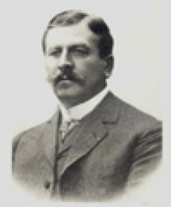
BADDELEY, Alan D. (1934- )Bellek araştırmalarıyla adını duyuran İngiliz psikolog. İngiltere, Leeds’te dünyaya geldi. Cambridge Üniversitesi’nde doktorasını tamamladıktan sonra bellek araştırmalarıyla adını duyurdu. Baddeley, belleğin yapısı ve işleyişi konusunda pek çok makale ve birkaç da kitap yazdı. Başlıca yapıtları: The Psychology of Memory (1976), Your memory: a User’s Guide (1982), Working Memory (1986), Working Memory and Language (1993).
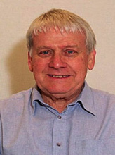
bağdaşık (chorence) Her bakımdan birbiriyle anlaşan, uyuşan; her yeri özdeş olan.
bağdaşım Bkz. eşgüdüm.
bağıl değerlendirme Bkz. değerlendirme; eğitim.
bağımlı çocuk (dependent child) 1. Gelişebilmek için anne babası ve çevresindeki başka kimselerle iyi ilişkiler kurma gereksinimi duyan çocuk. 2. Geçimi ya da yaşam uyumu için anne babasının ve içinde yaşadığı toplumun desteğine gereksinim duyan çocuk.
bağımlı değişken (dependent variable) Deneysel çalışmalarda bağımsız değişkenin, üzerindeki etkisi incelenen değişken. Örneğin, küçük çocuklarda altını ıslatmanın nedeni incelenirken, altını ıslatma davranışı, bağımlı değişkendir. Psikolojide doğrudan gözlemlenebilen davranışlar, ruhsal olaylara bağlı olarak ortaya çıkan beyin dalgaları gibi fizyolojik tepkiler, zekâ gibi vardanan bilişsel etkinlikler, bağımlı değişkenlerdir. Her araştırmada genellikle bir bağımlı değişken seçiliyor. Bağımsız değişken ise, psikolojide birden çok olabilir. Bağımlı değişken seçilirken, o değişkenin araştırılmaya uygunluk ve geçerliğine; bağımsız değişkenin etkilerine duyarlılık derecesine, ölçmeye elverişli olup olmadığına, ölçülmesinin kolaylık ve güvenilirliğine bakılıyor. Bağımlı değişkenin ölçümünde şu yollara başvuruluyor: (1) Deneğin, araştırılan davranışı ne kadar yaptığı saptanıyor (frekans ölçümü). (2) Davranışın, uyarıcı verildikten ne kadar sonra ortaya çıktığı; yani, davranışın gecikme durumu inceleniyor. (3) Davranışın ne kadar sürdüğü belirleniyor. (4) Davranışın şiddeti inceleniyor. (5) Deneğin iki ya da daha çok seçenekten hangisini seçtiği gözlemleniyor. Korelatif (bağlılaşımsal) çalışmalarda bağımlı değişken yerine yordanan değişken kullanılıyor. Bkz. bağımsız değişken; değişken.
bağımlı kişilik Bkz. bağımlılık.
bağımlı kişilik bozukluğu (dependent personality disorder) Ürkeklik, özgüvensizlik, çaresizlik, başkalarına dayanmadan edememe, aşırı isteklerde bulunup başkalarını onun sorumluluğunu almaya zorlayarak düşmanlık duygularını dışavurma eğilimi gösterme belirtileri gösteren kişilik bozukluğu. Bkz. bağımlılık; kişilik bozukluğu.
bağımlılık (passive dependency) Kişinin gereksinim ve isteklerini karşılamada, sorunlarını bir başına çözmede ve kendine yön seçmede yetersiz oluşu; karar verme ve işlerini başarmada başkalarının yardımına gereksinim duyması durumu. Bağımlı kişi, kendine değil, başkalarına dayanma eğilimi gösteriyor. Hemen her zaman, güçlü kimselerin desteğini arıyor. Küçük bir çocuk gibi, kendisi adına kararları, bağımlı olduğu kişilerin vermesini bekliyor. Güç durumlarda kolayca duygusal bozuma uğruyor; sıklıkla korku, öfke, kaygı, tedirginlik, suçluluk duygularına kapılıyor. Değişime kapalı bulunuyor. Belli kurallara körü körüne bağlılık gösteriyor. Özdenetim yapamıyor; onur duygusunun zayıf olması nedeniyle kendini başkalarının denetimine bırakıyor. Başkalarıyla ilişkilerinde hep, yönetilen durumunda oluyor. Sınırlı ilgilere sahip bulunuyor. Başladığı işi, başkaları beğenirse sürdürüyor. Dürtülerinin çoğunu baskı altında tutuyor. Bu nedenlerle, kendi kişiliğini ortaya koyamıyor ve kendini gerçekleştiremiyor. Daha da kötüsü, yaşam sorunlarının yarattığı rahatsız edici duygu ve dürtülerden kurtulmak için, nevroz ve psikoz türünden, savunmalar geliştiriyor. Kişi, her iki durumda da kendisi ve içinde yaşadığı toplum için uyumsuz, zararlı bir kişi niteliği gösterebiliyor. Bkz. ağızcıl bağımlılık; alkol bağımlılığı; bağımlı çocuk; bağımlı değişken; bağımlı kişilik; bağımlı kişilik bozukluğu; bağımlılık oranı; bağımsızlık; bağlanma-kopma; büyük, ortanca, küçük ve tek çocukta kişilik gelişimi.
bağımlılık oranı (dependency ratio) Bir tpolumdaki çocuk, çalışma gücünden yoksun hasta ve engelliler ile emekliler toplamını oluşturan bağımlı nüfusun çalışan nüfusa oranı. Bu oran,,çalışan bir kişinin ürettiğini ortalama olarak kaç kişinin tükettiğini gösteriyor. Bağımlılık oranının artması, çalışanların yükünün arttığüı anlamına geliyor.
bağımsız davranma Bkz. insanın sekiz çağı ((5) Kimlik Karmaşasına Karşı Kimlik Duygusunun Gelişimi).
bağımsız değişken (independent variable) Deneysel çalışmalarda, denetimli olarak nicel ya da nitel ayrı değerler verilerek (manipüle edilerek), bağımlı değişken üzerindeki etkisinin incelendiği değişken. Bağımsız değişkenler, sürekli ya da süreksiz olabiliyor. Araştırmanın içeriğine bağlı olarak, değişkenlerin etkisinin gözlemlenebilmesi için, en az iki düzeyde ele alınması; düzeyler arasında da yeterince fazla ve anlamlı bir fark olması gerekiyor. Örneğin, bebekler için, konuya göre değişmekle birlikte, 1, 2, 3 aylık aralıklar normal sayılırken, ilköğretimin birinci kademesindeki çocuklar için bu aralıklar, birer yıla çıkabiliyor. Düzey sayısının ikiden fazla olması yeğleniyor. İki düzey alındığında, bağımlı ve bağımsız değişken arasındaki ilişki doğrusal olmadığı halde, doğrusal gibi görünebiliyor ve yanıltıcı oluyor. Psikolojide tanımlanmış olan dört tür bağımsız değişken şunlardır: (1) Toplumsal ve fiziksel değişkenler gibi çevresel değişkenler. (2) Deneğin kendi özelliklerine ilişkin değişkenler. Bunlar kişilik, cinsellik, yaş gibi kalıcı denek değişkenleri; duruma bağlı kaygı yaratma gibi geçici denek özellikleridir. (3) Deneğin yapması gerekenlerin oluşturduğu görev değişkenleri. (4) Deneğin nasıl davranması gerektiğini bildiren yönerge değişkenleri. Aynı araştırmada incelenen iki ya da daha çok bağımsız değişkene etkenli desenler deniyor. Korelatif (bağlılaşımsal) çalışmalarda bağımsız değişken yerine, yordayıcı değişken kullanılıyor. Bkz. bağımlı değişken; değişken.
bağımsız kişilik Bkz. bağımsızlık; eğitim; kişilik bağımsızlığı.
bağımsızlaşmak (emancipation) Anne baba ya da bir başkasının güdüm ve etkisinde kalmayan duygu, düşünce ve davranış gösterecek duruma gelmek. Bkz. bağımsızlık; bilinçli dikkat.
bağımsızlık (independence) Kendini tanıma ve kabul etme; yeteneklerini geliştirmek için başkalarına değil, kendine güvenerek yeteneklerini geliştirmek için sürekli olarak girişimde bulunma; bağımsız kişilik, kişilik bağımsızlığı. Bağımsızlık kazanmış olan kişi, güçlü kişilerin desteğine sıklıkla gereksinim duymuyor. Kararlarını kendisi veriyor ve bu kararları doğrultusunda davranışta bulunuyor. Güç durumlarda dayanıklılık gösteriyor. Kolaylıkla öfkeye, korkuya ya da kaygıya kapılmıyor. Kişisel görüşünü çekinmeden ortaya koyuyor. Kendi hataları için başkalarını suçlamıyor. Olay ve olguları şansa bağlamıyor; bunları, nedenlerini bularak yorumluyor. Gerekliliğine inandığı kurallara uyuyor. Başkaları beğenmese de doğru olduğuna inandığı ve hoşlandığı bir işi yapmayı sürdürüyor. Eleştirilmeyi kabul ediyor ve buna bağlı olarak değişmeye çalışıyor. Kendini denetliyor ve gerekiyorsa davranışlarını sınırlandırıyor. Duygularını yaşıyor. İstek ve dürtüleriyle toplumsal beklentileri uzlaştırıyor. Başkalarıyla bir arada bulunmaktan ve birlikte çözülmesi gereken sorunlar için onlarla kendi istencini kullanarak iş ve eylem birliği yapmaktan mutluluk duyuyor. Her türlü ilişkisinde kendi kişiliğini ortaya koyuyor. Bağımsız kişi, güçlü olduğu alanda önderlik de yapıyor. Bkz. bağımsız davranma; bağımsız kişilik; bağımsızlaşmak; bağımsızlık duygusunun gelişimi.
bağımsızlık duygusunun gelişimi Bkz. insanın sekiz çağı ((2) Utanç ve Kuşkuya Karşı Bağımsızlık Duygusunun Gelişimi).
bağımsızlık kazanma Bkz. bağımsızlık duygusunun gelişimi.
bağışıklık sistemi (imnune system) Dışarıdan vücuda giren virüs, mantar, bakteri, toksik madde gibi yabancı mikroorganizmalara ve maddelere karşı vücudun savunma sistemi; bağışıklık dizgesi.
bağ kurma (bonding) 1. Doğum sırasında ve doğumun hemen sonrasında annenin ruhsal olarak çocuğuna bağlanması. Bağ kurma, sağlıklı bir anne-baba-çocuk ilişkisinin gelişiminde belirleyici bir etkendir. Normalde doğal bir süreç olmakla birlikte, anne ile bebeğin ayrılmasıyla ya da annenin bebeği doğumdan sonra reddetmesine neden olan durumsal ya da ruhsal etkenler nedeniyle bağ kurma, kesintiye uğruyor. Bu durum, anne yoksunluğu sendromuna yol açıyor. Bkz. annelik bağı. 2. Birbiriyle karşılıklı etkileşimden önemli ölçüde etkilenen iki insan arasındaki birlik duygusu.
bağlanma (attachment) 1. İki kişi arasındaki etkileşimin geliştirip güçlendirdiği etkin, sevecen bir karşılıklı ilişki ve bağlılık. Bkz. güvenli bağlanma. 2. Çocuğun anne baba ya da bakıcısıyla kurduğu anlamlı duygusal ilişkiler. Çok küçükken bile sömürülen, savsaklanan çocuklar, kimi zaman anlamlı bağlar kurmada zorlanıyorlar. Bkz. bağ kurma; bağlanma bozukluğu; bağlanma davranışları; bağlanma-kopma; bağlanmış enerji; tepkisel bağlanma bozukluğu. 3. Rubin’in sevgi ölçeğinin kişinin karşısındakinin bedensel varlığını ve ruhsal desteğini istemesiyle ilgili bölümü. 4. Psikanalize göre hastanın, kendisini iyileştimeye çalışan psikanaliste aşırı duygusal bağımlılık göstermesi.
bağlanma bozukluğu (attachment disorder) Kişinin sevgiye dayalı, kalıcı yakın ilişkiler kurmakta zorluk çekmesi biçimindeki bozukluk. Bu bozukluk daha çok, çocukluk dönemlerinde sömürülen, savsaklanan kişilerde görülüyor. Bunların çok sevimli görünen ilişkileri bile yüzeyseldir. Bunlar, göz göze gelmede zorlanıyor, yalan söylüyor ve sevecenliğe tepkisiz kalıyorlar. Bkz. bağlanma.
bağlanma davranışları (attachment behaviors) Bebeğin anne babasıyla ya da bakıcısıyla etkileşimde kullandığı ve yaşamının ilk dokuz ayı içinde geliştirdiği ağlama, sarılma, gülümseme, uzanma biçimindeki yaklaşım ve etkileşim sistemi; yakınlığı koruyucu davranışlar.
bağlanma figürü Bkz. tepkisel bağlanma bozukluğu.
bağlanma-kopma (attachment detachment) Karşıt tutum ve davranışların oluşturduğu bir mekanizma. “Bağlanma” terimi ile “bağımlılık” “başkalarıyla birlikte olma isteği” binişiklik gösterdiği için, bu üç kavram kimi zaman birbirinin yerine kullanılıyorsa da gerçekte bu terimler, birbirinden ayrı anlamlar içeriyor. Bkz. bağlanma; bağımlılık; kopma; yeğleme. Morgan, bebekteki bağlanmayı şöyle açıklıyor: Bebek, belirli, özel bir kişiye olumlu tepki veriyor. Zamanını o kişiyle geçirmek istiyor. Korku verici bir nesne (obje) karşısında hemen o kişiyi arıyor. Bağlandığı kişi yakınında olduğunda kendini iyi duyumsuyor. Bağlanma, bu duygu ve davranış örüntülerini anlatan iki yönlü bir süreç olarak i,şliyor. Çocuğun anne babaya bağlanmasına koşut olarak anne baba da çocuğa bağlanıyor. Bağlanma, çocuğun kendini güven içinde duyumsamasını sağlamasının yanı sıra, çevreye ilişkin bilgi sağlayıcı bir işlevi de yerine getiriyor. Bebeklikteki bağlanma, şu aşamalarda gelişiyor: Yeni doğmuş bir bebek, kişilere ayrım gözetmeden tepkide bulunuyor. Birkaç ay sonra, yabancılarla tanıdıkları ayırt etmeye ve ona göre farklı tepki göstermeye başlıyor. Tanıdıklarına daha fazla gülümsüyor, ses çıkarıyor. Tanıdıklarını yabancılardan ayırma ve onlara bağlanma davranışı, algısal seçicilik ve yeğleme sonucu ortaya çıkıyor. Bağlanma, bir ya da birden çok kişiye olduğu gibi, anne baba yerine geçen kişilere karşı da gerçekleşiyor. Bebeklerin çoğunda bağlılık davranışı, 25. ve 40. haftalar arasında gözlemleniyor; bu bağlılık, yaklaşık 44. haftada en üst düzeye ulaşıyor. Bebeklerin büyük çoğunluğunda bağlılık, yabancılardan korkma duygusundan önce gelişiyor. Onun için günlük yaşamda anneye bağlılık, korkma olarak algılanmamalıdır. Çocuk, bağlandığı kişi yanındayken çevreyi araştırmak istediğinde, o kişiden kopmaya başlıyor. Yabancıların yanında ise kopma davranışı görülmüyor. Bundan, yabancıların bebek için bir korku nesnesi olduğu anlaşılıyor. Birinci yaşın sonlarında yürüme ve konuşmanın başlamasıyla korku veren durumlarda çevreyi araştırma ve merak güdüsü ağır bastığından çocuk, kopma davranışı gösteriyor. Dört yaşlarında belli bir toplumsal gelişim gösterdiği için kopma, daha belirgin olarak görülüyor. Ergenlikten sonra ise en üst düzeye çıkıyor ve bireyleşme sürecine giriliyor. Bağlanmayı açıklayan birden çok görüş bulunuyor. Bowlby’nin biyolojik görüşü bağlanmayı, doğal zorunluklara bağlayarak açıklıyor. İnsan yavrusu, doğumdan sonra anne babasına en uzun süre bağlı olan canlı türüdür. Ayrıca anne baba ve bebeğin birbirlerine bağlanmasının genetik bir temeli de vardır. Çocuk acıkınca ağlıyor ve memeleri süt salgılayan anne de onu emziriyor. İkinci bir yaklaşım, öğrenmeye dayandırılan görüştür. Bağlanma sürecinde hem anne baba hem de bebek, karşılıklı ödüller alıyor ve bu ödüller davranışları pekiştiriyor. Anne baba, bebeği koruyor ve besliyor. Bebek de onlara gülümsüyor, sevgi gösteriyor. Bağlanma davranışını işte bu karşılıklı ödül alışverişi ortaya çıkarıyor. Bu yaklaşımlar, bebekteki bağlanma sürecinin hem biyolojik (içsel) hem de öğrenme ile ilgili (dışsal) etkenlere dayandığını ortaya koyuyor.
bağlanmış enerji Bkz. yapısal kuram.
bağlantı beyin kabuğu (association cortex) Beyin kabuğunun, ön loplar ve yan loplar gibi düşünme, akıl yürütme, sorun çözme gibi yüksek bilişsel süreçlerin gerçekleştiği varsayılan ve genel anlamda belirgin devinim ya da duyu işlevleri göstermeyen bölgeleri; bağlantı korteksi. Bu bölümler, duyusal bilgilerle devimsel komutların bütünleştirilmesinde etken oluyor.
bağlantıcılık (connectionism) 1. Thorndike’ın kalıtsal olan ya da sonradan oluşan sinirsel bağlantıların, uyarıcı ile tepkiyi birbirine bağladığını belirten görüşü. 2. Biliş psikolojisinde, bilişsel sistemlerin, her biri farklı bir etkinlik düzeyinde etkinleşen sinir ağları biçiminde çalıştığını açıklayan görüş. Bu görüşe göre, beynin temel yapı taşları durumundaki sinir ağları, çevreden ya da diğer sinir hücrelerinden gelen sinyalleri alan bir giriş ünitesinden; bu girdileri bütünleştirerek çeşitli işlemlerden geçiren bir bütünleştirme ünitesinden; bir de diğer hücrelere ya da sinir hücrelerine bilgi gönderen bir çıkış ünitesinden oluşan bir ağ biçimindedir. Bu yaklaşımda beynin çalışma biçimi ile bilgisayar sistemleri arasında yakın koşutluklar bulunduğu ileri sürülüyor. Bkz. bağlantıcı model; bağlantıcı paradigma; bağlantıcı sistemler; koşut dağılımlı işlem modeli; sinir ağı; yapay zekâ.
bağlantıcı model (connectionist model) Bellekte bilginin nasıl işlenip kullanıldığıyla ilişkili olarak birbirine koşut dağılımlı işlem ilkesine dayalı model. Bu modelde bilgi, tek bir düğümün etkinliğinden çok, ağın tümündeki belli bir etkinlik dağılımıyla temsil ediliyor ve bilgi işlem, kavramlar arasındaki doğru bağlantıların doğru ağırlıklarla etkin kılınması sonucunda gerçekleşiyor. Bkz. bağlantıcılık; sinir ağı.
bağlantıcı paradigma (connestionist paradigma) Bilişsel süreçlerle ilgili bağlantıcılık yaklaşımında öngörülen zeki bir sistem; bağlantıcı değerler dizisi Bu sistemde fiziksel sinyaller giriş; hareketler çıkış olarak değerlendiriliyor. Girişle çıkış arasında gerçekleşen bilgi işlemlerinin büyük çoğunluğunu, birbiriyle bağlantılı çok sayıda basit işlem birimleri aracılığı ile kendiliğinden yapılan hesaplamalar oluşturuyor. Daha açık deyişle sistemin, öğrenme sırasında öğeler arasındaki bağlantıların gücünü değiştiren döngüsel kurallar gereğince birbiriyle etkileşen farklı öğe katmanlarından oluştuğu varsayılıyor. Sistemin belirleyici özelliği, koşut işlem ve dağılımlı temsildir. Bkz. bağlantıcılık; bağlantıcı sistemler; koşut dağılımlı işlem modeli.
bağlantıcı sistemler (connectionist systems) Bilgi işlemin sinirsel metaforuna dayalı modeller ya da sistemler; bağlantıcı dizgeler. Bağlantıcı sistem, birbiriyle etkileşen sinire benzer ayrı birim katmanlarından oluşuyor. Hem birim katmanları arasında hem de katman içinde bağlantılar bulunuyor. Bu bağlantılar, öğrenme sırasında değişikliğe uğrayan farklı güçler (ağırlıklar) taşıyor. Bkz. bağlantıcılık; bağlantıcı model.
bağlantı korteksi Bkz. bağlantı beyin kabuğu.
bağlantılı öğrenme (associative learning) Sözcüklerin ve kavramların kullanımlarının birbirleriyle ilişkilendirilerek öğrenilmesi; çağrışımsal öğrenme. Örneğin, siyah-beyaz, gece–karanlık, parlak-Güneş, birbiriyle ilişkilendirilerek öğreniliyor. Bu birleşimlerle tümce kurma da öğrenilmiş oluyor. Bağlantılı öğrenmenin ilkelerinden yararlanılarak düzenlenen ve kullanılmakta olan birçok test vardır. Ancak, bir dilde yerleşmiş bağların güvenilir olmaması nedeniyle araştırmalarda psikologlar, “anlamsız heceler”i kullanmayı yeğliyorlar. Bağlantılı öğrenmede, öğrenilecek (aralarında bağ kurulacak) malzemelerde bitişiklik (contiguity) özelliğinin bulunması gerekiyor. Bkz. öğrenme.
bağlantı nöronu Bkz. bağlantı sinir hücresi.
bağlantısız kaygı (free-flooting anxiety) Bireyin yaşamının her yönüyle ilişkili olan sürekli kaygı.
bağlantısız konuşma (incoherence) Anlamı ve bütünlüğü bozan birbiriyle bağlantısı olmayan söz parçalarıyla konuşma.
bağlantı sinir hücresi (association neuron) Merkez sinir sisteminin çeşitli bölümlerini birbirine bağlayan bir sinir hücresi; bağlantı nöronu.
bağlaşımcı kuram (Thorndike’s theory) Öğrenmeyi, uyarıcı (stimulus) ile davranım (response) arasında bağ kurma olarak ele alan Pavlov, E. C. Tolman, Thorndike, Guthrie, Skinner, Hull gibi düşünür ve bilim insanlarının geliştirdiği öğrenme kuramı; davranışçı öğrenme kuramı. Bu kuramın belirlediği öğrenme ilkeleri şunlardır: (1) Öğrenci yaparak öğreniyor. Öğrenci neyi yaparsa onu öğrendiği için, öğrencinin öğretme ortamına etkin biçimde katılımı sağlanmalıdır. (2) Öğrenmede yineleme büyük bir öneme sahiptir. Kişi kimi bilgileri; özellikle becerileri yineleyerek öğreniyor. (3) Genelde doğru davranışın pekiştirilmesi gerekiyor. Cezayı savunanlar olsa da, doğru yanıtın oluşması için olumlu pekiştireç vermenin daha etkili olduğu kabul ediliyor. Çünkü cezanın olumsuz etkileri oluyor. (4) Güdüleme, öğrenmeyi önemli derecede etkiliyor. O nedenle güdüleme koşullarının iyi ayarlanması gerekiyor. (5) Genelleme ve ayırt etmeyle ilgili kazanılan davranımlar, çok çeşitli durumlardacöğrenilmeli ve kullanılmalıdır. Bu yolla edinilen davranımın geçerliği ve güvenirliği artıyor. Bu ilkeler, (1) Hazırbulunuşluk; (2) Sınama-yanılma; (3) Pekiştirme; (4) Yineleme olarak dört başlığa indirgenebilir. Öğrenmeyi bir ürün olarak ele alan bu kuramcılar, öğretme koşullarına ve çevreye ağırlık vermişlerdir. Bkz. öğrenme kuramları.
bağlılaşım Bkz. korelasyon.
bağlılaşım katsayısı Bkz. korelasyon katsayısı.
bağlılık (loyalty) Bir kişi, grup, kuram ya da öğretiye yönelik geliştirilen düşünsel ya da duygusal durum; sadakat. Bağlılık, gücünü bilgi ve bilinçten alıyor. Bkz. temel erdemler.
bağlılık gereksinimi Bkz. gereksinimler aşama sırası.
bağnazlık (fanaticism) Bağnazca davranış; bir inanca, bir düşünceye aşırı ölçüde bağlanıp ondan başkasını düşünememe, ondan başka her öğretiye, her inanışa karşı olma; fanatizm, mutaassıplık.
bağsal öğrenme Bkz. bağlantılı öğrenme.
bahane bulma Bkz. neden bulma
bakım vereni yitirme korkusu Bkz. zekâ geriliğinin yol açtığı ruhsal buzukluklar.
bakım verme Bkz. temel erdemler.
BALTACIOĞLU, Ismayıl Hakkı (1886-1978) Kültür ve eğitim alanında yaptığı çalışmalarla tanınan eğitimci, yazar. İstanbul’da doğdu; İstanbul’da öldü. Vefa İdadisi’ni bitirdi. İstanbul Darülfünunu’nda Tabiiye eğitimi aldı. Altı ay Ecole Normale de la Seine’de pedagoji çalışmaları yaptı. Londra, Brüksel, Berlin, Anvers, Zürih başta olmak üzere birçok kentte okul ziyaret etti. Decroly gibi birçok ünlü eğitimcilerle tanıştı. 1913’te İstanbul’a döndü; Darülfünun’da pedagoji profesörü oldu Kimi arkadaşlarıyla birlikte Maarif Nazırı Şükrü Bey’i etkileyerek İnas Darülfünunu’nun (kadın üniversitesinin) kurulmasına öncülük etti. İki kez Edebiyat Fakültesi dekanlığı; bir kez de 1923’te rektörlük (Darülfünun eminliği) yaptı. Bu yıllarda, Güzel Sanatlar Akademisi’nde resim öğretmenliği görevini de sürdürdü. 1930’da, eğitim görüşlerini uygulamaya koymak üzere, üniversiteden ayrılıp Gazi Eğitim Enstitüsü Müdürlüğü’ne geçti; ancak, dönemin Milli Eğitim Bakanı’yla anlaşamayınca yeniden üniversiteye döndü. 1938’de gerçekleştirilen Üniversite Reformu’nda kadro dışı bırakıldı. Bunun üzerine Yeni Adam adıyla bir dergi çıkararak yazarlığa başladı. 1939’da Dil ve Tarih Coğrafya Fakültesi Pedagoji Kürsüsü’ne getirildi. 1942-1950 arasında milletvekili oldu. 1950’den sonraki emekliliğinde de yazarlık yaşamını yoğun biçimde sürdürdü. Yıllarca Türk Dil Kurumu’nda çalıştı. Baltacıoğlu, çok yönlü bir eğitimci ve yazar olarak adını duyurdu. İş okulu kavramına yatkın bir okul anlayışı ile köktenci bir eğitim görüşünü benimsedi. Ona göre, ileri bir adım olan köy enstitüleri bile tam bir iş okulu değildir; iş okulu, kuramsal ve uygulamalı derslerin birlikte verildiği birer eğitim kurumudur. Baltacıoğlu, eğitim görüşünü Decroly Okulu ve P. Geheep, H. Lietz gibi eğitimcilerin kır okullarının etkisiyle, uygulamalı eğitim olarak biçimlendirdi. Ona göre eğitim, kişilik, çevre, çalışma (travay), verim (randıman) ve başlatma (inisiasyon) ilkelerine dayandırılmalıdır. Eğitim sistemi, bu ilkelere dayanarak insanları çiftçilik, marangozluk, demircilik, muslukçuluk gibi belirli bir iş yapma becerisine sahip kılmalı ve üretimle bütünleştirmelidir. Bu yolla, kendine, kültürüne, ulusal değerlerine ve dinine bilinçle bağlı, girişimci insanlar yetiştirilmelidir. Ne ki Baltacıoğlu, yaşadığı dönemde bu görüşlerini uygulayabilecek olanakları bulamadı. Başlıca yapıtları: İş Pedagojisi (1930), Terbiye ( 1932), İçtimai Mektep (1932), Toplu Tedris (1938), Türk’e Doğru (1943), Rüyamdaki Okullar (1944), Batıya Doğru (1945), Pedagojide İhtilal (1964), Kültürel Kalkınmanın Sosyal Şartları (1967).
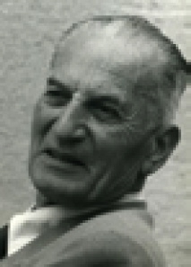
BANDURA, Albert (1925 - ) Oluşturduğu “toplumsal öğrenme kuramı”nı daha sonra “toplumsal, bilişsel kuram” olarak adlandıran kuramcı. 1952 yılında Lova Üniversitesi’nde doktora derecesini aldı. Bir yıl sonra Stanford Üniversitesi’ne geçti. Bandura’nın kuramını örneğin, Skinner’ın arı davranışçı yaklaşımından ayıran şey, insan davranışında çevresel etkenlerden çok, güdüsel etkenleri ve özdüzenleme mekanizmalarının katkılarını vurgulamasıdır. Bandura ayrıca, davranışların büyük ölçüde başkalarını gözlemleyerek edinildiğine inanıyor. Başlıca yapıtları: Social Foundations of Thought end Action (1986), Social Learning Theory (1977), Social Learning and Personality Devlopment (1963), Aggression: A Social Learning Analysis (1973). Bkz. gözlemsel öğrenme; karşılıklı belirlemecilik; modelleme.
barış (peace) Bir topluluğun ya da bir ailenin bireyleri arasında ya da karşıt varlıklar arasında oluşan uzlaşma, uyum durumu. Bkz. uyum (II)
Basedow hastalığı (Basedow’s disease, graves disease) İlkin Alman hekimi K. von Basedow’un (1799-1854) tanımladığı bir hastalık; hipertiroidizm. Kalkan bezinin hormon salgılaması yüzünden gözler dışarı doğru pörtlüyor, çok parlıyor; nabız hızlanıyor, kan basıncı yükseliyor, metabolizma artıyor, ellerde titreme görülüyor; çabuk heyecanlanma, düşünce ve duygulanma aksaklıkları, ruhsal bozukluklar ortaya çıkıyor. Kalkan bezi ameliyatla çıkarılarak özel ışınlarla ya da bazı ilaçlarla çalışmazı azaltıldığında hastalık ortadan kalkıyor.
basınç duyumu (pressure sensation) Dokunma algısının bir boyutu olarak deri yüzeyini, kas ya da eklemleri dıştan etkileyen bir gücün yarattığı duyum.
basit fobi (simple phobia) Belli nesneler, hayvanlar ve durumlar karşısında duyumsanan inatçı, bilinçdışı aşırı korkulardan, kaygı kaynaklarından kişiyi kaçınmaya zorlayan; kişinin yersiz olduğunu kabul ettiği bir kaygı bozukluğu. Belli nesnelere örnekler: Aşı, Ay, bıçak, boş alan, bulut, dişçi, et, iğne, ilaç, kadın, kan, mikrop, orman, penis, su, çiçek, güzel kadın, uçak, yeni şeyler. Belli hayvanlara örnekler: Arı, böcek, fare, haşere, kedi, köpek, örümcek, yılan. Belli durumlara örnekler: Açık yüksek yerler, ameliyat, âşık olma, ateş yükselmesi, bakılma, başarısızlık, cezalandırılma, cinsel ilişki, çocuk doğurma, delirme, derinlik, dokunulma, evlilik, fırtına, gökgürültüsü, hastalık, kalabalık, kapalı alan, karanlık, kirlenme, mezarlık, okula gitme, ölüm, öpme, sokak, uçurum, yalnız kalma, yaşlanma, zayıflık. Bkz. fobi.
basitlik yasası (law of simplicity) İnsanların, uyarıcı özelliklerini dünyaya ilişkin en basit yorumu sağlayacak biçimde gruplandırma eğilimi gösterdiğini belirten Gestalt düzenleme yasası. Bkz. Gestalt düzenleme yasaları.
basit şizofreni Bkz. şizofreni.
basit yansıtma Bkz. yansıtmalı özdeşim.
baskı-gereksinim örüntüsü (press-need pattern) H. Murray’a göre, bir kişinin dilek ve amaçlarını başkalarına kabul ettirme örüntüsü.
baskı grubu (pressure group) Siyasal karar organlarını etkileyip belli amaçlara yönlendirmek için oluşan ya da oluşturulan örgütlü topluluk. Bu nitelikte çıkar ve davranış grubu olmak üzere iki grup tanımlanmıştır Çıkar grubu, ortak çıkarların korunması amacıyla bir araya gelmiş; asıl amacı siyasal otoriteyi söz konusu çıkarlara yönlendirmek olan örgütlenmiş gruptur. Davranış grubu ise belli bir grubun çıkarları yerine, bütün insanları ilgilendiren değerleri ya da ahlak ilkelerini korumak ve savunmak için oluşturulan gruptur.
baskılama (suppression) Psikanalize göre, kabul edilemez dürtüleri, duygu ve düşünceleri engellemeye, gizlemeye ya da denetlemeye yönelik bilinçli çaba. Bu mekanizma, bilinçsiz olarak çok daha kapsamlı, karmaşık süreçlerle gerçekleşen bastırma (reprerssion) ile karıştırılmamalıdır. Örneğin, bir ortamda, içinden “kalkıp gitme” ya da “birisine bir tokat atma” isteği geçmesine karşın, bu istekleri engelleyen kişinin yaptığı şey, baskıdır. Bu mekanizmanın kullanımı sırasında kişi, duygularının da isteğinin de engelleme çabasının da farkındadır. Bu durum, akla uygun düzeyde kaldığı sürece, davranışlarda ve ruhsal yapıda köklü, kalıcı bir değişim yaratmıyor.
baskın (dominant) Baskınlık özellikleri taşıyan; dominant, egemen, başat. Bkz. baskın düşünce; baskın gen; baskınlık; baskın olmayan yarımküre; baskın özellikler.
baskın düşünce (supervalent thought) Aşırı bir yoğunluğa ulaşan ve kişinin aklından çıkarma çabalarına karşın, inatla varlığını koruyan takınaklı düşünce. Örneğin, bilinçdışı bir etkenden kaynaklanan kıskançlık, baskın düşünce ürünüdür. Bkz. takınak.
baskın gen Bkz. baskınlık.
baskınlık (dominance) 1. Bir şeyin başka bir şeyi denetlemesi; başatlık, egemenlik. 2. Etolojide, aynı türden bir canlının yaşam alanı, yiyecek, kızışma dönemindeki dişiler gibi kaynakları kullanma önceliği ve öbür üyeleri denetleme davranışları. Baskınlık, insanda ise ilişkiyi denetleme, yönlendirme, belli birey ya da grupların yaşayış, kaynaklara ulaşma biçimlerini denetleme gibi davranışlarla beliriyor. 3. Kalıtımbilimde bir kalıtsal özelliğin, öbürüne baskın çıkma eğilimi; bir genin tam fenotip olarak hem farklı genlilerde hem de eş genlilerde ortaya çıkması. Örneğin, koyu saç rengi, açık saç rengine; koyu ten rengi, açık ten rengine; kahverengi göz geni, mavi göz genine baskındır. 4. El, ayak, göz, kulak gibi vücudun belli organlarını kullanma eğilimi. 5. İşleyiş bakımından vücudun anatomisinden birinin, öbür yapılara başatlığı. Örneğin beyin, böyle bir başatlık örneğidir. Bkz. baskınlık duygusu; gensel tıp.
baskınlık duygusu. (dominance feeling) Bir kişinin kendi dilek ve amaçlarını başkalarına kabul ettirme duygusu; hâkimiyet hissi.
baskın olmayan yarımküre (nondominant hemisphere) Beynin dili denetlemeyen yarısı. Bu, insanların çoğunda sağ yarımküresidir. Bu yarımkürenin yersel (lokal) süreçlerde etkili olduğu düşünülüyor.
baskın özellikler Bkz. MENDEL, Johann Gregor.
baskıyla yönetme Bkz. büyük, ortanca, küçük ve tek çocukta kişilik gelişimi.
basmakalıp davranış (stereutyped behavior, stereotyped response) Belirli bir soruna ilişkin özel koşulların ya da varılan sonucun değiştiremediği davranış.
basmakalıp yargı Bkz. sterotip.
bastırma (repression) Freud’a göre, uygun görülmeyen içgüdülerin (dürtülerin) kişinin isteği dışında bilinçdışına itilmesi ya da itilen dürtü, anı ve yaşantıların bilince çıkmasının önlenmesi biçiminde işleyen, benliğin temel savunma mekanizması; reprersyon. Bilinçdışı çalışan bir mekanizma olan bastırma, Freud’un izlediği ilk savunma sürecidir. Karşıt enerji kullanılarak gerçekleştirilen bastırma ile ilkelbenlik dürtülerinin boşalımı, eyleme geçmesi ve doyuma ulaşması engelleniyor. Bastırılarak bilinçdışında tutulan enerjiler, ancak rüyadaki gibi, karşıt enerji kullanımının gevşemesiyle; başka deyişle, kullanılan karşıt enerjinin, boşalmak isteyen enerjiden daha az olması durumunda bilince çıkabiliyor Freud, iki bastırma biçimi tanımlamıştır. Bunlardan biri temel bastırma adı verilen ve aşırı uyarıların yol açtığı gergin ve acı verici durumdan, güçsüzlüğü nedeniyle kurtulamayan bebeğin bu acıya son vermek için bu uyarıları yok bilmesidir. İnsan, bebeklikten sonra da kendisine acı veren, kendisinin uyumunu bozduğunu sandığı tüm dürtüleri bastırarak bilinçdışı kılıyor. Bunlar da sonradan gerçekleşen bastırmalardır. Her insanın kullanmak zorunda olduğu bu savunma mekanizması, önemli sakıncalar yaratıyor. Bastırılan istek ve eğilimler, bilinçdışında varlıklarını değişmeden korudukları ve eyleme geçmek, doyum sağlamak için her fırsattan yararlanarak, kılık değiştirerek bilince çıkmak istiyor. Bu durumda benlik, önlem almak, savunma gücünü sürekli hazır tutmak zorunda kalıyor. Tehlikeyi giderme uğruna, bastırılan istekle çok uzaktan ilişkisi olan dürtüler bile bastırılıyor. Böylece bastırma, zincirleme sürüp gidiyor. Bastırmaların sonucu olarak insanlar, aşağıda belirtilenlere benzer nicelik ve nitelikte acılar çekiyor, belirsizlikler yaşıyorlar: “Bilmemki... Unuttum... Anımsamıyorum... Düşünemiyorum..”; “Aklım karışıyor... Aklım ermiyor... Anlayamıyorum...” ya da: “Canım sıkılıyor; içim içime sığmıyor; canım hiçbir şey istemiyor.”; “Yüreğim daralıyor; kalbim sıkışıyor; başım zonkluyor.”; “Çok fenayım; neyim var, bilmiyorum.” Bunlara organik bir bozuklukları olmamasına karşın, başı dönenler, fenalık geçirenler, gülerken ağlamaya başlayanlar, hıçkırıktan kahkahaya geçenler, çıt çıkınca yerinden fırlayanlar da eklenebilir. İç dürtülerini ve onlarla ilişkili uyarıları yaygın biçimde bastıranlar, yukarıda sıralananlar gibi nedenleri belirsiz bedensel yakınma, bilememe ve anlayamama ile kişiliklerini kısırlaştırıyorlar. Bu yüzden birçok kadın ve erkeğin tadı tuzu kaçıyor. Bir de belirli nedenlerle bir süre için yok saydığımız şeyler var. Çok iyi bildiğimiz türkünün sözlerini, en yakın arkadaşımızın adını bir an unutuveriyoruz. Dostumuz için aldığımız armağanı dükkânda bırakıp çıkıyoruz. Arkadaşımıza anlattığımız önemli şeyin can alıcı noktasını atlayıveriyor, iş işten geçtikten sonra anımsıyoruz. Uyarının o anda, yasaklanmış olanlarla bir ilişkisi kurularak bilinçdışı edilmesine; daha sonra ise yasak olmadığının sezilip yeniden bilinçlenmesine izin verilen bu tür bastırmalara Freud, geçici bastırma diyor. Yürekli kişiler, özgür çağrışım (free association) yöntemini kullanarak kendilerini rahat bırakıp akıllarına gelen her şeyi art arda düşünme yoluyla, unuttukları kimi şeyleri ve onları neden unutmuş olduklarını bulabiliyorlar. Bastırılanları bulmak için de aynı yöntem geçerlidir. Bu yöntemde akla ne gelirse bırakılıyor. Önce, akla uygun olanlar; daha sonra, akla daha az uygun olanlar; en sonunda da saçma sapan diye nitelenen şeyler akıldan geçiriliyor. Bir anda kişinin karşısına bir boşluk, sanki bir duvar çıkıyor. Kişi, işte o anda bilinçdışının karşısındadır. Buraya varınca ya bu kişisel oyundan vazgeçecek ya da yürekli davranıp çabalayarak kendi içinde binlerce şeyin kaynayıp durduğunu görebilecektir. Ancak, bu oyuna fazla dalınmaması, aslanın üstüne fazla gidilmemesi gerektiği anımsatılıyor. Onunla yalnızca dost olunabildiği zaman ona güvenle yaklaşılabileceği belirtiliyor. Bkz. baskılama; benliğin savunma mekanizmaları; birincil bastırma; duygusal boşalım; eksiklik karmaşası.
başaramama duygusu Bkz. başarısızlık korkusu.
başarı (achievement) 1. Eğitimde, akademik çalışmada, genel alanda ya da okuma, matematik gibi özel bir beceri alanında ortaya konulan yeterlik düzeyi. 2. Kendisine standartlaştırılmış bir dizi test uygulanan kişinin (öğrencinin) gösterdiği olumlu tepkilerle ortaya koyduğu sonuç. Gerçek başarı, her bireyin kendi ilgi ve yetenekleri yönünde ve oranında en iyi gelişmesine olanak veren toplumsal-ruhsal ortamda ortaya koyabildiği edimdir. Bkz. başaramama duygusu; başarı gereksinimi; başarı güdüsü; başarı testleri; başarılı rüyalar; başarılı savunmalar; başarı nevrozu; başarının ölçülmesi ve değerlendirilmesi; başarısız rüyalar; başarısız savunmalar; başarı testleri; başarı yaşı; başarı-yetenek karşılaştırması; başarma amacı.
başarı gereksinimi (need for achievement) D. W. McClelland’a göre, kökleri çocukluk dönemlerinin ortalarına dek uzanan; kişiyi uygun bir başarı olasılığı bulunan işlere girişmeye ve çok kolay işler ile başarısızlık korkusu yüzünden, çok zor işlerden kaçınmaya güdüleyen; bir ölçüde kalıcı bir kişilik özelliği. Bu özelliği belirgin olan kişiler, zor işlerde daha uzun süre çalışmaya, daha başarılı olmaya ve gerçekçi, meydan okuyucu hedefler belirlemeye yatkın oluyorlar. Bu kişilik özelliği, en çok tematik değertlendirme testi (TAT) gibi yansıtma testleri ile ölçülüyor.
başarı güdüsü (achievement motive) H. Murray’ın kişilik kuramına göre, engelleri aşma, zorluğu bilinen şeylerin üstesinden gelme, yarışma ortamında başarılı olma dürtüsü. Bkz. başarı gereksinimi.
başarılı rüyalar Bkz. korku (karabasan).
başarılı savunmalar Bkz. benliğin savunma mekanizmaları.
başarı nevrozu ( success neurosis) Pisikanalize göre, zengin olan, büyük başarılar kazanan bireylerde görüldüğü düşünülen nevrotik bozukluk. Bu nevrozun, babayla çocukluktaki rekabetten kaynaklanan bilinçsiz suçluluk duygularından ve iğdiş edilme korkusundan kaynaklandığına; bunların da mazohizm eğilimleri, acı çekme gereksinimi gibi nevrotik belirtilere yol açtığına inanılıyor. başarının ölçülmesi ve değerlendirilmesi Bkz. değerlendirme; eğitim; ölçme.
başarısızlık korkusu (fear of failure) Sınav kaygısı; işini yitirme, küçük düşme, özsaygısını yitirme, cinsel yetersizlik gibi kişinin kendi koyduğu ya da başkalarınca konan standartlara, hedeflere ulaşamama korkusu. Bkz. başarı gereksinimi.
başarısız rüyalar Bkz. korku (karabasan).
başarısız savunmalar Bkz. benliğin savunma mekanizmaları.
başarı testleri (achievement tests) Bir öğrencinin ya da bir öğrenci topluluğunun belli bir konuda genellikle belirli bir öğretim sonunda elde ettiği bilgi, beceri ve anlayışı ölçen testler. Bilgi testleri de denilen bu testlerle başarı düzeyi ölçülüyor. Bu testler, genellikle öğrenim programlarının düzenlenmesi, sınıfların başarılarının karşılaştırılması, öğrencilerin kümelere ayrılması, öğretmenlerin ve okulların değerlendirilmesi, öğrencinin bir üst programı izleme yeteneğine ulaşıp ulaşmadığının saptanması, okula ya da belli bir programa öğrenci seçme amacıyla kullanılıyor. Başarı testlerinin puanlanması kesinlik gösterdiği için uygulayanlarca aynı biçimde puanlanabilmeleri olanağı vardır. Ancak, hazırlanması, uygulanıp yorumlanması özel bir bilgi ve beceri istiyor. Öğretmen yapısı başarı testleri ve standart başarı testleri olarak iki çeşit başarı testi uygulanıyor. Öğretmen yapısı başarı testleri, bir öğretmenin ya da aynı okulda çalışan öğretmenlerin uygulamakta oldukları öğrenim programına ve dersin içeriğine sıkı sıkıya bağlı olarak hazırladıkları ve bunları uygulayarak elde ettikleri puanları yalnızca sınıf içinde kullandıkları testlerdir. Standart başarı testleri ise, daha çok, öğrencinin geleceğine ilişkin kararlar alınması gerektiğinde, geleceği kestirmede sonuçlarından yararlanılabilen testlerdir. Okullarda belli zamanlarda öğrencilerin tümüne uygulanmak üzere, okunanı anlama, dil, matematik ve fen alanlarında standart başarı testleri hazırlanıyor, normlar geliştiriliyor. Bunlar, rehberlik ve psikolojik danışma merkezlerinde de önemli bir gereksinimi karşılıyor. Bu testlerle öğretim yılı başında öğrencilerin bilgi düzeylerini belirleme, öğretim için birçok anlamlı önlem alma fırsatı da yaratılmış oluyor. Bkz. başarı-yetenek karşılaştırması.
başarı yaşı (achievement age) Kişinin kendi takvim yaşı grubundaki norm ya da standart testleriyle ulaştığı başarı düzeyi; eğitim yaşı, konu yaşı.
başarı-yetenek karşılaştırması (comparison of success and ability) Öğrencilerin başarılarının yeteneklerinin altında mı, üstünde mi, yoksa düzeyinde mi olduğunu belirleme. Bunun için başarı-yetenek karşılaştırma çizelgesinden yararlanılıyor. Bu amaçla, bir sınıftaki öğrenciler, yetenek testinden aldıkları puanlara göre, en yüksekten aşağıya doğru sıralanıyorlar. Bunlar, ortalama beş eşit kümeye ayrılıyor. Sonra yazılı, sözlü ve başarı testi puanlarına göre başarı sırasına konulup yine beş eşit kümeye bölünüyorlar. Bu kümeler de aynı çizelge üzerinde, en düşük olandan, yüksek olana doğru, yatay biçimde sıralanıyor. Beşli küme sınırları arasından dikey, yatay çizgiler çizildiğinde oluşan dörtgen içinde, 25 yetenek-başarı ortak dörtgeni ortaya çıkıyor. Böylece, üstün yetenekli, başarılı öğrenciler gibi, üstün yetenekli ve düşük başarılı öğrencilerle, düşük yetenekli ve üstün başarılı olanlar da çizelgede gözler önüne serilmiş oluyor. Örneğin, kimi öğrencilerin başarıları ile yetenekleri arasında bir uyum görülüyor. Kimisi, yeteneğinin çok üzerinde bir başarı elde etmiş görünüyor. Kimisinin, başarısını yetenek düzeyinin biraz üzerine çıkardığı gözlemleniyor. Kimilerinin, kendilerinden beklenenin altında bir başarı düzeyi tutturabildiği anlaşılıyor. Kimileri de çok düşük bir başarı sergileyebiliyor. Bundan sonra sıra, bunların nedenleri üzerinde yorum yaparak gereken önlemlerin alınmasına geliyor. Bkz. başarı; yetenek.
başarma amacı Bkz. ilgiler, amaçlar.
başat Bkz. baskın.
başat gen Bkz. baskın gen.
başatlık Bkz. baskınlık.
başatlık duygusu Bkz. baskınlık duygusu.
baş eğme Bkz. dinleme.
başkalarına boyun eğme gereksinimi Bkz. benlik (E. Fromm’a göre).
başkalarına saygı Bkz. hümanist öğretmenlik (İnsana Saygı).
başkalarıyla birlikte olma isteği (affiliation) İnsanın kendi türüyle toplu halde yaşamasının temel sayıtlısı; güdüsel-evrimsel yaklaşım. İnsanların niçin birlikte olmayı istediklerini açıklayan çeşitli kuramsal yaklaşımlar vardır. Bunlardan biri olan güdüsel-evrimsel yaklaşıma göre insan, topluluk halinde yaşamını sürdürme olanağını, doğal ayıklanma sürecinde ortama uymayı kolaylaştıran seçkisiz çiftleşme ve yapı değişimi (mutasyon) sonucu kazanmıştır. Evrim sürecinde, birlikte yaşama eğilimine sahip olan insanlar ayakta kalmış ve bir arada yaşama, böylece insan türünün özelliği olmuştur. Doğal zorunluluklara dayanan biyolojik yaklaşıma göre, yeryüzünde doğum sonrasında anne babasına en uzun süre bağlanan; canlılığını sürdürebilmek için anne babasına gereksinim duyan canlı, insandır. İkincil gereksinimlere dayanan yaklaşıma göre, sevilme, saygı görme ve onaylanma gibi ikincil gereksinimlerin karşılanması, başka insanların varlığını gerektiriyor. Bu da insanlarla bir arada yaşama isteğinin ortaya çıkmasına neden oluyor. Özellikle ilk yaşlarda beslenme, barınma gibi birincil gereksinimler de birey için başkalarıyla birlikte yaşamayı zorunlu duruma getiriyor. Daha sonraki yaşlarda ise toplumsal-kültürel bir varlık olan insan için başkalarıyla birlikte yaşamak, vazgeçilmez oluyor. Öğrenmeye dayanan yaklaşıma göre ise insanlar, başka insanlarla bir arada olmaktan dolayı ödüllendiriliyorlar. Buna bağlı olarak insan, yaşamının daha ilk yıllarında iken, diğer insanlarla bir arada bulunmakla ödül arasında bir bağ kurmayı öğreniyor. Bir arada olmayı artıran ya da azaltan görgül araştırma verileri olarak da şu özellikler ortaya çıkıyor: Korku, bir aradalığı artırırken kaygı, azaltıyor ve kişiyi tek başına kalmaya itiyor. Bunun nedeni, korkuya kaynaklık eden nesnenin belli olması, gözlemlenebilmesi; kaygıya kaynak oluşturan nesnenin ise belli olmaması, gözlemlenememesidir. Korku herkesçe anlaşılıyor ve korkuya hemen hemen aynı tepki veriliyor; buna bağlı olarak, kişi kendisini başkalarıyla karşılaştırabiliyor. Kaygı ise özneldir. Kaygının nesnel bir ölçütü olmadığından kişi, başkalarının kendini anlamayacağını düşünerek, bir arada olmayı, kaygısını başkalarıyla paylaşmayı istemiyor. Açlık da bir arada olma isteğini artıran bir etkendir. Çocuklukta kendini güvenli, rahat duyumsama ve çevreyle ilgili bilgi sağlama gereksinimi de bir arada olma isteğini ortaya çıkarıyor. Yetişkinlikte ise eğlenme, yardımlaşma, toplumsal onay alma, cinsel doyum sağlama ve kendini değerli, güçlü kılma isteği, insanı bir arada olmaya yöneltiyor. Kimileri de bir aradalığın kişiye sevgi, statü, bilgi, para ve hizmet sağladığını öne sürüyorlar. İlişki içindeki her birey, o ilişkiden, bir ya da birkaç çıkar sağlayabiliyor. Ancak, bu ilişkilerin, aynı boyutta ya da ölçüde de olsa, ödül sağlamış olması önkoşuldur. İlişkiler, bireylere çok çeşitli ve farklı boyutlarda ölçütler sağlıyor. Bu nedenle hangi tür ve biçimde olursa olsun, tek ilişki, bireyin tüm toplumsal gereksinimlerini karşılayamıyor. Adler’e göre ise insan toplumsal bir varlıktır. O nedenle kendinden çok topluma yönelik bir yaşam biçimi geliştiriyor. Bu özelliğinin gereği olarak öbür insanlarla ilişki kurmak, birey için bir gereksinimdir. Bkz. bireysel psikoloji; kendini gerçekleştirme kuramı.
başkaldırı (revolt) 1. Her hangi bir nedenle belli bir düzene ve onu koruyan güçlere karşı gelme, ayaklanma; isyan etme. 2. Bir kimseye ya da bir duruma, bir davranışa boyun eğmeyerek karşı gelme.
BAŞOĞLU, Muzaffer Şerif Bkz. ŞERİF, Muzaffer.
baştan ayağa gelişim yasası (law of copholocaudal development) Yapısal ve devimsel gelişimin, yaşamın başlangıcında baş bölgesinden başlayarak yavaş yavaş ayağa doğru ilerlediğini belirleyen yasa.
başvuran Bkz. danışan.
batarya (battery) Kişilik, zekâ, başarı, özel beceriler gibi çeşitli psikoloji alanlarındaki işleyişi değerlendirme ya da tanı amacıyla uygulanan bir dizi test. Batarya, genellikle aynı nüfusta standartlaştırılıyor; bu yolla çeşitli testlerden elde edilen norm değerleri, bireylerin tek tek değerlendirilmesinde bir ölçüt olarak kullanılıyor.
Batı’da eğitimin gelişimi (development of education in the West) Başta Avrupa ülkeleri olmak üzere Batı dünyasındaki eğitimsel gelişmeler. Avrupa’da eğitim, özetle şöyle gelişmiş bulunuyor: Eski Yunanistan’da “vücudu güzelleştirmek, zekâyı ve ahlakı geliştirmek” amacıyla eğitim yapılıyor. Jimnastik, müzik ve akademik eğitim, hem iyinin hem de güzelin kaynağı sayılıyor. Eskil Çağ eğitiminin babası olarak nitelendirilen Sokrates (İ. Ö. 470–399), kendine özgü soru-yanıt yöntemiyle gimnaz bahçelerinde gençleri “korkaklık, cesurluk, yanlış, doğru, devlet, politika” gibi kavramlar üzerinde düşündürüp konuşturuyor. Sokrates’in öğrencisi Platon (Eflatun) (İ. Ö. 427–347), öğretmeninin nesnel yakalama öğretisinden farklı olarak görüntülerin arkasına ulaşma, özü bulma öğretisini geliştiriyor. Platon, insan eğitimi için kişilik, beden, estetik, meslek ve felsefe eğitimi aşamalarını öneriyor ve yeni doğan çocukların, anne babalarından alınıp devlet bakım evlerinde bu aşamalara göre eğitilmesi gerektiğini ileri sürüyor. Aristo (İ. Ö. 384–322), Doğu dünyasını da etkilemiş olan felsefesiyle ünleniyor. Ona göre “İnsan, toplumsal bir varlıktır. Eğitimin görevi de insanı devletin ve toplumun erdemli bir varlığı durumuna getirmektir. İnsan, ancak böyle bir eğitimle mutlu olabilir.” Aristo, Platon’un tersine, çocuğun gelişimi ve eğitiminde aileyi temel kurum sayıyor. Doğada eşitlik olmadığı için eğitimin de bireysel ayrılıklara uygun olması gerektiğini savunuyor. Eski Yunanistan’ın aydınlanmacı eğitiminde bu üçlünün öğretileri belirleyici oluyor. Romalılarda Yunan kültüründen etkilenmeden önce eğitim, iyi yurttaş yetiştirmek amacıyla ataerkil ailenin sorumluluğunda sürdürülüyor. Eğitimde ağırlıklı olarak alıştırma yöntemi kullanılıyor. Anne bakımı bittiğinde erkek çocuk, babasına; kız da annesine çıraklık ediyor. Erkek çocuk, daha sonra bir yargıcın, bir askerin çırağı oluyor. İ. Ö. 425’ten sonra ilk ve ortaokullar açılıyor. Ortaokulda coğrafya, mitoloji ve hukuk okutuluyor. İzleyen yıllarda açılan retorik (söz bilim) okullarında konuşma, dil ve edebiyat dersleri veriliyor. Birçok aydın düşünür, Roma eğitimine ışık tutuyor. Örneğin Cicero (İ. Ö. 106–43), eğitimin ilk çocukluk döneminde başlamasını öneriyor. Çünkü ona göre çocuklukta öğrenilen açık ve düzgün bir dil, insanı bilinçlendirmekte ve ahlaksal bütünlüğe ulaştırmaktadır. Seneca (İ. Ö. 4 - İ. S. 65), eğitime “İnsan okul için değil; yaşam için öğrenmelidir.” ilkesini getiriyor. Plütarkhus (İ. S. 46–125), “Doğru olanın, çocukların güzelden hoşlanacak, çirkinliklerden uzak duracak biçimde eğitilmesi” olduğunu ileri sürüyor. Eskil Çağ’ın aydınlanmacı eğitimi, 4. yüzyılda Hıristiyan okullarının açılmasıyla dinselleşmeye başlıyor. Araştırma ve buluş yasaklanıyor. Manastır okullarında okuma yazma, hesap öğretilse de dualar, dogmalar ve İncil çalışmaları temel alınıyor. Müziğe, yalnızca kilise korolarında sıcak bakılıyor. Hıristiyan okulları, 8–10 yıllık bir eğitimle katı dindarlar yetiştirecek bir düzene sokuluyor. Cambridge, Oxford, Heidelberg, 12. yüzyılda birer kilise okulu olarak açılıyor. Böylece Avrupa’da eğitim, Ortaçağ (476-1453) boyunca dinsel bağnazlığın karanlığında sürdürülüyor. Avrupa’da derin acıların yaşandığı Ortaçağ karanlığı, Yeniçağ’ın da başlangıcı sayılan İstanbul’un alınışından (1453) sonra başlayan Rönesans ve Reform hareketleriyle son buluyor. 15. ve 16. yüzyıllarda Rönesans’la gelişen felsefe, edebiyat, güzel sanatlar alanındaki yenilik akımlarıyla birlikte sayıları artan hümanistler, İlkçağ eğitiminden esinlenerek yeni okullar açmayı, kitleleri aydınlatma çalışmalarını hızlandırıyorlar. Yaratıcı düşünce, bu dönemde eğitim kurumlarına yerleşmeye başlıyor. Yeni eğitim kuramcı ve uygulamacılarının çalışmalarıyla okullarda aydınlanma yayılıyor. Örneğin, Erasmus (1467–1536), çocuklara kısa sürede her şeyi öğretmeye kalkışmanın doğru olmadığını; öğretimde bireysel ayrılıkların göz önünde tutulması, öğretmenin öğrencilere sıcak davranması gerektiğini belirtiyor. Montaigne (1533–1592), ansiklopedik bilgi hamallığına karşı çıkıyor. Çocukların gerçek yaşam içinde yetiştirilmesi gerektiğini ileri sürüyor. Luther, dogmaları reddeden, yeni kilise ve din arayışındaki Hıristiyan’ı yetiştirmeyi hedefleyen bir reformcu olarak savaşım veriyor. Katolik kilisesinin katı kademeleşmesine karşı çıkarak laiklere büyük bir yer veren daha ılımlı bir kademeleşme getiriyor. Ratke’ye göre, okuma yazma öğrenemeyen çocuk okuldan alınmamalıdır. Ezbercilik yerine gözlem yöntemi kullanılmalı, somuttan soyuta ilkesine uyulmalıdır. Çocukta öğrenme isteği uyandırılmalı, bedensel ceza kaldırılmalıdır. Öğrenmede büyük sorumluluğu öğretmenler üstlenmelidir. Comenius, ünlü “Büyük Didaktika”sında eğitimin iyileştirilmesini şu beş nedenin engellediğini ileri sürüyor: (1) Okullarda öğretmenler, başarılı bir eğitim yapacak yöntem bilgisinden yoksundurlar. (2) Öğretmenlere işlerini kolaylaştıracak ders araçları verilmiyor. (3) Çocukların yetenekleri keşfedilip o yönde yetiştirilmelerine olanak veren önlemler alınmıyor. (4) Okullar, eski yöntem ve kuralları savunan ve her yeniliği küçümseyen kişilerin eline geçmiştir. (5) Öğretim yöntemlerine uygun yardımcı kaynaklar yoktur. 17. yüzyıl, Avrupa’da bireyin bağımsızlığı ve düşünce özgürlüğü çağı; 18. yüzyıl da eğitim çağıdır. Bu yüzyıldaki aydınlanma, eğitime birçok yeni kavram kazandırmıştır. Örneğin, Locke, Eğitim Üzerine Düşünceler adlı yapıtında eğitimin doğanın yolunu izlemesi, doğanın verilerini en yüksek düzeye çıkarması gerektiğini belirtiyor. Fransız aydınlanma öncülerinden Bayle, Voltaire, Montesquieu, eğitimde köklü yeniliklerin yapılmasını istiyorlar. “Öğretim, insanlara onur verir; insanları kölelik için doğmadıkları bilincine ulaştırır.” diyen Diderot, okul sistemini halk okulları (ilkokul), sanat okulları (lise) ve fakülteler (yüksek okullar) biçiminde aşamalandırıyor. Caradeuv, laik eğitim için ön sıralarda savaşım veriyor. Herder, ulusal eğitim kavramını ilk kez kullanıyor. Rousseau, doğaya dönük (natüralist) eğitim üzerine bir dizi yapıt yayımlıyor. Bunların en önemlisi olan Emil ya da Eğitim Üzerine adlı yapıtında, yaratılan her şeyin iyi olduğunu; onları insanların bozduğunu; çocuğun hekim, asker, papaz olmadan önce insan olması gerektiğini vurguluyor. 1789 Fransız Devrimi, eğitime de eşitlik ilkesini getiriyor ve okulların özgürleşmesine yol açıyor. Yeni hümanizma döneminde Humbold, “Her çeşit okulda yeteneklerin tümü geliştirilmelidir.” yargısıyla çağdaş eğitimin kapısını daha da aralıyor. Kant, bireysel eğitimin kültür, uygarlaşma, ahlak kazanma amaçlarının tüm insanlık boyutunda ele alınması için devletleri, uluslararası kuruluşları göreve çağırıyor. Ficfte, ulusalcı eğitimi gerçekleştiren okulların oluşturulmasını savunuyor. İnsanın Estetik Eğitimi Üzerine Mektuplar’ın yazarı Shiller, eğitimde estetik yaşantının temel öğe olmasını istiyor. Hegel, insanın, kendi devletinin ahlak kurallarına uygun yaşamak zorunda olduğunu belirtiyor. Goethe, eğitimin doğal özün açılıp gelişmesini sağladığını bildirerek evrensel eğitime çok yönlü kişilik eğitimi kavramını armağan ediyor. Pestalozzi, toplumsal eğitimin fikir babalığını yapıyor. Yetim ve yoksul yurtları kurup bunların eğitimi ile uğraşan Pestalozzi “İçimi bir düş, bir eğitim imgesi, insanlık eğitimi, halk eğitimi, yoksulların eğitimi dolduruyor.” sözüyle eğitimden ne beklediğini dile getiriyor. Pestalozzi, temel eğitimle bedenin ve zihnin geliştirilmesini; ahlak eğitimiyle de sevginin ve iyiliğin aşılanmasını, ruhun eğitilmesini istiyor. Frobel, okul öncesi eğitimi ele alıyor ve çocuğun doğumla birlikte tanınmaya başlanmasını ve kendisine bedensel gelişimine uygun bir eğitimin kesintisiz verilmesini öneriyor. Toplumcu eğitim görüşünü sistemleştiren Marx ve Engels, insanların her yönden yetişmelerinin sağlanması, “yeni insanın, üretici temelde işe katılarak biçimlendirilmesi” gerektiği ilkesini getiriyorlar ve eğitimin bedensel, zihinsel ve politeknik olmak üzere üç yönden gerçekleştirilmesi gerektiğini belirtiyorlar. Nietzsche ise üstün insan eğitimi üzerinde duruyor ve “Büyük insanlar eğitmek, insanlığın en yüksek görevidir.” sözüyle özdeki amacını dile getiriyor. Böylece Avrupa, 20. yüzyıla çok yönlü bir eğitimle bireye özgü düşünsel, devimsel, toplumsal ve duygusal gelişimi gerçekleştirmeye başlamış olarak adım atıyor. Batı’da 20. yüzyılda da eğitim alanında ve onun alt yapısını oluşturan alanlarda önemli gelişmeler oluyor. İnsana ve çağdaş eğitime bakış açısını büyük ölçüde değiştirip geliştiren kişilik ve öğrenme kuramları ortaya konuluyor. Örneğin, Titchener yapısalcılık; William James işlevselcilik; Watson davranışçı psikoloji kuramını geliştiriyor. Freud topografik kuram (bilinç, bilinçaltı ve bilinçdışı kuramı); yapısal kuram (ilkel benlik, benlik ve üst benlik kuramı); içgüdü kuramı, ruhsal-cinsel gelişim kuramı ve ruhsal ekonomi kuramı ile adından en çok söz ettiren psikanalist oluyor. Adler, bireysel psikolojiyi; Jung, analitik psikolojiyi; Wertheimer, Koffka, Köhler, Geştalt psikolojisini kuruyorlar. Erikson, insanın sekiz çağı kuramını geliştiriyor. Benlik psikanalistleri, benliği öne çıkaran bir yaklaşım ortaya koyuyorlar. Fromm, özgürlükten kaçış yaklaşımını geliştiriyor. Birçok yazar ve psikologun katkısıyla varoluşçu psikoloji geliştiriliyor. 1950’li, 1960’lı yıllarda ABD’de önde gelen temsilciliğini Maslow ve Rogers’ın ortaya koydukları hümanist psikoloji, oldukça yaygın yandaş topluyor. Bu gelişmeler, çağdaş eğitime daha aydınlık bir altyapı kazandırmış oluyor. Bkz. eğitim; eğitim psikolojisi; eğitim sosyolojisi; eğitim tarihi; Türklerde eğitim.
Batılılaşma (Westernization) 1. Batı uygarlığının egemenlik alanı içinde kalan üçüncü dünya ülkelerinin, bir yandan söz konusu uygarlığın baskısı; öte yandan da çevre aydınlarının çabaları ile siyasal, toplumsal, hukuksal, bilimsel ve kültürel alanlarda Batı toplumlarına benzemeye çalışmaları. 2. Yukarıdaki genel çerçeve içerisinde Osmanlıda 19. yüzyılın ortalarında Tanzimat Fermanı, Islahat Fermanı gibi hukuksal düzenlemelerle Batılı askeri, teknik ve siyasal eğitim kurumlarının oluşturulmasıyla başlayıp gelişen; 20. yüzyıl başlarında Cumhuriyet döneminin başlamasıyla harf, hukuk, kılık kıyafet, eğitim, devletin örgürlenme biçimi gibi alanlarda yapılan köklü devrimlerle hızlanan Batı’ya benzeme, onun gibi olma, Batılı dünya görüşünü ve yaşam biçimini benimsemeye yönelik hareket ve düzenlemelerin genel adı.
batıl itikat Bkz. boşinanç.
bazal (basigue) Fazla olan bazı tuz ya da baz özelliklerini taşıyan madde.
bazal arter migreni (basilar artery migraine) Daha çok genç kadınlarda görülen, aybaşı döngüsüyle ilişkili olan ve ana beyin damarlarından birisindeki bir rahatsızlığı yansıtan bir migren türü. Vertigo, kas eşgüdümünde kötüleşme, çift görme, bu migren türünün başlıca belirtileridir.
bazal gangliya (basal ganglia) Beynin orta kısımlarında bulunup duyu bölgeleri arasındaki sinyal yönetimini sağlayan yapılar. Bu yapılar ayrıca karmaşık devimsel etkinliklerin planlanması ve gerçekleştirilmesi, hareket hızının denetlenmesi gibi yüksek devimsel denetim özelliklerine de sahiptir. Bu yapılar hasar gördüğünde atetoz, kore, distoni, titreme gibi istemsiz hareketler ortaya çıkıyor. Bkz. Huntington koresi; Parkinson hastalığı; tardiv diskenzi.
bebeklik (infancy) İnsanın 0-2 yaş arasındaki gelişim dönemi. Bkz. çocuk ve ergenin gelişim dönemleri ((1) Bebeklik Dönemi); bebeklik bellek yitimi; bebeklik psikolojisi; bebeklik testi; bebeksilik; bebeksi otizm .
bebeklik bellek yitimi (infantile amnesia) Çocukluk dönemindeki; özellikle üç yaşına dek yaşanan olayların ve yaşantıların unutulması; bebeklik amnezisi. Bu unutkanlığın nedenlerine ilişkin başlıca üç kuram ortaya atılmıştır. Psikanalistler, bunun bastırmadan kaynaklandığını ileri sürüyorlar. Bilişçiler, dilin gelişimiyle birlikte bellek kodlamada ortaya çıkan değişikliklerin, bu ilk anıların bellek izlerini canlandırmayı olanaksız kıldığını savunuyorlar. Nöro-psikologlar ise bu unutmayı uzun süreli bellek için gerekli sinir mekanizmalarının bu ilk yıllarda işlevsel anlamda yeterince olgunlaşmamış olmasına bağlıyorlar. Bkz. bellek.
bebeklik psikolojisi (infant psychology) Doğumdan sonraki ilk iki yıllık gelişimi inceleyen psikoloji dalı.
bebeklik testi (infant test) Bebeklik çağındaki davranışsal gelişimi değerlendirmeye yarayan test.
bebeksilik (infantilism) Gelişmiş bir çocuk ya da yetişkinde gelişimin zihin ya da beden açısından ilkel bir aşamada kalması ya da oraya doğru gerilemesi.
bebeksi otizm (infantile autism) İki buçuk yaşından önce ortaya çıkan bir çocukluk hastalığı. Bebeksi otizm, şu belirtilerle ortaya çıkıyor: Çocuk, içine kapanıyor. İlgisizlik, göz göze gelmekten kaçınma, maskemsi bir yüz sergileme, sevecenliğe karşı ilgisiz kalma ya da sevecenlikten kaçınma gibi tolumsal etkileşime kapalı tepkiler gösteriyor. Ekolali, dil kurallarına uygun olmayan konuşma, “ben” ile “sen”i birbirine karıştırma biçiminde iletişim ve konuşma bozuklukları sergiliyor. Bağlılık ilişkileri geliştiremiyor. Davranışlarında tuhaflıklar görülüyor. Cansız nesnelere düşkünlük, aynılıkta direnme, düzenin bozulmasına karşı kendine zarar verici tepkiler gösterme, el çırpma, dönen nesnelere uzun uzun bakma gibi törensel eylemler yapıyor. Bu çocukları, zekâ geriliği olan çocuklardan ayıran özellik, bunların cansız nesneleri kullanma becerileridir. Bu bozukluğun “bebeksi otistik” diye nitelendirilmesinin nedeni, buna yakalanan çocuklarda konuşma becerisinin bulunmamasıdır. Psikiyatristler, hastalığın nedenleri konusunda farklı görüş ileri sürüyorlar. Kimileri bunun kalıtsal orgasal bir bozukluk olduğunu savunurken, kimileri hastalığı çevresel, bilinçdışı nedenlere bağlıyorlar. Bu terimi, birbirine benzeyen; ancak, farklılıkları bulunan bir dizi hastalığı anlatan bir terim olarak gören otoriteler de vardır. Bkz. otizm.
beceri (skill) l. Bireyin, bedensel ya da düşünsel bir çaba göstererek karmaşık devimsel eylemleri değişik koşullar altında da yeterlikle yapabilme gücü; maharet. 2. Ustalık, uzluk, el uzluğu. 3. El, parmak ve göz eşgüdümü bakımından yeterlik. Bkz. beceri çözümlemesi; beceri gruplandırması; beceri testi; birincil beceriler; eğitimin amacı.
beceri analizi Bkz. beceri çözümlemesi.
beceri çözümlemesi (skill analysis) Her işin ne türden bedensel, zihinsel ve toplumsal öğelerden oluştuğunun belirlenmesi; beceri analizi. Beceri çözümlemesine, bu işlere gireceklerin yetiştirilmesi amacıyla başvuruluyor.
beceri gruplandırması (ability grouping teaching) Benzer yetenekleri olan öğrencilerin, eğitim amacıyla aynı sınıflara ya da aynı kümelere yerleştirilmesi; beceri kümelendirmesi. Araştırmalar, öğrenciler yeteneklerine göre sınıflandırılıp onlara öğrenme hızlarına uygun bir eğitim verildiğinde, hepsinin akademik başarılarının arttığını gösteriyor. Bkz. tam öğrenme.
beceri kümelendirmesi Bkz. beceri gruplandırması.
beceri testi (ability test) Beceri ya da zekâ ölçümü için kullanılan standart bir test. Kişinin bilişsel, ruhsal-devimsel ya da fiziksel işleyiş alanlarından birindeki belli bir anda var olan performansı ölçülebildiği gibi, bununla gelecekteki performansına ilişkin değerlendirmeler de yapılabiliyor. Bkz. başarı testi; yetenek testi.
bedbinlik Bkz. kötümserlik.
beden (soma) 1. Canlı varlıkların maddi bölümü; vücut. 2. Vücudun baş, kol, bacak gibi organları dışında kalan organlarını kapsayan bölümü; gövde. Bkz. beden algısı yitimi; beden belleği; bedencil kişilik; beden dili; beden imgesi: beden kavramı; bedensel ceza; bedensel dokunma; bedensel engelli: bedensel gelişim; bedensel gereksinimler; bedensel kökenli ruhsal bozukluklar: bedenselleştirme bozukluğu; bedensel sinir sistemi; bedensel tadavi; bedensel tip; bedensel ve devimsel gelişim; bedensel yapı sınıflaması; beden tipi.
beden algısı yitimi (acenesthesia) Kişinin bedensel varlığını algılama gücünden yoksun oluşu ya da bu yeterliği yitirmesi.
beden belleği (body memory) Travmanın kimi yanlarını simgesel ya da başka türlü dile getiren beden duyumları için kullanılan bir terim. Gerçekte vücutta, anımsama yeteneğine sahip olan nöronlar yoktur. Duyusal dürtüler, beynin yan loplarında kaydediliyor. Bedensel duyumlara ilişkin bu anılar, benzer olaylar ya da ipuçları bellekteki anıları canlandırdığında yeniden duyumsanabiliyor. Örneğin, tecavüze uğrayan bir kişi, daha sonra o olayda yaşadığına benzer pelvik ağrılar duyabiliyor. Bu tür bedensel duyumlar, dokunma, hareket, tat, koku, görme gibi duyu modlarında yaşanabiliyor. Beden belleğine somatoform bozukluk olarak tanı konulabilir. Bkz. bellek; somatik bellek.
bedencil kişilik Bkz. Sheldon’un bedensel yapı sınıflaması.
beden dili (body language, nonverbal communication) Konuşulan dil kullanılmadan ses tonu, bakışlar, yüz anlatımı, el kol işareti, bedensel duruş biçimi, dokunma ve benzeri hareket ve görünümlerle gerçekleştirilen iletişim; sözel olmayan iletişim. Özellikle başın değişik biçimde sallanması, göz hareketleri, el hareketleri beden dilinin önemli araçlarıdır. Oturma ve selamlama biçimi, gülümseme ya da sert durma biçimindeki yüz hareketleri de günlük yaşamda yoğun olarak kullanılan beden dili araçlarıdır. Giyim biçiminin de beden dilinin dolaylı bir anlatımı olarak değerlendirilmesi söz konusudur. Bkz. ben iletisi.
beden imgesi (body image) 1. Kişinin kendi bedeni ve bedeninin çevreyle ilişkisi konusundaki algısı; beden şeması, beden algısı. Bu algı, iç duyumlara, bedenin duruşundaki değişmelere ve dış nesnelerle, insanlarla ilişkilere dayanıyor. 2. Kişinin kendi vücuduna ve görünümüne ilişkin, toplumun tanımlamış olduğu bedensel görünüm standartlarına dayalı tutum ve duyguları.
beden kavramı (body concept) Kişinin beden yapısının, özellikle başkalarına nasıl göründüğü konusundaki kanısı.
bedensel bozukluk (physical deficienci) Vücudun kimi parçalarının belirgin biçimde anormal ya da kötü gelişimi; beden engeli.
bedensel ceza (corporal punisthment) Doğrudan bedene uygulanan ceza; fiziksel ceza. Kimi anne babalar dayak atma, bir cisimle vurma gibi bedensel cezaların, çocuğu disipline sokmanın, onu eğitmenin etkili bir yolu olduğuna inanıyorlar. Uzmanlar ise bu tür cezaların incitici, onur kırıcı, aşağılayıcı olduğu için uygulanmaması gerektiğini belirtiyorlar. Bkz. ceza.
bedensel dokunma Bkz. evlilik.
bedensel gelişim Bkz. çocuk ve ergenin gelişim dönemleri.
bedensel gereksinimler Bkz. gereksinim; gereksinimler aşama sırası.
bedensel kökenli ruhsal bozukluklar (somatopsychic disorders) Uyuşturucu maddelerin, beyin zedelenmeleri, merkez sinir sistemi enfeksiyonları ve benzerlerinin davranışlara etkisi gibi organsal etkenlerden kaynaklanan ruhsal bozukluklar.
bedenselleştirme bozukluğu (somatization disarder) Belirlenmiş organsal bir temeli bulunmayan; sıklıkla uzun süreli ağrı yakınmaları; yutma, yürüme güçlükleri, bulanık görme, bulantı, karın ağrısı, çarpıntı, cinsel ilişki sırasında ağrı gibi bedensel yakınmayla ortaya çıkan ve sıklıkla kadınlarda görülen bir bozukluk; somatoform bozukluk. Bkz. ruhsal kökenli bedensel bozukluklar.
bedensel sinir sistemi (somatic nervous system) Çevre (periferal) sinir sisteminin, deri, kas ve iskelet sistemi gibi duyu alıcılarından gelen duyu ve devinim sinyallerini merkez sinir sistemine; oradan aldığı devinim sinyallerini de kaslara ve salgı bezlerine ileten bölümü.
bedensel tedavi (somatic therapy) Ruh hastalıklarının elektroşok tedavisi, psikotropik ilaçlar, vitaminler gibi organsal yöntemlerle tedavi edilmesi.
bedensel tip (somatotype) Kişinin huyu ile ya da davranış özellikleriyle ilişkili olarak bedensel yapısı; insanları bedensel özelliklerine göre sınıflandırmak için geliştirilen bir sistem. Eski çağlardan beri çok sayıda bedensel tip sınıflaması yapılmıştır. Bkz. bedensel yapı sınıflaması; tipoloji.
bedensel tipoloji Bkz. bedensel yapı sınıflaması.
bedensel ve devimsel gelişim Bkz. çocuk ve ergenin gelişim dönemleri.
bedensel yapı sınıflaması (classification of body build) Kretschmer ve onu izleyen Sheldon gibi fizyonomistlerin, önemli ruhsal ve işlevsel niteliklerin, beden yapısıyla bir ilişkisi olduğu görüşünden yola çıkarak insanları beden yapıları ve biçimlerine göre adlandırmalarıyla ortaya çıkan sınıflamalar; bedensel tipoloji. Bu fizyonomistler, temel yapılara ek olarak, ara tip ya da ara yapılardan da söz etmişlerdir. Bkz. Hipokrat’ın bedensel yapı sınıflaması; Kretschmer’in bedensel yapı sınıflaması; Sheldon’un bedensel yapı sınıflaması.
beden tipi (body type) Belli bedensel özellikleri kendinde toplayan tip.
beden ve organ kısalığı saplantısı Bkz. iğdişlik karmaşası.
Behn-Rorschach testi (Behn-Rorschach Test) Rorschach ölçeği’ne benzeyen bir dizi mürekkep lekesinden oluşturulmuş olan test. Bkz. Rorschach testi.
Beier cümle tamamlama testi (Beier’s sentence completion test) Yansıtma testlerinden biri. Bu testin geniş bir kullanım alanı bulunuyor. Bireylerin ve grupların tutum ve duygularının incelenmesinde yararlanışının yanı sıra klinik çalışmalarda; okul, iş yeri gibi ortamlarda sıklıkla rastlanan sorunların saptanmasında da kullanılıyor. Testin A ve B formu bulunuyor. A formu 8-16 yaşlar arasındaki çocuklara; B formu da daha yukarı yaştakilere uygulanıyor. A formunda 56; B formunda ise 67 eksik tümce vardır. Beier cümle tamamlama testinin dayandığı temel varsayım, öbür yansıtma testlerininkine benziyor. Birey bu testle bir ölçüde belirsiz bir uyarıcı karşısında kendi ilgi, istek, duygu, tutum gibi önemli kişilik özelliklerini yansıtıyor. “Büyüdüğüm zaman….”, “Ceza ve yasaklar…” biçimindeki eksik tümceleri tamamlarken genel durumunun yanı sıra, iç durumunu da yansıtmış oluyor. Beier cümle tamamlama testinin üstünlükleri olarak şunlar gösteriliyor: (1) Uzmanlaşmış kişilerce uygulanıyor. Uygulama süresi ekonomik, değerlendirilmesi kolaydır. Bireyin duyguları ve tutumları konusunda oldukça çabuk ve doğru bir bilgi veriyor. (2) Bireyin kişisel dünyasına ilişkin sorunlarının ortaya çıkarılmasını sağlıyor. (3) Sağırlık, topallık gibi sakatlıkları, verem gibi hastalıkları bulunan kişilerin duygu, tutum ve sorunlarını kolaylıkla ortaya çıkarıyor. (4) Öbür yansıtma testlerinden farklı olarak, geçerlik ve güvenirliğinden bir şey yitirmeden gruplara da uygulanabiliyor. (5) İyi, kötü ya da doğru, yanlış biçiminde yanıtlanmadığından, deneklerde fazla direnmeye yol açmıyor. (6) Uygulayıcının yan tutmasını önlüyor. (7) Tedavinin planlanması için ipuçları veriyor. (8) Tedavi sonundaki tutum ve davranış değişlikliklerini değerlendirmek için de kullanılıyor.
bekâret (virginity) Bir genç kızın ya da kadının cinsel ilişkiye girmemiş olması. Geleneksel anlamda bekâret, kızlık zarıyla tanımlanıyor. Ancak, günümüzde, bu zarın yırtılmış olması, bekâretin yitirilmesi anlamına gelmiyor. Bkz. bekâret tabusu; kızlık zarı.
bekâret tabusu (virginity taboo) Kadının evlilikten önce bekâretinin bozulmasını yasaklayan toplumsal bir tabu. Günümüzdeki yaygın görüşe göre bu tabu, kadını toplumsal bir tutsak durumuna getirmenin, cinsel etkinliklerini kısıtlamanın ve gebe bırakılmadığından emin olmanın bir aracıdır.
beklenti düzeyi Bkz. dilek düzeyi.
beklentisel kaygı (anticipatory anxiety) Belli bir ortamda kaygı ya da panik duyumsama beklentisinin yol açtığı kaygı. Artması durumunda, bu kaygı alan korkusuna dönüşebiliyor. Bkz. alan korkusu; beklentisel kuram; performans kaygısı.
beklentisel kuram (expectancy theory) Tolman’ın davranışçılıkta, bilişsel öğrenmenin, kazanılmış beklentilere ve belli nesnelere bunlarla daha önce ilişkilenmiş olan öbür kimi nesnelerin işaretleriymiş gibi tepki verme eğilimi olduğunu savunan görüşü. Bkz. uyarıcı-organizma-tepki.
Bel (Bel) Ses şiddetiyle ilgili birim. Bel, verilmiş bir ses şiddetinin, kendisinden on kat az başka bir ses şiddetine oranının ondalık logaritmasına eşittir. Kulak, Bel’den on kat daha az ses şiddetlerini Ayırt edebildiği için ses şiddeti birimi olarak daha çok, Bel’in onda biri olan desibel kullanılıyor.
belgelik (archives) Belgelerin ve belge değeri taşıyan şeylerin saklandığı, korunduğu ve isteyenlerin yararlanmasına sunulduğu yer; arşiv.
bel gelmesi Bkz. orgazm.
belirlenebilirlik (decidability) Bir kuram ya da varsayımın üç temel özelliğinden biri. Bunların öbür ikisi ise tamlık ve tutarlılıktır. Belirlenebilirlik, sonlu sayıda adım içeren bir kanıt yönteminin varlığı ile sağlanıyor. Yöntem yoksa ya da atılacak adım sayısı belirsizse kanıt da söz konusu değildir. Bkz. kestirim, yinelenebilirlik.
belirlenemezcilik (indeterminism) Psikolojide, istencin mutlak özgürlüğünü, insanın fizyolojik ya da ruhsal nedenlerle belirlenmeyen seçimler yaptığını savunan görüş; indeterminizm, zorunsuzluk. Bkz. belirlenimcilik.
belirlenim (determination) Neden-sonuç arasındaki bağlantı; determinasyon.
belirlenimcilik (determinism) Evrendeki fiziksel ya da ruhsal tüm olayların, fiziksel açıdan ve gizilgüç açısından ölçülebilir bir nedeni bulunduğunu; her olayı, kendinden önce gelen olayların belirlediğini ve açıklayabileceğini ileri süren görüş; determinizm, gerekircilik. İstencin, kendinden önce gelen ruhsal, fiziksel koşullar ve nedenlerle belirlendiğini savunan; rastlantıyı, istenci ve özgür seçimi reddeden bu görüş, psikolojiye iki farklı biçimde yansıdı. Bunlardan birincisine göre, insan davranışının tümünü eski yaşantılar ve bilinçdışı belirliyor. Davranışın geçmişle, bilinçdışıyla belirlendiği görüşünün baş savunucusu olan S. Freud, hiçbir insan davranışının; örneğin, dil sürçmesinin, rastgele söylenen bir rakamın, bir rüya öğesinin, bir belirtinin, kesinlikle belirlenebilir bir nedeni bulunduğunu savundu. Belirlenimciliğin psikolojiye ikinci yansıması, davranışı, çevrenin (uyarıcıların) belirlediği savıdır. Davranışçılarca savunulan bu görüşe göre, istenç ve özgür seçim de içinde olmak üzere, her insan davranışı, öğrenilmiş bir dizi uyarıcı-tepki ilişkilerinin bir sonucudur ve bu, U-T formülüyle açıklanabilir. Özgür istençli ve özgür seçimci olan hümanist yaklaşımcılarla varoluşçuların da karşı çıktıkları belirlenimcilik, bir yanıyla bilimin de vazgeçilmez bir koşuludur. Çünkü neden-sonuç ilişkisi yoksa bilim de yok demektir. Bu durumda bilimin “açıklama yapma, verilere dayanarak bilinmeyeni kestirme” ölçütü ortadan kalkmış oluyor. Bu nedenle psikolojinin belirlenimcilik konusunda zor durumda olduğu söylenebilir. Birçok araştırmacı, konunun kuramsal boyutunda belirlenimciliği reddetse de davranışı açıklayan ilkeleri incelemeye, olaylar arasında ilişki kurmaya sıra geldiğinde, şu ya da bu ölçüde belirlenimci olmak zorunda kalıyor. Freud’a göre insanın gelecekte nasıl davranacağını geçmiş yaşantıları belirleyip sınırlıyor. Bu kavram, ruhsal belirlenimcilik olarak da dile getiriliyor. Bkz. belirlenemezcilik; özbiliş yeteneği; psikanaliz; davranışçı psikoloji; varoluşçu psikoloji; hümanist psikoloji.
belirsiz beti (ambiguous figure) Resmin iki farklı biçimde görülebildiği bir tür görsel yanılsama; muğlak figür, belirsiz figür. Algı, genellikle iki seçenek arasında gidip geliyor. Örneğin, yukarıdaki şekilde biri genç; öbürü yaşlı iki kadın görülebiliyor. Bkz. çift istikrarlı algısal olaylar; Rubin figürü.
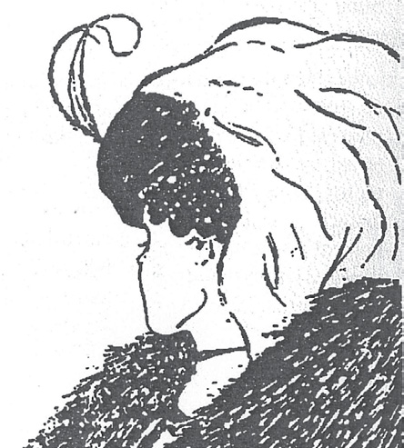
Karım ve Kaynanam
belirsiz figür Bkz. belirsiz beti.
belirsizlik (ambiguity) 1. Aynı olayın en az iki yoruma açık olması. Sinir sisteminin baş etmesi gereken temel çevresel koşullardan biri, belirsizliktir. Belirsizlik, görmede, dilde, kavramsal düşünmede, bedensel duyguların yorumunda, yeni olayların anlaşılmasında ve toplumsal yaşamda gözlemleniyor. 2. Klasik psikanalize göre, iki karşıt duygunun aynı anda birbirinden bağımsız var olması. Örneğin, aynı kişiye karşı hem sevgi hem de nefret duyulabiliyor. Dil sürçmeleri de sıklıkla bu belirsizliğe dayandırılarak yorumlanıyor. Bkz. ŞERİF, Muzaffer.
belirti (symptome) Canlıda normaldışı durumların geliştiğini belli eden ve hastalığa tanı konulmasını sağlayan ipucu; semptom; araz. Bkz. belirtisel eylem.
belirti grubu (symptom picture) Belli bir bedensel ya da ruhsal durum için tipik olan; ama belirgin bir patalojiyi temsil etmeyen belirtiler karmaşası; belirti tablosu, belirti kümesi.
belirti lokalizasyonu (localization of symptoms) Freud’un, bilinçdışının nevrotik bir dürtünün dışavurumu için vücudun belli bir işlevini ya da bölgesini seçmesi anlamında kullandığı terim. Bir erkek, örneğin dışkıl ilişki isteğine karşı savunma olarak histerik kabızlık geliştirebiliyor. Bkz. belirti seçimi.
belirti nevrozu (symptom nurosis) Bilinen bir belirti tablosuna benzemeyen; ancak, örneğin, saplantılı-zorlanımlı, fobik, kaygılı bir belirti yapısı gösteren nevrotik bozukluk.
belirti oluşumu (symptom formation) Psikanalize göre, bilinçsiz bir kaygı uyandıran dürtü, istek ya da çatışmanın yerine bedensel ya da davranışsal bir tepki biçiminin konulması. Fobiler, histerik belirtiler, bunu örneklendiriyor.
belirti seçimi (symptom choice) Altta yatan patolojinin dışavurumu olarak belirtinin bilinçsizce, rastgele seçimi. Bir hastanın neden bir zorlanım değil de felç, fobi yerine histerik körlük geliştirdiği, çoğu kez açıklanamıyor. Bunun nedeni olarak bedensel yatkınlık, anne babanın davranış yapısı, önceki ruhsal-cinsel evrelerden birine takılıp kalma, özel travmatik yaşantılar gibi etkenler gösteriliyor. Bkz. belirti lokalizasyonu.
belirtisel eylem (symptomatic act) Freud’a göre, anlamsız ya da ilgisiz gibi görülebilen; ancak belli koşullar altında bilinçsiz bir dürtüyü, isteği temsil eden davranışlar; semptomatik eylem. Örneğin, künye ya da yüzükle oynamak, sıklıkla elini burnuna götürmek gibi sıradan davranışlar bile belli bir isteğin, dürtünün dışavurumu olarak yorumlanıyor. Bu tür davranışlara simgesel davranışlar da deniyor. Çünkü bunların bilinçdışı dürtülerini temsil ettiklerine inanılıyor. Bkz. edim hataları.
belirtke tablosu Bkz. hedef çözümlemesi
belkemiği sinirleri (spinal nerves) Omuriliği vücudun iskelet kaslarına bağlayan ve 31 çift sinirden oluşan bir sinir demeti. Bunların 8’i boğaz; 12’si göğüs; 5’i bel; 5’i sakral; 1’i de kuyruk sokumu siniridir. Bkz. sinir sistemi.
bellek (memory) Yaşantıları, öğrenilen konuları, bunların geçmişle ilişkisini bilinçli olarak zihinde saklama gücü; hafıza. Anımsama, tanıma ve tasarruf, belleği ölçmek için yapılan üç tür çalışmadır. Anımsama çalışmaları ile denekten, daha önce öğrendiklerini yazarak ya da söyleyerek yinelemeleri isteniyor. Tanımada yalnızca, kendisine sunulan yanıtın, doğru-yanlış türü sınavlardaki gibi, doğru olup olmadığına karar vermesi isteniyor. Anımsamadan alınan puanlar, tanımadan alınan puanlardan düşük olsalar bile daha güvenilir görülüyor. Tasarruf çalışmalarında ise bireyin daha önce öğrenilen konunun (malzemenin) yeniden öğrenilmesindeki katkısı ölçülüyor. Bellek, doğrudan gözlemlenemeyen; ancak, öğrenilenin anımsanabilmesinin yakarıdaki biçimlerde ölçülmesiyle yordanan bir olgudur. Bu nedenle, tanımlanabilmesi için öğrenme, unutma, anımsama gibi olayları da ele almak gerekiyor. Öğrenme olmadan, bellekten söz edilemez. Bellek, işlevsel olarak üç parametre açısından bölümlere ayrılıyor. Bunlar zaman, depolanan bilginin miktarı ve depolanan bilginin yeniden kullanılmasıdır. Bilişsel psikologlar, belleğin bu bölümlerini bilişsel süreçler olarak adlandırıyorlar. Bellek, genellikle kısa süreli bellek ve uzun süreli bellek olarak ikiye ayrılıyorsa da anlık bellek, çalışma belleği ve tanıma belleği türlerinden de söz ediliyor. İşlevsel açıdan, özellikle belleği inceleme yönünden bu ayrımlar gerekli olmakla birlikte, belleğin bir bütün olarak çalıştığı ve bu bellek türlerinin birbirini etkilediği biliniyor. Morgan (1984), anımsanabilen miktarın pek çok şeye bağlı olduğunu belirtiyor; ancak, bunlardan öğrenilenin (malzemenin) anlamlılığını, başlangıçta ne kadar öğrenildiğini ve öbür öğrenmelerden gelen bozucu etkileri, özellikle önemli buluyor. Duyu organlarımıza her an binlerce uyaran ve bilgi geliyor; ancak, biz bunları seçerek algılıyoruz; gereksizleri ayıklıyoruz. Organizmaya ulaşan bilgi; bilginin önemi ve yineleme sayısı gibi nedenlerle anlık (kısa süreli) belleğe geliyor. Bu bilgi, gerekirse, uzun süreli belleğe aktarılıyor ya da eleniyor. Ancak, anlık bellekteki en küçük bir bilgi bile, işlenmesi ve gerekliliği için uzun süreli bellekteki bilgiye gereksinim duyuyor. Bu nedenle, işlevsel bir ayrım yapılıyor olsa bile bellek, bir bütün olarak çalışıyor. Başka kuram ve yaklaşımlara göre bellek, daha farklı bölümlere de ayrılıyor. Belleğin maddesel temelleri üzerinde fizyolojik psikologların ve biyopsikologların da çalışmaları sürüyor. Bu konuda önemli olan kuramlar; nöronal bağlantılarda ve sinapslarda bellek izlerinin kodlanması, DNA ve RNA’nın protein senteziyle bilgiyi kodladığına ilişkin biyokimyasal yaklaşımlar ve Glia kuramıyla öbür nöron dışı kuramlardır. Son çalışmalar, DNA’daki fosforilasyon-defosforilasyon olayının öğrenmede önemli işlevler yüklendiğini gösteriyor. Bütün bunlardan şu sonuç çıkıyor: Genetik, biyokimya gibi psikoloji dışında yapılan çalışmalar, psikolojik çalışmalarla eşgüdüm içinde ele alınarak, bellek konusuna daha sistemli açıklamalar getirilmelidir. Bkz. açık bellek; anlamsal bellek; bebeklik bellek yitimi; bellek deneyleri; bellek izi; bellek izlerinin kodlanması; bellek yitimi; bellek yitimine dayalı işlev bozukluğu; bellek yitimi sendromu; belleme: belleyerek öğrenme; bilinçdışı bellek; duyu belleği; gecikmeli bellek; geriye getirme; görsel bellek; ırksal bellek; örtülü bellek; sözel bellek; sözel olmayan bellek; yankı belleği; yeniden kurgulayıcı bellek; yöntemsel bellek.
bellek deneyleri (memory experiments) Öğrenmek, ezberlemek, unutmak, anımsamak, tanımak ya da bunlarda karşılaşılan bireysel ayrılıklarla ilgili genel yasaları bulmak için yapılan deneyler.
bellek izi Bkz. engram.
bellek izlerinin kodlanması Bkz. bellek.
bellek yitimi (amnesia) Beyin zedelenmesi, sarsıntı, yüksek ateş, baskı gibi nedenlerle anımsama gücünün bir bölümünün ya da tümünün yitirilmesi; amnezi, hafıza kaybı. Bellek yitimi, sürekli ya da belli zamanla sınırlı olabiliyor. Nedene bağlı olarak organsal bellek yitimi (fizyolojik kökenli), bebeklik bellek yitimi (fizyolojik kökenli), histerik bellek yitimi (nevrotik), bastırmalı bellek yitimi (nevrotik), geriye dönük bellek yitimi, ileriye dönük bellek yitimi, çözülmeli bellek yitimi ortaya çıkabiliyor. Bkz. bellek yitimi sendromu; çözümlemeli kaçış.
bellek yitimine dayalı işlev bozukluğu (akinesia) İstemli kasları denetleme yetisini tümüyle ya da belli bir oranda yitirme; akinezi. Bu terim, birçok istemli kas denetim kusurları için kullanılıyor. İstemli kas denetim kusurlarının başlıcaları şunlardır: (1) Donuk durumlar (şizofreni, mizaç bozukluğu, orta beyin sendromları). (2) Kas hareketinin yoğun acı vermesiyle ortaya çıkan felçle tanımlanan algera. (3) Kurşun zehirlenmesi gibi ağır metal zehirlenmesinin açtığı ağır kas zayıflaması. (4) Paretik belirtiler gösteren nevrozlar. (5) Parkinsonizmde görülen titremeler. (6) Kasların kullanılmamasından doğan kas gücü yitimiyle tanımlanan amnestik işlev bozukluğu (7) Hastanın birden çökmesiyle tanımlanan akinetik sara ve sinir sistemini etkileyen fenotiyazin gibi ilaçların yol açtığı olaylar.
bellek yitimi sendromu (amnestic syndrome) Hem kısa süreli belleği hem de uzun süreli belleği etkileyen ağır bir bellek bozukluğu; amnestik sendrom. Bu terim, organsal işlev bozukluklarından kaynaklanan olaylar için kullanılan psikiyatrik-sinirbilimsel bir tanı sınıflardırması için kullanılıyor. Bozukluğun en yaygın nedeni, süreğen alkol akışkanlığına bağlı B1 vitamini (tiyamin) eksikliğidir. Bkz. bellek.
belleme (memorize) Bir öğrenme konusunu ya da algısal gereçleri, daha sonra anımsanacak durumda yineleyerek belleğe yerleştirme; hıfzetme, ezberleme.
belleyerek öğrenme Bkz. ezbere öğrenme.
Bell felci (Bell’s palsy) Genel olarak yüzün bir tarafında birden kendini gösteren ve yüzün, etkilenen yüz sinirinin bulunduğu taraftaki kasların felç olmasıyla sonuçlanan bir bozukluk. Bu felcin temel belirtileri; yüzün bir tarafının aşağı sarkması, alnı kırıştıramama ve ıslık çalamama, kaşını kaldıramama (Bell felcini inmeden ayırt eden bu özelliktir) ve ağzın yüzün öbür tarafına doğru kaymasıdır.
Bem cinsellik rol ölçeği (Bem sex role inventory) Bireylerin geleneksel olarak erkeklere ve kadınlara özgü diye değerlendirilen cinsellik rolleriyle ilişkili özellikleri ya da davranışları hangi düzeyde ortaya koyduklarını ölçmek amacıyla S. Bem’in geliştirdiği ölçek. Bu ölçeğin uygulanmasından elde edilen sonuçta, erkeklik rolü ağır basanlar “geleneksel erkek”; kadınlık rolü ağır basanlar da “geleneksel kadın” olarak değerlendiriliyor. İki cinsin olumlu özelliklerini de taşıyan kişilere ise androcini deniyor.
BEM, Sandra Ruth Lipsitz (1944- ) Pensylvania, Pitsburg’da bir işçi ailesinin çocuğu olarak dünyaya geldi. Carnegie-Mellon Üniversitesi’nde aldığı psikoloji eğitiminden sonra çeşitli üniversitelerde çalıştı. Çocukların cinsel rolleri nasıl öğrendikleri konusundaki araştırmalarıyla; bireylerdeki cinsel rol yapılarını belirlemek amacıyla geliştirdiği Bem cinsel rol ölçeği ile ünlendi. Birçok makaleden başka The Lenses of Gender (1993) adlı kitabı yayımladı. Bkz.cinsellik rolü; cinsellik şeması kuramı.
ben Bkz. bencil; bencillik; bencil olmadan bağımsız olabilmek; beniçincilik; beniçincil konuşma; ben iletisi; benlik.
bencil (egoist) Kendi çıkarını düşünmeyi, bütün bilinçli eylemlerinin temel güdüsü yapan (kişi); egoist, özsever.
bencil hazcılık (egoistic hedonism) İnsanın başka insanları da düşünen özgeci duyguları bir yana bırakıp yalnızca kişisel hazzını düşünmesinin onu en mutlu insan yapacağını savunan hazcı düşünce biçimi.
bencillik (egoism) Başkalarının gereksinimlerini ya da haklarını dikkate almayıp yalnızca kendi çıkarını düşünmeyi, bütün bilinçli eylemlerin temel güdüsü yapma durumu; egoistlik. Bkz. özgecillik.
bencil olmadan bağımsız olabilmek Bkz. evlilik (Evliliği Sürekli Kılmanın Koşulları).
Bender Gestalt Testi (Bender Gestalt Test) Kartlar üzerine çizilmiş dokuz yalın şekilden oluşan ve denekten bu şekilleri kopya etmesi istenen bir ölçek. Deneğin bu çizimde düştüğü yanılgıların, önemli psikolojik düzensizlikleri ortaya çıkardığına inanılıyor
ben dili Bkz. ben iletisi.
BENEDICT, Ruth (1887-1948) Kültür ve kişilik arasındaki ilişkiyi ortaya koyarak kültürel antropolojiye katkı sağlayan ABD’li antropolog. Ruth Fulton Benedict New York’ta cerrah bir babanın kızı olarak dünyaya geldi. İngiliz edebiyatı okuduğu Vassar Koleji’ni 1909’da bitirdi. Takma adla şiir yazıp yayımladı. Edebiyata olan ilgisini antropoloji çalışmaları yaptığı yıllarda da sürdürdü. 1914’te evlendi. 1919’da antropoloji konferanslarını izlemeye başladı. 34 yaşında Columbia Üniversitesi’ne kaydoldu ve önde gelen antropologlardan Franz Boas ile çalışmaya başladı. Beşeri bilimler öğrenimi görmüş olması ve edebiyatla ilgilenmesi, onun antropolojiyi beşeri bilimlerin bir kolu olarak algılamasında etkili oldu. 1923’te Kuzey Amerika’da Himayeci Ruh Kavramı adını taşıyan ve Kuzey Amerika yerlilerini inceleyen teziyle doktorasını aldı ve Columbia Üniversitesi’nde ders vermeye başladı. Boas’ın ayrılış tarihi olan 1937’ye dek antropoloji asistanı olarak çalıştı. 1920’ler ve 1930’larda çeşitli Amerika yerlileri üzerine alan araştırmaları yaptı ve incelemelerde bulundu. II. Dünya Savaşı’nda gittiği Washington’da Savaş İstihbaratı Dairesi’nde çalışırken meslektaşlarıyla birlikte Avrupa ülkeleri; özellikle de Tayland ve Japonya üzerine araştırmalar yaptı. Bunlar, savaştan sonra Columbia Üniversitesi’nde yönettiği Çağdaş Kültürler Üzerine Araştırmalar projesine temel oluşturdu. Profesör olduğu 1948 yılının Eylülünde öldü. Benedict, doktora tezinde kültürel bütünleşmenin rastlantısal olduğunu ileri süren ve o dönemde yaygın olan yayılımcı yaklaşımın etkisiyle dinin köklerine ilişkin ortaya konulan kuramları sınamayı amaçlamıştı. Bu yaklaşımın oluşmasına büyük katkıyı, Boas ve İlkel Toplum adlı kitabı ile 1920’de yayımlanan Robert Lovie sağlamıştı. Benedict, 1925-1939 yılları arasında Amerikan Folklor Dergisi’ni yönetti. Kültürlerin rastlantısal ve keyfi bir biçimde bütünleştirilemeyeceğini düşündüğü için çalışmalarını bütünleştirici öğe arayışına yöneltti. Bu öğenin ilk ipuçlarını 1927’de Pima yerlileri arasında yaptığı bir alan çalışmasına ilişkin gezi sonucunda elde etti. 1928’de sunduğu Güneybatı Kültürlerinde Psikolojik Kategoriler adlı bildirisinde ortaya koyduğu ipuçları doğrultusundaki görüşlerini, Kültür Kalıpları adıyla yayımladığı kitabında daha da geliştirdi. Bu önemli kitabında bütünleştirici öğeyi öznel düşünce düzeyine yerleştirmeye çalıştı. Kültürler arasındaki farklılıkların, bireyler arasındaki farklılıklara benzediğini ileri sürdü. Ona göre kültürlerin de bireyler gibi ayırt edici özellikleri vardır ve kültürler, bu yönden birey psikolojisinin geniş bir yansımasıdır. Benedict bu bütünleştirici öğeye kültürel kümelenme adını verdi. Nietzsche’nin Trajedinin Doğuşu adlı kitabından esinlenerek Pueblo yerlilerinin kültürünü Apolloncu; Plains yerlilerinin kültürünü de Dionisosçu olarak kümelendirdi. 1930’larda Chicago Üniversitesi’nde geliştirilen sosyolojik yaklaşımdan tümüyle ayrıldı ve kültürel olaylara yaklaşımda temel kavram olarak seçtiği bütünleşme üzerine, “En önemli sosyolojik birim kurumlar değil, kültürel kümelenmelerdir.” diye yazdı. Ona göre kültürün yaratıcı gücü, toplumsal ve yapısal etken olmaktan çok, duygusal ve estetik bir güç olan bütünleşmedir. Bütünleşme, bireylerin kültürel özellikleri, kendi kültürlerinin özelliklerine göre seçimi, reddi ve uyarlamasıdır. Kültürel kümelenmenin ardındaki bütünleştirici öğe, Pueblolar’ın ılımlılık ve ortaklaşa yönelişi öne çıkaran Apolloncu özelliği ya da Plains yerlilerinin aşırılık ve ileri derecede bireyci tutumlarını sergileyen Dionisosçu özelliği gibi temel olarak bir duygusal kalıptır. Benedict’in bu görüşleri, kültürün başlıca yaratıcı güçlerinden birinin kişi ve grupların öznel düzeydeki güven arayışları olduğunu ve geleneklerin temelde akılcı olmadığını ileri süren öğretmeni Boas’ın görüşleriydi. Onlara göre kültür, içsel tutarlılık bağlamında ele alınmalıdır. İç tutarlılığı oluşturan öğeler ise, örneğin, öbür kültürlerin etkisi gibi dışsal etkilerden göreli bağımsız düşünülmelidir. Her kültürün kendine özgü bir duygusal-estetik yapısı bulunuyor. Benedict, yaşamının son yıllarında savaş yıllarındaki yönelimlerini sürdürerek karmaşık toplumların ulusal kimliklerini inceledi. Japon toplumunu inceleyerek 1946’da yayımladığı Krizantem ve Kılıç, onun bu döneminin temel yapıtıdır. Margaret Mead, bu yapıtın ilerde türünün klasiği olacağını yazmıştır. Benedict’in temel yapıtı ise her kültürel kümelenmenin tek ve kendine özgü olduğunu ve ancak kendi öğelerinin iç tutarlılığı açısından anlaşılabilir olduğunu savunduğu Kültür Kalıpları’dır. Onun, karşılaştırma yönteminin uygulanmasını dışarıda bırakan yaklaşımıyla antropolojiyi sosyal bilimlerin bir dalı olarak görmek zordur. Benedict’in yaklaşımı ile bütün kültürleri açıklayabilecek bir kuram geliştirmek ise olanaksızdır. Çünkü o, kültürel kuramların kendi bütünleşmeleri dışında anlaşılamayacağını belirtmiştir. Ona göre her kültürel sistem için ayrı bir kuram gerekir. Yine o, kültürel antropolojiye, açıklayıcı bir disiplin yerine betimleyici bir disiplinle yaklaşmıştır. Bu yönüyle de onun çalışmaları antropolojiyi sosyal bilimlerden çok beşeri bilimlere yaklaştıran bir katkı olmuştur. Başlıca yapıtları: Patterns of Culture, 1934 (Kültür Kalıpları); Race: Science and Politics, 1940 (Irk: Bilim ve Politika); Chrysanthemum and the Sword: Patterns of Japanese Culture, 1946 (Krizantem ve Kılıç: Japon Kültürünün Kalıpları); “Anthropology and the Humanities”, American Anthgropologist, L. 1948 (Antropoloji ve Beşeri Bilimler); “Child Rearing in Certain Europran Countries” American Fournal of Ortho psychiatry, XIX, 1949, (ö.S.) (Bazı Avrupa ülkelerinde Çocuk Yetiştirme).
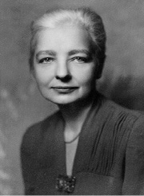
beniçincilik (egocentrism) 1. Başkalarının gereksinim ve çıkarlarına karşı duyarsız kalıp, kendi çıkarı ile ilgilenme; egosantrizm, ben merkezcilik, benodakçılık. 2. Piaget’nin bilişsel gelişim kuramının işlemsellik öncesi evresindeki çocukların tipik bir özelliği. Bu evrede bulunan çocuk, çevresindeki nesne ve olayları yalnızca onlarla olan kişisel ilişkisine göre tanımlayıp yorumluyor; fiziksel gerçekliği başka bir kişinin bakış açısından algılayamıyor; nesne ve olayları, başkalarının da aynı biçimde gördüklerini; nesne ve olayların, başkalarında da kendisinde yarattığı duygu, düşünce ve davranışları oluşturduğunu düşünüyor. Bkz. Piaget kuramı. 3. Adler’e göre, çocuğun çevresiyle etkileşimi sırasında öğrendiği, başkalarının gereksinim ve çıkarlarına karşı duygusuz kalma ve kendi çıkarlarıyla ilgilenme biçimindeki kusurlu davranış. Bkz bireysel psikoloji.
beniçincil konuşma (egocentric speech) Yalnızca kendini, kendi düşünce ve duygularını referans alan; başka biriyle düşünce alışverişini ya da başka birinin bakış açısını içermeyen konuşma biçimi. Piaget, bu konuşma biçiminin 7-8 yaşlarına dek sürdüğünü düşünmüştür. Ancak, bugün, 3-4 yaşlarındaki çocukların bile toplumsallaşmış konuşma yeteneği geliştirebileceğini gösteren bulgular vardır. Vygotsky’ye göre bu konuşma biçimi daha sonra iç dile dönüşüyor.
ben iletisi (ego convection) Karşımızdaki kişiyi suçlamadan, eleştirmeden, yargılamadan, olduğu gibi kabul edip o kişiyle ilgili olarak duyumsadıklarımızı kendisiyle paylaşmak; ben dili. Bu paylaşımda ”Sen, ...” diye başlayan tümceler yerine, “Ben....” diye başlayan tümceler kuruluyor. Örneğin, “Ben, senin yüksek sesle konuşmandan rahatsız oluyorum; biraz alçak sesle konuşur musun?” gibi. “Ben” dili, yapılan davranışın değil, sonuçlarının kişide nasıl bir duygu yarattığını anlatıyor; daha çok, kişinin kendi duyumsadıklarını karşısındakine de duyumsatmayı amaçlıyor. Duyumsadıklarımızı karşımızdakine ya da karşımızdakilere anlatırken ses tonumuzu, jest ve mimiklerimizi de iyi kullanmamız gerekiyor. Örneğin, okuldan eve geç gelen çocuğu annesi, “Nerde kaldın? Ben burada korkudan ölüyorum; sen, o sokak benim, bu sokak senin gezip duruyorsun!” biçiminde suçlama yerine, ona “Okuldan sonra hemen eve dönmediğin zaman, başına bir şey gelmesinden korkuyorum. Çünkü nerede olduğunu bilmiyorum.” demelidir. Aynı tutum, okulda da benimsendiğinde birçok sorunun çözümü kolaylaşacağı gibi, gereksiz yere tırmanması da önlenecektir. Bu ileti, suçlama içermediği; yalnızca duygunun açıklanmasını amaçladığı için, bu anlatımla çocuk, genç ve yetişkin, yanlışını daha kolay anlıyor. Bu tümce, rahatsız olunan şeyle onun yarattığı duyguyu ve duygunun nedenini açıklıyor. Örnek tümcenin son bölümü çocuğa, annenin duygularının kendi yaptığı davranışla değil, o davranışın yol açtığı sonuçla ilgili olduğunu anlatıyor.
benliğin birikmiş güvenliği Bkz. benlik bütünlüğü.
benliğin etkinlik gereksinimi Bkz. özgürlükten kaçış yaklaşımı.
benliğin gerçeği değerlendirme gücü Bkz. benlik.
benliğin savunma düzenekleri Bkz. benliğin savunma mekanizmaları.
benliğin savunma mekanizmaları (ego defense mechanism) Çatışma sonucu ortaya çıkan kaygıyla (anksiyete ile) baş etme davranışları; ego savunma mekanizmaları, benliğin savunma düzenekleri. Zorlanan birey, genellikle kaçma ve saldırma davranışı gösteriyor ya da ağlama, gülme, konuşma gibi tepkiler aracılığı ile uyumunu bozan zorlanmaya karşı kendini fizyolojik ve ruhsal olarak savunmaya yöneliyor. Benliğin savunma mekanizmaları ise kişinin engelleme ve çatışmaların yarattığı kaygıya karşı ruhsal bütünlüğünü korumak ve sürdürmek için bilinçdışı gerçekleştirdiği savunmalardır. O nedenle kişi, tehdidi de kullandığı savunmayı da ayrımsayamıyor. Karşılaşılan sorunları gerçekçi çabalarla çözerek ruhsal bütünlüğünü korumayı başaramayan benlik, oluşan kaygıya karşı, başta bastırma denilen temel mekanizma olmak üzere, başka birçok bilinçdışı ve gerçekdışı mekanizma geliştirip kullanmak zorunda kalıyor. Benliği tehdit eden durumlarla baş etmede savunma mekanizmaları başlıca araç durumuna gelerek bilinçli ve sorun çözmeye yönelik çabaların yerini aldığında ve kişinin günlük yaşama uyumunu engelleyecek kadar abartılı kullanılmaya başlandığında, hastalıklı tepkiler ortaya çıkıyor. Nevrozlar, bu yolla oluşuyor. Onun için, benliğin savunma mekanizmalarına nevrotik savunma mekanizmaları da deniyor. Psikozların ortaya çıkmasına ise savunmaların yoğun biçimde kullanılması yol açıyor. O nedenle geliştirilen savunma mekanizmaları, taşıdıkları niteliklere göre başarılı (normal) ve başarısız (nevrotik ya da psikotik) diye ikiye ayrılıyor. Başarılı savunmalar, içgüdüsel dürtüleri, fazla zaman ve enerji tüketmeden doyurmanın bir yolunu bularak çatışmaya (iç savaşa) son veren savunmalardır. Savunmanın sürüp gitmesine yol açan; içgüdüsel isteklerin denetim altına alınması için yeni mekanizmalara, yeni gerçekdışı eylemlere gereksinim duyuran savunmalar ise başarısız savunmalardır. Benlik, başarısız savunmaları kullanırken gerginlik içinde, hep olası bir tehlikeyi bekliyor. Bunların pek çoğu, ruhsal bir kaygı kaynağı olan nevrotik savunmalardır. Nevrotik kişi, içgüdüsel isteklerine karşı, gerçek dışı bir tepki biçimi olan savunmaları sürekli olarak kullanmak zorundadır. Bkz. nevrozlar. Benliğin savunma mekanizmaları incelendiğinde, bunların hangilerinin, hangi biçimde kullanıldığında başarılı; hangi biçimde kullanıldığında başarısız oldukları görülebilir. Benliğin 30-40 kadar savunma mekanizması tanımlanmıştır. Temel örüntülerini Freud’un belirlediği savunma mekanizmalarının tanımlanmasına daha sonra, başta kızı Anna Freud olmak üzere başka birçok kuramcının da katkısı olmuştur. Benliğin savunma mekanizmalarının başlıcaları için bkz. bastırma; bozma (ters tepki); bölünme; bütünselleştirme; çözülme; döndürme; düş kurma; düşünselleştirme (Platonlaştırma); ekşi üzüm (tepki oluşumu) mekanizması; gerileme; içealım; içe atım; kendiliğinden uyma; kendine yöneltme; neden bulma; nevrotik savunma; olmamış kılma; ödünleme; özdeşim; özgürlükten kaçış mekanizmaları (Kendiliğinden Uyma; Yetkecilik; Yıkıcılık); Polyanna mekanizması; saplanma; somutlaştırma; tatlı limon mekanizması; yadsıma; yalıtım; yalnızlık mekanizması; yansıtma; yansıtmalı yüceltme; yer değiştirme; yerine koyma; yüceltme. Ayrıca bkz. bireysel psikoloji; içgüdü kuramı (Engellenme, Çatışma, Kaygı); nevrotik savunma; özgürlükten kaçış yaklaşımı; psikotik savunma; ruhsal-cinsel gelişim kuramı; ruhsal ekonomi kuramı; topografik kuram.
benlik (ego) Bireyin ne olduğu, ne olmak istediği ve çevresince nasıl tanındığı konularındaki bilinçliliği; ego; ben. Freud’a göre benlik: Bkz. yapısal kuram (Benlik). Adler’e göre benlik, Freud’un belirttiği gibi, içgüdülere hizmet eden, ilkelbenliğin buyruğunda olan ruhsal bir yapı değildir. Bkz. bireysel psikoloji (yaratıcı benlik). Jung’a göre benlik, kişiliğin algı, bilinçli anı, düşünce ve duygulardan oluşan; kimlik duygusunu oluşturan ve ona süreklilik sağlayan; yani bilen, isteyen dinamik bir sistem olan ruh (psyche) okyanusunun görünen yüzüdür. Benlik, ruhun bilinçli ve bilinçsiz güçlerinin birleşip bütünleşmesiyle oluşuyor ve bilinçle aynı anlamı taşıyor. Bkz. analitik psikoloji (Kişiliği Oluşturan Sistemler); JUNG, Carl Gustav. Erikson’a göre benlik, sağlıklı bir kişilik geliştiren bireyde, dış dünyadan gelen bilgileri düzene sokma, algılananları değerlendirme, bilinç düzeyinde çağrıştırılacak anıları seçme, uyum sağlayıcı davranışları yönetme, geleceğe yönelik tasarımları oluşturma gibi pek çok işlevi yerine getiren ruhsal yapıdır. İstediğini yapmayı, istediği gibi olmayı başaran kişi, kendini iyi görüyor. Benlik, gücünü sayıları giderek artan yaşam deneyimleriyle geliştiriyor. Ancak, insanın belirli bir yaşam döneminde deneyimlerle sağladığı bir güveni ya da üretkenlik düzeyini sonuna dek sürdüreceği güvencesi yoktur. Karşılaştığı bir sorunla baş edip edemeyeceğini, onun benlik kimliği ile yaşamakta olduğu benlik şaşkınlığının birbirine oranı belirliyor. Bkz. insanın sekiz çağı ((5) Kimlik Karmaşasına Karşı Kimik Duygusunun Gelişimi). Özgürlükten kaçış yaklaşımına göre benlik, kişinin türlü bireysel engelleri aşmayı başararak geliştirdiği ruhsal yapıdır. Kişinin bireyleşmesi, kendi kendine gerçekleşiyor. Bu iki süreçten birinin öbüründen geri kalması, insanda, katlanılması zor bir yalnızlık ve güçsüzlük duygusu yaratıyor. Bireyin kendini önemsiz, değersiz diye algılayışı ve bunların sonucu olarak onun duyduğu başkalarına boyun eğme gereksinimi, faşist ideolojilerin ana tema’sını oluşturuyor. Bkz. ben; benliğin etkinlik gereksinimi; benliğin gerçeği değerlendirme gücü; benliğin savunma mekanizmaları; benlik algısı; benlik arayışı; benlik başarısızlığı; benlik bölünmesi; benlik bütünlüğü; benlik bütünlüğünün oluşumu; benlik çekirdekleri; benlik çözümlemesi; benlik direnmesi; benlik duygu yatırımı; benlik dürtüsü; benlik düzeyi; benlik gelişimi; benlik gerilemesi; benlik gücü; benlik içgüdüsü; benlik-ilkelbenlik görüşü; benlik işlevleri; benlik karmaşası; benlik kaygısı; benlik kimliği; benlik kuramı; benlik nevrozu; benlik psikanalistleri; benlik psikolojisi; benlik psikoterapisi; benlik savunması; benlik saygısı; benlik şeması; benlik tasarımı; benlik uyumlu; benlik uyumsuz; benlik ülküsü; benlik yitimi; benlik yoksunluğu; benlik yükü; gerçek benlik; özgürlükten kaçış yaklaşımı; ülküsel benlik; yapısal kuram.
benlik algısı (perceived self) Kişinin kendini algılama biçimi, kendisine ilişkin görüşü; algılanmış benlik. Benlik algısı, tüm ruhsal yaşantıların kaynağını oluşturuyor.
benlik arayışı (opropriate striving) G. W. Allport’un ayırıcı özellik kuramına göre, ergenlik döneminde kimlik arayışı ile başlayan benlik gelişiminin son aşamasını dile getirmek için kullandığı terim. Bu terim, ergenlerin uzun dönemli bağlantılara girmeden önce giriştikleri rol denemelerini de anlatıyor. Allport, bilinçli niyetlerin ve geleceğe ilişkin planlamanın kişiliği güdülemeye başlama dönemi olan ergenliği özellikle önemsiyor. Çünkü ona göre, çocuk güdülenmesinin tersine, yetişkin güdülenmesi, bağımsızdır. Bkz. ALLPORT, Gordon Willard; işlevsel özerklik.
benlik başarısızlığı (ego failure) Psikanalize göre, ilkelbenliğin içtepilerini, üstbenliğin yasak ve sınırlandırmalarını gerçeklik ilkesine göre normal bir denge durumunda tutabilmede başarısızlığa uğrama. Bkz. benlik.
benlik bütünlüğü (ego integrity) 1. Benliğin ilkelbenlik, üstbenlik ve gerçeklik arasında dengeli bir bütünlük kurma; kişiliğin dürtüler, tutumlar, amaçlar gibi çeşitli yanları arasında dengeli bir yapı oluşturma yetisi 2. E. Erikson’a göre, insanın sekiz çağının sekizinci ve son evresinde ulaştığı yeterlik. Bkz. benliğin birikmiş güvenliği; insanın sekiz çağı ((8) Umut Yitimine Karşı Benlik Bütünlüğünün Oluşumu).
benlik bütünlüğünün oluşumu Bkz. insanın sekiz çağı ((8) Umut Yitimine Karşı Benlik Bütünlüğünün Oluşumu).
benlik çözümlemesi (ego analysis) Tedavi amacıyla benliğin savunularını yıkarak bilinçdışının derinliklerinde bilince çıkmayı bekleyen bastırılmış dürtüleri, rahatsızlıkların kökenlerini ortaya çıkarma; içgüdüleri özgür bırakma yerine, benliğin birleştirici ve savunucu nitelikteki güçlü ya da güçsüz yönlerini belirleyip bunların olumlu yönlerini güçlendirme ve kabul edilemez dürtülere yönelik bilinçsiz savunma mekanizmalarını belirleyerek kişinin yaşamla daha iyi baş etmesini hedefleyen kısa süreli bir tür ruhsal çözümleme; ego analizi. Bkz. psikanaliz.
benlik direnmesi (ego resistance) Freud’a göre, bireyin, ruhsal çözümleme sırasında, baskıya alınmış içtepilerinin ortaya çıkarılmasına ve sağlıksız (nevrotik) savunuların bir yana bırakılmasına karşı koyması. Bkz. psikanaliz.
benlik duygu yatırımı (ego cathexis) Libidonun gerçeklere yönelmiş benlik alanına doğru akışı.
benlik dürtüsü (ego drive) Özsaygısının korunması için gerekli etkinlikleri sağlayan güdülerin tümü. Bu dürtü, benliğin savunma etkinliklerinden başka, özellikle kişisel değer duygusuna olumlu etki yapan nitelikleri de içeriyor.
benlik düzeyi (ego level) Kişinin dilek (beklenti) düzeyinin yanında, gerçekten erişebileceği düzey
benlik gelişimi (ego development) Çocuğun kendini dış dünyadan, başkalarından ayrı, bağımsız bir varlık olarak algılama ve bilinçlenme süreci. Psikanalize göre bu süreç, gerçeklik ilkesinin gereklerine göre ilkelbenliğin bir bölümünün dönüşümü ve libidonun bir bölümünün kullanımı ile ilkelbenliği denetim altına alan ve ilkelbenlik ile dış dünya arasında aracılık görevi yapan bir yönetim aygıtı durumuna gelmesi ile gerçekleşiyor. E. Erikson, insan yaşamının tümünün, benliğin gelişim evreleri açısından anlaşılabileceğini savunuyor. Piaget ise benlik gelişimini dinamik etkenlerden çok, bilişsel etkenlerle ilişkilendiriyor. Yapısal kurama önemli katlı sağlayan benlik psikanalistleri de insanın davranışlarını bilinçli olarak yönettiğini ileri sürüyor. Bkz. insanın sekiz çağı; bilişsel gelişim kuramı.
benlik gerilemesi (ego regression) Benlik gelişiminin, ilkelbenliğin etkisi altında daha önceki aşamalarına doğru gerilemesi.
benlik gücü (ego strength) Kişinin kendi istek ve dürtüleri ile dış gerçekliğin gerekleri arasında etkili bir denge kurma yetisi; benliğin, kişilik örüntüsünü bozmadan, güç durumlara karşı kazanmış olduğu dayanıklılık. Benliği güçlü kişi, engellenme ve zorlanma karşısında dayanıklılık gösteriyor; doyum isteğini erteleyebiliyor; bencilce isteklerinden vazgeçebiliyor. Hedefine ulaşmak için kararlı davranıyor; engeller karşısında kolay kolay yılgınlığa düşmüyor; ruhsal çatışmalarını, duygusal sorunlarını hastalıklı tepkilere dönüştürmeden çözebiliyor.
benlik içgüdüsü (ego instinct) Freud’a göre, libidonun türevi olan yaşam içgüdüsü ve ölüm içgüdüsü gibi bireyin varlığını korumaya yarayan bütün içtepiler.
benlik işlevleri (ego function) Benlik psikanalistlerine göre, benliğin, ilkelbenlik işlevlerinden ayrı olarak gösterdiği işlevler.
benlik karmaşası (ego complex) Jung’a göre, benlikle ilişkisi bulunan duygusal tepkilerden oluşan zihinsel yapı.
benlik kaygısı (ego anxiety) Benliğe zarar verdiği sanılan bir duruma karşı yapılan ve bütün benlik savunma mekanizmalarının kaynağı olan duygusal tepki.
benlik kimliği Bkz. insanın sekiz çağı ((5) Kimlik Karmaşasına Karşı Kimlik Duygusunun Gelişimi).
benlik kuramı (ego theory) Rogers’ın öncülüğünde geliştirilen ve 20. yüzyılın ilk yarısında ABD’de rehberlik ve psikolojik danışma çalışmalarına koşut olarak gelişim gösteren psikolojik testlerin rehberlik ve psikolojik danışmada eski önemini yitirmesine yol açan kuram. Benlik kuramı, kişinin davranışlarını önemli ölçüde, kendine bakış biçiminin belirlediğini ortaya çıkardı. Daha önce kişiye okul ve meslek seçme gibi karar verme durumlarında yardım edilirken, benlik kuramıyla, kişinin kendini tanıması, güçlü (gerçekçi) bir benlik geliştirmesi, gizilgüçlerini ayrımsaması ve bunları geliştirmesi amacı daha çok önem kazandı. Test tipi dışsal ölçme araçları, kişinin hangi özelliklerinden hoşlandığını, hangilerinden hoşlanmadığını; davranış ve kararlarını hangi özelliklerinin belirlediğini ortaya çıkaramıyordu. Bu nedenle bireyi tanımada verimli ve etkili yolun, doğrudan doğruya bireyi dinlemek olduğu görüşü önem kazanmaya başladı. Testlerin, kişinin kendini tanımasına yardım edemeyeceği, karar verme gücünü geliştiremeyeceği ve danışanı danışmana bağımlı kalmaktan kurtaramayacağı anlaşıldı. Bununla birlikte, psikolojik danışmanların testlere karşı ilgileri, belli sorunların anlaşılması amacıyla sürüyor. Bkz. birey odaklı yaklaşım; hümanist psikoloji; psikolojik testler.
Benlikle ve Demokratik Değerlerle Çelişen Düşünce Ürünleri Bkz. inanç, kanı, değer.
benlik nevrozu (ego neurosis) İnme, duyu organlarının çalışmaması ve bellek yitimi gibi öncelikle benlik ya da bilinç etkinliklerindeki bozuklukları yansıtan bir nevroz.
benlik psikanalistleri (ego psychoanalysts) Olağan kişi davranışlarının yalnızca korku, öfke, cinsel istek gibi içgüdüsel dürtülerle açıklanamayacağını; davranışların, içgüdüsel dürtülerin yanı sıra örneğin, öğrenme süreçlerini de içerdiğini ileri süren psikanalistler; ego psikanalistleri. Benlik psikanalistlerine göre her insan kendisine yön verebilir ve çevresiyle yapıcı bir biçimde baş edebilir. Kişi, içinde yaşadığı olumlu ve olumsuz durumları, elinde olmayan nedenlerle değil, kendi seçimiyle yaşıyor. İnsan, davranışlarını bilinciyle yönetebilecek kapasitededir. Öyleyse davranışlarını bilinciyle yönlendirme ve yönetmeye çaba göstermelidir. Bunlara göre Freud, normal (sağlıklı) davranışları doğrudan ve yeterince incelememiş; hasta davranışlarından yola çıkarak normal davranışlarla ilgili yargılar ortaya koymuştur. Bu çağdaş kuramcılar, Freud’dan sonra ilkelbenlik, benlik ve üstbenlikten oluşan yapısal kurama önemli katkılar yaptılar. Kişinin, içgüdülerine tutsak olmaktan öte bir boyut kazanmasını sağlayan davranışlarına benlik işlevleri dedikleri için bunlar, benlik psikanalistleri (benlik çözümlemecileri) olarak anılıyorlar. Bu akımın öncüleri; Anna Freud (1895 -1982) ve Erik Erikson ile benlik psikanalistlerinin gerçek sözcüsü olan Heinz Hartman ve David Rapaport’tur. Bkz. benlik psikanalistlerine göre ruh sağlığı; benlik kuramı; benlik psikolojisi FREUD, Anna.
benlik psikanalistlerine göre ruh sağlığı Bkz. ruh sağlığı.
benlik psikolojisi (ego psychology) 1. Benliğin oluşumunu; dil, öğrenme, bellek, akıl yürütme, karar verme, gerçeklik testi, savunma mekanizmaları gibi işlevlerini, nevrozların ruhsal çözümlemelerinde ortaya çıkan direnmeleri inceleyen psikanaliz dalı; benlik ruhbilimi. 2. Psikanalize göre, benliğin gelişimini, işlevlerini ve kişilik gelişimindeki rolünü öne çıkaran yaklaşımları dile getiren terim. Örneğin, insanları bilinçdışı dürtülerin değil, kendilerine özgü bir yaşam biçimi oluşturmaya yönelik bilinçli dürtülerin yönlendirdiğini öne süren Adler’in bireysel psikolojisi, bu tür bir kuramdır. Benliğin gelişimini özellikle vurgulayan Anna Freud ve Melanie Klein’in yaklaşımları da aynı çerçevede yaklaşımlardandır. Bkz. benlik; benlik psikanalistleri; benlik psikoterapisi.
benlik psikoterapisi (ego psychotherapy) Ruh hastalıklarının, benliğin bütünleştirme yetisinin zayıflaması sonucu, benlik ile dış gerçeklik ya da ilkelbenlik arasındaki sınırların belirsizleşmesiyle yakından ilişkisi olduğu varsayımından yola çıkan Paul Federn ile Edoarda Weiss’in geliştirdiği bir tedavi yaklaşımı; benlik ruh sağaltımı. Bu yaklaşımın temel amacı, benlik yükünü yeniden yönlendirerek benliği yeniden bütünleştirici yeteneğine kavuşturmak; ilkelbenlik dürtülerini bastırmak; gerçeklik testi işlevlerini yeniden kazandırıp güçlendirmek ve var olan uyumsuzlukları gidermektir. Bkz. benlik; benlik savunması.
benlik ruh sağaltımı Bkz. benlik psikoterapisi.
benlik savunması (ego defence) Psikanalize göre, benliğin bütünlüğünü korumak amacıyla ilkelbenlik tepilerinin eğitilip yüceltilmesi ya da simgeleştirilerek değiştirilmesi; ilkelbenlikle üstbenlik arasında uyum sağlanması. Bkz. benliğin savunma mekanizmaları.
benlik saygısı Bkz. hümanist öğretmenlik (İnsana Saygı).
benlik şeması (self-schema) Kişinin kendi benliğine ilişkin bilgileri saklayıp işlemekte kullandığı bilişsel yapılar; öz kavramı oluşturan bilgi, duygu ve görüşleri düzenleyen bilişsel şema.
benlik tasarımı Bkz. tam öğrenme.
benlik-uyumlu (ego-syntonic) Kişinin kendi tutum, duygu, düşünce ve davranışlarını kabul edilebilir bulması; bunları kişiliğinin normal bir yansıması olarak görmesi. Örneğin, eşcinsellik eğilimlerinden rahatsız olmayan; bunları yaradılışının doğal bir özelliği olarak kabul eden kişi, eşcinsellik konusunda benlik-uyumlu olarak değerlendiriliyor. Bkz. benlik- uyumsuz.
benlik-uyumsuz (ego-distonic) Kişinin kendi tutum, duygu, düşünce ve davranışlarını kabul edilemez, kişilik bütünlüğü ile uyumsuz, kendine yabancı şeyler olarak görmesi; örneğin, eşcinsellik eğilimlerini kabul edilemez ya da iğrenç bulan kişi, benlik-uyumsuz demektir. ABD’de bu durum, eşcinsellik tedavisinin önkoşuludur. Benlik-uyumluluk, genel bir özellik ya da durum değildir. Kişi, kimi eğilimleri ile benlik-uyumlu; kimileri ile de benlik-uyumsuz olabiliyor. Bkz. benlik-uyumlu.
benlik ülküsü (ego ideal) Kişinin olmak ya da ulaşmak istediği olumlu şeylerin tümü; ideal benlik, ülküsel benlik. Psikanalize göre benlik ülküsü, benliğin, çocuğun içe yansıttığı, benimsediği anne baba hedefleri, değerleri ve ahlak kurallarıyla özdeşleşen bölümüdür. Bu anlamıyla benlik ülküsü, kişinin olmak istediği bir model işlevi görüyor. Çocuk büyüdükçe, yaşamda yeni özdeşimler gerçekleştirdikçe benlik ülküsü de gelişip değişiyor. Benlik ülküsü, üstbenlikten ayrı bir kavramdır. Üstbenlik, daha erken yaşta oluşup tamamlanıyor ve gelişime kapalı duruma geliyor; daha çok, yasaklıyor ve cezalandırıyor; koyduğu kurallara uymamak, suçluluk duygusu yaratıyor. Benlik ülküsü ise deneyime, yeni özdeşimlere bağlı olarak değişebiliyor; yasaklayıcı olmaktan çok, olumlu değerlere ulaşmaya özendiriyor.
benlik yitimi Bkz. insanın sekiz çağı ((6) Yalnız Kalmaya Karşı Yakınlaşma Duygusunun Gelişimi).
benlik yoksulluğu Bkz. insanın sekiz çağı ((7) Durağanlığa Karşı Üretkenliğin Gelişimi).
benmerkezcilik Bkz. beniçincilik.
benmerkezcil konuşma Bkz. beniçincil konuşma.
ben odakçılık Bkz. beniçincilik.
ben uyumlu Bkz. eşcinsellik.
ben uyumsuz Bkz. eşcinsellik.
benzerlik yasası (law of similarity) Biçim psikolojisinde öbür öğeler eşit tutulduğunda renk gibi fiziksel özellikleri birbirine benzeyen şeyleri bir bütün olarak algılama eğilimi. Bu görüşe göre, bilince çıkan bir düşünce ya da tasarım, benzerlerini de bilince çağırıyor. Bkz. Gestalt düzenleme yasaları.
benzeşim Bkz. asimilasyon.
benzetme testi (analogies test) Biçimler ve düşünceler arasındaki ayrılıklarla bağlantıları anlama yeteneğini ölçmeye yarayan test.
beslenme bozuklukları (nutritional disorders) Organizma için gerekli olan besinlerin türlü nedenlerle alınmamasından doğan bozukluklar. Bu bozukluk, daha çok ergenlik öncesinde ve ergenlikte, zayıflamayı amaçlayan kızlarda görülüyor. Önce alkışlanan zayıflama, erimeye dönüşünce kaygı nedeni oluyor. Kilo verme yoluyla beden görünüşünü düzeltme eğiliminden başka, obsesif-kompulsif nevrozluluk ya da şizofrenik ruhsal yapı da iştah yitimini hazırlayan nedenlerdendir. İlk çocukluk döneminde annenin çocuğu besleme konusunda belli saatlere ödünsüz uymada direnmesi, çocuğun anneye karşı, yemek yemeyerek tepki göstermesine, yeterli beslenememe bozukluğu (anorexia nervosia, iştah yitimi) denen rahatsızlığı yaşamasına yol açıyor. Bu rahatsızlığı yaşayan kişi, vücudunun ağırlık ve biçimini yanlış değerlendiriyor; kilo almaktan aşırı korkuyor; bir deri bir kemik kaldığı halde, kendini hâlâ şişman olarak görüyor. Uzun sürmesi durumunda hastalık, kilo yitimi ve deri buruşmasına ve ruhsal olumsuzluklara yol açıyor. Annenin çocuğu besleme biçimi ve baskıcı tutumu karşısında çocuğun ortaya koyduğu uysallık ve iyi görüntünün, gerçekte onun kızgınlığını gizleyen tepkiler olarak görülmesi gerekiyor. Bu çocuklarda sıklıkla arkadaş edinememe, kendi kızlık ya da erkeklik kişiliğini kabul edememe, cinsel yönelim ve özdeşim kusuru görülüyor. Fazla yemek yeme bozukluğu (bulimia nervosa) ise, zaman zaman yinelenen aşırı yemek yeme durumudur. Hasta, yeme bunalımı (yeme krizi) sırasında denetimden çıkıyor; bunalım sonrasında ise kilo almaktan korunmak için bir süre ya hiç yemek yemiyor ya da türlü yöntemlerle yediklerini çıkarmaya çalışıyor. Açlık duygusu olmadan, sürekli yemek yeme sonucunda kişi, şişmanlıyor. Şişmanlık da ergenin olumlu benlik geliştirmesine ve arkadaşlarıyla uyumlu birlikteliğine engel oluşturuyor. Kimi genç kızlar da cinsel kimliğini reddetme sonucu aşırı şişmanlayarak, bilinçdışında, bedenlerinin cinsel çekiciliğini ortadan kaldırmayı amaçlıyorlar. Her iki beslenme güçlüğü olanlar üzerinde de bilişsel tedavi uygulaması ile hasta güç kazanabiliyor. Bkz. beslenme ve bakım; geviş getirme bozukluğu; pika.
beslenme güçlükleri Bkz. psikoterapi.
beta alkolizm (beta alcoholism) E. M. Jellinek’in alkol kullanımı sınıflamasında alkole karşı ruhsal bağımlılıktan başka gastrit, siroz gibi organsal bozukluklar geliştiren kişilerin durumunu anlatmak için kullandığı terim. Bu kişiler, alkole karşı fizyolojik bir bağımlılık da geliştirmeye başlamışlardır. Bkz. alkolizm.
betimleme (description) tasvir etme. 1. Gözlemlenen olayların ve onların gözlemlenebilir ilişkilerinin dökümünü verme, görülenleri ayrıntılı olarak bildirme. 2. İçgözlem psikolojisinde, olup bitenleri anlam ve yorum eklemeden anlatma; görülen ya da tasarlananı söz ya da yazı ile ortaya koyma.
betimleyici istatistik (descriptive statistics) Gözlemlenen verileri belirli istatistiksel ölçülere göre betimleme.
betimleyici psikiyatri (descriptive psychiatry) Ruhsal bozuklukların birbirinden ayrı belirtileri bulunduğunu; ruh hastalıklarının da beden hastalıkları gibi belirli, tanımlanabilir, betimlenebilir bir gidiş gösterdiğini açıklayan psikiyatri kolu; deskriptif psikiyatri, tanımsal ruh hekimliği.
betimselcilik (descriptionism) Bilimsel kuralları, yalnızca gözlemlenen düzenliliklerin betimlenmesi olarak düşünen; bu nedenle mantıksal ya da olgusal bir zorunluluğu yansıtmadıklarını belirten yaklaşım.
betimsel yöntembilim (descriptive methodology) Bir bilginin bilimsel bilgi sınıfına girebilmesi için uyması gereken kuralları ortaya koymayı amaçlamadan, yalnızca belli bir dönemde egemen olan bilim insanlarınca bilim olarak nitelenen bilgileri ortaya koymayı amaçlayan disiplin; pozitif metodoloji. Bkz. yöntembilim.
beyin (brain) Merkez sinir sisteminin iki kesiminden, kafatası içinde bulunan bölümü; dimağ. Her türlü bedensel etkinliğin eşgüdümünden, duyu organlarından gelen bilgilerin yorumlanıp uygun hareket komutlarının verilmesine, duygu ve düşünce süreçlerine dek birçok işlevi, duyum, algı ve bilinç merkezi olan beyin gerçekleştiriyor. Çok karmaşık bir yapısı bulunan beyin, anatomik olarak sağ ve sol yarımküre ile bu bölümleri birbirine bağlayan nasırlı cisim (corpus callosum) ve derin yarıklar biçiminde birbirinden ayrılan dört loptan oluşuyor. Beyin kabuğu (korteks), 15 milyardan fazla sinir hücresi içeriyor. Bu hücreler ikiye ayrılıyor. Bunlardan bağlantı lifleri, beynin bir bölgesini öbürüne bağlıyor. Yansıtma lifleri ise, vücudun geri kalan iletişiminde kullanılan sinyalleri taşıyor. Bkz. arka beyin; arka lop; art kafa lopları; bağlantı beyin kabuğu; baskın olmayan yarımküre; beyin anatomisi; beyin baskınlığı; beyin dalgaları; beyin felci; beyin fırtınası; beyin gizilgücü; beyin hasarı; beyin kabuğu; beyin kabuğu sağırlığı; beyin kanaması; beyin kökeni varsayımı; beyin kökü; beyin lopları; beyin merkezi; beyin-omurilik sıvısı; beyin ölümü; beyin sapı; beyinsel sarsıntı; beyinsel kişilik; beyinsel kişilikli beden tipi; beyinsel kötürümlük; beyin travması; beyin yarımküreleri; beyin yangıları; birincil duyusal beyin kabuğu; dil merkezleri; duyu alanları; eğitimin biyoteknolojik temelleri.
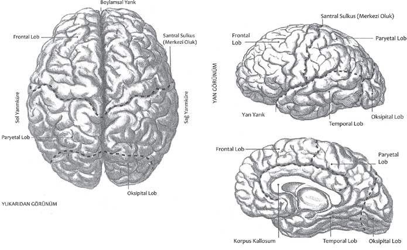
Beynin Yapısı ve Bölümleri
ÜST BEYİN-ALT BEYİN
Nusret KAYA
Şimdiye kadar beynin sağ ve sol beyin olarak incelenmesine alıştırılan beyinlerimize bu yeni kavramların öğretilmeye çalışılması niye, diye soruyor olmalısınız. İşte bu soruyu soran beyin, üst beyin veya tıpta kullanıldığı şekliyle korteks’tir. Beynin çok azı çözümlenmiş fonksiyonlarının anlaşılabilmesi için bu ayırım işime gelmekte. Bütün zekâ ölçerlerinin ölçmeye çalıştığı üst beyin fonksiyonlarının kişiden kişiye çok farklı olması aptal, orta zekâlı, çok zeki gibi kavramlarla insanları hiç de hak etmedikleri ayırımlara sürüklemiştir.
Konuşma, okuma, yazma, öğrenme, düşünme, yargılama, felsefe yapma gibi görünür beyin fonksiyonları sadece üst beyne ait olmakla birlikte tüm beyin fonksiyonları olarak kabul edilmiş ve zaman içerisinde sadece bunlar üzerinde durulur olmuştur.
Oysa psikosibernetikçiler tarafından en zeki kişide dahi yüzde 28 hücre kullandığı varsayılan üst beyin genelde yüzde 72 hücre kullanan alt beyin tarafından idare edilir. Alt beynimiz doğal olarak daha çok hücre kullanacaktır. Çünkü otonom sinir sistemi dediğimiz sistemle vücudumuzdaki iç organların refleks bir düzenle çalışmasını temin etmenin dışında içgüdülerimiz ve duygularımızı biçimlendirir.
Nasıl ki kalbimizin çarpışını, barsaklarımızın çalışışını, nefes alış verişimizi farkına varmadan refleks olarak alt beyin idare ediyorsa, içgüdülerimiz de değiştiremeyeceğimiz bir biçimde doğal olarak alt beynimize yerleştirilmiştir. Hatta halk arasındaki tabiriyle duygularımızın bile zinciri çekilemez.
İşte bu nedenlerle psikiyatrik rahatsızlıkların tamamı alt beynimizdeki takıntılardan kaynaklanır. Bu nedenle de sıklıkla otonom sinir sistemini de etkileyerek psikosomatik hastalıklara sebep olur.
Psikiyatri ve nöroloji branşları ile ilgili okurlar için hipotalamus, substansiya nigra, nucleus coroleus gibi özel alt beyin bölgelerinden bahsetmek ve bu bölgelerden salgılanan nöro-transmitter dediğimiz maddelerin duygusal bozukluklara sebep olduğunu söylemek anlaşılır olabilir. Fakat bu branşlar dışındaki hekimleri düşündüğümüzde bu kavram karmaşalarının konumuzun anlaşılmasında ne denli bir güçlük yaratacağı ortadadır. Bu nedenle alt beyin kavramını kullanmakta devam edeceğim.
Bu durumda psikolojik rahatsızlıklarımızın kaynağı olan alt beyin takıntılarını nasıl hissedebiliriz sorusu takılır aklımıza, pardon üst beynimize. İzolasyon havuzu deneylerinden sonra ortaya çıkan halüsinasyonlarda, şizofrenlerin kendiliğinden ortaya çıkan halüsinasyonlarında, Tibet rahiplerinin kendilerini izole ettikten bir süre sonra tarif ettikleri görüntülü vahiy durumlarında hep üst beyin devre dışındadır. Üst beyni devre dışı bırakan hipnoz, meditasyon gibi metotların yanında uykuda da bir nevi üst beyin uyuşukluğu vardır. Operasyonlar sırasında anestezi üst beyni kesinlikle devre dışı bırakırken, pozitif veya negatif duygusal şok ve travmalar da en azından üst beyin sislenmesine neden olmaktadırlar.
İşte bu saydığımız durumlarda üst beyin tamamen veya kısmen devre dışı kaldığı için, alt beyin takıntıları ve aşırı telkin edilebilme yeteneği ile ortadadır.Üst beynin bilinçli olan alışageldiğimiz mantığından yoksun olan altbeynimiz, doğumdan itibaren devamlı kayıt yapar. Bu kayıtları Freud’un şuur altı dediği bölüm içerisine, kapsamını biraz daha genişletmek kaydıyla yerleştirdiğini düşünmek mümkündür. Başka bir deyişle Freud’un üzerinde durduğu klasik 0-6 yaş çocukluk dönemi dışında daha sonra anestezi ve hipnoz gibi üst beynin tamamen devre dışı kaldığı durumlarda, fiziksel, duygusal ve uyku gibi üst beynin önemli ölçüde devre dışı kaldığı durumlarda da şuur altı takıntılar oluşacaktır.
Çünkü böyle durumlarda üst beynin mantık kuralları dışında tıpkı bir kompüter gibi şuur altı kayıtlar oluşacaktır. Bu kayıtları normalde algılamayan üst beyin birtakım tercüme hataları yapacak ve birtakım nevrotik bulgular ortaya çıkacak, hatta bazen kendimizi aptal hissetmemize neden olacaktır. İşte bu kayıtların temizlenmesi analitik psikoterapi yöntemleri ile yapılmaktadır. Klasik psikoanaliz sadece çocukluk döneminin şuur altı takıntılarını temizleme uğraşını verirken, son sıralarda “Dianetik” başlığı altında birtakım yeni tedavi metotları yukarıda anlattığımız nedenlerle korteksin devre dışı kaldığı sıralarda da şuur altı kayıtların yapıldığı ve bu kayıtların sıklıkla takıntılara neden olacağı düşüncesinden hareketle özellikle anestezi ve şok gibi fenomenler üzerinde durmaktadır. Hatta halen Avrupa hastanelerinin bazılarında anestezi almış bir hastanın yanında ameliyathane personelinin çok az ve hafif sesle konuşmalarını öğütlemekteler. Mantık tanımayan alt beynimizin “Bu hasta ölecek galiba.” endişe veya esprisinin etkisini çok derinden hissdebileceği ve bu olumsuz kaydın çok başarılı geçen operasyonlarda dahi hastanın iyileşmesine engel olabileceği tartışması yapılmaktadır.
Ben şahsen bu tartışmalarda kesinlikle üst beynin devre dışı kaldığı her zamanda hasta çevresindekilerin çok dikkatli olması gerektiği inancındayım. Bu nedenle uygun olmayan ellerle yapılan hipnozun, karşısında olduğum gibi, fiziksel veya duygusal bir rahatsızlık nedeni ile üst beyni sislenmiş bir hastanın yanındakilerin konuşma ve heyecanlarını çok dikkatle denetlemeleri gerektiğini de düşünmekteyim.
Daha sonra geliştirme ihtimali olan çok önemli rahatsızlıkları engellemek açısından insanımızı korumanın ayrıntılarını tartışmanın zamanı çoktan gelmiştir.
Nobel kimya ödülünü 1989 yılında kazanan araştırmacılar, RNA’nın bilgi şifrelerini okuma ve taşıma özelliklerini ispatladıkları için bu ödüle layık görüldüler. Bu nedenle 1987 yılında “Bilgi Olmayan Sezgiler” isimli kitapçığımda işlemiş olduğum alt beynin genetik bilgi şifreleri konusuna burada da değinmek istiyorum.
Çünkü o zamanlar sezgisel biçimde ele aldığım bu konu artık bilimin ispat aklanmasından geçmiştir. Haberi veren pek çok kaynak, biyoloji kitaplarının yeniden yazılacağı yorumunu getirirken belki de şu anda özetini vermek istediğim bilimsel olmaya çok yaklaşmış sezgileri de dile getirmek istediler.
Doğal olarak alt beynimizde RNA’lar aracılığı ile nakledilen bilgi şifreleri varsa bunlara ait takıntılar da olacaktır. Ve yine doğal olarak bu takıntılar, atalarımızın kendi yaşantılarına ait çok önemli olaylara ait olacaktır.
Bu durumda bir şizofrenin gördüğü halüsinasyonu, bir medyumun ruh diye adlandırdığı görüntüyü, bir korkmuşun cadı diye tarif ettiği şekilsizi, bir rahibin vahiy diye isimlendirdiği sesleri, bir çocuğu uykusundan uyandıran kâbusları alt beyindeki genetik bilgi şifrelerinin bir deşarjı olarak kabul edip bu doğrultuda analizler yapmak mümkün olacaktır. Ben şimdilik bu analizleri yapmayı, konuyla ilgilenen diğer meslektaşlarıma bırakarak kısaca kendi alanımdaki deneylerimi size aktarmak istiyorum.
Normal bir yaşam fenomeni olarak rüyaları ele aldığımızda rüyalarımızın üst beyin rüyaları, şuur altı rüyaları ve alt beyin rüyaları olarak incelenebilmesinin mümküm olacağını görürüz. (1) Üst beyin rüyaları: Üst beyin rüyaları korteks takıntılarını içerdiği için aradaki bağlantılar kolayca kurulabilmekte ve hatta danışanlarımızın çoğu bu bağlantıları kendiliğinden kurabilmektedir. (2) Şuur altı rüyaları: Şuur altı takıntıları içeren şuur altı rüyalar, pek çok psikoanaliz ekolü tarafından uzun süredir incelenmektedir. Gerek arzularımızı birtakım sembollerle ifade etmeleri gerekse mantık dışı olma özellikleri nedeni ile kolayca tanımlanabilmelerine karşın aradaki bağlantıların kurulabilmesi için profesyonel bir yardım önerilmektedir. (3) Alt beyin rüyaları: Alt beyin rüyalarının tanımı ve analizi konusunda henüz bir kaynak bulmak mümkün gözükmemektedir. Üzerinde çok yeni tartışılmaya başlanan bu fenomen hakkında bir başlangıç olarak görüşlerimi bildirmek isterim.
Şayet size çok yabancı gelen bir çevrede hiç tanımadığınız insanlarla ilgili bir rüya görmüşseniz veya karabasan, kâbus gibi hiç bilmediğiniz canavar nitelikli canlılar tarafından kovalanıyorsanız, bir savaşın ortasında vurulmak üzereyseniz, bu tür rüyalarınızın alt beyin rüyası olma olasılığı büyüktür. Tabii ki görmüş olduğunuz bir filmin korteksinizi etkilemesi ihtimalinin izole edilmesi şartıyla.
Alt beyin rüyanızın hangi atanızın genetik bilgi şifrelerini size aksettirdiği delil ve bağlantıları bulmayı şimdilik meraklı okurlarıma bırakıyorum.
İlginçtir ki yapılan araştırmalar hepimizin bir gece uyku sırasında dört veya beş rüya gördüğünü ispatlamış olmasına karşın, çoğumuz rüyalarımızı hatırlayamadığımız için rüya görmediğimizi ifade ederiz.
Oysa hiç rüya görmeyenleri dahi uykunun REM devresinde uyandırırsanız rüyalarını bütün ayrıntıları ile anlatabilmektedirler. Bu durumda hangimizin daha çok üst beyin rüyası; hangimizin alt beyin rüyası gördüğünü söylemek hiç de kolay değil.
Çok sayıda rüya analizi yapma fırsatı bulmamı nevrozları nedeniyle uykuları bozulmuş danışanlarıma borçluyum diyebilirim. Doğal olarak uykusu kesik ve bozuk olan danışmanlarımın uykunun REM devresinde uyanma ve rüyalarını hatırlama şansları yüksek oluyor.
Başlangıçta sıklıkla korteks rüyalarını hatırlayabilen danışanlarım, bunların analizi yapılıp taşıdıkları duygusal yüklerden kurtuldukça şuur altı rüyalarını da hatırlamaya başlıyorlar ve şuur altı rüyalarının analizinde mesafe katettikçe uykuları da düzeldiğinden alt beyin rüyalarını hatırlamaları mümkün olmuyor.
Alt beyin rüyalarının analizinde ancak daha başlangıçta bu tür rüyalar nedeni ile gelen danışanlarımda mesafe kaydettik. Henüz aldığım mesafeyi yeterli bulmadığımdan bu konudaki ayrıntıları bir başka güne veya bir başka meslektaşıma bırakıyorum.
Güzel rüyalar dileğiyle. (Evrenin Sembol Diliyle Psikoestetik, 1999)
beyin anatomisi (cerebral anatomy) Beynin yapısı ve bölümleri. Bkz. beyin.
beyin baskınlığı (cerebral dominance) Beden davranımlarının başlatılmasında ve denetiminde beynin bir diliminin ötekine komut vermesi ve onu yönetmesi.
beyincik (cerebellum) Beyin kökünün arka bölümünde bulunan üç loplu bir yapı. İstemli ve istemsiz kas etkinliğini bütünleştirme, kas hareketlerini düzenleme, vücut dengesinin korunmasına yardımcı olma görevlerini beyincik yerine getiriyor.
beyin dalgaları (brain waves) Özellikle beyin kabuğunun elektrik etkinliğinde kendiliğinden olan iniş ve çıkışlar. Bkz. beyin dalgaları çizelgesi.
beyin dalgaları çizelgesi (electroencephalogram) Kafatasına ya da açıktaki beyne elektrotlar yerleştirildiğinde beynin elektrik gizilgücündeki dalgaya benzer görüntülerinin gösterildiği çizelge.
beyin dilimleri (cerebral hemispheres) Beyni oluşturan sağ ve sol dilimler. Bkz. beyin yarımküreleri.
beyin felci (cerebral palsy) Beynin özellikle hareket bölgelerindeki zedelenmenin yol açtığı bir dizi sinirsel hareket ve duruş bozukluğunun ortak adı. Bu bozukluğun büyük çoğunluğu, gebelik ve doğum sırasında ya da bebeklik döneminde ortaya çıkıyor. Spastiklik, katılık, kas gerginliğinin bulunmaması, güçsüzlük, hareketlerde eşgüdümsüzlük; görme, işitme kusurları gibi algısal güçsüzlükler, zekâ geriliği; konuşma, çiğneme, yutkunma güçlükleri, sarsak duruş ya da yürüyüş, titreme, hareket yitimi ve benzerleri, bu bozukluğun başlıca belirtileridir. Beynin yıkıma uğrayan bölgesine göre, belirtilerin şiddeti değişiyor.
beyin fırtınası (brainstorming) Bir sorun’un çözümü, yeni teknik ve buluşların geliştirilmesi gibi belli bir konuda düşünce üretmek amacıyla kullanılan bir takım tekniği. Teknik, takımı oluşturanların bir arada, özgür bir ortamda akıllarına gelen her şeyi rahatça dile getirmeleri biçiminde uygulanıyor. Beyin fırtınası seansında hiçbir düşünce yasaklanmadığı gibi, hiçbir düşünce de eleştirilmiyor. Dile getirilen her düşünce kaydediliyor ve daha sonra, takımı oluşturan üyeler arasında tek tek tartışılıyor. Reklamcı Alex Osborn’un geliştirdiği bu teknik, üst düzeyde bir düşünme ortamı ve yaratıcılık sağlıyor.
beyin gizilgücü (brain potentials) Beyin kabuğundaki düşük voltajlı, yükselip alçalan ve ölçülebilen elektrik tepkileri; beyin potansiyeli.
beyin göçü (brain drain) Genellikle yaşanılan ortamın olanaksızlıkları, gelir düzeyinin düşüklüğü, rahat ve verimli çalışma koşullarının bulunmayışı gibi nedenlerle az gelişmiş ülkelerden gelişmiş ülkelere nitelikli iş gücünün yanı sıra bilim insanı, araştırmacı, sanatçı ve aydınların göç etmesi.
beyin hasarı Bkz. organsal beyin bozuklukları.
beyin kabuğu (cerebral cortex) Beynin evrimsel gelişiminde en son oluştuğu düşünülen; insanda 15 milyardan fazla sinir hücresi içeren; insanı öteki canlılardan ayırt eden karmaşık fizyolojik işlevlerin gerçekleştiği, dışta 1-4 mm kalınlığındaki gri madde; serebral korteks, beyin korteksi, beyin zarı. Her türlü bedensel etkinliğin eşgüdümünden, duyu organlarından gelen bilgilerin yorumlanıp bunlara ilişkin uygun devimsel komutların verilmesine dek birçok zihinsel etkinlik ve davranış, burada örüntüleniyor. Bunların başlıcaları dil, akıl yürütme, planlama, sorun çözme ve yaratıcılıktır. Bununla birlikte, öbür organlar ve işlevler de bunlar üzerinde etken oluyor. Evrimin alt basamağındaki hayvanlarda pek gelişmemiş olan beyin kabuğu, memelilerde; özellikle insanda sinir sisteminin geri kalan bölümüne göre çok gelişmiştir. Tüm sinir sisteminin ağırlığının yarısı kadar bir ağırlığa sahiptir. Çok gelişmiş olması nedeniyle, kafatasına sığabilmesi için yüzeyinde birçok girinti çıkıntı ve kıvrımlar oluşmuştur. Beyin kabuğu orta çizgisi boyunca uzanan yarık, onu iki bakışık yarıya ayırıyor. Uzunlamasına yarıktan yana ve hafifçe öne doğru uzanan derin oluk, merkezi oluktur. Yan yüzeyde arkaya doğru uzanan yarığa ise, dış yan yarığı adı verilmiştir. Bu üç yarık, beyin kabuğunu dört lopa ayırıyor. Bunlar alın lopu (frontal lobes), duvar lopu (pariental lobe), şakak lopları (temporal lobes) ve art kafa loplarıdır (accipital lobes’tır). Beyin kabuğu, büyük bir sinir düğümü (gangliyon) olmakla birlikte, beyin kabuğu hücrelerini birbirine bağlayan liflere sahip olması ile sinir sisteminde bulunan öteki sinir düğümlerinden ayrılıyor. Beyin kabuğu, hücre yapısındaki farklılıkları nedeniyle birçok farklı yapısal alanlara bölünüyor. Örneğin, elektriksel uyarılmayla beyin zarının izdüşüm alanları çıkarıldığı zaman, beyin zarında her duyunun izdüşümünün, topografik bir biçimde örgütlendiği görülüyor. Her duyunun beyin zarında genelde iki; kimi de üç izdüşümü bulunuyor. Bireyin beyin kabuğunun gelişmişliği ile zekâsı arasında doğru orantı vardır. Kıvrımlı beyin kabuğunun oluşumu ve gelişimi ile hacim artışı ve yapısal-işlevsel farklılaşma birlikte gerçekleşiyor. Üzerinde durulması gereken nokta, yeni beyin kabuğunun duyusal ya da devimsel işlevleri olmayan kesiminin gelişimidir. Evrim aşamalarında insana doğru geldikçe, bu işlevlerin dışında kalan alanlar büyümeye başlamıştır. Öğrenilmiş davranışlarla ve karmaşık süreçlerle ilişkili olmaları nedeniyle bu alanlara çağrışım alanları deniyor. Bu büyüme, alın loplarındaki alın öncesi alanların;beyin kabuğunun arka kesimlerinde ise, bilinen duyusal alanların dışında kalan duvar ve şakak alanlarının büyümesi biçiminde gerçekleşmiştir. Bkz. alın beyin kabuğu; bağlantı beyin kabuğu; beyin; Broca alanı; ilkelbenlik;benlik; üstbenlik; öğrenme merkezleri; Wernicke alanı.
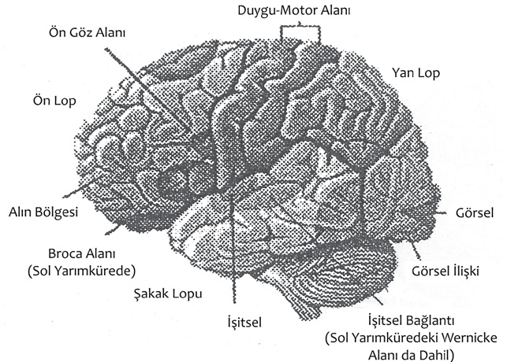
Beyin Kabuğunun İşlev Alanları
beyin kabuğu sağırlığı (cortical deafness) Beyin zarındaki işitme merkezinin bozulmasıyla ortaya çıkan sağırlık.
beyin kanaması Bkz. organsal beyin bozuklukları.
beyin korteksi Bkz. beyin kabuğu.
beyin kökeni varsayımı (brain-spot hypothesis) Ruh hastalıklarının yalnız organsal nedenlerden ileri geldiğini benimseyen kuram. Bugün bu görüşün doğru olmadığı kanıtlanmıştır. Ruhsal bozukluklar, hem organik hem de ruhsal nedenlere dayanıyor.
beyin kökü (brainstem) Beynin iki yarımküresi ile omuriliği birbirine bağlayan bölümü; köprü. Beyin kökü, evrimsel bakımdan beynin en eski bölümüdür. Bedenin istemsiz işlevlerinin birçoğunu beyin kökü denetliyor. Orta beyin, köprü ve medulla olarak üç ana bölümden oluşuyor. 12 kafa sinirinden 2’si dışındakiler, beyin kökü aracılığı ile beyne giriş-çıkış yapıyor.
beyin körlüğü (mind or cortical blindness) Görme duyumunda bir bozukluk olmadığı halde nesnelerin anlamlarını kavrayamama. Bu duruma beyindeki görme merkezlerinin bozukluğu yol açıyor.
beyin lopları Bkz. alın bölgeleri; alın lobotomisi; art kafa lopları; bilgi; şakak lopları; yan lop.
beyin merkezi (brain center) Bir bağlantı merkezi, bir ara durak yeri; beyin özeği. Duyu merkezi denen duyu sinirlerinin ulaştığı ve tepki merkezi denen tepki sinirlerinin çıktığı iki alanı ya da belli başka bir alanı, bölgeyi, bağlantı merkezi denen merkez birbirine bağlıyor.
beyin-omurilik sıvısı (cerebrospinal fluid) Beyinde, kafatasında ve belkemiğindeki boşlukları dolduran lenf benzeri bir sıvı. Beyin-omurilik sıvısının temel işlevi, beyni ve omuriliği şoklara karşı bir yastık gibi korumaktır. Bu sıvının başka işlevlerinin de olabileceği düşünülüyor.
beyin ölümü (brain death) Beynin tüm işlevlerinin yitirilmesi, beyindeki sinirsel etkinliğin tümüyle durması. Bugün birçok ülkede resmi ölüm, beyin ölümüyle tanımlanıyor. Tıpta beyin ölümü tanısı için belirlenmiş olan ölçütlerin başında, refleks hareketlerinin, göz kırpma refleksinin, gözbebeği refleksi ve EEG etkinliğinin durması geliyor.
beyin sapı (brain stem) Beyin dilimleri (beyin yarım küreleri) ile beyin çıkarıldıktan sonra, taban sinir boğumlarına bağlı olarak geri kalan beyin bölümü. Bkz. beyin.
beyin sarsıntısı (brain consution) Başın ya da omurganın bir yere hızlı çarpması sonucu sinirsel görevlerde oluşan sarsıntılar, bayılmalar, kusmalar ve sonraki çok değişik etkiler ya da bozukluklar; beyin travması.
beyinsel kişilik Bkz. Sheldon’un bedensel yapı sınıflaması.
beyinsel kişilikli beden tipi Bkz. Sheldon’un bedensel yapı sınıflaması (Dal Beden).
beyinsel körlük Bkz. beyin körlüğü.
beyinsel kötürümlük (cerebral palsy) Beyindeki yıkımın yol açtığı hareket yetersizliği. Beyinsel kötürümlük, beynin hareketleri denetleyen merkezinde, genellikle çocukluk döneminde ortaya çıkan bozukluklardan kaynaklanıyor. Felç, hareketlerde zayıflık, eşgüdüm bozukluğu ya da başka bir devimsel işlev bozukluğu olarak beliriyor ve buna ek olarak algı, öğrenme, konuşma, davranış bozuklukları gibi ruhsal ya da zihinsel öğeleri de içeriyor. Olayın hem organik hem de eğitimsel yanı olduğundan, tedavide disiplinler arası işbirliği gerekiyor. Beyinsel kötürümlüğe yol açan nedenler : (1) Doğum Öncesiyle İlgili Nedenler: Bu nedenler, kalıtsal ya da çevresel olabiliyor. Dölütün yeterli oksijen alamaması, anne metabolizmasının bozukluğu, Rh etkeni, eşin (plasentanın) anneden zamanından önce ayrılması, annenin aşırı kansız olması gibi çevresel etkenelerle başka kalıtsal bozukluklar, beyinde yıkıma yol açabiliyor. (2) Doğumla İlgili Nedenler: Çocuğun ters doğması, göbek bağının boyuna dolanması yüzünden bebeğin oksijen alamaması ve çeşitli darbeler, beyin yıkımına neden olabiliyor. (3) Doğum Sonrasıyla İlgili Nedenler: Menenjit gibi bir hastalık; karbonmonoksit zehirlenmesi gibi bir zehirlenme ve kazalar, bu nedenler arasında sayılıyor. Beyinsel kötürümlük, çeşitli biçimlerde sınıflandırılmakla birlikte, çoğunlukla hareket bozukluğunun tipine ve bedenin etkilenen bölgesine göre sınıflama yapılıyor. Hareket Bozukluğunun Tipine Göre Şöyle Bir Sınıflandırma Yapılıyor: (1) Spastik Tip (spastic type; spasticity): Buna beyin kabuğunun hareketleri denetleyen bölgesinde ya da pramidal bölgede bulunan bir yıkım ya da yapısal bozukluk neden oluyor. Yıkımın genişliğine bağlı olarak yalnızca bir el, bir ayak, bir kol; bütün kol ve ayaklar; hatta bütün beden etkilenebiliyor. Bu tipte büzülme ve kasılmayı sağlayan kaslar arasındaki denge bozuk olduğundan kaslar, çoğu kez sürekli gergin oluyor. Bu nedenle bedenin etkilenen kısmında birdenbire ve istemsiz hareketler görülüyor. (2) Atetoyit Tip (athetoid type; athetoisis): Bu tipin ortaya çıkmasına, ön beyinde ya da beynin iç orta bölümündeki yıkım ya da yapısal bozukluk yol açıyor. Bu tipte çocukların yüz kaslarında; baş, kol ve bacaklarında istemsiz hareketler görülüyor. Bu çocuklar, ritmik ve düzenli hareket edemiyorlar. Sallanarak, sendeleyerek, kavis çizerek yürüyorlar. Ancak, bu duruş biçimini uzun süre koruyamıyorlar. Uykuda görülmemesine karşın, duygusal tansiyonları arttığında, istemsiz hareketlerin sıklığı ve şiddeti de artıyor. (3) Ataksik Tip (ataxic type; ataxia): Bu tipin belirmesi, bedensel dengeyi ve kassal eşgüdümü denetleyen beyincikteki bir yıkımdan kaynaklanıyor. Düzensiz hareketler, paytak yürüme, yürürken ayağını normalden daha yükseğe kaldırma, sık sık düşme ve sözlerde eşgüdüm bozukluğu, bu tipte görülen belli başlı bozukluklardır. (4) Tremorlu Tip (tremor) Bu tipte görülen bozukluk, daha önce sözü edilen tiplerde görülenlerden daha hafif bir bozukluktur. Yıkım, athetoisisteki gibi promidal bölgenin dışındadır. Bedende birbirine karşıt görevleri olan kasların istem dışı kasılmalarının yol açtığı düzensiz titremeler görülüyor. Bu tipler, bağırarak konuşuyorlar. (5) Rijit Tip (rigidity): Bu tipin ortaya çıkmasına, pramidal bölgenin dışındaki bir yıkım neden oluyor. Bu tipte zekâ geriliği, oldukça yaygındır. Bunlarda hareket oldukça azalmıştır.
beyin travması Bkz. organsal beyin bozuklukları.
beyin yangısı (encephalitis or inflammation of the brain) 1. Beyinde ya da beyin zarında beliren herhangi bir ivegen yangı; beyin iltihabı. 2. Saralı beyin yangısı (epileptic encephalitis) ya da uyku veren beyin yangısı (lethargiç encephalitis) denilen bulaşıcı beyin hastalığı. Uyku düzenini bozması nedeniyle uyku hastalığı olarak da anılıyor. Beyin yangısının yeğinliği geçtikten sonra da olumsuz sinirsel ve ruhsal değişikliklere yol açtığı için eğitim bakımından önem taşıyor.
beyin yarımküreleri (cerebral hemispheres) Beynin yapı ve görünüş olarak bakışımlı; ancak, farklı işlevleri olan iki yarımküresi; beyin dilimleri. Sol yarımkürenin konuşma, yazma, dil, matematik gibi yüksek bilişsel süreçlerde; sağ yarımkürenin ise resim, müzik gibi algısal ağırlıklı yeteneklerde öne çıktığı varsayılıyor. Bkz. beyin anatomisi.
beyin yıkama ( brain washing) Denetimli, planlı bir ortamda savaş tutsağı ya da siyasal suçlu gibi kimselere istençleri dışında uygulanan düzenli propaganda. Uygulama, tutsak ya da tutuklunun özgüvenini çökertip umut ve inançlarını yok etmeye ilişkin uzun süreli ayrı yaşama koşullarında ve işkence, gözdağı, yıldırma eşliğinde aynı düşünceleri sürekli yineleme biçiminde gerçekleştiriliyor. Bununla, kişinin kendi inançlarından vazgeçerek onların yerine, istenen inançları benimsemesi amaçlanıyor.
beyin zarı Bkz. beyin kabuğu.
beyin zedelenmesi (brain injury) Ameliyat, kaza ya da hastalık nedeniyle beynin yapısında beliren aksaklık.
bez (gland) Endokrin bezleri gibi kan dolaşımına, doğrudan doğruya ilgili organa boşaltılan ya da eksorkin bezleri gibi vücuttan atılan çeşitli vücut salgılarını üreten organ. Bu bezlerin salgılarının, vücut ısısını, kan şekerini (insülin’i), cinsel etkinlikleri düzenleme ve ter gibi toksik maddeleri dışarı atma ve benzeri pek çok işlevi bulunuyor. Bkz. endokrin bezleri.
bibliyografya Bkz. kaynakça.
bibliyoterapi Bkz. kitapla tedavi.
biçim (shape, form) Bir şeyin dış çizgileri bakımından niteliği, dış görünüşü; form. Bkz. biçim algısı; biçim ayırt etme; biçimbilim; biçim değişmezliği; biçim düzenleme yasaları; biçim etkeni; biçimlendirme; biçim psikolojisi; biçimsel değişmezlik; biçimsel-işlemsel evre; biçimsel öğreti; biçimsel tedavi; biçimsel yapışkanlık; biçimsiz tip; biçim tamamlama testi; biçim tanıma; biçim türdeşliği; biçim verme; form; Gestalt.
biçim algısı (form perception) Bir formun bölümlerini önce bütünsel bir biçim olarak; sonra da bölümlerine ayrışmış olarak algılama yetisi.
biçim ayırt etme (patterndiscrimination) Karmaşık bir uyarıcılar yığınından, örneğin bir gürültü içinden belli bir ezgisel yapıyı ya da bir resimdeki tek tek renkleri değil de resmin yansıttığı imgeyi algılama yetisi; şekil ayırt etme. Bkz. biçim.
biçimbilgisi Bkz. biçimci sağaltım; biçimbilim.
biçimbilim (morphology) Canlı varlıkların yapılarını ve biçimlerini inceleyen biyolojinin bir dalı; morfoloji, biçimbilgisi. Bu dal, özellikle dil, toplum ve kültür üzerinde biçim açısından ruhsal ve toplumsal incelemeler yapıyor; öze ve işleve ikinci derecede önem veriyor. Bkz. dil psikolojisi.
biçimci sağaltım Bkz Gestalt tedavisi.
biçim değişmezliği (shape constancy) Ayrı açılardan bakıldığında bir nesnenin biçimine ilişkin algının değişmemesiyle tanımlanan bir algı ya da nesne değişmezliği; şekil değişmezliği, biçimsel değişmezlik. Örnek şeklin retina üzerindeki imgesinin giderek yamulmasına, farklılaşmasına karşın, bunu yine aynı kapı olarak algılıyoruz. Bu, biliş sisteminin, şekli algılama sırasında bakış açısını hesaba kattığını gösteriyor. Bkz. algı; algısal değişmezlik; derinlik algısı.
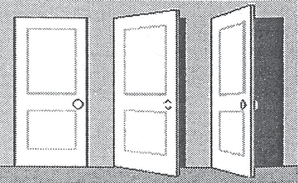
Biçim Değişmezliği
biçim düzenleme yasaları Bkz. Gestalt düzenleme yasaları.
biçim etkeni Bkz. Gestalt etkeni.
biçimlendirme (configuration) 1. Parçalanamayan ve kendini yaratan parçaların birbirine eklenmesinden de öte bir örüntüsü olduğu savunulan, nesnel, ruhsal ya da davranışsal bir bütünlük oluşturma; şekillendirme. 2. Davranış değiştirme tekniklerinden biri.
biçim psikolojisi Bkz. Gestalt psikolojisi.
biçimsel (formal) 1. Biçimle ilgili. 2. İçerikten çok yapıyla (biçimle) ilgili.
biçimsel değişmezlik Bkz. biçim değişmezliği.
biçimsel eğitim Bkz. örgün eğitim.
biçimsel-işlemsel evre Bkz. bilişsel gelişim kuramı.
biçimsel öğreti (formal discipline) Zihnin gözemleme, bellek ve istenç gibi birbirinden ayrı genel bir dizi güç ya da yetenekleri bulunduğunu ve bunların her birinin öğrenme, alıştırma yoluyla güçlendirilebileceğini savunan kuram.
biçimsel tedavi Bkz. Gestalt tedavisi.
biçimsel yapışıklık (figural cohesion) Bir biçimin parçalarının tek bir biçim olarak bir arada kalması eğilimi. Örneğin, bir kez üçgen durumunda görülen üç nokta, başka türden öğelerle birbirine bağlansa bile, gene üçgen olarak görülüyor.
biçimsiz tip Bkz. Kretschmer’in bedensel yapı sınıflaması.
biçim tamamlama testi Bkz. Gestalt tamamlama testi
biçim tanıma (pattern recognition) Kaotik bir duyusal uyarıcılar yığını arasından yüz, nesne, resim, ezgi ve benzeri, bilinen biçim ve yapıları algılama, ayırt etme, anlamlandırma ve tanıma yetisi; şekil tanıma. Biçim, uyarıcının belli öğeleri soyutlanıp örgütlü bir yapıda bütünleştirilerek tanınabiliyor, belleğe aktarılıyor ve anımsanıyor. Örneğin, bir yazıyı okumak için, başka türlü anlamsız olan bir çizgiler ve eğriler yığınından oluşan anlamlı biçimleri anımsamamız gerekiyor. Bu işlem ayrıca örneğin, bir harfin biçimi değişse bile b değil, a olduğunu ayırt etmemizi sağlayacak olan bir karşılaştırmaya, buna temel olacak soyut sınıflandırmalara ve kavramlara gereksinimimiz vardır. Şekilde, kendilerini oluşturan öğelerin birbirinden çok farklı olmalarına karşın, dört ayrı durumda da aynı üçgen biçimini görüyoruz. Bkz. biçim algısı; biçim ayırt etme; prototip eşleme kuramı; şablon eşleme.
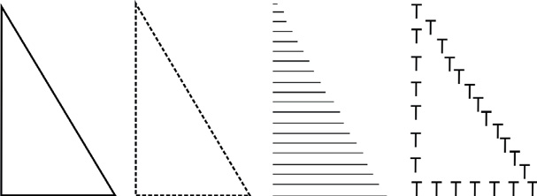
Biçim Tanıma
biçim türdeşliği Bkz. Gestalt türdeşliği.
biçim verme Bkz. edimsel koşullama.
bildirimsel bellek Bkz. açık bellek.
bileme Bkz. asimilasyon.
bileşen içgüdü Bkz. içgüdü; özünerosluk.
bileşik engelli (multiple handi capped) Görme, işitme, zekâ geriliği gibi engellerin birden çoğunu kendinde toplayan (kişi).
bileşik imge (composite image) Türlü anıların birbirine eklenmesi sonucu ortaya çıkan karma imge.
bileşik imgesel kişi (composite figure, composite image, composite person) Birden çok gerçek kişi ile ilişkili özelliklerden oluşmuş ve düşlerde rastlanan bir imgesel kişi. Örneğin, bir arkadaşımızın içtenliği ile öbür arkadaşımızın bedensel özelliklerini taşıyan bir kişinin var olduğunu düşünmek gibi.
bileşik tepki ilkesi (principle of multiple response) Canlının yeni karşılaştığı durumlara uygun düşen birçok tepkiyi denemesi ilkesi.
bileşim kuramı Bkz. MENDEL, Johann Gregor.
bileştirme (synesthesia) Kimi kişilerde görülen, bir duyu organıyla sağlanan algıları başka bir duyu organı ile sağlananlarla birleştirip kaynaştırma eğilimi. Renkli işitme de böyle gerçekleşiyor.
bilge (wise) Herşeyi bilen; bildiği şeyleri de iyi ve sağlam bilen; bilgisini kendisi ve başkaları için en yararlı biçimde kullanabilen, iyi ahlaklı, olgun kimse. Bkz. bilgelik.
bilgelik(learnedness) 1. Bilge kişinin taşıdığı nitelik, bilge olma durumu. 2. Herkesin ulaşamadığı, derin, kapsamlı, bütünsel bilgi; hikmet. 3. Kendini tanımanın bilgisi; vukuf. Bkz. bilge; temel erdemler.
bilgi (information, knowledge) 1. İnsan aklının kavrayabileceği olgu, gerçek ve ilkelerin tümü. 2. Okuma, dinleme, inceleme, araştırma, gözlem, deney yoluyla edinilen duyum, algı ve izlenimlerin beyindeki sentezinin oluşturduğu düşünsel ürün; malûmat. 3. Genel olarak ve ilk sezgi biçiminde zihnin kavradığı temel düşünceler. 4. Bir yargıya varabilmek için bilinmesi gereken öğelerin her biri. 5. Bir şeyi bilme durumu. Bilgi edinmek, sürekli çaba gerektiriyor. İnsan beyni, anında yüzbinlerce saptamayı anlatma olanağına sahiptir. Bilgi, yazılarak, öğrenilerek, maddeye geçirilerek korunuyor. Bilgisayar da önemli koruyuculardan biridir. Bilgi, insanlığın yararına kullanıldığı zaman değerlidir. Bkz. bilgibilim; bilgiçlik; bilgi düzeyinde öğrenme; bilgi erişimi; bilgi işlem; bilgi işlem sistemi; bilgi işlem süreci; bilgi işlem süreci kuramı; bilgi işlem yaklaşımı; bilgi kodlama; bilgi kuramı; bilgilendirme; bilginin anımsanması; bilgi okuryazarlığı; bilgi öğretisi; bilgi psikolojisi; bilgisayar; bilgi sosyolojisi; bilgi toplumu; bilgi verme; bilgi yapıları; biliş; biliş bilimi; bilişsel öğrenme; bilmek; eğitimin amacı.
bilgibilim Bkz. bilgi kuramı.
bilgiçlik (pedantry) 1. Çok bilgili, bilen kimse olma. 2. Bilgisiz olmasına karşın bilgili görünmek isteme, yerli yersiz söze karışma, bilgiç geçinme, çokbilmişlik; ukalalık. Bkz. ikincil savunma belirtileri.
bilgi düzeyinde öğrenme Bkz. bilişsel öğrenme.
bilgi erişimi (information access) Sarı sayfalar, databaseler, internet gibi bilgi alanlarında bilgiye ulaşma. Bu erişim, belli bir bilgiye gereksinim duyulduğunu, belli bir yerde bu bilgilerin bulunduğunu, bu bilgilerin nasıl aranacağını bilmeyi ve ulaşılan bilgilerin, gereksinim duyulanlara uygunluğunu belirleyecek bilgilere ve yeterli zamana sahip olmayı gerektiriyor.
bilgi işlem (information processing) 1. Bilgisayarda, veri üzerinde işlemlerin düzenli bir biçimde yürütülmesi işi; bilgisayar uygulamaları; bilgisayarların çalıştırılmasıyla ilgili bilgi ve yöntemlerin tümü; veri işlem. 2. Bilgisayar kullanıcısına yararlı bilgiler sağlamak amacıyla veriler üzerinde yapılan işlemler. 3. Biliş psikolojisinde, bilginin alınması, yorumlanması, saklanması, anımsanması, unutulması ve kullanılması süreçlerinin bütünü. Bilgi işlem modellerinde algısal ve bilişsel süreçler genellikle giriş, kodlama, saklama, anımsama, kod çözme, çıkış gibi belli bir düzeni izleyen aşamalarla açıklanıyor. Algı ve biliş süreçleri konusunda son yıllarda bu yaklaşımdan çok, bağlantıcı modeller ilgi görüyor. Bkz. bilgi işlem sistemi; bilgi işlem yaklaşımı; bilgi kodlama; bilgi işlem süreci; bilgi işlem süreci kuramı; bilgi işlem yaklaşımı; bilgi kuramı; bilişsel biçim.
bilgi işlem sistemi (information processing system) Bilgi işlem donanımı, yazılımı, çalışmaları ve işletim yöntemlerinin oluşturduğu bütün.
bilgi işlem süreci (information processing) Biliş psikolojisine göre, bilginin alınması, yorumlanması, saklanması, anımsanması, unutulması ve kullanımı gibi süreçler. Algısal ve bilişsel süreçler, bilgi işlem modellerinde genellikle giriş, kodlama, saklama, anımsama, kod çözme, çıkış gibi belli bir düzeni izleyen aşamalarla açıklanıyor. Algı ve biliş süreçleri konusunda son yıllarda bu yaklaşımdan çok, bağlantıcı modeller ilgi görmeye başladı. Bkz. bilgi işlem; bilişsel biçim.
bilgi işlem süreci kuramı (information processing theory) Allen Nevell, Herbertt A. Simon, Gagne ve Briggs’in, öğrenmenin bilgi işlem sürecine benzer bir biçimde oluştuğunu ileri sürdükleri öğrenme kuramı. Bu kurama göre girdiler, belli bir zamanda istendik ürüne dönüştürülüyor. Ürünün niteliği ve niceliğinin denetlendiği bu bilgi işlem süreci girdiler-işlemler-çıktılar ve dönütten oluşuyor. Gagne ve Briggs’in görüşüne göre, çevreden gelen uyarıcıları önce duyu organları alıyor ve duyusal kayıta geçiyor. Çok kısa bir süre duyusal kayıtta kalan bilgi, kısa süreli belleğe geliyor. Burada anlamlandırılan bilgi, uzun süreli belleğe depolanıyor. Kısa süreli bellekte iken yinelenmeyen ve kullanılmayan bilgi, kısa sürede siliniyor. Uzun süreli bellekte kodlanıp depolanan bilgi, uyarıcı gelince yineleniyor. Gelen uyarıcıya verilecek yanıta ilişkin davranışlar seçildikten sonra ya kısa süreli belleğe ya da davranış düzenleme mekanizmasına başvuruluyor. Bu işlemlerin sonunda da dönütün kullanılması gerekiyor. Ayrıca, öğretilen her davranış, insan zihninde şu sekiz aşamadan geçerek oluşuyor: (1) Güdüleme; (2) Farkına varma; (3) Kazanma; (4) Kodlama; (5) Anımsama; (6) Genelleme; (7) Davranma; (8) Pekiştirme. Gagne ve Briggs, bu aşamalı sıradan yola çıkarak öğretme ortamının şu sıra izlenerek düzenlenmesi gerektiğini belirtiyorlar: (1) Dikkati çekme: Öğrencinin, öğretilecek davranışa dikkati çekilmeli; dikkatinin, kazandırılacak davranış üzerinde toplamasını etkileyen iç ve dış koşullar ayarlanmalıdır. (2) Kazandırılacak davranışlar, dersin başında öğrenciye bildirilmelidir. Bu tutum, hem öğrenmeyi hem de değerlendirmeyi kolaylaştırıyor. (3) İlgili ön öğrenmeler anımsatılmalıdır. Kazandırılacak davranış, daha önce kazanılmış davranışlara bağlı olduğundan, ilgili ön öğrenmeler, öğrenciye anımsatılmalıdır. Bunların eksik yanlarının, yeni öğrenilecek davranışı olumsuz etkilediği de unutulmamalıdır. (4) Uyarıcı araç-gereç sunulmalıdır. Yeri geldikçe, gerekli araç-gereç, ilgili tekniklerle sunulmalıdır. (5) Öğrenciye rehberlik edilmelidir. Yeri geldiğinde öğrenciye öğretmen ya da bilen öğrencilerce örnek verme, açıklama yapma gibi birebir yardım yapılmalıdır. (6) Davranış gözlemlenmelidir. Kazandırılacak davranışı her öğrencinin istenen nitelikte yapıp yapmadığı gözlemlenmelidir. (7) Dönüt vermelidir. Öğrenci, istendik davranışı eksik ya da yanlış yapıyorsa bunlar öğrenciye bildirilmelidir. (8) Değerlendirme yapılmalıdır. Öğretme durumu sona erdiğinde, istendik davranışı her öğrencinin ne aşamada kazandığı belirlenmeli; yanlışlar, eksikler giderilmelidir. Bu, ya her dersin ya da ünitenin bitiminde yapılmalıdır. (9) Kalıcılık sağlanmalıdır. Bunun için öğrenciye uygun zamanlarda davranışı yineleme ve uygulama fırsatı tanınmalıdır. Öğrenmeyi insanın sinir sisteminde gerçekleşen karmaşık bir süreç olarak gören Gagne’ye göre, aşağıda görüldüğü gibi sekiz çeşit öğrenme vardır: (1) İşaret öğrenme (Signal learning): Bu en alt basamak öğrenmede çocuk, örneğin sesi,n, ışığın, rengin farkına varıyor. (2) Uyarıcı-davranım bağını öğrenme (stimulus-response learning): Bu basamakta kişi, kırmızı ışık yanınca durulacağı gibi uyarıcıyla davranım arasındaki bağı öğreniyor. (3) Uyarıcı-davranım bağlarını kurarak uyarıcı-davranım zinciri oluşturma (chain learning) Kişi bu basamakta, bir makineyi, arabayı çalıştırmada olduğu gibi zincirleme davranışlar oluşturuyor. (4) Uyarıcı-davranım zincirlerini sözlü karşılıklarıyla öğrenme ( Verbal association learning): Sözcüklerin anlamlarını böyle öğreniyor; iki sözcük arasında ilişkiyi böyle kuruyoruz. (5) Ayırt etmeyi öğrenme (multiple discrimination learning): Kişi, nesneleri, hayvanları, ilişkileri, olguları ayırt etmeyi; anneyi babadan, kediyi köpekten, masayı sandalyeden ayırmayı bu basamakta öğreniyor. (6) Kavram öğrenme (consept learning) Kişi, okul, eğitim, öğretim, pekiştireçi devlet gibi kavramların anlamlarını bu basamakta öğreniyor. (7) İlke öğrenme (principle learning) Kişi, kuramların, yasaların, ilkelerin, sayıtlıların, genellemelerin nerede ve nasıl kullanılacağını bilmek gibi kavramlar arasındaki ilişkileri; nedenlerle sonuçlar, önceliklerle sonralıklar arasındaki bağları bu basamakta öğreniyor. (8) Sorun çözme (problem solving): Kişi; matematik, fizik, kimya, biyoloji, felsefe, sosyoloji, psikoloji gibi alanlara ilişkin sorunları çözmede olduğu gibi bu basamakta, ilgili yasa, kural, ilke, genelleme ve sayıtlıları kullanarak sorunu çözmeyi öğreniyor. Bu sekiz öğrenme türüyle ilgili ürünler, çok farklı ve aşamalı yollarla kazanılıyor. Birinci tür öğrenme olmadan ikinci; birinci ve ikinci tür öğrenmeler olmadan üçüncüsü ve ilk yedisi olmadan da sorun çözme olamıyor. Onun için Gagne’ye göre öğrenme, birikmiş bir üründür. Ayrıca öğretme durumunda öğrencinin etkin katılımı da gereklidir; ancak her öğretme durumuna her öğrenci aynı etkinlikle katılamayacağı için çare, bireyselleştirilmiş eğitim yapmaktır. Bundan başka Gagne, öğrenme ürünlerini zihinsel beceriler, sözel bilgiler, tutumlar, beceriler, bilişsel stratejiler olarak aşamalı beş grupta topluyor ve bunların öğrenilme koşullarını açıklıyor. Bu kuramcılar öğrenmeyi hem ürün hem de süreç olarak görüyorlar. Bkz. öğrenme kuramları.
bilgi işlem yaklaşımı ( information processing approach) Biliş psikolojisinde, zeki davranışın dayandığı dikkat ve bellek gibi zihinsel işlemler üzerinde odaklaşan bir bilişsel çalışma yaklaşımı.
bilgi kodlama (coding of information) Bir uyarımı, özelliklerini belirledikten sonra bellekte saklama.
bilgi kuramı (theory of knowledge or epistemology) 1. Bilgi olayını betimleme, çözümleme yoluyla açıklayan; mantık, psikoloji, toplumbilim, tarih, biyoloji ve fizikötesini kuşatan kuram; epistemoloji, bilgi öğretisi. 2. Bilgi eleştirisi; bir yandan bilginin özünü, ilkelerini, yapısını, kökenini, kaynağını; öte yandan da bilginin yöntemini, geçerliğini, koşullarını, olanak ve sınırlarını araştıran felsefe dalı. Bilginin kaynağı ve geçerliği konusunda usçuluk, deneycilik, eleştiricilik, sezgicilik ve benzeri kuramlar; bilginin çeşitli açılardan ele alınışına göre de gerçekçilik, idealizm gibi kuramlar ortaya atılmıştır.
bilgilendirme (information) Bilgiler vererek bilgili kılma, bilgili duruma getirme, bilgilenmesini sağlama.
bilginin anımsanması Bkz. bilişsel öğrenme.
bilgi okuryazarlığı (information literacy) Sorunları çözmek ve düşünce üretmek için gerekli bilgi gereksinimini belirleme; önemli sorunları saptama; çeşitli bilgi toplama stratejilerini kullanma; ilgili ve uygun bilgi kaynaklarını öğrenme; bulunan bilgilerin doğruluğunu, özgünlüğünü ve yeterliliğini değerlendirme yetisi; kısa deyişle güvenilir bilgilerin nasıl bulunacağını, değerlendirileceğini ve kullanılacağını bilme.
bilgi öğretisi Bkz. bilgi kuramı.
bilgi psikolojisi (epistemologycal, psichologia) Hem bilgi öğretisinin hem de psikolojinin bir dalı; bilgi ruhbilimi. Bilgi psikolojisinin görevi, bilmeyi gerçek, ruhsal bir olay olarak doğuşu, ortaya çıkışı, gelişimi içinde incelemektir. Bu incelemede bilginin geçerliği ve sınırları konusunda bir yargıya varılmıyor.
bilgi ruhbilimi Bkz. bilgi psikolojisi.
bilgisayar (computer) Önceden belleğine yüklenmiş bir yazılıma (programa) göre komuta edilerek, çok sayıda ve karmaşık mantıksal ve aritmetiksel işlemlerden oluşan bir işi çok kısa sürede yapıp sonuçlandıran aygıt; kompüter.
bilgi sosyolojisi (sociology of knowledge) Bilgi ile toplum arasındaki ilişkileri, daha çok farklı toplumsal ortamlarda üretilen bilgileri karşılaştırarak inceleyen sosyoloji dalı; bilgi toplumbilimi.
bilgi toplumbilimi Bkz. bilgi sosyolojisi.
bilgi toplumu (information society) Bilgi üretiminin ve akışının hem bireyi hem de kurumlar arası ilişkileri belirlediği, bilginin kitlesel düzeyde üretilip tüketildiği toplum; enformasyon toplumu.
bilgi verme Bkz. eğitsel rehberlik
bilgi yapıları (knowledge structures) Üç temel bilgi yapısı olan biyolojik bilgi, yöntemsel (işlevsel) bilgi, stratejik bilgi. Biyolojik bilgi, şeylerin neden öyle olduğunu; eşdeyişle nesnelerin, şeylerin bir adının, konumunun, belli özelliklerinin bulunduğunu bildiriyor. Örneğin, “insan, canlı bir varlıktır. “; “Lale, bir gül türüdür.” Yöntemsel bilgi, belli bir işin nasıl yapılacağına ilişkin uygulamalı bilgidir. Bu bilgi, belli bir işi yapmaya yönelik ayrı adımları ya da eylemleri, var olan seçenekleri içeriyor; yinelemeyle kendiliğinden bir sürece dönüşebiliyor ve bu yolla insanın, sözü edilen işi o anda bilinç düzeyinde ayrımsamadan yapmasını sağlayabiliyor. Bir dili konuşmak, bisiklete binmek, on parmakla daktilo yazmak, bu tür uygulamalı bilgilerin ürünüdür. Bu tür bilgileri bilince çıkarma çabaları, genellikle ters tepiyor ve performansın düşmesine neden oluyor. Örneğin, bisiklet sürücüden, yaptığı hareketleri dikkat ederek, ayaklarını nasıl hareket ettirdiğini düşünerek bisikletin pedalını çevirmesi istenince hem hız azalıyor hem de hata yapılıyor. Bu bilgi ayrıca, bilinçli bir açıklamaya da elverişli değildir. Örneğin, bisiklete nasıl binileceğini göstermek, anlatmaktan daha kolaydır. Stratejik bilgi ise belli hedeflere ulaşmak için gerçekleştirilmek istenen eylem planları, satrançta birkaç hamle sonrasının hesaplanması gibi sorun çözmenin temeli olan bilgilerdir. Stratejik bilgi, yöntemlerin hangi bağlamda kullanılabileceğine, gerekli bilginin bulunmaması durumunda nasıl davranılacağına ilişkin bilgileri de içeriyor. Bkz. bilgi; bilgi kuramı.
bilim(science) Geçerliği kabul edilmiş sistemli, nesnel bilgiler bütünü. Ortaklaşa belirlenmiş ölçütlere göre görgül yaklaşımla toplanmış, gözlemlenebilir verilerle elde edilen bilgi. Evrendeki düzeni bulma çabası ve bu amaca ulaşmak için gözlemlenebilir değişkenler arasında yinelenebilir ve sağdanabilir bağlantılar arama yolu. Bilimsel yöntemlerle toplanmış tüm bilgiler. Nesne ve olayların gelişim yasalarını açıklayan yöntemli bilgi; ilim. Bunlar, bilimin değişik anlatımlarla yapılmış olan tanımlarından birkaçıdır. Bu tanımlardan çıkan iki temel ölçütten biri, mantıksal geçerlik; öteki de görgül doğrulanmadır. Bilimin temel nitelikleri; olgusallık, görgüllük, nesnellik, sistemlilik ve örgütlülük, akılcılık, güvenirlik ve geçerlik, kendi kendini yine aynı yöntemlerle düzelticilik, birikicilik, kayıtlılık, yinelenebilirlik ve sağdanabilirliktir. Bilimlerin Dayandığı Sayıltılar: Bu sayıtlılar şunlardır: (1) Doğanın Düzeniyle İlgili Olanlar: Her olayın bir nedeni ve sonucu vardır (belirleyicilik ilkesi). Ancak, doğa olaylarının temel nedenleri sınırlıdır; sonsuz sayıda değildir (sonlu nedensellik ilkesi). Doğadaki olaylar, zamanda sabittir (süreklilik ilkesi). (2) Bilim İnsanının Ruhsal Süreçleriyle İlgili Olanlar: Bilimsel çalışma, ne denli gelişmiş tekniklerle, araç gereçlerle yapılırsa yapılsın, sonuçta bilim insanının bilişsel süreçlerini işin içine katıyor. Denenceler kurma ve yorum, insanın bilişsel niteliklerine dayanıyor. Onun için, bilim insanının hata yapma olasılığı da göz önünde tutulmalıdır (3) Özel Alanlar: Özel alanları, bilimsel yaklaşımın içerdiği deneysel ve istatistiksel teknikler oluşturuyor. Bilim Alanlarının Amaç, İşlev ve Bakış Açılarına Göre Sınıflandırılması: Bunlar, şöyle belirtiliyor: Konusuna göre bilimler: (1) Fen Bilimleri, (2) Sosyal Bilimler, (3) Doğa Bilimleri, (4) Davranış Bilimleri. Deneysel Teknikleri Kullanıp Kullanmadıklarına Göre Bilimler: (1) Pozitif Bilimler, (2) Normatif Bilimler. Bilginin Üretimi ve Pratik Yaşamda Kullanımı Açısından Bilimler: (1) Temel Bilimler, (2) Uygulamalı Bilimler. Bkz. bilim ahlakı; bilim alanları; bilim antropolojisi; bilim dalı; bilim felsefesi; bilimin amaçları; bilimin ölçütleri; bilim insanı; bilim sosyolojisi.
bilim adamı Bkz. bilim insanı.
bilim ahlakı (ethics of science) Bilimsel süreçte bilgi üreten ya da aktaran konumundaki bilim insanlarının sorumluluklarını yerine getirirken, işlerini yaparken uymaları gereken ahlaksal (moral) değerleri konu olarak seçmiş olan disiplin.
bilim antropolojisi (anthrophology of science) Alan antropolojisinin yöntemine uygun olarak bilim insanları topluluklarının içine girip onların çalışma biçimlerini, değer yargılarını, aralarındaki güç ilişkilerini, öbür insanlara ya da başka bilim insanlarının çaba ve ürünlerine bakış biçimlerini ortaya çıkarmayı amaçlayan disiplin.
bilim dalı (discipline) Uzmanlaştığı alan, kullandığı teknik, araç, yöntem ve tertminoloji açısından öbürlerinden ayrılan alt bilim; disiplin.
bilim felsefesi (philosophy of science) 1. Genelde bilimin tanımlama, betimleme, sınıflandırma, ölçme, deney yapma, açıklama, genelleme, yorumlama ve denetleme boyutlarıyla ilgili yapısal sorunlarının; özelde de tek tek bilim dallarının karşılaştıkları sorunların felsefi düzeyde incelenmesi. 2. Bilimin niteliğinin ve sınırlarının sorgulandığı disiplin. Bilimsel bilginin öbür bilgi türleri içindeki yerinin irdelendiği tartışma alanı.
bilimin alanları Bkz. bilim.
bilimin amaçları (goals of science) Bilimin betimleme (description), açıklama (explanation), yordama (prediction) ve denetim (controlling) olarak dört amacı bulunuyor. Betimleme, doğadaki olayların araştırmalar yoluyla görgül düzeyde sınıflandırılıp tanımlanması demektir. Betimleme ile olayın nasıl olduğu, ne olduğu ayrıntılı olarak ortaya konuyor; “Nedir?” sorusu yanıtlanıyor. Açıklama, doğadaki olayların işleyişi ile ilgili açıklamaları kurallar ve örgütlenmiş ilkeler bütünü durumuna getirmek demektir. Açıklama ile olaylar arasındaki neden-sonuç ilişkileri belirleniyor. Yordama, ilgilenilen olayın öteki olaylarla ilişkisini görgül olarak saptamak ve bir durumdan, bir konumdan bakıp, ileride ne olabileceğine ilişkin ya da incelenen olayların dışında kalan olaylara ilişkin kestirimde bulunmaktır. Denetim ise nedensellik ile duruma, olaya egemen olmak demektir. İncelenecek olayın dışındaki etkenler denetim altına alınınca, söz konusu incelemedeki değişilmemenin etkisi daha açık olarak görülüyor, neden-sonuç ilişkisi kurmaya elverişli duruma geliyor.
bilimin ölçütleri (criteria of science) Bilimin bilim olması için şu beş ölçütü taşıması gerekiyor. Bunlar özetle şöyledir: (1) Bilimin ele aldığı olaylar, dolaylı ya da dolaysız gözlemlenebilmelidir. (2) Ölçülebilmeli, belirli sayı ya da simgelerle gösterilerek gözlem farklılıkları betimlenebilmelidir. (3) Gözlemlenebilen ve ölçülebilen olaylar, başkalarına iletilebilmelidir. İletimde, herkesin aynı anlamı vereceği kavramlar kullanılmalı, somut işlemsel tanımlama (işevuruk tanım) yapılmalıdır. Eşdeyişle, ortak bilimsel dil kullanılmalıdır. (4) Bilimsel çalışmalar, başkalarınca yinelenebilmeli; doğruluğu, yanlışlığı test edilebilmelidir. Üretilen bilimsel bilgilerin üzerine yenilerinin konulabilmesi, bilimsel çalışmaların yinelenebilir olmasına bağlıdır. Bu yolla bilgilerin geçerliği artıyor ve nesnellik sağlanıyor. (5) Bilimsel olarak gözlemlenebilen, ölçülebilen, iletilebilen olaylar yinelenerek, o olayların, denencelerin doğruluğu sağdanmalıdır (verifiable edilmelidir). Sağdanmış bilginin kesinliği artıyor; bilimsel bilginin dayanakları, mantıksal geçerlik ve görgül olarak doğrulanıyor.
bilim insanı (science person) Bilimle uğraşan; belli bir ya da birkaç bilim dalında uzmanlaşmış ve o alan ya da alanlarda etkinlik gösteren kişi.
bilimlerin dayandığı sayıtlılar Bkz. bilim.
bilimsel (scientific) Bilime uygun, bilime dayanan, bilime değgin. Bilime ilişkin, bilimle ilgili. Bkz. bilimsel açıklama; bilimsel araştırma; bilimsel bilgi; bilimsel çalışma; bilimsel deney; bilimsel devrim; bilimsel hümanizm; bilimsel psikoloji; bilimsel standart; bilimsel tartışma; bilimsel tutum; bilimsel yasa; bilimsel yöntem.
bilimsel açıklama (scientific explanation) Bir durum, olgu ya da sürecin bilimsel kavram ve geçerli sayılan bilimsel yasa benzeri kurallara dayalı olarak ortaya konulması.
bilimsel araştırma (scientific research) Düşünce ve anlayış yapısına yeni ilişkiler getirmeye çalışan ve gözlemlenmiş tüm özellikler ya da davranışlarla uyuşacak buluşlar arasında bir bağlantı arayan araştırma. Bu tür araştırmalara, varsayımsal olarak ortaya konulan sayıltısal bir ilişki özellik katıyor ve yön veriyor. Bkz. bilimsel çalışma; bilimsel yöntem.
bilimsel bilgi (scientific knowledge) İncelenecek sorun belirlenip gerekli gözlemler yapılarak, neden-sonuç ilişkileriyle ilgili seçenek oluşturacak varsayımlar düzenlenip, bunlar deneyler yoluyla ya da başka yöntemlerle test edilerek ortaya konulan bilgi; kuramsal çalışmaların en yüksek düzeyde olanı; düzenli bilgi ve bunun sonucu.
bilimsel çalışma (scientific study) Bilimsel ilke ve yöntemlere uygun ve onlara dayanan çalışma; akademik çalışma.
bilimsel deney (scientifıc experiment) Neden-sonuç ilişkilerini anlamak için belli ilişkilerin amaçlı olarak gözlemlenmesi, gözlemden elde edilen sonuçların nedensel ya da başka türlü bir ilişki gösterip göstermediğinin öğrenilebilmesine yönelik olarak olayların benzer yapay ortamlar oluşturularak yinelenmesi.
bilimsel devrim (scientific revolution) Bir bilim alanında ortaya konulan ve yalnızca bilimsel bilginin nicelik ve niteliğinde değil; bilim insanlarının nesneleri algılayışlarında, araştırma konularıyla ilgili seçimlerinde, bilimsellikle ilgili temel ölçütlerinde ve hatta bilgi birikimini yorumlayışlarında da köklü farklılıklar getiren değişim.
bilimsel hümanizm (scientific humanism) İnsani eğerlerin anlaşılıp yaygınlaştırılmasında sanat ve edebiyat yapıtlarına ve onların kökenlerine giden bilgilerden çok bilimsel araştırmaların ortaya koyacağı sonuçlara gereksinim olduğunu savunan görüş.
bilimsel psikoloji (scientific psychology) Ruhsal gerçeklerin araştırılmasında yalnızca olgulara dayanan ya da bilimsel yöntemleri kullanan psikoloji dalları; bilimsel ruhbilim. Bilimsel psikoloji, çoğu kez kurgusal psikolojinin karşıtı olarak görülüyor; ancak, yalnızca psikolojide değil; bütün bilim dallarında kurgu zorunlu olarak yer alıyor
bilimsel standart Bkz. PAVLOV, İvan Petroviç.
bilimsel tartışma (colloquium, academic discussion) Ortak araştırma alanında ya da tartışmalı bir konu üzerinde birden çok bilim insanının elde etmiş olduğu ayrı ayrı sonuçları görüşüp bir karara varmak amacıyla bilim uzmanlarının bir arada görüş alışverişinde bulunmaları; akademik tartışma. Bu terim, çoğunlukla üniversitelerde bir bildiri ya da tez üzerinde bilim insanlarının yaptığı görüşme, eleştiri ve tartışma anlamında kullanılıyor.
bilimsel tutum (secientific attitude). Bilimden ve bilimsel yöntemlerden yana olma; bilimsel tavır. Bu terim, fen dersleri eğitiminde zihinsel merak, gerçek tutkusu, kanıtlara saygı ve bilimde özgün düşünce alışverişine değer verme gibi özellikleri içeriyor.
bilimsel yasa (scientifıc law) Bir bilim dalının alanına giren olgular arasında sürekli yinelenen, o alanda çalışan ve egemen bilim anlayışını benimsemiş bilim insanları topluluğunca kesinlikle doğru kabul edilen ilişkilerin neden-sonuç biçimindeki anlatımı.
bilimsel yöntem (secientific method) İncelenecek sorunun belirlenmesi, gerekli gözlemlerin yapılması, neden-sonuç ilişkileriyle ilgili seçenek oluşturacak varsayımların düzenlenmesi ve bunların deneyler yoluyla ya da başka türlü test edilmesi; bu yolla elde edilen verilerin toplanması da içinde olmak üzere, bilimsel incelemenin izlemesi gereken ilkelerin toplamı. Bkz. yöntem.
bilim sosyolojisi (sociology of science) Toplumbilimsel yöntem ve bakış açısıyla bilimsel bilginin üretimini sağlayan toplumsal ve siyasal koşulları, bilim insanlarının yaşadıkları toplum içindeki konumlarını ve öbür toplumsal kesimlerle ilişkilerini, bilime seçenek bilgi edinme yollarını; bilim-toplum, bilim-ekonomik düzey, bilim-siyaset ilişkilerini inceleyen disiplin.
bilimtay Bkz. akademi.
bilinç (consciousness) İnsanın kendisini, çevresini ve olup biteni algılama, ayrımsama, tanıma, kavrama yetisi; şuur. Bilinç, çok farklı biçimlerde tanımlanmaya çalışılan, tanımlanması güç kavramlardan biridir. Biyolojide bilinç, canlının belli bir davranışı sırasında beynin çabuk işlemesi, tepkilerin hızlı olması gibi zihinsel uyanıklık ve dikkatlilik durumu olarak yorumlanıyor. Felsefede, madde dışı ve insan dışı bağımsız bir güç ya da varlık olarak tanımlanıyor. Psikolojide ise kimileri her türlü ruhsal yaşantıyı bilinç kavramı ile açıklarken, kimileri yalnızca dikkatin yer aldığı olayları bilinçle açıklıyor ve dikkatin gücüne ve türüne göre farklı bilinç basamaklarından söz ediyor. Örneğin, derin uyku, koma, bayılma durumlarına bilinçsizlik deniyor. Dalgınlık, uyuşukluk ve şaşkınlık durumları bilinç bulanıklığı diye adlandırılıyor. Bir de açık seçik bilinçlilik tanımı yapılıyor. Freud’a göre (psikanalizdeki topografik kuram açısından) bilinç, herhangi bir anda, uyanıklık durumunda ayrımsanan her şeyi kapsayan zihinsel süreçler bölümü; bilinçdışının karşıtı ve ona göre ikincil önemde olan bir bölümdür. Bkz. topografik kuram (Bilinç). Adler’e göre bilinç, kişiliğin odağıdır. İnsan, bilinçli bir varlıktır; davranışlarının nedenlerini, kendi eksiklerini, ulaşmak istediği amaçları genellikle biliyor. Bilinç, psikanalitik kuramın açıkladığı gibi, belli bir anda yaşadıklarımızı içeren, oldukça sınırlı, bilinçdışının dışarıda kalan ucu değildir. Bkz. bastırma; benlik; bilinç akışı; bilinç alanı; bilinçaltı; bilinçaltı kişilik; bilinç bulanıklığı; bilinçdışı; bilinçdışı bellek; bilinçdışı güdülenme; bilinçdışı kişilik; biliçdışı öğrenme; bilinçdışı suçluluk; bilinç eşiği; bilinç genişliği; bilinçlendirme; bilinçlenme; bilinçli dikkat; bilinçli direnç; bilinçlilik; bilinç öncesi; bilinçsiz bellek; bilinçsiz çıkarsama; bilinçsiz dikkat; bilinçsiz güdülenme; bilinç yitimi; bireysel psikoloji; unutma.
bilinç akışı (stream of consciousness) William James’in, bilincin yapısalcıların savunduğu gibi birbirinden ayrı duruk öğeler dizisinden değil; kesintisiz dirik (dinamik) bir duygu, düşünce, anı ve imgeler akışından oluştuğunu dile getirmek için kullandığı terim. James, bilinci işlevsellik açısından değerlendiriyor ve akan bir ırmağa benzetiyor. Ona göre bilinç akışı kişisel ve kesintisizdir; her an değişir ve ileri doğru hareket eder. Genelde bilincin belli içeriklerinden söz etme ve bunlar üzerinde odaklaşma eğilimi duyulurken, James, bu içerikleri çevreleyen ve anlamlı kılan daha derin ve geniş akımlara dikkat çekiyor.
bilinç alanı (field of consciousness) Bireyin belli bir andaki yaşantılarının tümü; insanın değişik türden tepkide bulunduğu nesneler; bu yaşantıların, içinde geçtiği alan; bilinç genişliği, görüngüsel alan.
bilinçaltı (subconscious) Psikanalize göre, bilinçle bilinçdışı arasında (bilince yakın yerde) bulunan zihinsel süreçlerin (topoğrafik) bir bölümü; şuuraltı; bilinçöncesi, önbilinç. Bu bölümün bilinçdışından farkı, buradaki zihinsel malzemelerin kolaylıkla bilince çıkarılabilmesidir. Bu eşik bölgesinde, öğrenilen bilgiler, anılar, anımsanabilen bellek malzemeleri bulunuyor. Bilincin işleyişi için gerekli bölüm olan bilinçaltı malzemeleri, küçük bir çabayla bilinçli duruma getirilebiliyor. Bkz. bastırma; bilinçaltı kişilik; topografik kuram (Bilinçaltı).
bilinçaltı kişilik (subconscious personality) Çok kişilikli bir bireyde, o anda önde olmayan; ancak, öndeki kişilik geri çekildiğinde ortaya çıkan kişilik. Bkz. çok kişiliklilik.
bilinç bulanıklığı Bkz. organsal beyin bozuklukları.
bilinçdışı (unconscious) 1. Kişinin uyku, baygınlık, komaya girme, kendinden geçme, genel anestezi durumlarında olduğu gibi kendinde olmaması, yaşadıklarının, çevresinde olup bitenlerin farkında olmaması; şuur dışı. 2. Freud’a göre bilinçdışı: Bkz. topografik kuram (Bilinçdışı). 3. Jung’a göre bilinçdışı: Bkz. analitik psikoloji (Kişiliği Oluşturan Sistemler); bastırma; bilinçdışı bellek; bilinçdışı güdülenme; birincil süreç.
bilinçdışı bellek (unconscionus personality) 1. Örtülü bellek. 2. Psikanalizde, bilinçten uzaklaştırılarak bilinçdışına itilen yaşantılar.
bilinçdışı güdülenme (unconscious motivation) Bilincinde olmadığımız dürtüler, istekler, amaçlar; şuursuz saiklenme, bilinçsiz güdülenme. Örneğin, gerçekleşmemiş istekleri anlatan kasıtlı kazalar, dil süçmeleri, rüyalar, bilinçsiz güdülenmeden kaynaklanan davranışlardır.
bilinçdışı kişilik Bkz. çoklu kişilik.
bilinçdışı öğrenme (subliminal learning) Anımsamayı sağlayamayacak aşamadaki öğrenme.
bilinçdışı suçluluk (unconscious guilt) Bilinçsiz bir suçluluk duygusu. Freud, bu duyguyu üstbenliğin kurallarıyla çatışan bastırılmış dürtülerin oluşturduğu bilinçsiz bir cezalandırma gereksinimi olarak açıklıyor.
bilinç eşiği (preconscious) Belirli bir zamanda bilinçte bulunmamakla birlikte, istendiğinde kolaylıkla bilince çıkarılabilecek bilgi, beceri, anı ve benzerlerinin bulunduğu zihin alanı. Bkz. bilinçaltı.
bilinç genişliği Bkz. bilinç alanı.
bilinçlendirme (conscientization) Yoksulluk içinde yaşayan ve doğru dürüst okuryazar olmayan halkı özgürlüğe kavuşturabilecek ve kendi yazgısına egemen olabilecek duruma getirmeyi amaçlayan eğitim sreci. Bu eğitimle insanların içinde bulundukları durumun bilincine varmalarına ve eleştirici değerlendirmelerde bulunmalarına, durumlarını değiştirmek üzere önlem almalarına çalışılıyor. Bu amaçla özellikle diyalog yönteminden yararlanılıyor. Bilinçlendirme, eğitimin önemli amaçlarından biri sayılıyor. Bilinçlendirme terimini Brezilyalı eğitimci Paulo Freire ileri sürmüştür. Bkz. FREIRE, Paulo.
bilinçlenme (awareness) 1. Bir şeyi fark etme; farkında olma. Çevrede ve içimizde olup biten olayları, yer alan nesneleri, beynimizde oluşan duygu ve düşünceleri, akımları ve benzerlerini bilme ya da kavrama. 2. Uyanık ve bilinçli olma.
bilinçli dikkat Bkz. bağımsızlaşma; dikkat.
bilinçli direnç (conscious resistance) Terapiste karşı duyulan güvensizlik ya da utanç duygusunun etkisiyle, ona verilmesi gereken bilgileri saklama; şuurlu mukavemet.
bilinçlilik (consciousness) 1. İç ve dış algıların bilincinde olmak; şuurluluk. 2. Dikkatimizin, belli bir anda duyum, algı, anı ve düşüncelerimizden bir bölümünü ayırt etmesi. Freud’un psikanalitik kuramına göre, algı-bilinç sisteminin bir işlevi. Bilinç, iç ruhsal olayları algılama ve bunları dış algılardan ayırt etme yeteneğine sahiptir. Freud, bilincin bu işlevine gerçeklik testi adını veriyor. Bilinç, bilinçdışından farklı olarak zaman-yer ulamlarını tanıyor; çelişki kabul etmiyor ve bağlı enerji kullanıyor; yani, şeylere, bir ölçüde değişmeyen anlamlar yüklüyor. İmgeleri, algıları, şeyleri sözel (simgesel) olarak temsil ediyor. Algı-bilinç sistemi, topografik açıdan ruhsal aygıtın dış bölümünde bulunuyor ve hem dış dünyadan hem de iç kaynaklardan bilgi alıyor. İşlevsel açıdan anımsatıcı izler içeren bilinçdışı ve bilinçaltı sistemlerinden farklılık gösteriyor; hiçbir uyarım, bilinçte, kalıcı iz bırakmıyor. Bilinç sistemi, belli bir anda belli bir öğeyi enerjiyle yükleme yeteneğine (dikkat mekanizmasına) sahip olan özgür, hareketli bir enerjiyi kullanabiliyor. Bu, bilincin ekonomik özelliğidir. 3. Dikkat ve içgözlem yeteneği. Son zamanlarda bilinçliliğin daha çok dikkat ve içgözlem yetenekleri üzerinde duruluyor. Bilinç, yalnızca edilgin bir algılama-ayrımsama sistemi değildir; hem dış dünyayı hem kendi içeriğini hem de ruhsal aygıtı etkin olarak tarama, inceleme yeteneğine sahiptir. Bu özelliği ile biliş, bilimsel psikolojide öğrenme ve nöropsikoloji gibi alanlarda ağırlıklı bir araştırma konusu olmaktadır. Bkz. örtülü bellek; örtülü öğrenme.
bilinç öncesi Bkz. bilinçaltı.
bilinçsiz bellek (unconscious memory) Freud’da göre, bastırılarak bilinçdışına itildiği için doğrudan anımsanmamakla birlikte, gizli yollardan bilinci ve davranışı etkileyen istek, özlem ve anılar; şuursuz hafıza. Bkz. bilinçdışı bellek.
bilinçsiz çıkarsama unconscious inference) Genel olarak, yeterli kanıt ya da veri yokken ve farkında olmadan varılan bir yargı. Herman von Helmholtz bu terimi boyut değişmezliği gibi kimi algısal olguları açıklamak için kullanıyor. Örneğin, bir nesne, uzaktaymış gibi algılanıyor; dolayısıyla bilinçsiz olarak retina üzerindeki imgesi, gerektiğinden daha büyük olarak değerlendiriliyor. Ya da birinin görüşünü engelleyen iki nesneden engelleyeni daha yakın; engelleneni ise daha uzak olarak değerlendiriyoruz.
bilinçsiz güdülenme Bkz. bilinçdışı güdülenme.
bilinç yitimi (loss of consciousness) Kişide bilinçsizleşme durumu.
biliş (cognition) Uyarıcı ve davranış arasına giren içsel etkinliklerin tümü; vukuf. Biliş, algılanan bilginin içsel sistemde nasıl işlediğini anlatıyor. Niesser’e göre bilişsel süreç, duyusal girdinin algıya dönüştürüldüğü andan başlıyor ve girdinin azaltılması, geliştirilmesi, depolanması, düzeltilmesi, kullanılması gibi aşamaları içeriyor. Duyum, algı, imgelem, anıda tutma (hatırda tutma), anımsama, düşünme sorun çözme, bilişin basamaklarını ya da varsayımsal yönlerini oluşturuyor. Bilgiyi bu biçimde işleyerek çevremizi anlıyor, çevreye uyum yapıyor ve eylemde bulunuyoruz. Buna göre biliş, üç işlevi yerine getiriyor: Bunların ilki, bilgiyi düzenleyici ve uyum sağlayıcı işlev; ikincisi çevredeki çeşitli nesneleri ayırt edici ve tanımayı sağlayıcı işlev; üçüncüsü de bunlara anlam ve değer yükleyici işlevdir. Kimi araştırmacılar bilişi, ruhsal sistemin içeriğini oluşturan düşünceler, inançlar ve tutumlar olarak tanımlamışlar; kimileri, algılanan bilgilerin işlenmesi süreci olarak nitelemişlerdir. Çağdaş yaklaşımlarda ise hem süreç hem de içerik önemseniyor. Kimi yaklaşımlar da soyut, gözlemlenemeyen, ölçülemeyen bir şey olmasını gerekçe göstererek bilişi eleştiriyorlar. Bilişsel yaklaşımcılar, bu eleştiriyi şöyle yanıtlıyorlar: İçsel yaşantısız psikoloji olamaz. Bu içsel (gözlemlenemeyen) olaylar, işe vuruk tanımlar (operationa definition) yoluyla herkesin ortak anlam yükleyebileceği, gözlemleyebileceği, ölçebileceği bir düzeye getirilebilir. Bkz. biliş bilimi; bilişim; bilişim kuramı; biliş psikolojisi; biliş sistemleri.
biliş bilimi (connitive science) Felsefe de içinde olmak üzere, insan aklını, bilişsel süreçleri ve bilgiyi inceleyen bir dizi bilim dalının ortak adı; bilişsel bilimler. Biliş psikolojisi, bilgisayar bilimi, dilbilim, nöroloji, bilgi kuramı, antropoloji, matematik, yapay zekâ, bu bilim dalları arasında yer alıyor.
bilişim (information) Haber anlamına gelen her türlü işaret ve simgeye verilen ad; enformasyon. Bilişim, dil ve benzeri işaret ve simgeleri; çevrede yapılan değişiklikleri ve bunların tüm sonuçlarını kapsıyor; ancak, haberin içeriğinin önem ve değeri yerine miktarı; niteliği yerine niceliği üzerinde duruyor. Onun için bilişim, “bir haberin kapsadığı bilgi miktarı” diye tanımlanıyor. Bilişim, bilişim kuramının konusunu olaşturuyor. Bkz. bilişim kuramı.
bilişim kuramı (information theory) Çeşitli bilgi dallarından yararlanarak işaret, haber ve bilginin iletimini sağlayan yöntemlerle ilgili kuram.
biliş psikolojisi Bkz. bilişsel psikoloji.
biliş ruhbilimi Bkz. bilişsel psikoloji.
bilişsel alan (cognitive domain) Bilişle ilgili olan alan. Bkz.; biliş; bilişsel alan-Gestaltçı kuram; bilişsel alan kuramı; bilişsel araçlar; bilişsel beceri; bilişsel çelişki; bilişsel çelişki kuramı; bilişsel davranış; bilişsel-davranışçı tedavi; bilişsel-duygusal tedavi; bilişsel denge kuramları; bilişsel gelişim; bilişsel gelişimde genelleştirme kuramı; bilişsel gelişim kuramı; bilişsel gelişim modeli: bilişsel gereksinim; bilişsel harita; bilişsel işlemler; bilişsel işlev; bilişsel işlev bozukluğu; bilişsel öğrenme; bilişsel öğrenme kuramı; bilişsel öğretim; bilişsel psikoloji; bilişsel sosyoloji; bilişsel strateji; bilişsel süreçler; bilişsel şema; bilişsel tedavi; bilişsel tutarlılık; bilişsel uyumsuzluk; bilişsel uyumsuzluk kuramı: bilişsel yaklaşım; bilişsel yapılar; bilişsel yeniden dğerlendirme; uyarılma.
bilişsel alan-Geştaltçı kuram (cognitive domain Gestalt’s theory) Öğrenmeyi yalnızca U-D (uyarıcı-davranış) bağlantısı ve koşullama ile açıklamanın yetersizliğini; öğrenmede “bilme, kavrama, sezme” gibi zihinsel etkinliklerin daha baskın olduğunu; öğrenmede hem zekânın hem güdülenmenin hem de geçişin etken olduğunu ileri süren öğrenme kuramı. Öğrenme İlkeleri: Kuramın oluşturucularının başlıcaları Max Wertheimer, W. Köhler, K. Kofka ve Ausubel’dir. Bunların belirlediği öğrenme ilkeleri şöyle sıralanıyor: (1) Öğrenilecek içeriğin ya da çözülecek sorunun yapısında öğeler, öğeler arası ilişkiler bulunmalıdır. Öğrenci bu öğeleri ve bunlar arasındaki ilişkileri görmeli, inceleyip açıklayabilmelidir. İçerik ve sorunun doğru algılanması çok önemli olduğu için, bunlar tutarlı biçimde yapılandırılmalıdır. (2) Kazandırılacak davranışlar ve onlarla ilgili içerik düzenlenirken öğrencinin gelişim düzeyi göz önünde bulundurulmalı; içerik ve onunla kazandırılacak davranış, basit ve anlamlı bütünlerden, daha karmaşık bütünlere doğru sıralanmalıdır. (3) Anlayarak, kavrayarak öğrenilenler, ezberlenerek öğrenilenlerden daha kalıcı oluyor ve başka alanlara geçişleri daha kolay sağlanıyor. (4) Öğrenim yaşantıları arasındaki ilişkileri, öğrencinin kendisi bulmalıdır. Öğrenilenlerin kalıcı olması ve geçişinin sağlanması için öğrenciye, bulduğu ilişkileri uygulama ortamı hazırlanmalıdır. (5) Her eğitim durumunda öğrenciye dönüt verilmelidir. Bu yolla öğrenci, ne aşamada öğrendiğini bilmelidir. Öğrenciye tam olarak öğrendikleri, yanlışları, eksikleri bildirilmelidir. Bu yaklaşımla, öğrenci, öğrenmeye karşı olumlu tutum geliştiriyor ve istenilen davranışı tam olarak öğrenebiliyor. (6) Öğrenciye kazandırılması hedeflenen davranışlar, onun hazırbulunuşluk düzeyine göre belirlenmelidir. Öğrenci, kazanacağı davranışları bilmelidir. Bunları bilmesi, öğrencinin güdülenmesini sağlıyor. (7) Öğrenme, bir yaşantıyla gerçekleşmiyor. Öğrencinin geçmiş yaşantıları da yeni öğrenecekleri üzerinde etkili oluyor. Bu nedenle yeni öğrenmeler, öğrencinin daha önceki öğrendiklerinden yola çıkılarak gerçekleştirilmelidir. Bu kuramı oluşturanlara göre öğrenme bir ürün değil; daha çok bir süreçtir. Kişinin bu süreçte, bilgiyi nasıl elde ettiği ve yapılandırdığı önemlidir. Çünkü öğrenme, gözlemlenebilen davranış değişikliklerinden daha çok şeydir. Öğrenmede asıl, gözlemlenemeyen içsel bilişsel süreçler önem taşıyor. Öğrenci, edilgin değil; etken olduğundan, öğrenme-öğretme stratejisi, yöntem ve teknikleri ile öğrencinin önceden bildiklerinden de bu süreç etkileniyor. Bkz. bilişsel alan; bilişsel alan kuramı; öğrenme kuramları.
bilişsel alan kuramı (cognitive field theory) (ve buna bağlı olarak geliştirilen buluş yoluyla (kavrayarak) öğrenme yaklaşımı (discovery approach)) Okulda ruh sağlığını koruması ve etkin öğrenmelere olanak sağlaması nedeniyle üzerinde durulması gereken önemli bir kuram. Bu kuramın kökleri, Gestalt psikolojisine dek uzanıyor. Gestaltçılara göre öğrenme, bütünü kendiliğinden kurulan uyarıcı-tepki bağlarıyla değil; “uyarıcıları, insan zihninin örüntüleyici gücüyle algılayarak o bütüne tepki yapma” biçiminde gerçekleşiyor. Bu da “düşünce örüntülerinin yeniden düzenlenmesi” demektir. Yapılan deneylerden çıkan sonuçlara göre birey, karşılaştığı yeni sorunları çözerken, eski yaşantılarının içinden o sorunun çözümünü sağlayan yeni ilişkileri sezebiliyor. Bu sonuç, öğrenmede sezginin (insight’in) önemini ortaya koyuyor. Bu süreçte, çevre düzenlemesinin kolaylaştırıcı bir rolü de bulunuyor. Daha sonra ise Tolman, yaptığı öğrenme deneyleriyle zihnin gizil öğrenmeler de gerçekleştirebildiğini; ödülün bunları gözlemlenebilir davranış durumuna getirdiğini kanıtladı. Gestalt psikolojisi, bir süre sonra, K. Lewin’in de katkılarıyla bilişsel alan kuramına dönüştürüldü. Lewin’e göre davranış, kişinin yaşam alanının bir işlevidir. Kişinin yaşam alanı, “aynı anda, aynı yerde bulunan birbirine dayalı olgular bütünü”dür. Buna göre bir kişinin yaşam alanı, onun tüm gereksinimlerini giderdiği ve gereksinimleriyle ilgili olarak algıladığı toplumsal-ruhsal çevredir. Kişinin yaşam alanı değiştikçe, davranışları da değişiyor. Öyleyse eğitimin temel görevi, okulda bireyin gereksinimleriyle ve onun yaşam alanıyla ilgili gerçeğe uygun tasarımlar geliştirmektir. Söz konusu yaklaşımlarıyla bu kuramcılar, Piaget’nin bu konudaki görüşünü destekliyorlar. Piaget’ye göre birey, yeni durumları, eski yaşantılarının etkisiyle algılıyor; ancak, algılanan yeni durumların eski yaşantılara benzemeyen yanları, bireyin, eski yaşantılarının örüntüsünü değiştirerek, benzer yeni durumlara daha iyi uyum sağlamasına yardım ediyor. Bilişsel gelişimi, bu iki süreç gerçekleştiriyor. Bu süreçler, düşünce örüntüsünü yeniden düzenleyebilmek için öğrenim yaşantılarında yapısal dokuya ve sezgisel düşünceye verilen önemi yeniden gündeme getirerek eğitime temel bir katkı sağlamıştır. Bütün bu görüşlerin eğitim öğretime nasıl uygulandığını açıklayan bir öğretim kuramını da Bruner geliştirmiştir. Ona göre buluş yoluyla (kavrayarak) öğrenmeyi sağlayan temel güdü, doğuşta var olan merak duygusudur. Öğrenci, her öğrenme konusu için belli bir belirsizlik durumu ile karşı karşıya gelmelidir. Merak duygusunun sürekli olabilmesi için belirsizlik durumu, ne çok kolay çözüme ulaştırılabilir bir özellik taşımalı ne de çok zor ve umut kırıcı olmalıdır. Merak duygusunun belli bir güçlük düzeyine bağlı olarak karşılık bulması, öğrencinin yeterlik kazanma gereksinimini de gideriyor. Onun için öğretmenin düzenlediği etkinlikler, öğrencileri adım adım sonuca yaklaştırıcı bir nitelik taşımalıdır. Bu süreçte öğrenciler, zaman zaman güçlükle karşılaşmalı ve vardıkları sonuçtan kuşkulanabilmelidirler. Bu noktada öğretmen, belirsizliği kavramaya dayalı tutumu, inancı ve öğrencilerine sağlayacağı destekle onların umutsuzluğa düşmesini önlemelidir. Öğretmen ayrıca, buluş yoluyla öğrenme merakını sürdüren, anlamayı sağlayan, değişik seçenekli yeni yolları denemeye özendirici yaşantıları kazandıran bir kılavuz konumunda olmalıdır. Öğrenme, amacına ulaştığında öğrenciye pekiştiriciler verilmelidir. Ancak, bundan da önemlisi, öğrencinin öğrenme ile merak, yeterlik ve işbirliği gibi güdülerini doyurmasını sağlamak; öğrenciyi kendi kendini denetlemeyi ve yönetmeyi beceren bir kişi durumuna getirmektir. Yine Bruner’in öğretim kuramına göre, buluş yoluyla öğrenmeyi sağlayabilmenin en önemli koşulu, öğretilecek konunun temel kavram ve ilkelere dayanan bir bütünlük oluşturacak biçimde yapılandırılmasıdır. Bu yapılandırmada çocuğun yaşına uygun bir düşünce biçimine yer verilmelidir. İlköğretimin ilk yıllarında öğrenme, sözel olmaktan çok, somut varlıklar aracılığıyla sürdürülmeli; yaş ve sınıf ilerledikçe yavaş yavaş, somuttan soyuta (sözel iletişime) geçilmelidir. İşe, konu alanının (dersin) temel kavram ve ilkelerinin öğrenilmesi; soru-yanıt tekniği kullanılarak, bu temel kavram ve ilkelerle ilgili diğer sözel ve somut bağlantıların anımsanması ile başlanmalıdır. Buluş yoluyla öğrenme ve yaratıcı öğrenmenin, böyle bir hazırlık döneminden geçmesi gereklidir. Bu süreci, bir kuluçka dönemi izliyor. Kuluçka döneminde, konuya ilişkin uygun bilgiler örüntüleniyor. Bu sırada türlü belirsizlikler yaşanıyor ve bir bilinçli-bilinçsiz çözüm planı oluşturuluyor. Sonra, sorunun çözümü için bir açıklık, bir esin geliyor. Son aşamada ise geçici çözüme ulaşmış görünen sorunun, gerçekten çözülüp çözülemeyeceği, görgül kanıtlarla denetleniyor. Bu etkinlikler sırasında sınıf ortamının rahatlığı; öğretmenin bu yönteme güveni, bu yöntemle sorunları çözmede öğrencisine taklit edebileceği bir örnek göstermesi önemlidir. Sorun çözme yöntemi, öğrenciye gerektiğinde bir yöntem bilgisi olarak kazandırılmalıdır. Öğretmen, bütün bunları gerçekleştirirken, bireysel ayrılıkları sürekli göz önünde tutmalıdır. Bilişsel alan kuramını sınıfında uygulamak isteyen öğretmenin yapması gerekenler şunlardır: (1) Sınıfta yanlış yapma korkusundan uzak, rahat bir toplumsal-ruhsal ortam yaratarak işe başlamalıdır. (2) Uygun sorular ve çarpıcı örneklerle düşünmeyi geliştirici tartışmalar yapılandırmalıdır. (3) Konudan uzaklaşan tartışmaları, yeniden asıl konuya çekmeli ve tartışmaları, yeni ilişkilerin kavranması yönünde geliştirmelidir. (4) Ne öğretileceğinden (konudan) çok, nasıl öğretileceğine ve nasıl öğrenileceğine (yöntem ve tekniklere, konuya karşı olumlu tutum geliştirmeye) önem vermelidir. (5) Sezgisel öğrenmenin zeki, özgüvenli ve güdüleri güçlü öğrenciler için daha verimli olduğu; bu çocukları, açık seçik bir bütünselliği olmayan konuların öğrenilmesinde, ötekilere göre daha verimli sonuçlara götürdüğü gözden uzak tutulmamalıdır. Son özellik, programlanmış öğretimden ya da pekiştirmeyle öğrenmeden yana olanların, buluş yoluyla öğrenmeyi eleştirmelerine yol açmıştır. Bu noktanın da ruh sağlığı açısından göz ardı edilmemesi gerekiyor. Toplumsal-ekonomik yönden avantajsız, disiplin sorunu olan, yavaş öğrenen ve özgüvensiz öğrenciler üzerinde, programlanmış öğretimin daha etkili olduğu anlaşılmıştır. Zeki ve özgüveni yüksek öğrenciler ise, adım adım yapılandırılan öğretim çalışmalarından, fazlaca bir yarar sağlayamıyorlar. Hiçbir yaklaşım, her öğrenci için aynı sonucu vermediğine göre, öğretmene düşen, kimin hangi çalışma yöntemiyle daha verimli sonuçlar aldığını saptamak ve bunların sınıf koşullarında öğrencilerce nasıl kullanılabileceğini planlamaktır. Öğrencilerin bilişsel gelişimleri, ancak böyle bir tutumla sağlanabiliyor; ruh sağlıkları, ancak bu yolla korunabiliyor. Bkz. okulda öğrencinin kişilik gelişimi; öğrenme.
bilişsel araçlar (cognitive tools) İnsanların, kavramları temsil etmek için kullandığı, örneğin, dil, yazı, simgeler gibi araçlar. Bu araçların gerektiği gibi öğrenilmesi, bilgi edinmeyi kolaylaştırıyor. Bu araçlar genel olarak toplumsal ve kültürel alanlarda uygulanıyor ve geliştiriliyor. Vigotsky’ye göre, sözlü dil gibi zihinsel araçları da çocuk büyüdükçe içselleştiriyor.
bilişsel beceriler Bkz. bilişsel öğrenme.
bilişsel bilimler Bkz. biliş bilimi.
bilişsel çelişki (cognitive dissonance) Bireyin birbiriyle bağdaşmayan iki inanç ya da bilgi karşısında duyduğu tedirgin edici ruh durumunu anlatan temel kavram. Bu tür durumlarla karşılaşan kişi, bu çelişkiyi giderecek ya da azaltacak bir dengelemeyi gerçekleştirmek zorundadır. Bu kavramı tutumlarla davranış arasındaki bağlantıyı açıklamak amacıyla Amerikalı psikolog Leon Festinger ortaya koymuştur. Bkz. bilişsel çelişki kuramı.
bilişsel çelişki kuramı (cognitive dissonance theory) Çelişkili iki inanç, bilgi ya da tutumun kişide olumsuz duygusal durumlara yol açtığı düşüncesine dayanan bir kuram. Bilişsel çelişki kuramını Leon Festinger ortaya koydu. Kuram, daha sonra kimi değişikliklere uğradı. Çelişki, tutuma ters düşen davranışın yapıldığı zaman ortaya çıkıyor. Örneğin, sigara içmenin sağlığı bozduğunu bilen ve bunu savunan kişi, sigara içmeyi sürdürdüğünde, bir çelişki yaşıyor. Festinger’e göre birey, bu durumda ya örneğin, “sigara çalışmamı kolaylaştırıyor.” gibi, davranışını kendi dışındaki ödül ya da zorunluluklarla açıklamaya çalışacak ya da bu çelişkiyi çözebilmek için tutumunu değiştirecektir. Araştırmalar, çelişki duygusunun yaşanabilmesinin, (1) kişinin davranışını kendi özgür istenci ile yapması; (2) kişisel sorumluluk duyması; (3) davranışının sonuçlarını kestirebilmesi gerektiğine inanması gibi koşullara bağlı olduğunu ortaya koydu. Bilişsel çelişki, kişilerde tutum oluşumunda ve tutum değişiminde de etken oluyor. Bkz. bilişsel çelişki.
bilişsel davranış (cognitive behavior) Algılama, kavram oluşturma, dil edinme, belleğe yerleştirme, anımsama ve sorun çözme davranışları. Bkz. bilişsel davranışçı tedavi.
bilişsel-davranışçı tedavi (cognitive behavior therapy) Temelde davranış değiştirme ilkelerine dayanan; bununla birlikte davranışın doğrudan düzenlenmesi ve denetlenmesi için düş kurma, düşlem, düşünme gibi bilişsel süreçlere de yer veren bir ruhsal tedavi; bilişsel-davranışçı terapi. Bilişsel-davranışçı tedavi, kendisinden önceki davranış tedavileri gibi uyarıcı-tepki ilişkilerini ve öğrenmeyi öne çıkarıyor. Psikodinamik psikoterapilerde, hastaların zihinsel ve duygusal iç dünyaları anlaşılmaya çalışılıyor. Bilişsel-davranışçı tedavide ise hastanın sorun oluşturan davranışlarına doğrudan müdahale ederek sorunlu özimgesini, rahatsız edici duygularını, uyumsuz düşüncelerini ve başkalarını olumlularıyla değiştirmesi için bunları belirleyip çözümlemesine ve yeniden düzenleyip denetlemesine yardım ediliyor. Bilişsel-davranışçı tedavi, çocuklarda bilişsel bozukluktan çok, davranış denetiminin önemini öne çıkarıyor. Bu yaklaşımın temel stratejileri; rol değişimi, örnek alma, edinilen davranışı değişik ortamlarda denemedir. Bkz. bilişsel davranış; girişkenlik eğitimi; psikoterapi yöntem ve teknikleri.
bilişsel-davranışçı terapi Bkz. bilişsel-davranışçı tedavi.
bilişsel denge kuramları (cognivite balance theories) Bir kişinin hoşlandığı ve birlikte olmayı istediği kişi ya da tutum nesnesinden arkadaşının da hoşlanmasının olumlu duygulara ve dengeye neden olduğunu belirleyen kuramlar. Bir kişinin hoşlandığı şeyden arkadaşı hoşlanmadığında bu kişilerin ilişkisinde dengesizlik ortaya çıkıyor. F. Heider’in geliştirdiği bu kuramda, iki kişi arasındaki ilişkide görülen denge ya da dengesizlik, üçüncü bir kişi ya da tutum nesnesi hakkında, bu kişilerin bilişsel algılarındaki olumlu ya da olumsuz duyguları besleme biçiminde ortaya çıkan farklılıklara dayandırılıyor. Heider, ilişkileri duygu ilişkileri ve aitlik ilişkileri olarak ikiye ayırıyor. Kişinin, sahip olunan ve yaşamın bir parçası kabul edilen anne baba, kardeş, ev, kedi, köpek gibi kişi ya da nesnelerle aitlik ilişkisi bulunuyor. Kişiler, duygu ve aitlik ilişkileri arasında denge kurmaya çalışıyorlar. Aralarında aitlik ilişkisi olan kişilerin birbirine karşı, hoşlanma duygusu geliştirmeleri bekleniyor. Heider, denge kuramında ilişkiyi, üçlü öğe arasında ve olumlu-olumsuz boyutta ele almıştır. Ne ki kuram, dengesizlik durumunda öteki etkenleri dışta bıraktığı için yetersiz görülmüştür. O nedenle daha sonra, kişiler arası ilişkiler ve olumsuz duyguların geliştirilmesi durumunda, denge sağlayıcı öteki etkenler bakımından da geliştirilmiştir. Heider’in denge kuramı, tutumların bilişsel tutarlılığını ilk kez görgül olarak incelemiş olması ve sonraki tutum ve tutum değişimi araştırmalarını başlatmış olması açısından ise önemli bulunmaktadır. T. M. Newcomb, Heider’in denge kuramını, yersel yakınlık nedeniyle kişiler arası ilişkilere ve bu durumda daha nesnel dengenin söz konusu olması nedeniyle bu ilişkilerdeki karşılıklı etkileşime dayandırarak geliştirmiştir. İnsanlar, ortak bir çevrede birlikte yaşarken, kişilere ve nesnelere karşı birtakım tutumlar oluşturuyorlar. İnsanlar, bu nesnelere karşı, kişiler arası ilişkilerde bir denge aradıkları için, benzer tutumlara sahip olan kişiler, birbirini çekici buluyorlar; dengesiz durumlar ise onları rahatsız ediyor. Rosenberg ve Abelson da Heider’in denge kuramını öğeler arasındaki ilişkiye farklı değer ve dereceler katarak geliştirmişlerdir. İlişkilerde olumlu-olumsuz boyuttan başka, yansız ilişki de olabileceğini; ilişkideki dengesizlik durumunda bireylerin öğelerden birine, güçlendirerek, reddederek ya da daha başka biçimlerde tepkide bulunarak yeniden bilişsel dengeye ulaşabileceklerini göstermişlerdir. Denge kuramı, üzerinde sayısal veriler kullanılarak yapılan araştırmalara da konu olmuştur. Festinger’ın kuramı da bir denge ve tutarlılık kuramıdır. Bkz. bilişsel çelişki kuramı.
bilişsel-duygusal tedavi Bkz. psikoterapi yöntem ve teknikleri.
bilişsel gelişim (cognitive development) Kişilik gelişimini oluşturan bedensel, devimsel, toplumsal, duygusal ve cinsel gelişim alanlarından etkilenen ve onları etkileyen gelişim. Bkz. bilişsel gelişimde genelleştirme kuramı; çocuk ve ergenin gelişim dönemleri( Zihinsel ve Dilsel Gelişim); duyuşsal öğrenme; gelişimsel gecikme.
bilişsel gelişimde genelleştirme kuramı (generalization theory of cognitive development) Piaget’nin uyum (adaptation) kuramının bilişsel gelişimi açıklamak için yeterli olmadığını ileri süren Klahr ve Wallace’ın bilişsel gelişimin altında yatan mekanizmanın genelleştirme olduğunu savundukları yeni bir kuram. Bu kuramcılar genelleştirmeyi (1) tanıtmalık; (2) düzenlilik saptaması ve (3) fazlalıkların atılması olarak sınıflandırmışlardır. Tanıtmalık, genelleştirmenin dayandığı verileri içeriyor. Bu kurama göre bir sistem belli bir durumla karşılaştığında bu duruma yönelik tepkileri, bu tepkilerin ürünlerini ve ortaya çıkan yeni durumları kaydediyor. Bu kayıt, sistemin bir olaya ilişkin bütün bilgileri saklamasını ve gelecekte onlara yeniden başvurulmasını olanaklı kılıyor. Düzenlilik saptaması, deneyim konusunda genelleştirmeler yapmak için tanıtmalık verilerini kullanma süreci diye açıklanıyor. Sistem, benzer durumları, farklılıkların sonuçları etkilemediği durumları kaydediyor. Fazlalıkların atılması ile de gereksiz işlem basamaklarını belirleyip atarak etkililiği artırma süreci dile getiriliyor. Bu yolla daha basit bir işlem dizisiyle aynı hedefe varılabileceği genelleştirmesi yapılıyor. Bu kuramcılar bir de çocukların düşünce yapısına ilişkin bulguları model alan ve bu genelleştirme süreçlerini gösterebilen özdüzeltimli bir bilgisayar simulasyonu geliştirmişlerdir. Bkz. uyum I, uyum II; bilişsel denge kuramları.
Bilişsel Gelişim Evreleri Bkz. bilişsel gelişim kuramı.
bilişsel gelişim kuramı (genetical epistemology) Piaget’nin geliştirdiği ve 4 evreden oluşan kuram; genetik epistemoloji, genetik bilgi kuramı, kalıtbilimsel bilgi kuramı. Piaget, bilimsel, kültürel ve evrimsel psikolojiyi yeni bir açıdan ele alıp çocukta mantığın temelleri ile bilişin (zekânın) oluşumunu incelemiş ve bir evrimsel bilgi kuramı geliştirmiştir. Önce kendi üç çocuğu; sonra da ilkokul öğrencileri üzerinde gerçekleştirdiği gözlem ve incelemelerine dayanarak çocukların bilgi edinmeleri ve düşünmeleri konusunda şunları saptamıştır: Bilgi edinme, birbirinin karşıtı; ama birbirine bağımlı ve birbirini tamamlayan iki süreçle gerçekleşiyor. Bunlardan biri çevreye uyma; ikincisi de eylemler, bellek, algılar ya da başka türlü zihinsel etkinliklerle yaşantıların örgütlenmesidir. Yeni doğan çocukta emme, yakalama gibi bir iki refleks ile bunları kullanma ve sonuçlarını örgütleme biçiminde doğuştan gelen eğilimler vardır. Çocuklar, hazır birtakım bilişsel (zihinsel) yeteneklerle doğmuyor; yalnızca çevrelerine şu ya da bu türde tepkide bulunabiliyorlar. Temelde bu tepkiler, her canlıda olduğu gibi yaşayabilmek için çevreye uyum zorunluluğundan doğuyor. Örgütleme yeteneğine ilişkin ilk kanıt, alışkanlıkların gelişiminde görülüyor. Çocuk, doğar doğmaz, dudaklarına dokunan her şeyi ağzı ile arama; avucuna dokunan her şeyi de yakalamak için elini açıp kapama gibi belli bir sıra izleyen hareketler yapıyor. Piaget, bu hareketlere şema ya da kalıp adını vermiştir. Türü ve karmaşıklığı ne olursa olsun, bu şema ya da kalıpların başlıca özelliği, bir bütün olarak kolayca örgütlenmeleri ve yinelenmeleridir. Bu hareketlerin başka hereketlerden farkı, bu özellikleridir. Gelişen bu tür şemalar, her yeni nesne ve duruma uygulanıyor. Çocuk, gittikçe artan sayıda değişik nesneleri benimsiyor ve böylece çocuğun eylem sınırları genişliyor. Bu yeni nesne ve yaşantıların daha öncekilerle birleşip kaynaşması sürecine Piaget, özümleme (asimilasyon) adını vermiştir. Canlı, nasıl yiyecek alma ve bunları sindirme yoluyla çevresini özümlüyorsa çocuk da ayrıca yaşantılarını, birbirini izleyen bilgi şemaları olarak özümlüyor. Küçük çocuk, önceleri yalnızca eylem ve algı şemalarına sahipken daha sonra sözcükleri ve simgeleri kullanarak bir şeyle başka bir şeyi tasarlama durumuna geliyor. Böylece tasarımsal şemalar da oluşturuyor. Deneyler arttıkça çocuk bu şemaları sürekli değiştiriyor ya da birbiri ile birleştiriyor. Çevredeki yeni yaşantıların gereği olarak sorunları çözmek için yapılan bu değiştirme sürecini Piaget, uygu, ayarlama (accomodation) diye adlandırmıştır. Birey, sorma, soruşturma, sınama-yanılma, deneyler ve düşünmeler sonucu başarılı yeni şemalar oluşturuncaya; eylem sınırlarını genişletip çevresini değiştirinceye dek yeni yaşantıları daha öncekilere katma ve yeterince yeni şemalar geliştirme yoluyla çevresine uyum sağlıyor. Bilişsel Gelişim Evreleri: Piaget’ye göre çocuklarda düşünmenin (kavram oluşturma ile onlardan bilgiyi anlama ve bilgi edinmede yararlanmanın) gelişimi, aşağıdaki gibi 4 evrede gerçekleşiyor. Bu bilişsel aşamalar, yaşlara sıkı sıkıya bağlı değildir; bunların, çocuğun başarısı için birer tavan olarak görülmesi gerekiyor. (1) Duyusal-Devimsel Evre (sensory motor stage): Bu ilk evre, doğumdan, çocuğun dili öğrenmeye başlamasına dek süren yaklaşık ilk iki yılı kapsıyor. Bu evrede çocuk, doğuştan getirdiği refleksleriyle hareket ederken, duyularıyla reflekslerini eşgüdüm içinde kullanmaya ve basit bilişsel etkinlikler göstermeye başlıyor. Çocuk, önce duyularıyla çevresini tanımaya ve birinci yıldan sonra olgunlaşmayla birlikte devimsel yeteneklerini geliştiriyor. Bu evrede temel olarak, doğuştan gelen bedensel reflekslerini tanıyıp geliştirmekle ve bunları zevk veren ya da ilgi çeken eylemlere yaymakla ilgileniyor. Kendisini ilk kez ayrı bir bedensel varlık olarak da bu evrede algılıyor ve çevresindeki nesnelerin yavaş yavaş, ayrı ve sürekli varolduklarını kavrıyor. Bu evrenin sonunda duyularıyla devimsel davranışlarını eşgüdümlü kullanmaya yöneliyor; yürüyor, konuşuyor; basit reflekslerini istemli davranışlara dönüştürüyor. Bilişsel yapısı gelişmeye başladığı için, basit bilişsel etkinliklerde bulunuyor. Piaget, bilişsel gelişim evrelerinde özellikle içsel etkenlere önem vermiştir. Ona göre bu evreler, çocuğun ahlak gelişimiyle de koşutluk gösteren ve kendi kendine işleyen süreçlerdir. Bkz. ahlak (Piaget’ye göre ahlak gelişimi). Bu yaşlarda çocuk, eylem ve algıları, eylem şemaları biçiminde örgütlüyor. Bu evrede çocuk, nesnelere ilişkin bir şeyler öğrenip, onları elleyip yokluyor; zaman ve yerin önemini öğreniyor; ancak, zaman ve yere ilişkin somut olarak düşünecek gerekli kavramlara daha sahip değildir. (2) İşlem Öncesi Evre (pre operational stage): Bu evre, kabaca 2 yaş ile 6-7 yaşları arasında sürüyor. İşlem öncesi evrede çocuklarda mantıksal düşünme yeteneği henüz gelişmemiştir. Bu çağ çocukları miktar, hacim, ağırlık ve sayı korunumunu anlayamıyorlar. Aynı miktardaki suyu gözünün önünde geniş bir kaptan ince, uzun, boş bir kaba döktüğümüzde bu çağ çocuğu, uzun kaptaki suyun daha fazla olduğunu söylüyor. Belirli aralıklarla dizilmiş paraların aralıklarını daha da genişleterek oluşturduğumuz ikinci dizideki paraların, birinci dizidekilerden daha fazla olduğunu belirtiyor. Bu gözlemler, bu dönemdeki çocukların, korunum (conversion) ve tersine dönebilirlik (reversibility) ilkelerinden yoksun olduğunu gösteriyor. Çocuk, mantıksal düşünmekten çok, nesnelerin algısal niteliğine; yani, görüntüsüne bağlı kalıyor. Bu sınıflama, sıralama, sayılar gibi somut işlemlere hazırlık aşamasındaki çocukta beniçincilik eğilimi sürüyor. Çocuk bu evrede tıpkı ilkel insan gibi düşünüyor. Buna karşılık, Piaget ve Luguet, aynı dönem çocuklarının, gördüklerinin yerine, bildiklerini çizdiklerini saptamıştır. Başka araştırmalar, çocuğun eğitim ve yetiştirme ile bu dönemde mantıksal işlemler de yapabildiğini; çizimlerde yönerge, bağlam ve sunulan malzemenin niteliğinin, çizimleri etkilediğini göstermiştir. Bu evrede çocuk, dış dünyaya ilişkin bilişsel tasarımlar ya da düşünceler aracılığı ile çevresini simgesel olarak denetlemeyi ve yönlendirmeyi öğreniyor. Nesneleri sözcüklerle anlatmaya başlıyor ve nesneleri önceden zihninde yönlendirdiği gibi sözcükleri de aynı biçimde yönlendiriyor. (3) Somut İşlemsel Evre (concrete operation stage): Yaklaşık 6-7 yaşları ile 11-12 yaşları arasında süren bilişsel gelişim, bu adla anılıyor. Biçimsel-işlemsel evrenin başlamasıyla sona eren bu bilişsel gelişim evresinde çocuk; düşünce süreçlerinde mantık yürütmeye ve nesneleri benzerlik ya da farklılıklarına göre sınıflandırmaya başlıyor. Zaman kavramını ve sayı kavramını da bu evre boyunca ediniyor. Nicelik, madde gibi gerçekliğin kimi temel özelliklerini soyutlayabilmesini mümkün kılan bilişsel işlemleri yapıyor. Mantık ilkelerini uygulayarak sorunları çözmeye; örneğin, aritmetik işlemlerini yapmaya başlıyor. Ancak, bu işlemler, yalnızca somut nesnelerle, olaylarla ya da ilişkilerle ilgili de olsa çocuğun, fiziksel dünyadan simgesel dünyaya adım attığının göstergeleridir. Bu evrede korunum ilkesi ve tersine dönebilirlik ilkesi yerleşiyor. Bunun yanı sıra, çizimlerinde de bildiklerini değil, gördüğü nesneleri olduğu gibi çizmeye başlıyor. Okul başarısının temeli olan okuma yazma ve aritmetikle ilgili beceriler, bu çağın başta gelen gelişim görevlerinden olduğu için birinci sınıfa, takvim ve zekâ yaşı en az altı buçuk olan çocuklar alınıyor. Bu çocukların zorlanmadan söz konusu becerileri, edinmelerinin sağlanması; yoksul çevrelerle kırsal kesim çocuklarının bu konudaki eksikliklerinin özel çabalarla giderilmeye çalışılması; hayat bilgisinde, daha sonra da sosyal bilgiler ve fen bilgisinde her fırsatta gözlem, yaşama, iş ve deneye yer verilmesi gerekiyor. Aritmetik dersinde sayma ve işlemlerin, sayı ve zaman kavramının kazanımı için çokça somut çalışma ve karşılaştırmalar, katlamalı kestirimler yapılması bekleniyor. Türkçe ve öbür derslerde de somuttan yola çıkan ve öyle sürdürülen çalışmalara ağırlık verilmesi gerekiyor. Çünkü çocuk, çok boyutlu ve mantıklı bir düşünme biçimi olan soyut düşünme evresine, gözüyle ve öbür duyu organlarıyla algılayabildiği varlık ve olaylar üzerinde yeterli somut çalışmaları yaparak, gerekli algılamaları sağlayarak geçebiliyor. Onu, çok yönlü düşünmeye, bu zengin algılamalar, gerçekleştirilen somut örneklere dayalı sözel açıklamalar ve gösteriler hazırlıyor. Dil gelişimi, önceki yıllardan daha hızlı olan 7-9 yaşlarındaki çocuklar, konuşmaktan, soru sormaktan çok hoşlanıyorlar. Oysa onların özellikle dinleme, öğrenme gereksinimleri bulunuyor. Bu gereksinimlerini karşılama alışkanlığını kazanmaları için de görev, özellikle öğretmene düşüyor. Masal, öykü, roman, şiir, gezi yazısı türünde kitap okumanın ve okumayı alışkanlık haline getirmenin, dil gelişimine büyük bir katkı sağladığı biliniyor. Öğretmen, nitelikli çocuk kitaplarını önce kendisi okuyup bunlardan düzeylerine uygun olanları öğrencilerinin okumalarını sağladığında, onlara hazine değerinde bir armağan sunmuş oluyor. Bkz. çocuk kitaplarında bulunmaması gereken özellikler; çocuklara okutulacak kitapların nitelikleri. (4) Biçimsel-İşlemsel Evre (formal operational stage) 11-12 yaşları ile 18 yaş arasını kapsayan bu evreye soyut düşünme basamağı da deniyor. Bu evrede, daha esnek bir bilişsel yapı gelişiyor; düşünme yetisi, düzene giriyor ve mantıksal düşünme öne çıkıyor. Bu evre, çocuğun soyut kavramlar kullanabilme, genellemeler yapabilme, denenceleri sınayabilme, kendine ve başkalarına ilişkin düşüncelerin sonuçlarını tartma yeteneklerinin geliştiğini ve mantıksal düşünmede yetişkinler düzeyine eriştiğini gösterme dönemidir. Zihinsel ve dilsel gelişim, özellikle ikinci çocukluk evresinde (somut işlemsel evrede) çok sayıda somut öğrenim etkinliğinin desteği ile gerçekleşiyor. Üstün özel yetenekliler, daha erken yaşta kendilerini belli etmekle birlikte, bireyde ilgi ve yetenekler genellikle soyut düşünme basamağına ulaşıldıktan sonra yerleşiklik ve süreklilik kazanıyor. Okul, baştan beri çocuğun yalnızca bilişsel (zihinsel, akademik) gelişiminden sorumlu değildir; çocuğun zihinsel ilgi ve yetenekleri dışındaki ilgi ve yeteneklerine de eğilmek ve onları da geliştirmek zorundadır. Bu görevini yapmayan okul, çocuğun gelişim alanlarını daraltmış oluyor. Öğrencinin tüm ilgi alanlarını ve onların ardındaki yeteneklerini keşfederek o alanlarda da kendini geliştirmesine fırsat ve ortam hazırlamak, gerekli yaşantıları elde etmesine yardımcı olmak, okulun temel görevlerinden biridir. Okul bunu gerçekleştirmekle çocuğun yeterlik duygusunu, buna bağlı olarak da özgüven ve özsaygısını güçlendirmiş olacaktır. Somut düşünmeyi geliştirici çabalarını sürdüren çocuklar, beşinci sınıfta, soyut düşünme basamağına adım atıyorlar. Bu geçişle onlarda, varlık ve olayların görünen özelliklerine dayanarak yargı yürütmenin yanında, görünmeyen gerçekleriyle ilgili düşünce üretebilme ve yorum yapabilme gücü de oluşmaya başlıyor. Çocuk, varlık ve olaylara ilişkin yeterli yaşantılar kazandığı oranda kavramsal gelişimini hızlandırıyor ve kendine soyut işlemlerde de başarılı olma yolunu açıyor. Tüm derslerde, zengin algılama sağlayacak olan gözlem ve deneyleri, iş yapmayı ve öbür somut çalışmaları, rahat ve sağlıklı bir toplumsal-ruhsal öğrenme ortamında gerçekleştirmek gerekiyor. Kendilerine bu olanak sağlandığında çocuklar, yanlışlarının nedenleri üzerinde akıl yürütme yetisini de geliştirme fırsatını elde ediyorlar. Soyut düşünme alıştırmalarının yanı sıra, somut çalışmaların da sürdürülmesi, soyut düşünmenin en önemli aracı olan kavramların içerik eksikliklerini giderme ve yeni kavramlara alt yapı oluşturma açısından büyük bir önem taşıyor. Örneğin, sayı ve zaman kavramlarının geç ve güç gelişen kavramlar olduğunu bilen anne baba ve öğretmenler, çocuklara gerekli ve yeterli somut yaşantıları sunmayı sabırla sürdürüyor ve onları gereksiz yere zorlamaktan uzak duruyorlar. Bilişsel gelişim kuramına göre, bilişsel yapılar, zekâ edimlerini belirleyen ve çocuğun gelişim evrelerine özgü bedensel ya da bilişsel eylem yapılarıdır. Bilgiyi, tarihi, toplumsal kökeni; özellikle dayandığı bilişsel yapılar açısından inceleyen bilişsel gelişim (genetik bilgi) kuramına göre bu bilişsel yapılar, çevreyle etkileşime, olgunlaşmaya bağlı olarak değişen dinamik yapılardır. Her evre sonunda çocuklar, çevreleri üzerinde daha nesnel ve giderek soyut ve mantıksal düşünme ve dili yetkinlikle kullanma gücüne kavuşuyorlar. Bkz. ahlak (Piaget’ye Göre Ahlak Gelişimi); ahlaksal bağımsızlık; ahlaksal gerçekçilik; ahlaksal görecelik; asimilasyon; ayıramazlık dönemi; beniçincil konuşma; bilgi kuramı; bilişsel alan; birincil döngüsel tepki; bitişiklik ilişkisi; canlıcılık; denge; denge kurma; dil psikolojisi; duyusal-devimsel evre; evre kuramları; gelişim sıralaması; içkin adalet; işlevsel değişmezler; kalıp; kalıtımbilimsel bilgi kuramı; karşılıklı ceza; karşılıklı ödeme adaleti; kefaretli ceza; kısıtlama ahlakı; kimlik; klinik yöntemi; korunum; korunum ilkesi; merkezsizleşme; nedensellik öncesi düşünme; nesne kalıcılığı; nesne kavramı; nesnel yönelim; niyetli davranış; ödünleyici ceza; özerklik ve bağımlı olma; PİAGET, Jean; sınıfa katma; simge; simgesel işlev; somut işlemler; şema; tanısal asimilasyon; temsil becerileri; temsil evresi; temsil sistemleri; tersine çevrilebilirlik; topoloji; uyum II; uyum mekanizmaları; uyum süreçleri; uyumun asimilasyon-uyum boyutu; üçüncül döngüsel tepki; yapısalcılık; yap-inan oyunu; yineleyici asimilasyon; zekâ; zihinsel şema.
bilişsel gelişim modeli Bkz. bilişsel gelişim kuramı.
bilişsel gereksinim (cognitive need) Canlıyı nesneleri incelemeye iten neden; merak, bilme-tanıma gereksinimi. İnsan, bir nesnenin niteliğini kavradığında, bir ilgi ya da güdüsünü doyurmuş oluyor.
bilişsel harita (cognitive map) C. E. Tolman’ın, labirentteki bir hayvanın öğrenme davranışını anlatmak için kullandığı terim. Tolman’a göre dolambaçtaki hayvan, basit bir uyarıcı-tepki ilişkisinden çok, nesne ve durumlara ilişkin bilişsel bir harita; bir yersel ilişkiler şeması geliştiriyor. Karnı tok bir maymun, deney ortamında keşif davranışlarından sonra; dahası, uzunca bir süre sonra bile, karnı acıktığında, yiyecekleri eliyle koymuş gibi buluyor (gizli öğrenme). Yapılan başka birçok deneysel gözlem de bilişsel haritanın varlığını kanıtlamıştır. Benzer sonuç, insanlar için de geçerlidir. Birisine yol tarif eden kişi de gözünün önünde canlandırdığı yerlere, sokaklara, caddelere ilişkin bilişsel haritadan yararlanıyor. Bkz. uyarıcı-organizma-tepki.
bilişsel işlemler (cognitive operations) 1. Her türlü düşünsel, zihinsel süreç. 2. Piaget’ye göre, işlemsel düşüncede yer alan ve somut işlemler ile biçimsel işlemlerde gözlemlenen ilkeler. Bkz. bilişsel gelişim kuramı.
bilişsel işlev Bkz. düşünme.
bilişsel işlev bozukluğu Bkz. şizofreni
bilişsel kuram (cognitive theory) Öğrenmeyi, öncelikle zihinle ilgili bir algılama ya da kavrama, zihinsel bir biçim verme süreci olarak değerlendiren kuram.
bilişsel öğrenme (cognitive learning) Yaşantı edinme sonucu bilginin işlenişinde ortaya çıkan değişim; yeni bilgilerin depolanması ve eski bilgilerin bilişte (zihinde) işlenerek yeni anlamlar ve bağlar kazanması; davranışın kalıcılığı. Bu anlamda bilişsel psikologların ilgisi, bellek ile bilişsel süreçlere odaklanıyor. Bilişsel öğrenmeyi önde tutan psikologlara göre, duyu organlarından gelen girdi (input), basit bir tepki (responce) olarak çıkmıyor. Bilgiyi özellikle evrim aşamasında en üstte olan insan işliyor, bir davranış oluşturuyor ya da oluşturmuyor. İnsan, çevresiyle ilgili bilgileri, yersel (mekânsal) harita biçiminde, pekiştirmeden kafasında oluşturabiliyor. Menzel, bilişsel haritayı ya da yer öğrenmeyi şempanzeler üzerinde yaptığı deneylerle belirlemiş ve öğrenme yeteneğinin, üst düzey canlıların uyum sağlamasını kolaylaştırdığını saptamıştır. Taklit etme ve örnek alma yoluyla öğrenme de Gestaltçıların ortaya attığı kavrama (buluş) yoluyla öğrenme de bilişsel öğrenmedir. Bu öğrenme biçiminde en önemli ilke, içinde bulunulan durumun her yönünün ve her özelliğinin toptan görülmesi ve bir anda algılayışla özellikler arasında anlamlı bir bağ kurulabilmesidir. Kavrama, yaşantıların algısal olarak yeniden düzenlenmesi ve öğrenme kurulumudur (learning set’tir). Algısal olarak yaşantıları yeniden düzenlemek, nesne ve olaylarla ilgili yeni ilişkileri ve anlamları bir anda görmek demektir. Öğrenme kurulumu ise daha önceki öğrenmelerin olumlu olarak aktarılması; yeni öğrenilenin de daha hızlı öğrenilmesi anlamını taşıyor. Bunun öteki adı, öğrenmeyi öğrenme(learning to learn)dir. Öğrenme, bireyin çevresiyle etkileşerek yeni bir davranış edinmesi; yetersiz olan davranışını yeterli kılması ya da yanlış davranışının yerine doğrusunu koymasıdır. Edinilen davranışın kalıcı olabilmesi için, o davranışın yaşantılara dayanılarak öğrenilmesi ve gözlemlenebilir duruma getirilmesi gerekiyor. Örneğin, okuma, yazma, hesaplama, birer öğrenme ürünüdür. “Okulda öğrenme” denildiğinde de öğrencilerin öğrenmelerine birincil aşamada yardımcı olan; yeri başka hiçbir araçla doldurulamayan öğretmen akla geliyor. Ne ki kimi etkenler, okulda çocuğun öğrenme yolunu tıkıyor. Bebek, gerçekte gönüllü bir öğrencidir. O, sürekli olarak kendi bedenini, çevresini inceleme ve tanıma uğraşı içindedir. Normal bir çocuk da kendini gerçekleştirme yolunda öğrenmeye güdülüdür. Bu konuda öğretmenin görevi, öğrenciler için uygun öğrenme kaynaklarını ve ortamını hazırlamaktır. Çocukluktan gelen bu öğrenme ilgi ve merakı, ne yazık ki yetişkinlerin çok azında sürüyor. Çünkü daha ilk yıllarda, sınıfın tehdit edici ortamı, bu ilgi ve merakı ağır ağır söndürmeye başlıyor. Öğrencilerde yaratılan yanlış yapma, başarısız olma korkusu, gerçek öğrenmeyi engelliyor. Gerçek öğrenmenin engellenmesi, öğrenciyi doğru yanıtı yalnızca bilgi düzeyinde öğrenmeye; yani, ezberlemeye yönlendiriyor. Çocuk, duyduğu korkuyu ve karşısındaki tehdidi ancak, en kısa sürede doğru yanıtı yinelemeye dayalı öğrenme ile azaltabiliyor. Sonuçta, öğrencinin okuldaki öğrenme etkinliklerinin amacı; yanlış yapmaktan, başarısızlıktan, beğenilmemekten, cezalandırılmaktan kaçmaya ve benliğin savunma davranışlarına indirgeniyor. Çocuk ve genç, kendi güvenliğini yetişkinlerin kendine, “doğru” diye kabul ettirdiği yanıtı onlara bildirerek sağlayabiliyor. İşte bu tutumla, çocuk ve gencin ilgileri, merak duygusu ve yaratıcı yeteneği adım adım bastırıldığı için, ortaya ölü bir öğrenme çıkıyor. Öğretmen, sınıfta çocuğun bu yanlış yapma ve başarısız olma korkusunun çoğunlukla farkına varamıyor. Bu gidişin sonunda pek çok öğrenci, ister istemez, gerçek öğrenmeye kapılarını kapatıyor. Kimi öğrenciler, aşırı korkunun etkisiyle, bu sözde öğrenmeyi bile başaramadığı için özgüvenini ve özsaygısını yitiriyor; okula ve öğrenime veda ediyor. Başarılı öğrenciler bile bu tutum nedeniyle sınıfta kendilerini sürekli tehdit altında duyumsuyorlar. Yetişkin beğenisini onlar da yalnızca başarılarıyla kazandıkları için, onu her an yitirme korkusunu yaşıyorlar. Kişinin başarısızlıkla özdeşleşmesi, başarısızlığı, ruh sağlığını sarsan bir olgu durumuna getiriyor. Çevresinden koşulsuz sevgi ve saygı göremeyen başarısız öğrencinin ruh sağlığı bozuluyor. Bilişsel öğrenme, bilgi edinmek ve ondan doğan bilişsel yetenekleri kazanmak demektir. Bilişsel tepki ise hem bilişsel öğrenme ürünlerini hem de bu öğrenmelerin bilişsel süreçlerini dile getiriyor. Bu konuda değişik sınıflandırmalar yapılmıştır. Bunların en ayrıntılısı, Bloom’un bilişsel öğrenme sınıflandırmasıdır. Bkz. Bloom’un bilişsel öğrenme sınıflaması.
bilişsel öğrenme kuramı Bkz. öğrenme kuramları.
bilişsel öğretim Bkz. bilişsel öğrenme.
bilişsel psikoloji (cognitive psychology) 1. Psikolojide içsel, bilişsel (zihinsel) süreçleri vurgulayan davranışın, yalnızca gözlemlenen yanıyla açıklanamayacağını; onun altında yatan bilişsel olaylar, temsiller, inançlar düzeyinde de açıklanması gerektiğini savunan bir yaklaşım; kognitiv psikoloji; biliş ruhbilimi. Bilişsel psikoloji, davranışçı yaklaşıma karşı olmaktan çok, davranışçı açıklamaların eksik gördüğü yanlarını tamamlamayı amaçlıyor. Bilişsel psikojinin davranışçı yaklaşımdan en büyük farkı, bilişsel psikologların, uyarıcı ile tepki arasında; yani, davranışçıların “kara kutu” diyerek bir kenara bıraktıkları şeyin içinde nelerin bulunduğunu ayrıntılı olarak belirleyip ortaya çıkarmaya çalışmalarıdır. Başlangıçta davranışçı yaklaşıma bir tepki olarak ortaya çıkıp dilbilim, uygulamalı matematik ve yapay zekâ alanında gelişme gösteren bilişsel psikoloji, 70’li yıllardan sonra laboratuvar koşullarının dışına taşmış ve psikolojinin öbür alanlarında da etkili olmaya başlamıştır. 2. Psikolojinin dikkat, algı, öğrenme, sorun çözme, zekâ, bellek gibi çok çeşitli bilgi işlem süreçlerini inceleyen dalı.
bilişsel ruh sağaltımı Bkz. bilişsel tedavi.
bilişsel sosyoloji (cognitive sociology) İnsan davranışlarını normatif kurallara ve zihinsel süreçlerin sonucunda oluşan düzenliliklerle birlikte ele almaya ve açıklamaya çalışan sosyoloji dalı.
bilişsel strateji Bkz. öğrenme koşulları.
bilişsel süreçler Bkz. bellek; eleştirel düşünme.
bilişsel şema (cognitive schema) Bireyin yaşantılarından organizmada iz bırakan; yeni uyaranlar, yaşantılar ve düşünce elemanlarıyla etkileşerek onların algılanışını ve kavram durumuna gelişini sağlayan karmaşık bir biliş örüntüsü. Bilişsel şemaları ilk kez J. Piaget formülleştirmiştir. Olayları sınıflandırma (kategorilendirme), nesnelere ilişkin bilgileri bilişsel süzgeçten geçirme, örgütleme ve genelleme sürecine şema deniyor. Çevremizdeki nesneleri, bilişsel düzlemde bu şamalara göre yapılandırıyoruz. Bilişsel şamalara, kendi içinde örgütlü düşünce alışkanlıkları da deniyor. Bilişsel tedavilerle, hastanın pekişip güçlenen yanlış düşünce alışkanlıkları değiştirilmeye çalışılıyor. Örneğin, “Ben çok şanssız bir kişiyim.” demek, bilişsel bir şema olup, aşırı bir genellemedir. Bilişsel şemalar keyfi vardama, seçici soyutlama, aşırı genelleme, abartma ya da küçültme gibi türlere ayrılıyor. Bkz. abartma; tanıma şeması.
bilişsel tedavi (cognitive therapy) Kişinin yanlış düşünce alışkanlıklarını (yanlış bilişsel şemalarını) değiştirmeyi amaçlayan tedaviler; kognitif terapi; bilişsel ruh sağaltımı. Bilişsel tedavi, kişinin bilişsel çarpıklıklarında odaklaşıyor. Örneğin, depresyon, bir duygulanımsal bozukluk değil; kişinin kendini, geleceğini ve çevresini çarpıtarak algılamanın ya da olumsuz bakış açılarının sonucudur (Beck’in depresyon modeli). Tedavide kullanılan sözel ya da davranışsal yöntemlerle, kişinin kendiliğinden düşünce biçimlerinin belirlenip tanımlanması; bunların geçerliliğinin araştırılması; bu yaşantıların daha farklı yapılandırma yollarının aranması, yeni ve daha esnek şemaların oluşturulması ve edinilen bu yeni zihinsel ve davranışsal işleyiş biçimlerinin denenmesi isteniyor. Bu tedaviler de davranışçı tedaviler gibi soruna yönelik olduğu için, psikodinamik tedavilerden daha kısa sürede gerçekleştiriliyor. Statüleri eşit olan hasta ile uzman, bir araştırma ekibi gibi birlikte çalışıyorlar. Tedaviyi gerçekleştirme sorumluluğunu üstlenen uzmanın kişilik özelliklerinin önemli olduğu bu tedavide duygudaşlık, içtenlik ve ilgi önem taşıyor. Uzman, hastanın gerçeğe ters düşen düşüncelerini ve tutarsızlıklarını kendisinin bulmasına rehberlik ediyor. Her atılımda hastayı inandırmaya çalışıyor, ona konuyu açıklığa kavuşturacak sorular soruyor, geribildirim alıp veriyor ve hastayı karar verme sürecine ortak ediyor. Uzman (terapist), şu altı amaca ulaşmak için çaba gösteriyor: Birinci olarak, hastayla içsel-dışsal hedef sorunlarını tanımlıyor. İkinci olarak, belirlenen sorunları öncelik sırasına koyuyor. Üçüncü olarak, hastayı tedavinin yararına inandırıp rahatlatmak amacıyla sorunların kolayını öne alıyor. Dördüncü olarak, tedavinin başından başlayıp hastanın bilişsel ve duyuşsal işleyişleri arasındaki ilişkiyi görmek için yerinde sorular soruyor ve ev ödevleri veriyor. Beşinci olarak, hastayı tedavinin yapılandırılmış ortamına alıştırıyor. Altıncı olarak da hastaya sorumluluğunu yüklenmeyi öğretiyor. Bunların gerçekleştirilmesi için planlı, programlı ve notlar alınarak çalışılıyor. Tedavi uzmanı yorum yapmıyor; soru sormuyor. Her oturumda bir iki sorunu ele alıp ev ödevi veriyor. Bu tedavi daha çok, depresif bozukluklarda etkili oluyor. Bkz. psikoterapi yöntem ve teknikleri.
bilişsel tutarlılık (cognitive consistency) Kişinin inançları, seçimleri, tutumları ve benzerleri arasındaki tutarlılık. Bkz. tutarlılık.
bilişsel uyumsuzluk (cognitive dissonance) İnançlarla davranışlar ya da aynı anda beslenen iki tutum, iki inanç ya da kanı arasında bir çelişki, çatışma olması durumunda yaşanan rahatsızlık, gerilim duygusu; düşünce ile duygu arasındaki çatışma. Bilişsel uyumsuzluğun kişiyi, söz konusu çatışmayı ortadan kaldırma eylemine güdülediği ve kişinin çatışmaya yol açan etkenlerden birini; örneğin, tutumunu değiştirerek bu gerilim ve rahatsızlıktan kurtulmaya yönelttiği varsayılıyor. Bkz. bilişsel uyumsuzluk kuramı; inandırma; uyumsuzluk.
bilişsel uyumsuzuk kuramı (cognitive dissonance theory) Leon Festinger’in geliştirdiği bir kuram. Ona göre, tutum değiştirme güdüleniminin kaynağı, birbiriyle çatışan tutum, inanç ve kanıların yarattığı gerilim ve rahatsızlık duygusudur. Kişi, tutum değiştirme çabasıyla çatışmayı ortadan kaldırmayı amaçlıyor. Bu kurama göre çoğunlukla en kolay yol, tutarlılığın sağlanması için izlenilen yol oluyor. Festinger, klasik uyumsuzluk çalışmasında uzun bir süre sıkıcı bir işle uğraşan denekleri, kendilerinden sonra gelen deneklere, yaptıkları işin çok eğlenceli olduğunu söylemeye zorluyor (Oysa insanların birçoğu kendisine bir yalancı gözüyle bakmaz). Bunu yapan deneklere 1’er ya da 20’şer Dolar ödül veriliyor. Deneyden çıkan sonuç, şaşırtıcı oluyor. “Muhteşem.”,”Olağanüstü eğlenceli.” biçimindeki en büyük yalanları, 1 Dolar alanlar söylüyor. 20 Dolar alanlar ise “Pek de eğlenceli değil.” gibi işi pek abartmayan şeyler söylüyorlar. Görüldüğü gibi 20 Dolar alanlar, “Para için yalan söyledim.” yargılarını ortaya koyuyorlar. 1 Dolar alanlar ise neden yalan söylediklerini kendilerine açıklamakta zorlandıkları için, yaralanan özsaygılarını onarnak amacıyla gerçekten eğlendiklerine inanıyorlar; yani tutumlarını değiştiriyorlar. Bkz. bilişsel uyumsuzluk.
bilişsel yaklaşım (cognitive approach) İnsanların ve hayvanların “Ne, nerededir? (bilişsel haritalar) ya da “Ne, neye yol açar?” (beklentiler) türünden bilgilerin bilişlerini (zihinsel temsillerini) edinerek bunları bir tür bellek sisteminde sakladıklarını savunan öğrenme kuramı. Bilişsel yaklaşıma göre insan davranışı, beynin algılama, bilgiyi edinme, edinilen bilgiyi saklama, geri alma ve bütün bunlarla bütünleşen örgütlü eylem yapıları oluşturma süreçleridir. Bu yaklaşım, “Öğrenme, belli eğilimleri pekiştirerek güçlendirme ya da zayıflatmadır.” görüşünü savunan Skinner ve yandaşlarının araçsal öğrenme yaklaşımlarına karşıt bir görüştür.
bilişsel yapılar (cognitive structures) Piaget’nin dünyayı anlamak, dünya ile başa çıkmak, sorunları düşünmek ve çözmek için kullanılan şemalar ya da kavramlar gibi zihinsel temsilleri ya da bilişsel kuralları anlatmak için kullandığı terim. Bkz. şema.
bilişsel yeniden değerlendirme (cognitive reappraisal) Kişinin, olumsuz düşüncelerini gözlemleyip değerlendirerek bunları daha olumlu düşünce ve imgelerle değiştirmesi. Kişi bununla stresin yarattığı tehdide ilişkin algısını değiştirerek stresini azaltıyor ve bu yolla stresle başa çıkmayı başarıyor.
biliş sistemleri Bkz. işlevsel çözümleme; yukarıdan aşağıya işlem.
bilme (know) Bir şeyi başka şeylerden ayırmaya yarayacak biçimde öğrenmiş olma.
BİNET, Alfred (1857-1911) Fransız psikolog. Binet, sanatçı bir anne ile hekim bir babanın tek çocuğudur. Paris’te hukuk diploması almasına karşın, aile geleneği olan hekimliğe yöneldi. Ancak, psikolojiye gittikçe artan ilgisi nedeniyle tıbbı yarıda bıraktı. Psikoloji eğitimi almadan, bu alanda kendini yetiştirdi. Bir süre, Jean Charcot’yla çalıştı. 1891 yılında Sorbon Üniversitesi Fizyolojik psikoloji Laboratuvarı’nda dört yıl boyunca ücretsiz çalıştı. Bu süre sonunda kurumun yöneticisi oldu ve yaşamının sonuna dek bu görevde kaldı. Ağırlıklı olarak kendi çocukları üzerindeki gözlemlerinden yola çıkarak zekâ, zihinsel yetiler üzerindeki çalışmaları ile J. M. Cattell’den farklı bir noktaya ulaştı. O dönemde zorunlu ilköğretim yaşı olan 6-14 yaşlarındaki hangi çocukların eğitime elverişli ya da elverişsiz olduklarını belirlemek amacıyla geliştirdiği ilk zekâ testi, bugün de kullanılan Stanford-Binet Ölçeği’nin temelini oluşturdu. Başlıca yapıtları: L’Etude experimentale de I’intelligence (1903). Ayrıca birçok da makalesi yayımlandı. Bkz. Binet-Simon ölçeği; Stanford-Binet ölçeği; zekâ yaşı; zekâ katsayısı.
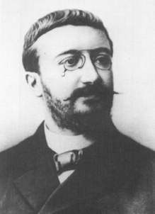
Binet’nin zihinsel yapı sınıflaması (Binet’s classification of mental structure) Binet’nin 1897’de gerçekleştirdiği sınıflamaya göre insanlar zihinsel bakımıdam iki tipte toplanıyorlar. (1) Öznel (subjectif) tip: Binet’ye göre bu tipler, imgelemi işlek (yorumcu); düş kurmaya, seyretmeye eğilimlidirler. (2) Nesnel (objectif) tip: Bunlar ise gözlemci, gerçekçi ve pozitiftirler.
Binet-Simon ölçeği (Binet-Simon scale) 1905 yılında Fransa’da Alfred Binet ile Theodore Simon’un geliştirdiği, yaşlara göre düzenlenmiş ve bugünkü Stanford Binet ölçeği’nin öncüsü olan zekâ testi. Bu test, çocuğun okuldaki edimini, aynı yaştaki öbür çocukların edim düzeyleriyle karşılaştırarak ölçmeyi hedefleyen ve artan zorluk dereceleri bulunan 30 testlik bir bataryadır.
binoküler (binocular) Her iki gözün de kullanımı ile ilgili. Bkz. uyum (II)
bireşim Bkz. sentez.
birey (individual) Öbür canlılara benzer yanları olmakla birlikte, kendine özgü ayırıcı özellikleri de olan tek canlıya verilen ad; fert. Bkz. bireyci eğitim; bireycilik; bireye özgü özelliklere dayanan kişilik kuramları; bireyin bağımsızlığı; bireyin ruhsal doğumu; bireyi tanıma; bireyi tanıma teknik ve araçları; bireyler arası psikiyatri; bireylere kazandırılacak olası hedefler; bireyleşme; bireylik; bireylik psikolojisi; birey odaklı yaklaşım; bireysel ayrılıklar psikolojisi; bireysel bilinçdışı; bireysel eğitim; bireysel pedagoji; bireysel farklılıklar; bireysellik; bireysel öğretim; bireysel psikoloji; bireysel psikolojik danışma; bireysel psikoterapi; bireysel simge; bireysel tepki; bireysel zekâ testi.
bireyci eğitim (individualistic pedagogy) Bireycilik akımı ile sıkı ilişkisi olan bir eğitim görüşü; bireyci pedagoji. Bu görüşe göre birey bağımsız bir varlıktır ve her yönden toplumun odağı sayılmalıdır. Onun hak ve çıkarları, toplumdan ayrı olarak düşünülmeli ve gerçekleştirilmelidir. Bireyin eğitimi için doğa yasalarına kulak verilmesi yeter. Eski çağların sofistlerince savunulan bu görüş, Rönesans’la birlikte yeniden canlanmış ve Aydınlanma döneminde kendine J. Lock, J. J. Rousseau, Ellen Key, Gurlitt gibi güçlü yandaşlar bulmuştur. Bu görüşü, eğitimi bireyselleştirme ile karıştırmamalıdır. Bu görüşün karşıtı, toplumcu eğitimdir (social education’dur). Kişilik eğitimi görüşü, bu karşıt iki görüşün birleştiricisidir. Gerçekte bireyle toplumun sınırlarını kesin çizgilerle belirlemek olanaksızdır. Bkz. bireysel eğitim.
bireycilik (individualism) Toplumun gereksinimlerinden ve toplumsal yükümlülüklerden çok, bireyi ve bireysel olanı üstün sayan; bütün etkinlikleri; dahası gelmiş geçmiş bütün uygarlıkları yalnızca insan öğesine indirgeyen yaklaşım; ferdiyetçilik. Bu anlamda, kendi çıkarlarını savunan bireyin özgürce mücadele edebileceği bir ortamın verimli, üretken, istikrarlı ve kendi kendini ayarlayabilen bir ekonomik sistemin ya da toplumsal düzenin ön koşulu olarak görülmesi anlayışına ekonomik bireycilik; bireyin gerçekçi karar verme yeteneğine sahip; kendi seçimini kendisi yapan bir yurttaş olarak siyasal sürecin odağına yerleştirilmesi anlayışına siyasal bireycilik; insanın, değerin kaynağı ve değer yargı sisteminin yaratıcısı olarak görülüp ahlaksal değerlerin odağına yerleştirilmesi anlayışına da ahlaksal bireycilik deniyor.
bireye özgü özelliklere dayanan kişilik kuramları Bkz. kişilik.
bireyin bağımsızlığı Bkz. bağımsızlık; kişilik bağımsızlığı.
bireyin ruhsal doğumu Bkz. MAHLER, Margaret Schoenberger.
bireyi tanıma (recognizing the individual) Bireyin ailesinin toplumsal-ekonomik durumu, aile ilişkileri; kendi bedensel, devinişsel, bilişsel, duyuşsal, dilsel, toplumsal gelişimi ve sağlığı, benlik oluşumu; okul eğitimi ve başarı durumu; okul etkinlikleri ve iş deneyimi; ilgileri, mesleksel eğilimleri ve geleceğe yönelik planları konularında bilgilenme. Bireyi tanımak için bireyin anlattıklarına dayanan; gözleme ve ölçmeye dayanan birçok teknik ve araç geliştirilmiştir. Bkz. bireyi tanıma teknik ve araçları.
bireyi tanıma teknik ve araçları Bkz. anı defteri; anket; başarı testleri; dereceleme ölçeği; genel yetenek testleri; görüşme; gözlem; ilgi testi; istek listesi; izlenimci, açıklayıcı görüş; “Kimdir bu?” tekniği; kişilik testleri; kitapla tedavi; okuma yeteneği testleri; oyunla tedavi; öğrenci tanıma fişi; özel yetenek testleri; özgeçmiş; psikodrama; psikolojik danışma; rol dağıtım tekniği; sorun tarama tekniği; sosyodrama; sosyometri; tutum testleri; yansıtma testleri; zaman çizelgesi.
bireyler arası psikiyatri (interpersonal psychiatry) H. S. Sullivan’ın gerek tedavi ortamında gerekse tedavi dışında hastanın bireyler arası ilişkilerinin incelenmesine dayanan bir tedavi biçimi; bireyler arası ruh hekimliği. Bu tedavi yaklaşımında terapist, hastanın seçici dikkatsizlik ya da çözülme nedeniyle görmek istemediği hatalı güvenlik işlemlerini ve parataksik çarpıtmalarını saptayıp düzeltmek için kaygı, öfke ya da kuruntularıyla özdeşleşen bir katılımcı gözlemci işlevini üstleniyor.
bireyler arası ruh hekimliği Bkz. bireyler arası psikiyatri.
bireylere kazandırılacak olası hedefler (Bkz. hedef analizi.
bireyleşme (individuation) 1. Bireyin büyüyüp gelişerek belirgin ve bağımsız, bireysel bir kişi durumuna gelmesi. 2. C. G. Jung’a göre, dengeye ve bütünlüğe yönelik kişilik gelişimi (kendini gerçekleştirme). Jung, bu denge ve bütünleşme sürecinde kişiliğin, hem kişisel hem de ortak bilinçdışının giderek daha büyük bölümlerini içine aldığını; içedönüklük ve dışadönüklük arasındakiler gibi çatışmaları, daha bütünleştirici bir düzlemde çözdüğünü belirtiyor. 3. Fromm’a göre, koşulları elverişli bir ortamda gelişen çocuğun; aklın ve istencin yönettiği bir kişi durumuna gelmesi ve anne babasına bağlılığının azalması, özgürleşmesi; bağımsızlaşma. Anne babasına bağlı iken büyük bir güven duygusu içinde olan çocuk, bireyleştiğinde bu güven duygusunu yitiriyor ve kaygı (anxiety) denen acı verici duyguyu yaşamaya başlıyor. Bkz. özgürlükten kaçış yaklaşımı. 4. Mahler’in gelişim kuramına göre, çocuğun, annesine daha az bağımlı olduğu, isteklerini kendi başına gidermeye ve kendini korumaya başladığı 1,5-3 yaşlar arası, bireyleşme dönemidir. 5. Kişinin toplumsal bağlardan, grup bağlılığından uzaklaşıp bireylik yönünde ilerlemesi.
bireylik (individuality) 1. Bir bireyi ötekilerden ayıran özelliklerin tümü. 2. Bir kişiyi başkalarından ayıran, onu o yapan özellikler. Bireylik, kişilikle anlamdaş değildir; her canlı için kullanılıyor. Kişilik, belli olumlu bir ölçüye göre değerlendirilirken, bireylikte böyle bir ölçü yoktur.
bireylik psikolojisi Bkz. Allport’un bireylik psikolojisi.
birey merkezli yaklaşım Bkz. birey odaklı yaklaşım.
birey odaklı yaklaşım (individual based approach) Carl Ramson Rogers’ın geliştirdiği kişilik kuramı; birey merkezli yaklaşım. Rogers, değişik bir ruhsal tedavi yaklaşımı geliştirmiş ve bu yaklaşım çerçevesinde de kişilik kuramını oluşturmuştur. Ruhsal tedavi süreciyle hedeflediği değişimin sorumluluğunu danışmana değil; danışana vermiştir. Çünkü o, insanın kendi düşünce ve davranışlarını olumlu yönde değiştirebileceğine; kendi yaşamına yalnızca kendisinin yön verebileceğine inanıyor. Kendisine ün kazandıran tedavi yaklaşımını bu nedenle danışan odaklı terapi olarak adlandırmıştır. Ancak, onun düşünceleri anne babalık, eğitim, dünya barışı, ırklar arası ilişkiler gibi klinik konusu olmayan alanları da içerdiği için bu ad yerine kişilik kuramının, onları da kapsayan “birey odaklı yaklaşım” olarak adlandırılması yeğlenmiştir. Rogers, çocukluk yaşantılarının yetişkin kişiliğini oluşturmadaki önemli rolünü kabul etmekle birlikte, özellikle şu andaki gereksinimlerimiz ve gerçekleştirmek istediğimiz amaçlara ilişkin çabalarımız üzerinde durmuştur. Bireyin gidermeye ya da azaltmaya çalıştığı gerilim ve gereksinimlerin, geçmiştekiler değil; şu andakiler olduğunu belirtmiştir. Rogers’a göre insanı güdüleyen tek olumlu güç, doğuştan getirdiği ve organizmanın kendi kapasitesi yönünde gelişimini, zenginleşmesini ve üretmesini sağlayan etkin süreç, gerçekleştirme eğilimidir. Kişi, yalnızca belli koşullar sağlandığında, temelde olumlu olarak kendini yönetme, düzenleme ve denetleme gizilgücünü ortaya koyuyor. İnsanın yıkıcı ve acımasız davranmaya yönelik kapasitesi bulunmakla birlikte, bunları içsel güçlerden çok dışsal güçler yönlendiriyor ve tüm ruhsal sorunlar, gerçekleştirme eğiliminin engellenmesinden kaynaklanıyor. Her insan, özellikle anne babaları gibi yaşamalarında önemli bir yeri olan kişilerden olumlu saygı, kabul görme ve onlarla sıcak bir ilişki kurma gereksinimi duyuyor. Olumlu saygı gereksinimi, yaşam boyu sürüyor. Kişi, başkaları ile ilişkilerinden bağımsızlaşarak öğrenilmiş ikincil bir özsaygı gereksinimi de duyabiliyor. Ancak bu özsaygı yolundaki çabalar, kendini gerçekleştirmenin önündeki en büyük engeldir. Rogers’a göre her birimiz, başkalarınca tam olarak anlaşılamayan özel ve her an değişen içsel deneyimlerimizin odağında yaşıyoruz. O nedenle insan, yalnızca kendi sahip olduğu algılama ve duygular noktasından incelendiğinde anlaşılabiliyor. Çünkü o, gerçek dünyayı değil; yalnızca algıladığı dünyayı biliyor. Çevresindeki uyarıcıları nasıl algılıyorsa onlara öyle tepki gösteriyor. Onun gerçeğini bu deneyimleri oluşturuyor. Bu anlamda görüngüsel (fenomenal) alan, kişinin farkında olduğu, kendine özgü çevresi olduğundan, onun davranışları, kendi görüngüsel alanınca belirleniyor. Kalabalık bir caddede ilerleyen bir kişi, karşı karşıya olduğu uyarıcıların tümüne dikkat edemediği için, onların birçoğunu göz ardı ediyor. Çocuk sahibi olmayı istememiş bir anne, çocuklarına karşı öfkenin ya da çarpıttığı kızgınlığının farkında olmadan, onlara karşı aşırı ilgili bir tutum sergileyebiliyor. Anne, yadsısa da, hiçbir zaman bilincinde olmasa da o öfke ve kızgınlık, onun deneyimlerinin bir parçası olmayı ve bilinçli davranışlarını etkilemeyi sürdürüyor. İnsan, kendi hakkındaki düşünceleriyle uyuşmayan deneyimlerini yeniden biçimlendirip var olan benlik kavramının içinde özümsenebilir duruma getiriyor. Örneğin, düşük akademik benlik kavramına sahip olan bir öğrenci, öğretmeninden, ödevine ilişkin olumlu bir geribildirim aldığında, bunu öğretmenin ödevini iyi okumadığı biçiminde yorumluyor. Deneyimlerinin bir bölümünü de kendisine ilişkin düşünceleriyle tutarlı bulduğu ve onları pekiştirdiği için doğru algılıyor. Örneğin, kendini çekici bulan bir öğrenci, bir arkadaşının kendisine bu yönde bir iltifat ettiğinde, arkadaşının söylediklerini net bir biçimde duyuyor, doğru olarak simgeleştirip benlik kavramına yerleştiriyor. Rogers’a göre insan, neyin gerçekleştirme eğilimine yönelik olduğunu, neyin olmadığını öğrenmeye gereksinimi yoktur. Organizmamıza değer verme süreci, deneyimlerimize, gerçekleştirme eğilimimizi doyurma yeteneklerimiz açısından bir değer biçme sürecidir. Deneyimleri değerlendirme süreci, daha çok organizmaya dönük bir süreçtir. Onun için deneyimin bilinçdışı yönleri, bilinçli düşünce ve planlarımıza paha biçilmez bir katkı sağlıyor. İşte bizim için neyin iyi, neyin kötü olduğunu bildiğimiz yer, kişiliğimizin bu en derin noktasıdır. Bu nedenle organizmamızla ilgili değerlerimizi en iyi, anne babamız ya da psikoterapistler değil; kendimiz saptayabiliyor; kendi gizilgüçlerimizi en iyi biçimde gerçekleştirebileceğimizi kendimiz anlayabiliyoruz. Sürekli akış durumunda olan öznel deneyimin uç kısmındaki bir parçayı temsil eden benlik kavramı, tümüyle bilinçlidir. Gerçekleştirme eğilimi ile yönlendirilen bebek, gelişim gösterdikçe deneyim alanını genişletiyor ve kendisini ayrı ve farklı bir varlık olarak algılamaya başlıyor. Deneyimlerinin bir kısmı ben ya da benim biçiminde farklılaşıp kişiselleştikçe bebek, belirsiz bir benlik kavramı geliştiriyor. Gerçekleştirme eğilimi için gerekli olan yemeğe değer verdiğinde, açlığın değerini düşürmüş oluyor. Aynı biçimde uykuya, temiz havaya, bedensel dokunuşa, sağlığa değer veriyor. Bebek, temel bir benlik yapısı oluşturmaya başladığında kendini gerçekleştirme eğilimleri de gelişmeye başlıyor. Bu durumda kimi gerçekleştirme eğilimleri, benlik kavramının istemlerini doyuruyor. Gerçekleştirme eğilimi, bilinçli ve bilinçsiz, fizyolojik ve bilişsel, kişinin bütününü temsil ediyor. Kendini gerçekleştirme ise bireyin bilinçli algılayışla kendini geliştirme eğilimidir. Benlik kavramı, kişinin varlığının ve deneyimlerinin bilinçli olarak algılanan tüm yönlerini içeriyor. Benlik kavramı, organizmaya ilişkin benlikten farklıdır. Kişi, organizmaya ilişkin benliğinin kimi bölümlerine sahip olduğunun farkında olmayabiliyor. Kişinin organizması ve kendini algılayışı arasında bir uyum bulunduğu zaman, gerçekleştirme ve kendini gerçekleştirme eğilimleri nerdeyse özdeş olacağı için bir sorun doğmuyor. Ancak kişinin organizmasıyla ilgili deneyimleri, kendine ilişkin algısıyla uyumlu olmadığında, gerçekleştirme ve kendini gerçekleştirme eğilimleri arasında bir tutarsızlık ortaya çıkıyor. Örneğin, organizmaya ilişkin deneyimi eşine yönelik öfke olan bir kişinin benlik kavramı, eşe öfke duymanın doğru olmadığını belirtiyorsa bu kişinin gerçekleştirme ve kendini gerçekleştirme eğilimleri tutarsızlık gösterecek ve kişi, çatışma ve içsel gerilim yaşayacaktır. Rogers’a göre benliğin, benlik kavramı ve ideal benlik olarak iki alt sistemi bulunuyor. Birey, oluşturduğu benlik kavramına uymayan deneyimlerini ya yadsıyor ya da çarpıtılmış biçimde kabul ediyor. İdeal benlik ise kişinin görmek istediği kendisine ilişkin ve daha çok olumlu olan algısıdır. Kişinin benliği ile ideal benliği arasında çok fazla farkın olması, kişiliğin sağlıksızlığını belirtiyor. Çocuğun yaşamındaki önemli kişilerin, benlik kavramını desteklemesi; onun istek ve beklentilerine kulak vermesi gerekiyor. Anne babadan, çocuklarının benlik kavramına ve duygularına karşı koşulsuz olumlu saygı göstermeleri; eleştirilerini yalnızca istenmeyen belirli davranışlarla sınırlı tutmaları bekleniyor. Örneğin, kardeşine karşı düşmanca bir tutum sergilediğini ve ona vurmak istediğini gördüğü çocuğuna anne, onun çok öfkelendiğini anladığını; ancak kardeşine vurmasına izin vermeyeceğini; çünkü o zaman kardeşinin canının acıyacağını ve üzüleceğini belirtmelidir. Bu durumda öfkelenen çocuk suçlanmadığı için onun olumlu benlik saygısı tehdit edilmemiş oluyor. Böyle bir durumda anne, çocuğuna kötü çocuk olduğunu ve bu nedenle kendisini sevmeyeceğini söylediğinde çocuk, kendi yaşantısından (organizmasına ilişkin değer verme sürecinden) yola çıkarak, küçük kardeşine vurmanın hoş olmayan bir değer olduğunu kabul etmeyebiliyor. Bu durumda çocuk, yaşantısını “Ben bundan hoşlansam da annem hoşlanmıyor.” biçiminde doğru olarak simgeleştirebiliyor. Kişinin kendi organizmasına ilişkin değer verme sürecinden daha çok başkalarının görüşlerine dayanan değerler, değer verme koşulları diye adlandırılıyor. Birçok anne baba, çocukları kendilerinden beklenenleri yaptıkları zaman onları seviyor; yapmadıklarında ise sevgilerini geri çekiyorlar. Oysa çocuğun sağlıklı kişilik gelişimi için koşulsuz olumlu saygıya gereksinimi vardır. Anne baba çocuklarına sevgiyi yalnızca uygun davranışlar karşılığında verdikleri zaman çocuk, benliğini bir bütün olarak geliştiremediği için, kendisini yalnızca belirli koşullar altında değerli duyumsuyor. Sonuçta bir bölümünün reddedileceği korkusuyla benliğinin hiçbir yönünü açığa vuramıyor. Koşullu olumlu saygı sonucunda çocuklar, kendi gerçek duygu ve isteklerinden vazgeçerek, anne babalarının uygun gördüğü biçimde duyumsamayı ve davranmayı öğreniyorlar. Böylece kendi hatalarını ya da zayıf yanlarını yadsıyor ve kendilerine ilişkin farkındalıklarını azaltmış oluyorlar. Bunlar, ileriki yaşlarında da önem verdikleri kişilerin onayını; dolayısıyla sevgi ve desteğini kazandıracak davranışları ve özellikleri, benlik kavramlarıyla bütünleştirmeyi, sürdürüyorlar. Buna birçok toplumsal kurum ve grup da girmeye başlıyor. Bu kişilerin birçoğu, dışsal standartların, kendilerine ait olduklarına inanmaya başlıyorlar. İnsanlar, sahip oldukları ve ortaya çıktığında, önem verdikleri kişilerin onaylamayacakları, dahası reddedecekleri duygu, düşünce ve isteklerini çarpıtarak bilinçlerinden uzaklaştırma yolunu seçiyorlar. Bunun sonucunda kendi gerçek duygu ve özellikleriyle bağlarını koparıyorlar. İşte Rogers, koşulsuz olumlu saygıya, başkalarınca kabul edilmeyeceğini bildiğimiz halde kendi hatalarımızı ya da zayıflıklarımızı kabul edebilmemiz için gereksinim duyduğumuzu belirtiyor. Koşulsuz olumlu saygı gören çocuk, ne yaparsa yapsın, kabul göreceğini ve sevileceğini bildiği için olumsuz ya da eksik yönlerini yadsıma gereğini duymuyor. O nedenle anne babalar, çocuklarının duygu, düşünce ve davranışlarını onaylamasalar da onları her zaman seveceklerini ve kabul edeceklerini çocuklarına duyumsatmalıdırlar. Benlik kavramımızla çelişen organizmamıza ilişkin deneyimlerimiz, bizde kaygı yarattığında ya yadsıma ya da çarpıtma yolunu seçiyoruz. Örneğin, küçük kız, bir kez daha öfkelenip kardeşine vurmak istediğinde, bir sorun yaşıyor. Gerçek (organizmasına ilişkin) deneyimi, kardeşine vurmanın keyif verici olduğu biçimindeyken, benlik kavramını ve olumlu saygısını koruyabilmek için, ona vurmanın hoş olmadığına inanması gerekiyor. Bu tehdit edici tutarsızlığa karşı kendisini savunmak için kardeşine karşı sevgiden başka bir şey duyumsamadığını düşünmeye ve onu incitmemeyi düşlemeye başlayabiliyor. Kendimizin sevimli bir insan olduğumuza inanırken bu algımızla çelişen bir deneyim yaşayabiliyoruz. Örneğin, bir gün bir tanıdığın, bizim sevimsiz biri olduğumuzu söylediğini duyuyoruz. Eğer bu deneyim bize çok tehdit edici gelmiyorsa bilinç düzeyinde kalıyor. Benlik kavramımızı önemli ölçüde tehdit ediyorsa yoğun bir kaygı yaşıyoruz ve onunla baş etmemiz güçleşiyor. O zaman bu deneyimi bilinçaltında tutmaya çalışıyoruz. Bu süreci Rogers bilinçaltı algı olarak adlandırmıştır. Bu durumda, yaşadığımız kaygıyla baş etmek için savunma mekanizmalarına; en çok da çarpıtma mekanizmasına başvuruyoruz. Örneğin, bizi sevimsiz bulan kişinin bunu bir anlık öfkeyle söylediğini düşünerek, benlik kavramımızla uyumlu duruma getirip kaygıya yol açmasını önlemeye çalışıyoruz. Kullandığımız ikinci bir mekanizma da yadsımadır. Bunu kullandığımızda ise söz konusu kaygıyla baş edebilmek için, arkadaşımızın bunları söylerken şaka yaptığını ya da başka birini kastettiğini düşünerek kaygı yaratan deneyimi yadsıyoruz. Kişide kaygıya yol açan deneyimlerin her zaman olumsuz olması gerekmiyor. Önemli olan, bu deneyimin kişinin benlik kavramıyla çelişmesidir. Örneğin, kötü bir öğrenci olduğunu düşünen bir genç, aldığı iyi notu şansa ya da hocasının dikkatsizliğine bağlıyor. Benlik kavramımıza uymayan duygu, düşünce, istek ya da davranış gibi kişisel deneyimlerimiz de kaygı yaşamamıza yol açıyor. Bir arkadaşımızı kandırabiliyor, birinin kalbini kırıyor, çıkarımız için yalan söyleyebiliyoruz. Bu durumlarda da o iki mekanizmadan biriyle kaygımızı azaltmaya çalışıyoruz. Ne ki bu mekanizmalar kaygımızı azaltıyor; ama bizim dolu dolu yaşamamızı da engelliyor. Benlik kavramı ile gerçeklik arasındaki fark çoğalınca savunma süreçleri yetersiz kalıyor ve biz, düzensizlik durumunu yaşıyoruz; davranışlarımız tuhaflaşıyor. Rogers’a göre sağlıklı bir kişilik gelişimini sağlayan, koşulsuz olumlu saygının doğumdan başlatılması; çocuğa deneyimlerini kendince değerlendirme fırsatı verilmesi; çocuğun, kendi organizmasına ilişkin değer verme sürecine göre seçimlerini yapabilmesi gerekiyor. Ancak, anne babanın da saygı hakkı vardır ve çocuklar da bu hakkı ihlal etmemelidirler. Tüm kararları anne babanın verdiği, sayısız kural koyduğu otoriter ailelerde çocuk, güç elde etmek için somurtmak, yalvarmak, anne babayı karşı karşıya getirmek gibi sinsi stratejilere başvuruyor. Oysa birey odaklı ailede, yargılayıcı olmayan duygular paylaşılıyor. Örneğin, anne, “Ev dağınık olduğunda kendimi kötü hissediyorum ve bunu çözmek için senden (sizden) yardım istiyorum.” diyerek hem kendi gereksinimlerini anlatmış hem de bunu çocuklarını yargılamadan, suçlamadan yapmış oluyor. Bu anlatımla anne, dağınıklığı çocukların kabahati olarak göstermiyor; kendi sorunu olduğunu dile getiriyor. Bu durumda çocuklar, evin temizlik ve düzeni için işbirliğine hazır oluyorlar. Birey odaklı aileyi yaratmak zordur; ama doğrusu çaba göstermeye değer. Çünkü böyle bir aile, çocuklarının en az hastalıklı değer koşullarıyla gelişmelerine ve kendi yollarında kendilerini gerçekleştirmeye doğru özgürce ilerlemelerine fırsat veriyor. Sağlıklı kişilik gelişimi için bireyin başkalarıyla olumlu ya da olumsuz ilişkide bulunması, en temel gerekliliktir. Çocuk, anne babasının, bakıcısının kendisi için ilgi ve kabul (saygı) gösterdiğini duyumsadıkça olumlu saygıya değer vermeye; başkalarınca sevilme, kabul edilme ve beğenilme yönünde bir gereksinim geliştirmeye başlıyor. Rogers’ın olumlu saygı dediği, bu gereksinimdir. Çocuk, özellikle yaşamında önemli bir yere sahip olan kişilerin kendisine değer verdiğini algıladığında, olumlu saygı gereksinimini bir ölçüde doyurmuş oluyor. Olumlu saygı, kişinin kendisini değerli bir varlık olarak görmesi demek olan özsaygının ön koşuludur. Özsaygı, oluştuktan sonra sevilme gereksiniminden bağımsızlaşmaya başlıyor ve kişi, kendi yaşamında kendisi için önemli bir varlık haline geliyor. Hemen herkes, anne babasından, kendisini yetiştirenlerden sevgi ve sevecenlik görüyor; ancak birçok anne baba, sevgi ve sevecenliğini, isteklerini yerine getirmek koşuluyla gösteriyor. O zaman çocuk, yalnızca kendisinden beklenenleri yaptığı sürece sevilmeye değer olduğunu düşünmeye başlıyor. Sonuçta çocuğun benliği bir bütün olarak gelişmiyor. Reddedileceği korkusuyla çocuk, benliğinin tüm yönlerini açığa vuramıyor ve aksak bir kişilik ortaya çıkıyor. Koşulsuz sevgi ve ilgi gören çocuk, değer koşulları geliştirmiyor; benliğinin hiçbir parçasını baskı altına almıyor ve kendini gerçekleştirmeyi başararak ruhsal sağlığın en üst düzeyine çıkıyor. Rogers, ruh sağlıklı insanı “gizilgücünü tam kullanan kişi” olarak tanımlamış ve kendini tam olarak ortaya koyan kişinin özelliklerini de şöyle belirtmiştir: Gizilgücünü tam olarak kullanan kişinin belirleyici özelliği, değer koşullarına sahip olmamasıdır. Bu kişiyi, büyük ölçüde kendi organizmasına ilişkin değer verme süreci yönlendiriyor ve bu kişi kendini bütünüyle kabul ediyor (koşulsuz olumlu özsaygı geliştirmiş bulunuyor). Çünkü onun öbür insanların içselleştirilmiş standartlarını karşılamaya gereksinimi yoktur. O, tutarsızlık yaşamadığı için savunma gereksinimi duymuyor. Kalıp davranışlar sergileme yerine yaşamın her anını değerlendirmeye çalışıyor. Başkalarının –meli –malıları yerine kendi organizmasının değer verme süreçlerine kulak veriyor. İşe yaramayan seçimlerini gözden geçirip onları değiştirme isteği gösteriyor. Çünkü hatalarını açık ve doğru olarak algılıyor. Gerçekleştirme ve kendini gerçekleştirme eğilimleri, gizilgüçlerinin ortaya çıkarılması için uyum içinde işliyor. İkinci bir özelliği, kendisi ve içinden geldiği gibi davranma eğilimidir. Ressam El Greco, yazar Ernest Hemingway ve ünlü fizikçi Albert Einstein bunun örnekleridir. Bu kişiler, kendi, içsel deneyimlerine güvenmiş ve tam olarak kendileri olmak için zor olan yolu seçmişlerdir. İyi ressam gibi, iyi yazar gibi, iyi fizikçi gibi değil; kendileri gibi davranmışlardır. Her insan, kendi içsel değerlerine göre yaşama ve kendini benzersiz ve doyurucu yollarla anlatma gizilgücüne sahiptir. Gizilgüçlerini tam olarak kullanan bireyler, uyumlu olmakla birlikte toplumca belirlenmiş rollere uymak konusunda öbür insanlardan daha az isteklilik gösteriyorlar. Çevresindekiler onaylamayacak diye istediklerini yapmaktan vazgeçmiyorlar. Meslek seçimini, yaşam biçimlerini kendi istek, ilgi, gereksinim ve değerlerine göre yapıyorlar. Gizilgücünü tam kullanan kişi, kendini beğenilmeye, hoşlanılmaya değer buluyor. Olumlu saygı gereksinimini insanlarla başarılı ilişkiler kurarak karşılıyor. Böylece başkalarına da koşulsuz olumlu saygı gösteriyor. Bu kişi her dakika özgürce, yaratıcı bir biçimde ve tam olarak yaşıyor. Olumlu duyguları gibi olumsuz duygularını da yoğun yaşayarak daha zengin ve daha doyurucu deneyimler kazanıyor. Mutluluğu, zamanla değişen bir yolculuk gibi görüyor. İyi bir yaşam, bir süreç, bir yöndür; bir durum, bir hedef değil. Buna göre gizilgücünü tam kullanan birey, kendini gerçekleştirmekte olan kişidir. Benliğinin gelişimi de bir ilerleme ve süreklilik gösterir. Rogers’ın kuramı da Adler’inki gibi basit düşünceleri, özgür istenç vurgusu ve aşırı iyimser yaklaşımı nedeniyle eleştirilmiştir. Bununla birlikte bu kuram, çağdaş psikolojiye önemli katkı sağlamıştır. Sağlıklı gizilgüçlere vurgusu ile psikanaliz ve davranışçılık karşısında üçüncü güç olarak nitelendirilmiştir. Rogers kuramının öbür güçlü yanları da iç tutarlılığı ile, işe vuruk olarak tanımlanan kavramlarıyla oldukça yalın ve açık bir anlatıma sahip olmasıdır. Bir başka olumlu yanı ise çocuğun sağlıklı bir kişilik geliştirmesi için anne babanın neler yapmaları gerektiği konusunda, psikanalize ve davranışçılığa seçenek oluşturacak öneriler sunmasıdır. Ancak, Rogers’ın görüşünün sınırlı durumlar için geçerli olduğu; önemli ruhsal sorunlara yararı olmayacağı yönünde bir eleştiri de vardır. Bu yaklaşım, insan doğasına seçenek bir bakış açısı getirmiş olsa da yaygın olan davranışçı ve psikanalitik yaklaşımların yerine geçmeyi başaramamıştır. Bkz. benlik kuramı; büyüme ilkesi; danışan odaklı terapi; ROGERS, Carl Ramson.
bireysel ayrılıklar Bkz. bireysel farklılıklar.
bireysel ayrılıklar psikolojisi Bkz. farklar psikolojisi.
bireysel bilinçdışı Bkz. analitik psikoloji.
bireysel eğitim (individual education) Bireyin kendine özgü anlama, kavrama, öğrenme gücü göz önünde tutularak uygulanan ve bu yolla bireylerin tümünün başarılı olmasını sağlayan eğitim anlayışı; bireysel pedagoji. Bkz. çağdaş eğitim; geliştirici eğitim; eleyici eğitim; geleneksel eğitim; kitlesel eğitim.
bireysel farklılıklar (individual diffrences) Bireyler arasında görülen birbirine benzemeyen özellikler; ferdi farklar. Öğrenme ve öğretme etkinliklerinde bireysel farklılıklar, sürekli olarak göz önünde tutulması gerekiyor. Bkz. eğitim.
bireysellik (individuality) Bir bireyi ötekilerden ayıran özelliklerin tümü; bireylik, kişilik.
bireysel öğretim Bkz. eğitim.
bireysel pedagoji Bkz. bireysel eğitim.
bireysel psikoloji (individual psychology) A. Adler’in, bireyin kendi hedeflerini belirleme, kendi yaşam biçimini yaratma yönünde bilinçli bir çaba yürüttüğü görüşüne dayanan psikoloji kuramı; individual psikoloji; bireysel ruhbilim. S. Freud’un insanın, bilinçdışında etkinlik gösteren bilinçdışı dürtülerin (içgüdülerin) egemenliğinde olduğu görüşüne karşılık Adler, insanın bilinçli yönelim ve çabasını öne çıkarmıştır; birey odaklı olmaktan çok, toplum odaklı bir yaklaşımı benimsemiştir. Adler’e göre insan, doğuştan gelen ve kendini başkalarıyla birlikte olmaya, işbirliği yapmaya, herkesin yararına çalışmaya yönelten temel bir dürtüye sahiptir. Adler, Freud’dan ayrıldıktan sonra, insan kişiliğini Freud ve Jung gibi geçmişin değil, geleceğe yönelik amaçların biçimlendirdiğini savunmaya yöneldi. Ona göre, her insanın kendi seçtiği ve erişmek için çabaladığı hedefleri, onun bugünkü davranışlarını etkiliyor ve kendine özgü ruhsal süreçleri oluşturuyor. Kişinin, uğruna savaş verdiği amacın gerçek olması gerekmiyor. Amaçlar öznel; dahası düşsel bile olabiliyor. Ancak, insan, nevrozlu değil de sağlıklı ise gerektiğinde, ardına düştüğü amaçların etkisinden kurtulabiliyor. Bu ayrı yanlarına karşın, bir tıp doktoru ve psikiyatrist olan Adler de kuramını oluştururken Freud’un etkisiyle, nevrozun açıklanmasından yola çıkmıştır. Adler, ta 1908’de daha Freud’un ateşli bir öğrencisi iken, insanın yönlendirilmesinde saldırganlık güdüsünün cinsellik kadar önemli olduğunu ileri sürmüş; 1910’da da saldırganlık güdüsünün yerine güçlü olma isteği kavramını kullanmıştı. Adler, görüşlerinin bu aşamasında erkekliği güçlülük; kadınlığı da güçsüzlük ile eş tutmuş ve “erkeklik iddiasının, kendini küçük, zayıf, yetersiz duyumsayan erkek ya da kadının başvurduğu bir çare, bir ödünleme yolu olduğunu ileri sürmüştü. Daha sonra ise insanı güdüleyen temel amacın, güçlü olma isteği değil; üstün olma çabası olduğunu savundu. Adler’in 1907’de yayımlanan Organ Yetersizlikleri Üzerine Bir İnceleme adlı kitabında öne çıkardığı görüşe göre insanlar, bedensel yetersizlikleri yüzünden ortaya çıkan eksiklik duygularını, ruhsal olarak giderme yolunu seçiyorlar. Bu yoldaki başarısızlık ise, nevrozla sonuçlanıyor ve bir dizi işlevsel bozukluk ortaya çıkıyor. Adler, pratisyen hekimliği sırasında hastaları üzerinde yaptığı gözlemlere dayanarak insanların, kalıtım ya da gelişim bozukluklarının yarattığı organ yetersizliğini gidermek için giriştikleri büyük çabalardan bu sonuca varmıştı. Buna en belirgin örnek olarak da çocukken kekeleyen Demosthenes’in sürekli ve yoğun bir çabayla ünlü bir konuşmacı olduğunu göstermişti. Adler daha sonra, organ yetersizliği kavramına ruhsal, toplumsal her türlü yetersizlik duygusunu da kattı. Kadınların kendilerini erkeklere göre eksik gördükleri varsayımından yola çıkarak, görüşlerinin bu aşamasında güçsüzlüğü, kadınlıkla özdeşleştirdi. Daha sonra ise, yetersizlik duygusu kavramını daha da geliştirerek bu duyguyla üstün olma isteği arasındaki bağlantıyı bir kuramsal çerçeve içinde ortaya koydu. Adler’e göre insan, zayıf, eksik, bakıma gereksinim duyan yetersiz bir canlı olarak doğuyor. Bedensel, zihinsel, duygusal ve toplumsal gelişim, bireyin bu yetersizliklerini giderme, üstün olma çabalarının bütünü demektir. Karşılaştığı sorunları çözme, engelleri aşma, güven içinde yaşama çabaları, bireyin doğuştan getirdiği temel isteğin; üstün olma isteğinin belirtileridir. Her insanın doğuştan ölüme kadar duyumsadığı yetersizlikleri giderme savaşımı; eksiklik, aksaklık ve yetersizliklerinden sıyrılıp üstünlük elde etmeyi amaçlaması, üstün olma, kendini tamamlama ve yetkin olma isteğinden başka bir şey değildir. Yetersizlik Duygusu ve Üstün Olma Çabaları: Bu çabalar, Adler’e göre, yaşamın gereği ve her insanda var olan doğal eğilimlerdir. Yaşamın amacı, Freud’un savunduğu gibi haz elde etme değil, yetkinliğe erişmektir. Bu yaklaşım, Adler’in bireysel psikolojisinin, insana daha saygılı olduğunun savunulmasına yol açmıştır. Adler’e dünya çapında ün kazandıran, 1912 yılında yayımlanan Nevrozlu Kişilik Üzerine adlı kitabında ortaya attığı “yetersizlik duygusu” ve “üstün olma isteği” kavramlarıdır. Ancak, onun bireysel psikoloji diye adlandırılmış olan kişilik kuramı asıl, son yıllarındaki yayınlarında ayrıntılarıyla ele aldığı yaşam biçimi ve yaratıcı benlik kavramları ile bir bütünselliğe kavuştu. Yaşam biçimi, her insanda doğuşta var olan yetersizlik duygusu ve üstün olma isteğini kendine özgü yollarla giderme çabası sonucunda beliriyor. Örneğin, bir fabrikatör için üstün olma isteği, çok para kazanıp zengin olma yoluyla yetersizliklerini gidermekle özdeşleşiyor. Buna bağlı olarak o, tüm yaşamını para kazanma çarelerini hesaplayarak biçimlendiriyor. Onun için örneğin, amacı çiçek yetiştirmek olan bir bahçıvanla bir fabrikatörün yaşamları birbirinden farklıdır. İkisi de bilerek ya da bilmeden attıkları her adımla, kendi amaçlarını yansıtıyorlar. Bunların kurdukları ilişkiler, dostlukları, eğlence biçimleri; kısacası her türlü tutum ve davranışları, kendilerine özgüdür. Yaşamda herkes, kendi amacı ile ilgili şeyleri görüyor ve onlara yöneliyor. Adler’e göre yaşam biçimi, dört beş yaşına dek belirleniyor; ondan sonra yaşanılan her şey, o kalıplara göre benimseniyor. İleri yaşlarda yaşananlar, çocuklukta edinilmiş olan temel yönelişin görüntüleridir. Adler’in bu görüşü üzerinde Freud’un etkisi açıktır. Adler’e göre yaratıcı benlik (creative ego) ise şu anlamı içeriyor: İnsan, kendi kişiliğini, kalıtım özellikleriyle yaşamını yoğurarak kendisi oluşturuyor. Her insan, doğuştan getirdiği kendine özgü belirli beceri, yetenek ya da yeteneksizlikler ile çevrenin ona sunduğu çeşitli uyarıları kendince yorumluyor ve benimsiyor. İnsanın gözle görülmeyen ve elle tutulmayan yaratıcı benliği, öznel ve dinamiktir. Bu benlik, insana kendine özgü bir kişilik ve yaşam biçimi edinme, kendi yaşamına bir anlam verme olanağını sağlıyor. (Adler’in yaratıcı benlik kavramı, Freud’un benlik kavramına benziyor.). Freud’un cinsel içgüdüleri öne çıkardığı için uğradığı sert eleştirilere Adler de insanı güden temel gücün üstünlük isteği olduğunu; bireyin zayıflıklarını gidermek amacıyla erkeklik savıyla ortaya çıktığını öne sürmesi nedeniyle uğradı. Adler’in de Freud gibi insanı içgüdüleriyle davranan bencil bir yaratık olarak gördüğü; insanın toplumsal yanını küçümsediği ileri sürüldü. Adler daha sonra l930’larda ortaya attığı toplumsal ilgi kavramı ile bir tür, bu eleştirilere karşılık vermiş oldu. Adler’e göre insan, bir toplum içinde doğuyor. Aile, onun ilk toplumudur. Bebeğin, gelecekteki toplumsal ilişkilerinin öncüsü, annesiyle kurduğu iletişim ve etkileşimdir. İnsanın, annesi ve daha başkalarıyla kurduğu ilişkiler, onun yetersizliklerini gidererek, üstün olma isteklerini yönlendirmesini, yaşamını biçimlendirmesini, yaratıcı benliğini geliştirmesini ve kişiliğini yapılandırmasını sağlıyor. İnsan bu yolla, üstün olma çabalarını, kişisel ve bencil edinimlerden sıyırıyor ve toplumsal amaçlara yöneliyor. Birey, başkalarının iyiliği için uğraşarak, kendi kişisel yetersizliklerinin yerine, yetkinliği koyuyor. Adler’e göre toplumsal ilgi, doğuşta her insanda var olduğundan, insan toplumsal bir varlıktır. İnsanın her özelliği gibi toplumsal ilgisinin de zamanla geliştirilmesi gerekiyor. O nedenle çevre, çocuğun toplumsal ilgisini eğitmek, yönlendirmek ve geliştirmek görevindedir. Yanlış eğitim ise, toplumsal ilginin sağlıklı gelişmesini engelliyor ve çeşitli uyumsuz davranışların, nevrotik tepkilerin oluşmasına ortam hazırlıyor. Adler, bu nedenle çocukların eğitimiyle ilgilenmiş, rehberlik ve psikolokik danışmanlık alanlarının gelişmesinde öncülük etmiştir. Bu çabasının sonucu olarak da adını, psikiyatri ve klinik psikolojiden çok, danışma psikolojisinde duyurmuştur. Adler, nevrozu da Freud’un açıkladığı gibi, insanın kendi içindeki çatışma ve çelişkilerden ileri gelen bir bozukluk olarak algıladı; çatışmanın bireyle onun çevresi arasında oluştuğunu açıkladı. Ona göre çevre, kişinin yaratıcı gücüne karşı çıktığı ve seçtiği yolları engellediği zaman çatışma başlıyor ve bunun sonucu olarak da nevrozlu davranış oluşuyor. Onun için, hem bireyin kendi kişiliğini kazanarak kendi yolunu çizmesini sağlamak hem de çevresinin engelleyici tutumunu değiştirmek amaçlanmalıdır. Bu yaklaşım, danışma psikolojisiyle de bağdaşan bir yaklaşımdır. Adler, aile yapısını ve aile içinde kardeşlerin yaş ve sırasını da gözlemlemiş ve incelemiştir. Büyük, ortanca ve küçük kardeşin, tek çocuğun farklı kişilikler göstermesinin nedenlerini açıklamıştır. Adler’in çocukların yaşlarıyla sorunları arasında kurduğu bağı, bu konuda yapılan araştırmalar da doğrulamıştır. Adler de Freud’un etkisiyle, insan yaşamının ilk yıllarını ayrıntılı olarak incelemiş ve erken çocukluk döneminde oluşan yaşam biçimini, doğuştan gelen yetersizliklerle aile eğitiminde şımartma ya da ilgi göstermeme biçiminde ortaya çıkan yanlışların belirlediği sonucuna varmıştır. Psikoterapistin, hastayla eşit düzeydeki görüşmelerle yanlış yaşam biçimine yol açan toplumsal ilgi eksikliğini gidermesi ve insan ilişkilerini geliştirip güçlendirmesi gerektiğini ileri sürmüştür. Davranışı her insanda doğuştan var olan içgüdülerin belirlediğini savunmuş olan Freud’a karşı Adler’in getirdiği en önemli yenilik, insanın toplumsal bir varlık olduğu görüşüdür. Ona göre insanı içgüdüler yönetmiyor; sorunlara yalnızca doyumsuzluklar yol açmıyor; sorunların önemli bir bölümünü, yaşamın her yönünde belirebilen yetersizlik duyguları oluşturuyor. Adler, insanın bilinçli bir varlık olarak, yetersizliklerini ve amaçlarını değerlendirebileceğini, kendi yaşamına yön verebileceğini öne sürmekle, Freud’un karamsar yaklaşımının karşısına daha umutlu bir yaklaşım koymuştur. Kişiliğin gelişip bütünleşmesinde toplumun önemini vurgulamakla da hem psikanalitik yaklaşıma yeni bir nitelik kazandırmış hem de o günlerde doğmakta olan sosyal psikolojiye katkı sağlamıştır. Adler’in yaklaşımı, Freud’un psikanalitik kuramının basitleştirilmiş bir biçimi olması nedeniyle klinik psikoloji ve psikiyatride fazla ilgi görmemiş; çoğunlukla danışman ve rehber psikologlarca benimsenmiştir. Bununla birlikte Adler’in görüşleri, ölümünden sonra da değerini korumuş; Amerika Psikoloji Derneği, bireysel psikolojinin temel kavramlarını yayınlarıyla yaygınlaştırmayı sürdürmüştür. Bkz. abartılmış (aşırı) üstünlük çabası; ADLER, Alfred; Adler kuramı; aşırı dengeleme; benlik psikolojisi; bireysel psikolojik danışma; bireysel tepki; büyük, ortanca, küçük ve tek çocukta kişilik gelişimi; çekirdek karmaşası; dengeleme; eksiklik duygusu; eksiklik karmaşası; erkeksi protesto; güç istemi; hümanist psikoloji; inandırma tedavisi; kılavuz kurgular; kişiliğin tekliği; kurgusal amaçlılık; morfolojik aşağılık; nevrotik kişilik; nevrotik kurgu; organ aşağılığı; ödünleme; toplumsal belirleyiciler; üstünlük arayışı; üstünlük çabaları; üstünlük karmaşası; yaratıcı benlik; yaşam hedefi; yaşam planı; yaşam yalanı; yeniden kurgulayıcı psikoterapi.
bireysel psikolojik danışma Bkz. psikolojik danışma.
bireysel psikolojiye göre ruh sağlığı Bkz. ruh sağlığı
bireysel psikoterapi (individual psychotherapy) Terapistin tek bir hastayla yüz yüze etkileşerek tedavi uyguladığı psikoterapi türlerinin ortak adı; individüal psikoterapi; bireysel ruh sağaltımı. Bkz. grup tedavisi.
bireysel ruhbilim Bkz. bireysel psikoloji.
bireysel ruh sağaltımı Bkz. bireysel psikoterapi.
bireysel simge (individual symbol) Psikanalize göre derin, evrensel bir simge özelliği taşımayan, kişinin kendi yaşantılarından türetilen ya da anlamı evrensel olmaktan çok bireye özgü olan simge. Bu bağlamda evrensel simgeler de bireysel anlam kazanabiliyor.
bireysel tepki (individual response) Çağrışım testlerinde, genel tepkilere uymayan bir sözcükle gösterilen tepki. Kent-Rosanoff listesi kullanıldığında bireysel tepki, çağrışım sıklık çizelgesinde gösterilmeyen bir sözcüğün kullanımıdır.
bireysel zekâ testi (individual intelligence test) Bireyin yetenek düzeyini belirlemek için kendisine yalnız olarak uygulanan test. Bkz. psikolojik testler; zekâ testi.
biriktirici kişilik Bkz. kişilik; ruhsal-cinsel gelişim kuramı (Dışkıl Dönem).
birinci dereceden belirtiler (first rank symptoms) Schneider’in, şizofreniye özgü birinci dereceden özellikler olarak tanımladığı düşünce yankısı, düşünce sokma, düşünce çalma, düşünce yayma gibi tipik işitsel halüsinasyonlar.
birincil (primary) Sırada, önemde ilk yeri alan; ilk, ana.
birincil bastırma (primary repression) Psikanalize göre, çocukluk istek ve dürtüleri gibi, hiçbir zaman bilinçli olmayan bilinçdışı malzemelerini bilinçten uzak tutan zihinsel süreç ya da ilk bastırma evresi. Bkz. bastırma.
birincil beceriler (primary abilities) L. Thurstone’un etkensel zekâ modeline göre, zekânın temel bileşenleri olarak belirlenen sözel anlam, sözel akılcılık, sayısal yetenek, yer ilişkileri, bellek, algısal hız ve akıl yürütme diye adlandırılan yedi farklı yeti. Bkz. beceri.
birincil bedensel-duyusal beyin kabuğu (primary somato sensory cortex) Beyin kabuğunun, duyu bilgilerini dokunma, baskı, titreşim, ağrı, sıcaklık gibi doğrudan doğruya bedensel-duyusal sistemden alan ve yan lopların ön tarafında bulunan bölümü.
birincil bellek Bkz. bellek; kısa süreli bellek.
birincil beyin kabuğu (primary cortex) Beyin kabuğunun, bilgileri işitme, görme gibi belli bir duyu organından ilk alan bölümü.
birincil birleştirim Bkz. birincil bütünleşme.
birincil bölge (primary zone) Psikanalize göre, belirli gelişim dönemlerinde libido için en çok doyum sağlayan ve bu nedenle öteki bölgelerin duyarlığını da içeren beden bölgesi. Bkz. cinsel içgüdü; ruhsal-cinsel gelişim kuramı; erojen bölgeler.
birincil bütünleşme (primary integration) Psikanalize göre, çocuğun kendi bedeninin, çevreden ayrı ve kendine özgü niteliklerinin bir bütünlük olduğu bilincine varması.
birincil cinsel özellikler (primary sex characteristies) Erkek ve kadında farklı olan organlar ile üreme yapıları. Kadında göğüsler, dölyatağı, yumurta, dölyolu; erkekte penis, erbezi, sperm bunlar arasında yer alıyor.
birincil dikkat (primary attention) Öğrenme söz konusu olmadan ve özel bir çaba gerektirmeden kendiliğinden beliren dikkat. Bkz. dikkat.
birincil dikleşme bozukluğu (primary erectile dysfunction) Erkeğin cinsel ilişki kurmasını sağlamaya yetecek oranda penis dikleşmesini hiç yaşamadığı bir güçsüzlük; birincil iktidarsızlık. Bkz. dikleşme bozukluğu.
birincil döngüsel tepki (primary circular reaction) Piaget’ye göre, bebeğin en ilkel, refleks içermeyen yinelemeli davranışları. Örneğin, yaşamın ilk aylarında bebek, elini bir daha, bir daha ağzına götürmeye çalışıyor. Bu tepkiler, etkili bir amaca yönelik davranışa yol açmasa da hedef olan açlığın yatıştırılması ile elini emmeye çalışma eylemi arasında ilkel bir bağlantı olduğunu gösteriyor. Bkz. döngüsel tepki; duyusal-devimsel evre; ikincil döngüsel tepki, üçüncül döngüsel tepki.
birincil duygular (primary emotions) Evrensel ve biyolojik temeli olduğu düşünülen korku, öfke, üzüntü, sevinç, şaşkınlık ve tiksinti gibi duygular. Bkz. beyin kabuğu; duygu.
birincil duyusal beyin kabuğu (primary sensory cortex) Beyin kabuğunun, doğrudan doğruya talamustan ya da öbür bölgelerden duyu bilgilerini alan bölgeleri. Beyin kabuğu, duyu modalitesine bağlı olarak görsel, işitsel ve benzeri nitemi alıyor. Bkz. beyin; beyin kabuğu.
birincil dürtü (primary drive) Öğrenilmemiş (doğuştan gelen) ve genellikle fizyolojik temelli, türe özgü dürtüler. Bkz. birincil güdüler; dürtü; ikincil dürtüler.
birincil düşünce bozukluğu (primary thought disorder) En çok şizofrenide gözlemlenen ve tutarsız, ilgisiz zihinsel işlevlerle bilinene uymayan bir söz dizimi; yeni sözcükler uydurma ve laf salatasını içeren özgün bir dil yapısıyla beliren bir düşünce bozukluğu. Bkz. düşünce.
birincil erojen bölgeler Bkz. erojen bölgeler.
birincil eşduyum (primary empaty) Rogers’ın birey odaklı danışmasında danışman’ın, danışanın düşüncelerini, duygularını ve yaşantılarını yine danışanın bakış açısından yeniden ortaya koyması. Bkz. eşduyum.
birincil gereksinimler (primary needs) Karşılanmamaları yaşamayı tehdit eden hava, su, yeme içme, uyku, etkinlik, dinlenme ve cinsellik gibi kalıtım kökenli (öğrenilmemiş) bedensel gereksinimler; temel gereksinimler. Birincil gereksinimler evrenseldir. Bkz. gereksinimler.
birincil güdülenme (primary motivation) Öğrenilmeyen, doğal olan güdülenme.
birincil güdüler (primary motives) Açlık, susuzluk gibi temel biyolojik gereksinimlerden kaynaklanan ve türe özgü olduğu varsayılan öğrenilmemiş güdüler. Bkz. birincil dürtüler; güdü; heyecan; ikincil güdüler.
birincil heyecan ((primary emotion) Yeni doğan çocukların belirli uyaranlar karşısında gösterdiği korku, öfke ve sevinç tepkileri. Bkz. birincil duygular; heyecan.
birincil ilişkiler Bkz. evlilik (Çağdaş Evlilik).
birincil kaygı Bkz. kaygı.
birincil kendini benzetme (primary identification) Freud’a göre, çocuğun anne babasına benzemek için gösterdiği ve üstbenliğin özünü oluşturan çaba. Bkz. kendini benzetme.
birincil mazohizm Bkz. birincil özezerlik; özezerlik.
birincil narsizm Bkz. birincil özseverlik; özseverlik.
birincil nesne (primary object) Psikanalize göre, bebeğin ilişki kurduğu ilk nesne. Bu nesne genellikle anne ya da annenin memesidir. Bkz. nesne; nesne ilişkileri; nesne sevgisi.
birincil orgazm bozukluğu (primary orgasmic dysfunetion) Kadının, cinsel uyarım koşullarında olağan cinsel orgazmı hiç yaşamaması olarak beliren cinsel yetersizlik. Bkz. orgazm.
birincil öğrenme Bkz. duyuşsal öğrenme; öğrenme.
birincil özdeşim (primary identification) Çocuğun annesinin sütüyle beslendiği ve anne memesini kendisinden bir parça gibi gördüğü; başkalarının kendisinden ayrı bütünler olduğunu henüz ayrımsayamadığı ağızcıl dönemde annesiyle gerçekleştirdiği özdeşim. Bu özdeşim, çocuğun dış gerçekliği ayırt etmeye zorlandığı memeden kesme süreciyle ortadan kalkmaya başlıyor. Bkz. ikincil özdeşim; özdeşim.
birincil özezerlik (primary masochism) Psikanalize göre, libidonun dış nesnelere yönelmesinden önceki ilk özseverlik döneminde ortaya çıktığı belirtilen ölüm içgüdüsünün ilk ve açık bir biçimde dışasvurumu; birincil mazohizm. Ölüm içgüdüsü daha sonra, cinsel doyum için bir koşul olarak acı çekmekten haz alma biçimine dönüşecektir. Bkz. özezerlik.
birincil özseverlik (primary narcissism) Psikanalize göre, çocuğun libidosunun dış nesneler yerine kendi bedenine yöneldiği ve doyumu kendi bedeninde aradığı ilk özseverlik biçimi; birincil narsizm. Bu dönemde çocuğun, her şeye gücünün yeteceği duygusu ile kusursuzluk duygusuna dayanan bir benlik ülküsü oluşturduğu görülüyor. Bu ülkünün de bir ölçüde, en küçük bir işeretiyle bütün gereksinimlerinin karşılanmasından; bir ölçüde, gelişen becerilerinden; bir ölçüde de çaresizlik, kaygı duygularına yönelik tepki oluşumundan beslendiği düşünülüyor. Çocuklukta normal olan bu özseverlik biçiminin yetişkinlikte de sürmesi durumunda bu, normal, yatişkine özgü sevgiyi engelliyor ve sağlıklı, mutlu birlikteliklerin sürmesini zorlaştırıyor. Örneğin kimi psikozluların bebeklik dönemine gerilediği görülüyor. Bkz. ikincil özseverlik; özseverlik; ruhsal-cinsel gelişim kuramı ((3) Üretken Dönem).
birincil pekiştirme (primary reinforcement) Koşullu öğrenme durumunda, önceden bir öğrenme ya da alıştırma olmadan, deneğin koşulsuz uyaranla koşullu uyaran arasında bağlantı kurması, bir tepki yeterliği kazanması. Elektrik şoku, birincil olumsuz pekiştireçtir. Yiyecek, su gibi, organizmanın gerekli uyarıcıları ise, birincil olumlu pekiştireçlerdir. Bkz. pekiştirme.
birincil sarsıntı Bkz. birincil travma; travma.
birincil sinyal sistemi Bkz. PAVLOV, İvan Petroviç.
birincil süreç (primary process) Psikanalize göre, ilkelbenliğe özgü ve bilinçli düşünme süreçlerine benzemeyen bilinçsiz ruhsal etkinlik biçimi. Çevrenin (gerçekliğin) ya da mantık yasalarının dışında işleyen bu süreçler, haz ilkesince yönetiliyor; olay, olgu ve nesnelerin zihinsel simgeleri kullanılarak içgüdüsel gerilim (bilinçdışı istekler) giderilmeye çalışılıyor. Bu süreçte yoğunlaşma, yer değiştirme, zaman-yer etkenlerinin göz ardı edilmesi, karşıtlık ya da benzerliklerin özdeşlik olarak yorumlanması gibi oluşumlar yaşanıyor. Bu süreçlerin yaygın örnekleri, rüyalar ve histerik belirtilerin oluşum sürecidir. Bkz. ikincil süreçler; süreç; yapısal kuram (İlkelbenlik).
birincil travma (primary trauma) Psikanalize göre, çocukta, yaşandığı ve sonraki yaşamda nevrozun temeli olduğu düşünülen doğum yaşantısı, anne babanın ölümü, anne baba arasındaki cinsel ilişkiye tanık olma gibi ruhsal sarsıntı yaratan olaylar; birincil sarsıntı. Bkz.travma.
birincil yaşlanma (primal aging) Hastalık gibi nedenlerden kaynaklanmayıp genetik olarak programlanan ve önlenemeyen doğal yaşlanma süreci. Bkz. yaşlanma.
birincil zekâ geriliği (primary feeble mindedness) Bireyin yaşamayla açıklanamayan; bu nedenle kalıtımsal olduğu sonucuna varılan zekâ geriliği. Bkz. zekâ.
birincil zihin yetenekleri (primary mentel abylities) T. G. Thurston’un faktör analizi (etken çözümlemesi) yoluyla belirlediği sözlü kavrama, dili kullanma yeterliği; sayı, uzay, çağrışımsal bellek, algılama hızı ve yargı yetenekleri.
Birinci Meşrutiyet ve İstibdat Dönemi’nde Eğitimin Durumu Bkz. eğitim; Türklerde eğitim.
birleşik aile Bkz. aile; evlilik (Geniş aile; Çekirdek aile).
birleşme Bkz. cinsel ilişki.
bitişiklik çağrışımı (association by contiguity) İki ya da daha çok uyaran, düşünce ya da kavram arasında yer, zaman birliğinin etkisiyle kurulan ve birbirini çağrıştırmaya yol açan zihinsel ilişki.
bitişiklik ilişkisi (Juktaposition) Piaget’ye göre, çocuktaki düşünce gelişiminde, nesnelerin uzayda yan yana oluşlarının neden-sonuç gibi içsel bağlantıların varlığı anlamına geldiğine inanma eğilimi.
bitişiklik ketlemesi (connective inhibbition) İlişkili bir bütün olarak öğrenilen parçaların bütünden bağımsızken anımsanmasında karşılaşılan güçlük. Bkz. ketleme.
bitkisel yaşam (vegetative life) Beyin sarsıntısı ve hastalıkları sonucu ruhsal süreçlerin tümüyle durması ve yalnızca solunum, dolaşım gibi fizyolojik süreçlerden oluşan yaşam.
biyoenerji (bioenergetics) 1. İnsan kişiliğini beden ve bedensel enerji süreçleri açısından inceleyen bir yaklaşım. Biyoenerji kuramında bedenle zihnin işlev anlamında özdeş olduğuna inanılıyor. Buna göre, zihinde olan, bedende olanı; bedende olan da zihinde olanı yansıtıyor. Bastırılan duygu ve istekler, süreğen kas gerginliği yaratarak ve yaşam enerjisini azaltarak hem bedeni hem de ruhu etkiliyor. 2. Bu yaklaşıma uygun, beden odaklı bir tedavi biçimi. Bu tedavide bedensel alıştırma, soluk alıp verme teknikleri, sözel psikoterapi ve duyguları özgür bıraktıran öbür yöntemlerle duyguların gerçek boyutlarıyla yaşanmasına çalışılıyor.
biyogenetik yapısalcılık (biogenetic structuralism) Laughlin ve d’Aquili’nin geliştirdikleri ve antropoloji, psikoloji ve nörolojiyi de içeren disiplinler arası bir yaklaşım. Buna göre, insan diline aracılık eden yapılar, zaman ve yer konusundaki biliş, duygular, kimi ruhsal bozukluklar da içinde olmak üzere bilinçliliğin evrensel yapıları, insanın sinir sisteminin kalıtsal olarak örgütlenmesinin sonucudur. Bu yaklaşım, gelişim, görüngübilim, doğumöncesi ve sonrası kültürlenme, bireyüstü yaşantı sorunları ve insanla ilgili başka birçok konuları da kapsayacak biçimde genişletilmiştir. Bkz. yapısalcılık.
biyoloji (biology) Hayvanbilim ve bitkibilimi de içine alan; canlıların doğma, büyüme, gelişme, üreme gibi yaşam dönemlerini konu edinen bilim dalı; dirimbilim, yaşambilim.
biyolojik (biological) Biyoloji ile ilgili; biyolojiye değgin. Bkz. biyolojik belirlenimcilik; biyolojik bilgi; biyolojik bozulmalar; biyolojik evrim; biyolojik evrenseller; biyolojik psikiyatri; biyolojik psikoloji; biyolojik ritm; biyolojik saat; biyolojik tedavi.
biyolojik belirlenimcilik (biological determinism) Bireysel ayrılıkların biyolojik olması nedeniyle değiştirilemezliği inancı; biyolojik determinizm, yaşambilimsel gerekircilik. Buna göre, toplumsal roller de içinde olmak üzere, erkeğin kadın karşısındaki; kimi ırkların ve sınıfların, ötekiler karşısındaki üstünlüğü, ekonomik farklar, zekâ ve cinsellik farkları ve benzerlerini genler belirliyor. Konuyu çok basite indirgemesi ve büyük ölçüde ideolojik olması nedeniyle bu yaklaşıma karşı çıkılıyor.
biyolojik bilgi Bkz. bilgi yapıları.
biyolojik bozulmalar Bkz. LOMBROSO, Cesare.
biyolojik determinizm Bkz. biyolojik belirlenimcilik.
biyolojik evrenseller (biologicaluniversals) Bir türün bütün bireylerinde ortak olan biyolojik öğeler. Örneğin insanda, yeni doğan çocuğun erişkinlere bağımlılığı, vücut yapısı, cinselliğin yıl boyunca sürmesi, beyin yapısının karmaşıklığı, bunlardandır. Bkz. psikolojik evrenseller; toplumsal evrenseller.
biyolojik evrim (biological evolution) Bir popülasyonun ya da organizma grubunun genetik ya da fiziksel özelliklerinin zamanla değişimi. Bkz. evrim.
biyolojik psikiyatri (biological psychology) Ruhsal hastalıkların fiziksel, kimyasal nörolojik nedenleri üzerinde durarak buna uygun tedavi yaklaşımları geliştirmeye çalışan bir ruh hekimliği dalı; biyolojik ruh hekimliği.
biyolojik psikoloji (biological psychology) Psikolojinin davranışsal ve zihinsel süreçlere tepki olarak ortaya çıkan bedensel ve kimyasal değişimleri inceleyen psikoloji dalı; yaşambilimsel ruhbilim.
biyolojik ritm (biological rhythm) Düzenli aralıklarla ortaya çıkan günlük, gün içi ve gün ötesi ritmler gibi döngüsel bir davranış yapısı. Bkz. biyolojik saat.
biyolojik ruh hekimliği Bkz. biyolojik psikiyatri.
biyolojik saat (biological clock) Büyüme, uyku-uyanıklık döngüsü, aybaşı döngüsü gibi biyolojik ritmleri ve döngüleri düzenleyen iç biyolojik zamanlama mekanizması; temel biyolojik ritimler. Bkz. serotonin.
biyolojik tedavi (biological therapy) Hastalıkla savaşım için doğrudan ya da dolaylı olarak vücudun kendi bağışıklık sistemini kullanmayı amaçlayan bir tedavi türü; biyoterapi, bağışıklık tedavisi.
biyopsikososyal model (biopsychosocial model) Sağlığın korunmasını ya da hastalıkların ortaya çıkmasını açıklamak için biyolojik, psikolojik ve sosyal etkenleri birlikte değerlendiren çok düzlemli bir sağlık modeli; yaşamsal, toplumsal–ruhsal model.
biyoteknolojik kuram (theory of biotechnology) Sönmez’in biyoteknolojik gelişme sonucunda uygulanabileceğini savunduğu bir öğrenme kuramı. Bkz. eğitimin biyoteknolojik temelleri; gelecekteki olası eğitim sistemleri.
BLEULER, Eugen (1857-1939) Şizofreni ile ilgili çalışmalarıyla tanınan İsviçreli psikiyatrist. Zollikon’da doğdu; aynı yerde öldü. Öğrenim gördüğü Zürih Üniversitesi’nde psikiyatri profesörü olarak çalıştı. Freud’la birlikte Psikoanalitik ve Psikopatolojik Araştırmalar Yıllığı’nı yönetti. Psikiyatristlerin akıl hastalığı başlangıcını (dementia praecox’u) başlı başına bir bozukluk olarak ele aldıkları o dönemde Bleuler, bunun ruh hastalığı başlangıcının ortak belirtileri olan bozuklukların sonucu olduğunu ileri sürdü. Ona göre gerçek ile bağlantının kopukluğu, bu belirtilerden biriydi. Bleuler, akılsal hastalıkların tümünü şizofreni başlığı altında topladı. Şizofreni kavramını 1908’de Burghölzli kliniğindeki 647 hasta üzerinde yaptığı araştırma sonucunda ilk kez o kullanmıştır. Onun tanınmasına yol açan temel çalışması ise Şizofreni Grubu (Dementia, Praecox) oldu. Şizofrenlerin iyileşmelerini olanaksız gören yaklaşıma karşı çıkan Bleuler, hasta kişilerin zihin çalışmalarının temel olarak normal insanlarınkine benzediğini savundu. Şizofrenlerin rahatsızlıklarının ancak belirli sorunlarla ilgili olarak ve belirli zamanlarda ortaya çıktığını; şizofreninin hastanın kişiliğinin bölünmesiyle ilgili olduğunu ileri sürdü. Buna bağlı olarak kararsızlık (ambivalence) kavramını geliştirdi. Bleuler diğer bir konu olarak da dış dünya ile bağlarını koparma ve kendi iç dünyasına kapanma biçimindeki şizofreniyi inceledi. 1916’da yazdığı Psikiyatri Ders Kitabı’nda bu durumu otizm olarak adlandırdı ve bunun paranoyanın gelişmesinde oynadığı rolü inceledi. Anormal davranışların nedenlerinden bazılarının bilinçsiz olabileceğini belirterek Freud’un psikanalitik kuramına yaklaşmış oldu. Bleuler, Freud’la bir süre yazışmış; onu izleyen C. G. Jung’u Burghölzli kliniği baş asistanlığına atamış; ancak daha sonra ikisiyle de mesleksel ve kişisel anlaşmazlıklara düşmüştür. Şizofreninin yapısı ve belirtileri üzerine yaptığı değerlendirmeleri hâlâ geçerliliğini koruyan Bleuler, çağdaş psikiyatri akımlarını etkilemiş olan bir kişiliktir. Başlıca yapıtları: Dementia Praceox Gruppe der Schizophrenien, 1911 (Şizofreni Grubu Dementia Praecox); Lehrbuch der Psycriatrie, 1916 (Psikiyatri Ders Kitabı).
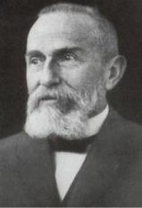
blok çalışma Bkz. aralıksız çalışma.
Bloom taksonomisi (Bloom’s taxonomy) 1956 yılında Benjamin S. Bloom ve diğerlerinin geliştirdiği bir eğitim taksonomisi. Öğrenmenin Üç Alanı: Bu üç alanı şunlar oluşturuyor: 1. Duyuşsal Alan: Şeyleri duygusal açıdan ele alış biçimi (duygular, değerler aşama sırası, değerlerin içselleştirilmesi, güdülenme, tutku, konuya karşı duyulan heyecan ve benzerleri). 2. Bilişsel Alan: zihinsel yetilerin ve becerilerin gelişiminde rol oynayan özel olgular, yöntemler, kavramlar ve evrensellerin anımsanması (bilgi, kavrama, uygulama, çözümleme, bireşim, değerlendirme ve benzerleri). Burada analiz, sentez ve değerlendirme, yüksek düzeyli düşünme alanları olarak değerlendiriliyor. 3. Ruhsal-Devimsel Alan: Fiziksel devinim, eşgüdüm, devimsel becerilerin kullanılması (algı, set, yönlendirilmiş tepki, düzenek, uyum ve benzerleri). Bkz. bilişsel öğrenme; Bloom’un bilişsel öğrenme sınıflaması.
Bloom’un bilişsel öğrenme sınıflaması (Bloom’s taxonomy of cognitive learning) Bilişsel öğrenmeyi açıklamak üzere Bloom’un geliştirdiği altılı sınıflama şöyledir: (1) Bilginin Anımsanması: Anımsama, bilişsel öğrenme sınıflamasının ilk sırasını oluşturuyor. Bilgi, okulda öğretilen her konu alanına (derslere) ilişkin sözel ve ezberlenmiş bilgileri, o alana ilişkin kavramları, olguları, sınıflamaları, yönelimleri, bilgilerin doğruluğuna karar vermede kullanılan ölçütleri, genellemeleri, ilke ve kuramları içeriyor. Bunlar, daha üst düzey öğrenmeler olan bilişsel beceriler için ön koşullardır. Bilgi edinmiş olmak, amaç olmaktan çok, bilişsel süreçte kullanılan araca sahip olmak demektir. (2) Kavrama: Kavrama, öğrencinin, öğrendiği bilgileri özümseyip sindirdiğini, bilgiler arası ilişkileri görerek, o bilgileri yeni bir düzen içinde açıklayarak, bunlardan çıkarsamalar, genellemeler, özetlemeler ve yordamalar yapabilmesi demektir. Bu, yalnızca bilgiden sonraki düzeyde bir öğrenmedir. Bu işlemler, bilişsel becerilerin en alt düzeyini oluşturuyor. (3) Uygulama: Bu evre, öğrencilerin benzer yeni sorunları çözebildikleri, özümseyip kavradıkları bilgileri yeni durumlarda kullanabildiklerini gösterdikleri bilişsel öğrenme evresidir. (4) Çözümleme (analiz): Bu düzeyindeki öğrenmede belirsiz sayıltılar tanınıyor. Bu aşamada olgular; sayıltı, denence, kanı ve değer yargılarından; sonuçlar, nedenler ve olgulardan ayırt ediliyor. Neden-sonuç, öncelik-sonralık ilişkileri görülüyor. Nedensellik ilişkilerinde önemli-önemsiz ayrıntılar ayrımsanıyor ve karmaşık bir yapı oluşturan örüntü ayrıştırılıyor (5) Bireşim (sentez): Bu düzeydeki öğrenme, belli bir sorunu çözmek için çözümleme düzeyindeki bilişsel işlemler başarıldıktan sonra, değişik kaynaklardan uygun öğeler toplanıp anlamlı bir bütün oluşturacak biçimde bir araya getirilerek gerçekleştiriliyor. Denenceler kurma; belli bir sorunu çözen yeni bir model ya da yeni bir sistem geliştirme, bireşim düzeyinde yaratıcı öğrenmedir. (6) Değerlendirme: Bu ise belli bir amaçla bireşimi yapılan bilişsel beceri ve davranışların (bilgi bütününün) değerlilik, doğruluk ve tutarlılığını iç ve dış ölçütlerle ortaya koymaktır. Değerlendirme ile en üst düzey bilişsel süreç gerçekleştiriliyor. Bilgi düzeyinin üzerindeki öğrenmeler, yalın ilişkilerden karmaşık ilişkilere doğru giden buluşa (keşfe, kavramaya) dayalı süreçlerdir. Kavrama düzeyindeki öğrenmelerle basit ilişkiler; uygulama ve çözümleme düzeyindekilerle ise, daha karmaşık ilişkiler kavranılıyor. Kavrama, yaratıcı etkinliklerin temelinde kimi zaman yalın, kimi de karmaşık bir kavram olarak yer alıyor. Yaratıcılık, daha karmaşık bir bilişsel süreçtir. Bir tasarımın ya da bir araştırmanın düzenlenip gerçekleştirilmesi, bir sanatsal ürünün ortaya konulması, birer yaratıcı etkinliktir. Yaratıcı etkinlik sonunda somut, yeni, özgün ürüne ulaşılıyor. Bu ürünün parçaları arasında ahenkli ve bütünleyici karmaşık bir ilişki vardır. Bu tür bir ürünün ortaya konuluşunun her aşamasında yaratıcı güç etkindir. Ortaya konulan her somut ürün, daha sonra yaratılacak olan yeni ürünler için uygun yaşantıları oluşturuyor. Yaratıcı etkinlikler ve ortaya konulan ürünler, bireye kendi gücünü kullanma heves ve cesareti, kendine inanma ve dayanma gücü, yeteneklerini kullanma olanağı veriyor. Bu özellikleriyle yaratıcılık, ruh sağlığını koruyucu bir etkinlik özelliği taşıyor. Okulda ruh sağlığının korunmasında etkili olan tam öğrenme ile bilişsel alan kuramı (öğrenme-öğretme kuramı), farklılıkları bulunan iki yaklaşım olsalar da ikisi de öğrenci odaklı (bireysel) öğretim için gerekli noktalara ağırlık veriyorlar. Bu iki yaklaşım, söz konusu özellikleriyle birbirinin tamamlayıcısıdır. Bkz. bilişsel öğrenme; duyuşsal öğrenme; hedef analizi; öğrenme; öğrenme kuramları.
Bogardus tipi ölçekler (Bogardus-type scales) Bogardus’un 1925 yılında çeşitli etnik gruplara karşı bireylerin toplumsal uzaklık tutumlarını ölçmek için geliştirdiği teknik. Bu klasik teknik, kimi ayarlamalarla birçok konudaki tutumu ölçmede kullanılmasıyla tutulan bir teknik oldu. Bu ölçeklerin üretilebilir ve tek boyutlu olması, kullanışlılığını ve güvenirliğini artırmıştır. Bu teknik, Guttman tipi ölçeklere de kaynaklık etmiştir. Bogardus tipi ölçeklerde kişiler, tutumlarından çok, etnik gruba yakınlık ve uzaklıklarını belirtiyorlar. Bu ölceklerde tutum tümceleri, olumludan olumsuza doğru sıralanmıştır. Örneğin, “Zenciyle evlenebilirim.”, “Zenciyle aynı semtte oturabilirim.”, “Zenciyle aynı ülkede yaşayabilirim.”, “Zenciler ülkemden çıksınlar.” diyen bir beyaz, öteki tutum tümcelerini de olumsuzluyor demektir. Bu da bir kişinin bu ölçekten aldığı toplam puan bilindiğinde, o tutuma ilişkin görüşlerinin önceden kestirilebileceğini gösteriyor.
bolluk gereksinimi (abundancy motivation) Açlığını bastırmak için gereğinden daha fazlasını yemek gibi gereksinim duyduğundan daha çoğunu isteme eğilimi. Bkz. eksiklik güdülenmesi.
boşalım (catharsis) 1. Psikanalize göre, kişinin ruhsal sorunlarının bilinçdışı nedenleri konusunda içgözlem kazanması sonucunda saldırganlık, kaygı, gerilim gibi duygularından arınması ve bunun sonucunda belirtilerin hafiflemesi; katarsis, arınma. Aynı etki, hastanın sorunlarından, geçmiş yaşantılarından, uygun bir duygusal tepki eşliğinde söz etmesiyle de sağlanıyor. Bu iki durumda da ölçüt, kişinin, söz konusu duyguları duyumsaması, yaşamasıdır. 2. Birikmiş, bastırılmış duyguların ve enerjilerin doğrudan ya da dolaylı olarak ( temsili bir yolla) boşaltılmasının bir tür süpap görevi yaptığı; örneğin saldırganlığın yoğunluğunu ya da sıklığını azalttığı biçinimdeki görüş. Bkz. boşalımın kaçınılmazlığı; boşalım tedavisi;
boşalımın kaçınılmazlığı (ejaculatory inevitability) Erkekte cinsel heyecanın, boşalımın önlenemeyecek bir noktaya ulaşması. Bu noktada uyarım ortadan kalksa; erkek boşalmak istemese de birkaç saniye içinde boşalım gerçekleşiyor.
boşalım tedavisi (cathartic therapy) Klasik psikanalizde, bastırılmış, hastalıklı duyguların dışa vurulmasını, travmatik olayların uygun bir biçimde su yüzüne çıkarılmasını ve bu yolla bunlara bağlı belirtilerin ortadan kaldırılmasını amaçlayan bir tedavi yöntemi; boşalım terapisi. Bu yöntem günümüzde çok eleştirilse de özellikle aşırı denetimli, duygularını fazla bastıran hastalarda kullanılıyor.
boşalım terapisi Bkz. arınma tedavisi.
boşanma (divorce) Tüm çabalara karşın, türlü nedenlerle evlilikte karşılıklı sevgi, saygı ve güven yitirildiğinde bir zorunluluk durumuna gelen olgu; ayrılma. Ergenliği gerektiği gibi yaşamamış olmak (ruhsal olgunluğa ulaşamamak) ve mutsuz anne baba örneği, boşanmanın iki önemli nedeni olarak gösteriliyor. Mutsuz anne ya da baba ile özdeşleşen çocuk, büyüyüp evlendiğinde tepkici oluyor ve çabuk ayrılmaya yöneliyor. Oysa evliliğin ilk yıllarında birtakım anlaşmazlıkların olması doğaldır. Bunları aşma başarılınca uyumlu bir evlilik başlayabiliyor. Evliliğin ön koşullarını yerine getirmeden evlenen çiftlerin ayrılma olasılığı daha fazladır. Ayrılmaların büyük çoğunluğunun, ilk yıllarda oluşu da bunu doğruluyor. Boşanmaya yol açan başka nedenler de vardır. Uzman yardımı almak da içinde olmak üzere, tüm çabalara karşın, evlilikte karşılıklı sevgi, saygı ve güven yitirildiğinde ayrılma, bir zorunluluktur. Boşanmanın Nedenleri: (1) Evliliğe hazır olmadığı halde, sevmediği ev ortamından uzaklaşmak amacıyla evlenmek. Bu bilinçsiz ve yanlış evlilik, çoğu kez uzun sürmüyor ve ayrılmayla sonuçlanıyor. (2) Erkeğin, annesine bağımlı olması ve eşini annesiyle özdeşleştirmesi. Böyle bir erkek, karşı cinse yaklaştığında, annesine duyduğu duyguları duyumsadığı için suçluluk duyuyor ve eşiyle sağlıklı bir ilişki kuramıyor. (3) Eşin kaba güce başvurması, baskı yapması. Şiddetin, baskının egemen olduğu bir ortamda mutlu bir evliliğin sürdürülemeyeceği açıktır. Baskı, şiddet gören için ayrılık, bir kurtuluştur. (4) Geçim sıkıntısı gibi ekonomik sorunlar. Maslow’un gereksinimlerimizin aşama sırasında yeme içme ve barınmanın, ilk sırada yer alan gereksinimler olduğu anımsanırsa, bu boşanma nedeninin önemi daha iyi anlaşılır. (5) Toplumsal-kültürel uyuşmazlıklar. Evlilerden birinin, farklı toplumsal-kültürel kesimden oluşu, ötekinde aşağılık duygusu ya da beğenmeme, küçümseme duygusu yaratabiliyor. Kimi eşler, ailelerinin değer ölçülerini yaşantılarının dışında tutamıyor; aileler yerli yersiz, eşlerin yaşantılarına karışıyorlar. Eşlerden biri; daha çok da erkek, başkasıyla duygusal ilişkiye giriyor; eşini aldatıyor. Bu gibi yanlış davranışlar da boşanma nedeni oluyor. (6) Ruhsal uyumsuzluk ve bozukluk. Sevmeme, saymama, anlayışsızlık, hoşgörüsüzlük, susulacak yerde susmayı bilmemek gibi davranışlar; yoğun nevrotik ve psikotik bozukluklar da boşanma nedeni olan ruhsal uyumsuzluk ve bozukluklardır. Boşanmanın Eşler ve Çocuklar Üzerindeki Etkisi: Boşanma, özellikle eşleri ve varsa çocukları ruhsal açıdan sarsan bir olaydır. İlk yıllardaki ayrılıklardan en çok, çocuklar zarar görüyor. Küçük yaşlarda sevgi, ilgi ve güven duygusundan yoksun bırakılan çocukların ruhsal gelişimleri aksıyor. Evliliği en çok yasak ilişkiler olumsuz yönde etkiliyor. Çünkü evlilikte bağlılık (sadakat), en önemli etkendir. Aldatılan eş, kimi “Ben, sevgiye layık değil miyim?” kuşkusuna düşüyor; kimi de öfkeleniyor. Ancak, bu, yanlış bir kuşku, yanlış bir öfkedir. Çünkü özellikle erkeklerde orta yaşlarda, yasak ilişkilere yönelme olabiliyor. İnsanın doğasında bunun gibi yanlışlıkları yapma eğilimi bulunuyor. Kadınlar, daha fazla baskı altında oldukları için, onların yanlış yapma oranı daha düşüktür. O nedenle yanlış yapan eşiyle inatlaşma yerine onu yeniden kazanmak için, kadının olumlu çabalara yönelmesi öneriliyor. Anne baba arasındaki sürekli tartışma ve çatışmalar, çocukta tedirginlik, gerilim ve kaygı oluşturuyor. Bu ortamda gerekli gereksiz azarlandığında, bağırılıp çağırıldığında çocuğun özgüveni, özsaygısı sarsılıyor; çocuk, kendini olup bitenlerin suçlusu olarak görüyor. Bu çaresizlik içinde anne babadan birine yaklaşan çocuğun, kendisine yaklaştığı anne ya da babasının duygularını öbürüne yansıttığı görülüyor. Bu yolla çocuk, bir tarafa aşırı bağlanınca, öbür tarafa kin, nefret ve düşmanca duygular besliyor. Bu durum, özdeşleşme dönemlerinde kişiliğin gelişimini ve cinsel kimlik oluşumunu önemli ölçüde aksatıyor. Anneye yaklaşmış olan erkek, erkek kimliğini; babaya yaklaşmış olan kız da kadın kimliğini kazanmada zorluk çekiyor. Bu çocuklar, büyüdüklerinde karşı cinsle ilişkilerinde sorunlar yaşıyorlar. Cinsel sapmalar bile gösterebiliyorlar. O nedenle geçimsizlikleri yüzünden çocuklarına olumlu gelişim olanakları sağlayamayan anne babalara düşen en önemli görev, çocuklarını, ruh sağlığını bozan bu ortamdan bir an önce kurtarmaktır. Boşanmanın Çocuklara Yansıtılışı: Önemli bir sakıncayı da boşanmış eşlerin, çocukları, birbirine karşı öç alma aracı olarak kullanmaları oluşturuyor. Ayrılan kimi anne babalar, çocuğu karşı tarafa göstermemek için türlü yollara başvuruyorlar. Çocuğa bu konuda aşırı baskı yapıyorlar. Çocuğa çelişkili tutumlarla davranıyor ya da onu aşırı koruyor, derin çatışmaların içine itiyorlar. Bu nedenle, tüm çabalara karşın giderilemeyen geçimsizlik ve uyumsuzluk durumlarında bir an önce boşanmak, eşlerin, özellikle de çocukların ruh sağlıkları açısından çok önemlidir. Anne baba da çocuklar da bir an önce düzenli ve dengeli bir yaşama kavuşmalıdırlar. Ancak, çocuk, eşler arasındaki her türlü anlaşmazlığın dışında tutulmalıdır. Alınmış olan boşanma kararını anne ve baba, uygun bir dille çocuğa anlatmalı; bu ayrılıkta kendisinin herhangi bir suçunun, etkisinin olmadığını vurgulamalıdırlar. İstediğinde kendilerini görebileceğini; kendilerinin de onu sık sık arayacaklarını belirtmelidirler. Anne ya da baba, karşı tarafı kötülemek için çocuğu hiçbir biçimde kullanmamalıdır. Çocuğun, 15-16 yaşına dek annesinin yanında kalarak, uygun zamanlarda babasıyla da görüşmesi, ruh sağlığı açısından daha uygun görülüyor. Boşanmanın Yol Açtığı Ruhsal Sorunların Giderilmesi: Boşanmalar konusunda yapılan 5-10 yıllık izleme çalışmaları sonucunda şu bulgular elde edilmiştir: Boşanmayı izleyen ilk bir buçuk yıl içinde eşler ve çocuklarda ileri derecede karmaşık ruhsal sorunlar görülüyor. Çocukların aşırı zorlandıkları; toplumsal uyumsuzluklar, kaygılı depresyonlar yaşadıkları; saldırgan, itaatsiz, okulda başarısız oldukları gözlemleniyor. Çocuk ne kadar küçükse, boşanmadan o kadar çok etkileniyor. 6-8 yaşlarında çocuklar, olayı algılayabiliyorlar; ancak, ben odaklı yorumlar yaparak, birlikte oldukları anne ya da babaya kızgınlık, öbürüne de bastırılmış saldırganlık duyuyorlar. 9-12 yaşlarındaki çocuklar ise, olaya anne baba açısından da bakabiliyorlar. Boşanma konusunda kendilerini suçlamıyor; ancak, anne babadan birine karşı bağlılık duygusu, öbürüne karşı da çelişkili duygular besliyorlar. Anne babadan birini seçmeyi, bir dizi çatışma yaşadıktan sonra başarabiliyorlar. Bu yaştaki çocuklar, duygularını daha rahat anlatıyorlar. Güçlerini daha çok oyuna yöneltiyorlar. Bunlar en çok, ev ve okul değiştirmede zorlanıyorlar. Bu yaş çocukları, öbür aile çocuklarından daha çatışmalı, bağımlı, çekingen, suçlayıcı, dikkatsiz oluyor ve daha çok uygunsuz davranışlar gösteriyorlar. Ergenlik yaşındaki çocuklar, boşanmayı birden çok boyutu ile kavrayabiliyorlar. Bununla birlikte, bu olgu karşısında, çok değişik tepki gösterenlere de rastlanıyor. Kimi ergen, boşanmanın yasını tutuyor; kimisi, duygusal desteğe gereksinim duyuyor; kimisi, bağlılık çatışması yaşıyor; kimisi, çekilmeyi yeğliyor; kimisi de ailede önemli sorumluluk almanın tadını çıkarıyor. Anne babası, kendisi 2 yaşına girmeden önce ayrılmış olan çocuklar, ergenlikte önemli sorunlar yaşamıyorlar. Anne babası, kendisi 3-5 yaşında iken ayrılmış olan erkek çocuklar, ergenlikte saldırganlık; kızlar, hem saldırganlık hem de okulda başarısızlık sorunları yaşıyorlar. 6-12 yaşlarında iken anne babaları ayrılan erkek çocukların, ergenlikte okulu reddettikleri görülüyor. Boşanan anne babanın delikanlılık çağındaki kızları, kadın kimliğini aşırı biçimde öne çıkarıyorlar. Bunlarda suçluluk oranı da yüksek oluyor. Normale oranla fazla olmakla birlikte, anne babada nöbetleşe kalan çocuklar, anne ve babadan birinde yaşayan çocuklardan daha az sorunlu oluyorlar. Anne babaları uzak yerlerde oturan çocuklara, gerekli sevgi ve ilgi gösterildiğinde; telefonla, mektupla, zaman zaman ziyaretlerle ilişki sürdürüldüğünde, ayrı yaşamanın sakıncaları azaltılıyor. Küçük çocuklara düzenli ziyaretlerin gerçekleştirilmesi, anne babalar için önemli bir sorumluluktur. Boşanma durumlarında ortaya çıkan uyum ve davranış bozukluklarının giderilmesi için anne babaya, boşanma ve yeniden evlenme tedavisi; çocuklara oyun tedavisi; gençlere ise içgörü kazandırıcı tedavi uygulanıyor. Aralarında yeterli sevgiyi oluşturamayan ya da var olan sevgiyi bitiren kimi evliler, çocuktan evliliği mutlu bir birlikteliğe dönüştürmesini bekliyorlar. Kimi mutsuz çiftler de yalnız kalma korkusu yüzünden evliliklerini bitiremediklerini ya da ailelerinin, çevrenin etkisinde kaldıklarını itiraf edemedikleri için, evliliklerini sürdürme nedeni olarak çocuklarının varlığını öne sürüyorlar. Sağlıklı eşler, bu tür sağlıksız tutumla davranmıyorlar. Bkz. evlilik (Evliliği Sürekli Kılmanın Koşulları); evlilik; geçimsizlik.
boşanmanın çocuklara yansıtılışı Bkz. boşanma.
boşanmanın çocuklar üzerindeki etkisi Bkz. boşanma.
boşanmanın eşler ve çocuklar üzerindeki etkisi Bkz. boşanma.
boşanmanın nedenleri Bkz. boşanma.
boşanmanın yarattığı ruhsal sorunların giderilmesi Bkz. boşanma.
boşinanca dayalı davranış (superstitious behavior) İşlemsel koşullama çalışmalarında uzun süreli ya da sıklıkla pekiştirme sonucu, deneğin davranışlarının, araştırmacının isteği dışında ve tümüyle rastlantısal olarak pekiştirilmesi ile davranışın sıklığının artması ya da azalması. Bu olguda önemli nokta, pekiştirme ile davranış arasında ödül, ceza gibi bir nedensel ilişki olmamasına karşın deneğin, kendi içinde, olmayan bir nedensel ilişki kurmasıdır. Bu bulgu, bir ölçüde, boşinancın temeline ışık tutuyor. Örneğin, bir kişi, sabah, kedisini severek işinin yolunu tutuyor ve o gün işi çok yolunda gidiyor. Bu nedenle ertesi gün, ertesi gün de aynı şeyi yapıyor; ama işi iyi gitmiyor. Ancak, o, her sabah kedisini severek dışarı çıkmayı sürdürüyor ve yine işi çok iyi gidince, bunun kedisini sevmesiyle hiçbir ilişkisi olmasa da bu kişi, işinin iyi gitmesini kedisini severek evden çıkmaya; kedisinin uğuruna bağlıyor. Bkz. boşinanç; edimsel koşullama.
boşinanç (superstition) 1. Bilimsel ve dinsel bir temele dayanmayan dar, biçimsel bir yaklaşımla doğaüstü ya da büyülü güçlerden yararlanarak doğal olayların akışının değiştirilebileceği inancı; batıl itikat, büyülü düşünme. Büyü yaptırma, uğur getireceğine inanılan nesneler taşıma, muska yazdırma, dua etme, ruh çağırma; kara kedinin, üç rakamının, haftanın belli günlerinin uğursuz sayılması boşinanç örneklerindendir. Yapılan bir araştırmanın sonuçlarına göre, dünya genelinde insanların günlük yaşamlarında uyguladığı yaklaşık beş yüz bin ayrı boşinanç bulunuyor. Psikologlar, bu inançların kökeninde kaygılı durumlardan kurtulma isteğinin bulunduğunu vurguluyorlar. Boş inançların oluşumunda güvenlik gereksiniminin önemli bir etken olduğu biliniyor. Boşinançlar, belirsizlik durumunda yaşanan kaygıları ve bulanıklığı yok etmek için tutunacak bir dal olabiliyor. Uğur, mutluluk gibi olumlu içeriği olan boşinançlar, kendini iyi duyumsama, korunma gibi işlevler görüyorlar. Buna karşılık, boş inancından dolayı olumsuz bir beklentiye giren kişinin, beklediği olumsuzlukla karşılaşma olasılığı da artıyor. Psikolojide kendini gerçekleştiren kehanet diye adlandırılan bir duruma göre kişi, bir konuda olumsuz bir beklentiye girdiğinde, ayrımsamadan o beklentinin gerçekleşmesine yardım eden davranışlar yapabiliyor. Boşinançların ruhsal bozukluklara yol açmak gibi bir etkisi yoktur. Bu eğilim daha çok, takınaklı ve kaygılı kişilerde görülüyor. Ancak, özgüvenin azaldığı ve kaygının yoğunlaştığı durumlarda kendini ve sevdiklerini korumak için bir sığınak olabiliyor. 2. Sorgulamadan kabul edilen, bilimsel olmayan açıklamalar, inançlar. 3. Boşinanca dayanan davranış. Bkz. büyülü düşünme; inançla iyileşme.
boşluk doldurma (confabulation) Hastanın yeterince anımsayamadığı şeylere ilişkin birtakım ayrıntılar uydurarak ya da başkalarının söylediği ayrıntıları benimseyerek, belleğindeki boşlukları doldurması biçimindeki bilinçsiz çarpıtma; uydurma. Bu eğilim, sıklıkla karşılaşılan bellek yitiminin ya da kafa karışıklığının yol açtığı utanma duygusunu gizlemek amacıyla seçilen bilinçsiz bir girişim olarak yorumlanıyor. Boşluk doldurmaya sıklıkla Korsakof sendromu (psikozu), çeşitli beyin sarsıntıları, sara, bunama ve çözülmeli bellek yitimi ile ilgili bozukluklar ve madde kullanımına bağlı kimi durumlarda başvuruluyor. Bkz. genel felç.
boş zaman etkinliği (recreation) Kişinin zorunlu çalışma saatleri dışında isteyerek uğraştığı, ruhsal ve bedensel açıdan dinlenip gevşemesine yardım eden etkinlikler. Müzik, resim, spor, okuma, yazma, gezi, avcılık, bahçe işleri bunlar arasında yer alıyor.
boylamasına yöntem (longitudinal study) Aynı insanlar üzerinde uzun bir süreyi kapsayan verilerle yapılan bir araştırma tasarımı; boylamsal yöntem. Genel olarak bu yöntem, yaşa bağlı gelişimsel değişimleri incelemek amacıyla kullanılıyor. Ölçümler, yılda bir, beş yılda bir gibi belli aralıklarla yapılıyor ve zamanın bağımlı değişkenler üzerindeki etkileri inceleniyor. Örneğin, çevresel etkenlerin bilişsel gelişim üzerindeki etkisini incelemek için farklı sosyo-ekonomik gruplardan çocuklar, birkaç yıl boyunca bu yöntemle inceleniyor. Bkz. enlemesine araştırma.
boylamsal yöntem Bkz. boylamasına araştırma.
boyun eğme (obedience) Bir otoritenin koyduğu kurallara ya da buyruklarına uygun davranma; itaat etme. Bu terim psikolojide daha çok, kişinin değer yargılarını, düşüncelerini, kanılarını otoritenin beklentisi doğrultusunda değiştirmesi anlamında kullanılıyor. Ancak bu, beklenen değişikliği kişinin benimsediğini kanıtlamıyor; yalnızca otoritenin beklentilerine uygun davrandığını gösteriyor. Boyun eğen kişi, istemese de başkalarına doğrudan zarar verebilecek davranışlar da sergileyebiliyor. Bkz. Kohlberg’e Göre Ahlak Gelişimi; Milgram deneyi; Zimbardo deneyi.
boyut değişmezliği (size constancy) Uzaklıktaki değişime bağlı olarak retina üzerindeki imgelerinin büyüklüğünün değişmesine karşın, bilinen nesneleri aynı büyüklükte algılama; doğrusal perspektif. Aşağıdaki resimde b ile c’nin retina üzerindeki büyüklüğü aynıdır; ancak biz, c’yi a ile aynı büyüklükte algılıyoruz. Bkz. büyüklük değişmezliği; derinlik algısı.
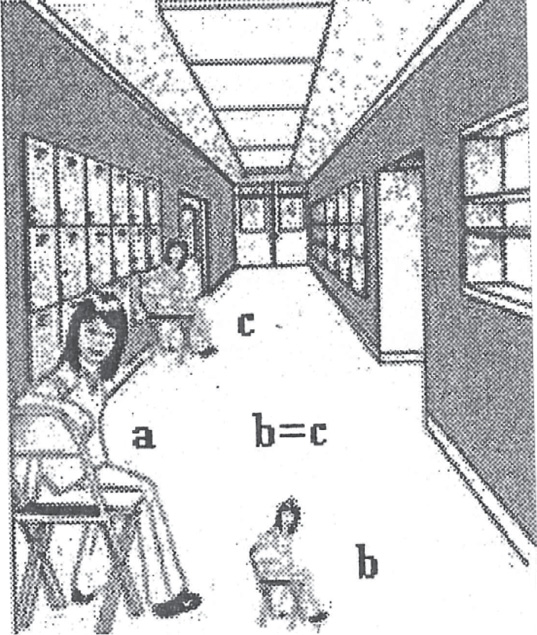
Boyut Değişmezliği
boyutsal varlıkbilim (dimensional ontology) V. E. Frankl’in bedenle ruhun toplamı olan biyo-psikolojik, sosyo-psikolojik, manevi ya da noetic karşılığı olarak kullandığı terim. Ona göre insan, yalnızca beden ya da ruh olmanın ötesinde bir varlıktır. O, buna noos adını verdiği bir ruhsal boyutu da eklemiştir. Bkz. FRANKL, Viktor Emil.
bozma (undoing) Daha önce yapılan bir şeyin karşıtını yapma; çatışmayı bu bakışımla dengelemeye çalışma ya da törensel bir düzenle belirtip yeniden bastırma biçiminde işleyen savunma mekanizması; yapma-bozma. Örneğin, kişi evden çıkıyor, kapıyı kilitleyip anahtarı çantasına koyuyor. Tam asansöre binecekken ya da dış kapıdan çıkacakken içine bir kuşku giriyor: “Gazı kapadım mı?..”, “Kapıyı kilitledim mi?..” Dönüyor, kapıyı açıyor; kapıyı kilitlediğini anlıyor. İçerde gazı kapamış olduğunu da görüyor. Sonra kapıyı yeniden kilitleyip yeniden asansöre ya da dış kapıya yöneliyor. Kimi kişiler, yürürken taşların çatlaklarına basmama zorunluluğunu duyarak ilerliyorlar. Bir çatlağa basınca geri adım atıyor, oraya basmadan yaniden yürümeyi sürdürüyorlar. Örneğin, kişi evden çıkıyor, kapıyı kilitleyerek anahtarı çantasına koyuyor. Tam asansöre binecekken içine kurt düşüyor: “Acaba gazı kapadım mı? Kapıyı kilitledim mi?” “Ya kapamadıysam? Ya kilitlemediysem?” Dönüyor, kapıyı açıyor. Kapıyı kilitlemiş olduğunu anlıyor. Gazı kapadığını da görüyor. Sonra kapıyı kilitleyip yeniden asansöre yöneliyor. Başarılı bir kimya öğretmeni, bir arkadaşım, ders işlerken bir yandan da öğrencileri ikişer ikişer saydığını; en sonda tek öğrenci kaldığında rahatsız olduğunu ve yeniden saymaya başlayıp, arada bir öğrenciyi atlayarak sonucu çift getirdiğinde rahatladığını anlatmıştı. Aynı öğretmen, otobüste giderken karşısına gelen tabelaları okumaya, direkleri saymaya zorlandığını sözlerine eklemişti. Kimisi de günlük yaşamlarını şaşmaz kurallı bir törene çeviriyorlar. Sabahleyin evden çıkarken önce sağ ayaklarını atarak evden çıkmadan ceplerini yoklamaya; her şeyin kendine ait cepte olup olmadığını denetlemeye dek pek çok kalıp davranışı uyguluyorlar. Bunlar, bu ve benzeri davranışlarla, bilinçdışı tehlikeli isteklerinin orada tutulduğunu, bir kez daha kesinlemiş oluyorlar. Bozmanın ters tepkiyle birlikte oluşması, bundaki bilinçdışı isteklerin, genellikle dışkıl dönemin artıkları olduğunu gösteriyor. Kişinin “kirlet-temizle, tut-tutma, bırak-bırakma, etkin ol-edilgin ol” gibi bozma tepkileri, karşıt istek ve eylemler arasında bir denge kurma çabasıdır. Bu nedenle çift sayılar iyi, dengeli; tek sayılar ise kötü ve dengesizdir. Çatışan güçlerin dengesizliği demek olan tek sayı, tedirgin edici ve kaygı yaratıcıdır. Benlik, yeni bir bozma ile ortaya çıkan dengesizliği düzeltmek zorunda kalıyor. Ayakkabı, belirli bir sırayla giyilince; masaya vurulunca; “maşallah maşallah” denince, tehlikeli görülen içgüdülerin yarattığı dengesizlik giderilmiş; benlik, savunmayı başararak suçlanmaktan, ayıplanmaktan, sonuçta da kaygıdan kurtulmuş oluyor. Ne ki bu tür yinelemeler, bir türlü son bulmuyor. Çünkü ilkelbenlik istekleri, bu savunmalarla doyurulamıyor. O nedenle bunlar, herkeste yalnızca zararsız davranış olarak kalmıyor. Bastırılan istekler, kimilerinde benliği zayıflatıyor; bozmaları artırıp şiddetlendiriyor. Onları, bu artan ve şiddetlenen bozma davranışlarını yinelemeye zorluyor. İşte o zaman, sağlıklı gibi davranan insan, ruhsal bunalıma giriyor. Çünkü artık, yinelenen bozma tepkileri, kaygısını gidermeye yetmiyor. Benlik, daha yeni, daha gerçekdışı, daha tuhaf bozma biçimlerini bulup uygulamak zorunda kalıyor. Bkz. benliğin savunma mekanizmaları.
bozucu etki (interference) Bir öğrenmeden önce ya da sonraki öğrenmenin, o öğrenmenin anımsanmasını olumsuz yönde etkilemesi. Bozucu etkiler, olumsuz geçiş (aktarım) gibidir. Burada öğrenme yerine bellekte (hatırda) tutma vardır. Bozucu etki, bellekteki çözülmeyle birlikte, önemli bir unutma nedenidir. Bu etki, iki biçimde görülüyor: (1) Sonra gerçekleştirilen bir öğrenme, önceki öğrenmenin anımsanmasını engelliyor. Buna, geriye doğru bozucu etki ya da geriye ket vurma deniyor. (2) Bozucu etki, önceden gerçekleştirilen bir öğrenmeden kaynaklanabiliyor. Bu da ileriye doğru bozucu etki ya da ileriye ket vurma diye adlandırılıyor. Deneysel çalışmalar ve bunu destekleyen öğrenme işlemlerinin sonunda, hangi koşullarda bozucu etkinin olduğuna ilişkin kurallar belirlenmiştir. Bunlar şöyle sıralanıyor: (1) Öğrenilen konular birbirine çok benzerse, buzucu etki az oluyor. (2) Öğrenilen konular birbirinden çok farklı ise bozucu etki, öğrenilen konunun benzer olduğu durumdan çok daha az oluyor. (3) En çok bozucu etki ise, iki öğrenmenin biraz benzer olması durumunda görülüyor. Bozucu etki deneylerinde öteki değişkenleri denetim altında tutmak zordur. Bununla birlikte araştırmalar, deneklerin bir konuyu öğrenmeleri ile anımsama testi arasında uyumalarını sağlamanın, geriye doğru bozucu etkiyi azaltmanın bir yolu olduğunu gösteriyor.
böbreküstü bezleri (adrenal gland) Her iki böbreğin üstünde yer alan ve çeşitli hormonlar üreten bir organ; adrenaller. Medulla (iç bölüm), adrenalin (epinefrin) ve noradrenalin (norepinefrin) salgılıyor; korteks (dış bölüm) ise kortizol gibi kimi steroidlerle kimi androjenleri salgılıyor. Böbreküstü dış bölümünü hormon salgılamak için, ACHT olarak bilinen bir hipofiz bezi hormonu etkinliğe geçiriyor. Yetersiz salgılama yorgunluk, iştah yitimi ve kilo yitimi gibi bozukluklar yaratıyor. Bkz. endokrin bezleri; adrenal bunalımı; adrenalin ve noradrenalin; adrenal korteks; adrenal soğancığı; adrenal yetmezliği.
böbreküstü salgısı Bkz. adrenalin ve noradrenalin.
bölgesel bellek yitimi (localized amnesia) Belli olaylarla ilgili sınırlı bellek yitimi.
bölgesel içgüdü (partial instinct) Ruh çözümlemede belirli bir cinsel uyaran bölgesine bağlı libido eğilimi. Bkz. cinsel uyarı bölgeleri.
bölmeleme Bkz. çözülme.
bölümlü öğrenme (part learning) Kapsamlı bir konunun, küçük parçalara ayrılarak öğrenilmesinden sonra o parçaların birleştirildiği öğrenme. Bkz. bütün olarak ya da parçalara bölerek öğrenme (bütün-parça-bütün yöntemi).
bölünme (splitting) İnsandaki doğal dürtülerin ya da içe atılmış olan nesnenin iyi ve kötü olarak parçalara bölünmesine; iyinin ya da kötünün yaşatılmaya; karşıtının ise yok edilmeye çalışılması biçiminde işleyen savunma mekanizması. “İyi benlik”le “kötü benlik” arasında bocalama, bunları bütünleştirmeye uğraşma; öte yandan da içe atılan nesnenin iyi ve kötü yanlarını ayrı tutmaya çalışma, şizofreninin dinamiğindeki belirleyiciler olarak ortaya çıkıyor. Benlikte yaşatılan ve ilkörneği anne olan önemli nesne, iyi ve kötü olarak ikiye ayrılınca, benlik de bölünmüş oluyor. Dış gerçeğin de bu biçimde bölünmesi, bu tartışmalı mekanizmanın özünü oluşturuyor.
bölüşüm adaleti (distributive justice) J. Piaget’nin haklılık anlayışının bir biçimi. ”Bölüşüm adaleti” terimi ile kaynakların bölüşümünde insanlara yapılan muamele kastediliyor. Piaget’ye göre, kimilerine, başkalarına zarar verecek biçimde ayrıcalık tanıyan bir bölüşüm, haksızdır. Büyük çocuklarda, bölüşüm adaletinin değerlendirilmesinde egemen görüş, “hakçalık”tır. Bkz. ahlak (Piaget’ye Göre Ahlak Gelişimi); bilişsel gelişim kuramı; karşılıklı ödeme adaleti.
Brayil alfabesi Bkz. körler alfabesi.
BREUER, Joseph (1842-1925) Histerinin tedavisinde yeni bir yöntem uygulayan Avusturyalı nörolog. Breuer, Viyana’da doğdu; aynı yerde öldü. Viyana Üniversitesi’ni bitirip tıp doktoru olan Breuer, Viyana Genel Hastanesi’nde 1866’ya dek çalıştı. 1871-1890 arasında Viyana Üniversitesi’nde öğretim üyeliği yaptı. 1868’de normal soluk alıp vermenin duyumsal denetimi ile ilişkili Hering-Broyer Refleksi’ni tanımladı. 1873’te yarım daire kanallarının içkulaktaki işlevini ve bunların insandaki denge duyusuyla ilişkisini belirledi. 1880’de bir histeri hastasını hipnoz yöntemiyle tedavi etmeyi başardı. Hastayı, geçmişte kendini rahatsız eden olayları anımsamaya zorlayarak hastanın bastırmış olduğu olayları bilince çıkardıkça hastanın iyileştiğini gördü. Breuer bu yöntemi arınma (catharsis) diye adlandırdı ve Freud’la birlikte bu yöntemi hastalara uyguladı. 1895’te Broyer ve Freud, Histeri Araştırmaları adıyla bir kitap yayımladılar. Daha sonra Freud’la Breuer arasında görüş ayrılıkları ortaya çıktı. Freud’a göre tüm hastalar hipnotize edilemeyeceği için Breuer’in yöntemi sınırlıydı. Freud, hipnotik yöntemi bırakarak özgür çağrışım yöntemini geliştirdi. Breuer de Freud’un histerinin altındaki nedenin cinsel olduğu görüşüne katılmadığı, ayrıca psikanalizi eleştirdiği için bu ikilinin yolları ayrıldı. Breuer’in çalışması bugün, daha çok psikanalitik yöntemin evrimi çerçevesinde ve Freud’la ilişkisi açısından değerlendiriliyor. Başlıca yapıtları: Studien über Hysterie, 1895 (Freud ile birlikte) (Histeri Araştırmaları).
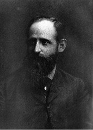
Broca alanı (Broca’s area) Beyin kabuğunun konuşma, duyulan sözlerin sözdizimi, yapısal karmaşıklığın kavranması gibi dil işlevlerini denetleyen bölümü. Bu bölüm, adını, burayı ilk kez belirleyip tanımlayan Paul Broca’dan almıştır. Ağırlıklı olarak sağ elini kullanan kişilerde çoğunlukla beynin sol yanında; solaklarda ise beynin sağ yanında bulunan bu bölümdeki bir zedelenme, Broca söz yitimi adı verilen bir konuşma bozukluğuna yol açıyor. Bkz. Wernicke alanı.
Broca söz yitimi Bkz. Broca alanı.
B tipi kişilik (B type personality) Katı kurallardan, A tipi kişilik özelliklerinden arınarak esneklik kazanmış; zamanı sorun etmeyen, rahat ve sabırlı; başarı konusunda aşırı hırsı olmayan; çabuk sinirlenmeyen, tedirginlik duymayan; yaptığı işten zevk alan; işiyle ilgili rahatlığı kendisinde suçluluk duygusu uyandırmayan, sakin ve düzenli çalışan kimselerin kişilik tipi.
budala (imbecile) Zihinsel yetenekleri 20-40 ZB (zekâ bölümü) arasında olan (kişi); embesil, aptal. Bu sınır, kimilerince 35 -55 ZB olarak benimseniyor.
budunsal psikoloji (ethnopsychology) Özellikle ilkel durumdaki ırkları ve ulusları karşılaştırmalı bir yöntemle inceleyen psikoloji dalı; budunsal ruhbilim.
budunsal ruhbilim Bkz. budunsal psikoloji.
buhran Bkz. bunalım.
bulimiya Bkz. iştah yitimi bozukluğu.
bulimiya nervosa Bkz. fazla yemek yeme bozukluğu (beslenme bozukluğu). (İştah yitimi bozukluğu; yeme bozukluğu.
bulmaca kutusu (puzzle box)Thorndike’ın, kedilerdeki işlemsel koşullamayı incelemek için tasarladığı bir laboratuvar gereci. Aç kediler, mandal gibi bir aletle açılabilen bir kutu üzerine yerleştiriliyor. Kutunun dışına da kedilerin ulaşabileceği yiyecek maddeleri (olumlu pekiştirici) konuluyor. Eğitim denemelerinin sayısı arttıkça, kediler daha kısa sürede kutudan çıkmayı başarıyorlar. Thorndike bundan yola çıkarak, kutuyu açma pekiştirmesinin, etki yasasını kanıtladığını savunmuştur. Bu kutu, işlemsel davranışları incelemek amacıyla tasarlanan ilk deneysel düzenek olma özelliğini taşıyor. Bunu daha sonra Skinner kutusu izlemiştir.
buluğ Bkz. erinlik.
bulunç Bkz. vicdan.
buluş (invention) 1. İlk kez yeni bir aygıt, araç, yöntem ve benzerini yaratma işi; icat. 2. Bilinen bilgilerden yararlanarak, bilinmeyen yeni bir bulguya ulaşma ya da yöntem geliştirme; keşif.
3. Herkesin kolaylıkla bulamayacağı özgün bir düşünce. 4. İşlenen bir konuda, konunun kendisi de içinde olmak üzere, duygu, düşünce, imge, dil ve anlatım, biçim yönlerinden özgün bir yol bulma işi.
buluşma kuramı (contagion theory) Le Bon’un ortak davranış kuramına göre, insanların birbirinin davranışlarını kopyalaması ve bunun sonucunda zincirleme bir tepkinin ortaya konulması. Bu kurama göre, bireylerin kalabalık içinde duyumsadıkları anonimlik duygusu, onları fanatik önderlerin telkinlerine açık kılıyor ve bu tür kalabalıklarda özellikle yıkıcılığa, saldırganlığa iten duygular, bir virüs gibi yayılıyor.
buluş yoluyla öğretme (discovery teaching) Sönmez’in belirlediği sekiz öğrenme- öğretme yaklaşımından biri. Bu stratejinin kullanımında uyulacak ilkeler şöyle sıralanıyor: (1) Hedef davranışlar, bilişsel alanın kavrama, analiz ve değerlendirme; duyuşsal alanın tepkide bulunma ve değer verme basamaklarından en az birinde bulunmasına dikkat ediliyor. Kazandırılacak davranışlar şunlar olabiliyor: Formüle, grafiğe, simgeye dönüştürme; bir başka dile çevirme; nedenini, niçinini, nasıl olduğunu söyleme, yazma; olayı kendi tümceleriyle özetleme, yeni örnek verme; ilkeleri, öğeleri, sayıltıları araştırıp gerekçeleriyle birlikte yazma, söyleme; iç ve dış ölçütlere uygunluk derecesini gerekçesiyle söyleme, yazma. (2) Öğretmen, ilkeyi, nedeni, niçini, bulduruyor; bunlarla ilgili en az iki üç örneği sınıfa getirip öğrencilere dağıtıyor; ya tahtaya çiziyor, yazıyor ya da yansılarla gösteriyor. (3) Öğrencilerin, örnek üzerinde gerekli işlemleri yapmalarını sağlıyor. Öğrencilere hedef davranışlarla ilgili açık uçlu sorular soruyor; soruyu sorduktan, işlemleri yaptırdıktan sonra, içinden 20’ye dek sayıyor. Sonra en az beş öğrenciden gerekçeli yanıt alıyor ve tartışma açıyor. Tartışma, doğru yanıt bulunana dek sürdürülüyor; doğru bulunduğunda sınıfa pekiştireç veriliyor. Karşıt görüş soruluyor ve gerekçesiyle birlikte dinleniyor. (4) Bu stratejinin uygulanışı sırasında öğretmen, gerektiğinde ipucu verme dışında hiçbir açıklama yapmıyor, bir şey anlatmıyor; tutarlı bir orkestra şefi gibi davranıyor. (5) Öğretmen bu stratejide öğrencilerin tümevarım, aklın yeniden soruna dönmesi, analoji, diyalektik denilen akıl yürütme türlerini kullanmalarını sağlayan etkinliklere yer veriyor. (6) Öğrencilere ilkeyi, nedeni, niçini, nasılı ile birlikte buldurduktan sonra onlardan bunlara uygun yeni örnekler istiyor. Örneklerin uygunluğu konusunda sınıfta gerekçeli tartışma açıyor. (7) Öğretmen, konunun dışına çıkılmasına izin vermiyor. Bu stratejiyi uygulamaya koyan öğretmen, güdümlü tartışma ve örnek olay yöntemlerinden birini; küçük küme, büyük küme tartışmasını; soru-yanıt, çember, karşıt panel, münazara, açık oturum gibi teknikleri, öğrenme ortamında işe koşuyor. Öğrencilere açık uçlu sorular soruyor, onlardan gerekçeli yanıtlar istiyor. Öğrencilere bilgi düzeyindeki önkoşul davranışları kazandırmadan önce bu stratejiyi kullanmıyor. Bkz. bilişsel alan kuramı; öğrenme-öğretme yaklaşımları.
bunalım (crisis) 1. Bir durumun doğal gidişi sırasında birdenbire ortaya çıkan aykırılık; buhran, kriz. 2. Sonucu kötü olabilecek gerginlik. 3. Bir hastalıkta birdenbire beliren ve ölümle sonuçlanabilecek fizyolojik değişiklik; kriz, buhran. 4. Halkın satın alma gücünün azalması ya da durması, mal satış değerinin düşmesi gibi nedenlerle ortaya çıkan üretim ve alışveriş durgunluğu. 5. İnsanın canını sıkan, insanı tedirgin eden, sonucu ruhsal yönden kötü olabilecek durum, yoğun tasa.
bunaltı Bkz. kaygı.
bunama (dementia) Birden fazla bilişsel alanda beliren derin, ilerlemeli; kimi zaman duygu, davranış ve kişilik değişimlerini de içeren ve kişinin normal yaşayışını etkileyen organik bir zihinsel işlev yitimi. Bu bozukluk, genellikle Alzheimer, Pick, Huntington hastalıkları; Korsakof psikozu, beyin yangısı, multiple skleroz, Parkinson hastalığı, AIDS, aşırı alkol alımı gibi yaşlanmaya ya da beyin hastalıklarına bağlı olarak ortaya çıkıyor. Kimi zaman beyin uru, hipotroidizm, hematoma ya da tedavi edilebilir öteki kimi hastalıklardan kaynaklanıyor. Bunama belirtileri arasında bellekte, soyut düşünme ve akıl yürütme yetisinde belirgin bir kayıp, zihin karışıklığı, eşgüdümsüzlük, yoğunlaşma güçlüğü gibi kötüleşmeler, hareket becerilerinin kötüleşmesi, kimi zaman söz yitimi, devinim yitimi (apraksi), tanısızlık (agnozi), kişilik değişimleri, duyumsamazlık, depresyon yer alıyor. Bunamanın birçok özel biçimi buılunuyor.
bunamalı paranoya (paranoia senilis) Bunamayla birlikte görülen ve örneğin, komşuların kendisi ile ilgili casusluk yaptığı, kendi aile bireylerince soyulduğu kuruntuları gibi zulüm düşlemleri ile varlık gösteren paranoya biçimi. Bkz. paranoya.
Burdia’nın eşeği (Burdian’s Ass) John Burdian’a (1295-1356) gönderme yapılan ve iki ot demetinden hangisini yiyeceğine karar veremediği için açlıktan ölecek duruma gelen bir eşek benzetmesiyle açıklanan bir ikilem (çatışma). Birbirine karşı olan kişi ya da grupların, örneğin, radikal sağ ve radikal sol partilerin, muhalefet etme uğruna, birbirinin çalışmalarındaki olumlu öğeleri görmemeleri ve birbirini engellemek uğruna yapılabilecek olumlu işlere de engel olmaları, bu tür bir ikilemdir. Bkz. çatışma ((1) Yaklaşma-Yaklaşma Çatışması).
burjuva devrimi (bourgeois revolution) 17. yüzyıldan başlayarak Batı dünyasında soyluların ekonomik, toplumsal ve siyasal süreçler üzerindeki denetimine son veren; ekonomik gücünü özellikle sanayi ve ticaretten alan toplumsal kesimlerin öncülüğünde geleneksel toplum yapısının çözülmesine ve çağcıl ulus devletlerin, piyasa ekonomisi ile liberal demokrasinin ortaya çıkmasına yol açan köklü dönüşüm.
burjuvazi (bourgeoisie) 1. Kapitalist toplumlarda artık değerlerin bölüşülmesinde işçi sınıfı ile mücadele eden ve kapitalizmin korunmasından çıkar sağladığı varsayılan orta sınıf ya da yönetici kesim. 2. Marksist kurama göre, kapitalist üretim biçiminde, üretim araçlarının mülkiyetine sahip olan ve artık değere el koyup ücretli emeği sömürerek yaşayan sınıf.
buyrukçuluk (ascendency) Öteki insanlarla ilişkilerde onlara buyurma ya da yol gösterme eğilimi; emretme.
buzdağının ucu (tip-of-the-iceberg) Bilincin, büyük bölümü suyun içinde bulunan ve görünmeyen buzdağının (bilinçdışı süreçlerin) yalnızca görünen ucu olduğu savı. Bkz. topografik kuram (Bilinç, Biliçaitı, Bilinçdışı).
BÜHLER, Karl (1879-1963) Alman psikologu. Bühler, Meckesheim’de doğdu. 1918’de Münih’te; bu tarihten 1922’ye dek Dresden’de, Viyana’da profesör olarak çalıştı. Daha sonra Kaliforniya, Pasadena’ya çekildi. Başlangıçta Vürzburg Okulu adlı akıma katıldı; sonra Gestalt (biçim) psikolojisine yöneldi. Ebbinghaus’un ve Külpe’nin psikolojileri üzeride araştırmalar yaptı. Başlıca yapıtları: Die Gestalt Wahrnehmungen, 1913 (Gestalt Algıları); Die Geistige Entwicklung des Kindes, 1918 (Çocukta Ruhsal Gelişim); Handbuch der Psychologie, 1922 (Psikoloji El Kitabı); Die Krise der Psychologie, 1929 (Psikolojide Bunalım); Ausdrucksthorie, 1933 (Anlatım Kuramı) Sprachtheorie, 1934 (Dil Kuramı);
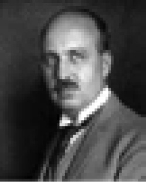
büro işleri, hız ve doğruluk testleri (Office work, speed and truth test’s) Harf, rakam ve benzerlerini birbiriyle karşılaştırma; bunların benzer ve ayrı yanlarını bulma yoluyla büro işleri, hız ve doğruluk yeteneğini ölçen testler. Bunlardan biri olan ve bir dizi harf çiftinden oluşan büro işleri, hız ve doğruluk testi’nin yapısı basittir. Testte, AÇ DK ZM FL TB; YN HŞ PU DK GR gibi harf çiftlerinden oluşturulmuş gruplar yer alıyor. Test uygulanan bireyden, bu guruptaki bir harf çiftinin aynısını bir başka grup içinden bulması isteniyor. Bu işin çok kısa bir süre içinde yapılması gerekiyor. Büro işleri, hız ve doğruluk testi dizgicilik, sekreterlik, dosya memurluğu ve delgi operatörlüğü gibi işler için gerekli yeteneğin var olup olmadığını ortaya çıkarıyor. Bu testlerin ayırt edici özelliği, hem hızı hem de doğruluğu ölçmesidir. Kişinin zayıf ve güçlü olduğu alanları göstermeleri nedeniyle özel yetenek testlerine meslek rehberliğinde genel yetenek testlerinden daha kullanışlı testler olarak bakılıyor. Özel yetenekleri ölçmek için birçok test geliştirilmiştir. Bkz. farklı yetenek testleri; özel yetenek testleri.
bütüncü-dinamik güdü kuramı Bkz. kendini gerçekleştirme kuramı; MASLOW, Abraham.
bütüncü kuram (molarer theory) Freud psikanalizini daha sonra eksik bulan Horney’ın geliştirdiği kişilik kuramı. Karen Horney (1885-1952) da başlangıçta Freud psikanalizini benimsemişken, bir süre sonra onu eksik bulmaya başladı. Aynı görüşü paylaştığı başka kişilerle birlikte, Psikanalizi Geliştirme Derneği ile Amerikan Psikanaliz Enstitüsü’nü kurdu. Ölünceye dek de bu enstitüyü yönetti. Horney, Freud’un kadın psikolojisi ile ilgili görüşüne şiddetle karşı çıktı. Kadın psikolojisinin ve kadınlık kimliğine ilişkin çatışmaların kökeninin, kadının duyduğu cinsel eksiklik ve erkek cinsel organına karşı geliştirdiği kıskançlık duygusu olamayacağını ileri sürdü. Ona göre kadın psikolojisinin temelinde var olan güvensizlik duygusunun yaratıcısı ne kadının korunma ve sevgiye erkekten daha çok gereksinim duymasıdır ne de kadınla erkeğin cinsel organlarının anatomik farklılığıdır. Horney’a göre Oedipus karmaşası da Freud’un ileri sürdüğü gibi çocukla anne baba arasındaki cinsel-saldırgan çatışmadan doğmuyor. Bu karmaşa, anne babanın itme, aşırı koruma ve cezalandırma gibi kusurlu tutumlarıyla oluşan kaygı sonucu ortaya çıkıyor. Ona göre saldırganlık, doğuştan gelen bir eğilim değil; bireyin, güvenliğini korumak amacıyla geliştirdiği bir tepki biçimidir. Özseverlik de kişinin kendisini aşırı sevmesi anlamına gelmez; kişinin güvensizlik duygularına karşı geliştirdiği bir eğilim olarak belirir ve kendini aşırı önemli görmesi, kendine aşırı değer vermesi sonucu oluşur. Temel Kaygı: Horney’ın geliştirdiği birincil kuram, çocuğun düşman gördüğü bir dünya içinde duyduğu yalnızlık, çaresizlik anlamındaki temel kaygıdır (temel anksiyetedir). Çocuğun anne babasıyla ilişkilerinin güven sarsıcı oluşu başta olmak üzere, başka birçok etken, onda güvensizlik duygusunun gelişmesine yol açıyor. Örneğin, çocuğa doğrudan ya da dolaylı baskı yapılıyor. Onun yaptıkları beğenilmiyor. Ona ilgisiz kalınıyor; sıcak, yakın davranılmıyor. Çelişkili davranılıyor; ya aşırı ya da yetersiz sorumluluk veriliyor; önder olma fırsatı tanınmıyor. Çocuk, anne babanın görüş ayrılıklarında yan tutmak zorunda bırakılıyor. Öteki çocuklardan ayırılıyor. Çocuğun bireysel gereksinimlerine saygı gösterilmiyor. Kardeşler arasında ayrım yapılıyor. Çocuğa, yerine getirilmeyen sözler veriliyor. Kaygılı ve güvensiz çocuk, yalnızlık ve çaresizlik duyguları ile baş edebilmek için türlü yollar buluyor; bunları yetişkinlik döneminde de kullanıyor. Örneğin, çevresine karşı düşmanca duygular geliştiriyor; kendine kötü davrananlara karşı öç alıcı tepkiler gösteriyor ya da tersine, yitirdiğini sandığı ve yine edinebileceğini umduğu sevgiyi kazanabilmek için aşırı uysal davranıyor. Aşağılık duygularını ödünlemek amacıyla gerçekdışı ve ülküleştirilmiş bir kimliği benimsiyor. Kendini sevdirmek için başkalarına rüşvet veriyor ya da onları, kendisini sevmeye zorluyor. Başkalarının sempatisini kazanabilmek amacıyla, onları kendisine acındırıyor. Bu yollarla sevgiyi kazanamadığında, insanlar üzerinde egemenlik kurmak için güç kazanma çabasına girebiliyor. Böylece çaresizlik duygusunu ödünlemiş, düşmanlık duygularına bir çıkış yolu bulmuş oluyor. Başka insanları sömürmeye ya da onlarla yarışarak saygınlık kazanmaya çalıştığı da oluyor. Bu yollardan biri, bireyin kişiliğinin değişmez bir parçası durumuna geliyor. İşin olumsuz yanı, bütün bu yarışlarda bu kişi için önemli olan, birinci gelmektir; ortaya bir şey koymak değil. Horney, bozuk insan ilişkilerine çözüm bulmak amacıyla geliştirilen ve insanda içsel çatışmaların kaynağı, mantıkdışı çözümler olan 10 nevrotik gereksinimi şöyle sıralamıştır: (1) Sevgi ve onay gereksinimi: Bu gereksinim için geliştirilen tutum, başkalarını hoşnut etmeyi, onların isteklerine göre davranmayı amaçlıyor. Bu gereksinimi duyan kişinin bütün çabası, başkalarının kendisi için iyi şeyler düşünmesini sağlamaktır. Çünkü bu kişi, reddedilmeye karşı, aşırı duyarlıdır. (2) Yaşamı yönetecek bir ortağa duyulan gereksinim: Bu gereksinimin sahibi, asalaktır; sevgiye aşırı önem vermekte; itilmekten, yalnız kalmaktan çok korkmaktadır. (3) Yaşamını dar sınırlar içinde tutmaya yönelik gereksinim: Bu gereksinimi duyan kişi, azla yetiniyor; başkalarından fazla bir şey beklememeye kendini alıştırıyor. (4) Güç kazanmaya yönelik gereksinim: Böyle bir gereksinimi olan kişi, hep başkalarını küçük düşürmenin peşine düşüyor; zayıflığa dayanamıyor. Güç kazanma isteğini ortaya koymaktan kaçınan nevrotik kişiler ise, başkalarını zekâ ve bilgi ile egemenlikleri altında tutmaya yöneliyorlar. Bunlar, istençle her şeyin elde edilebileceğine inanıyorlar. (5) Başkalarını sömürmeye yönelik gereksinim: Bunlar, kendi çıkarları uğruna başkalarını sürekli kullanarak hem bağımlılık gereksinimlerini gidermeye hem de düşmanca duygularını doyurmaya uğraşıyorlar. (6) Saygınlık kazanmaya yönelik gereksinim: Bu gereksinimi duyan kişiler, kendilerine ilişkin yargıları, başkalarının değerlendirmesine göre oluşturuyorlar. Amaçları, tanınan, bilinen bir kişi olmaktır. (7) Başkalarının hayranlığını kazanmaya yönelik gereksinim: Bunlar, oldukları gibi değil de görünmek istedikleri gibi ortaya çıkarak başkalarının beğenisini kazanmaya çalışıyorlar. (8) Başarı kazanmaya yönelik gereksinim: Bu gereksinimi duyan kişiler, başkalarından daha iyi olma çabasındadırlar. Güvensizlik, onları sürekli ilerlemeye, birbirinden büyük başarılar kazanmaya itmektedir. (9) Bağımsızlığa ve kendine yetmeye yönelik gereksinim: Bu gereksinimi duyan kişiler, başkalarıyla sıcak ve doyurucu ilişkiler kurma çabaları sırasında düş kırıklığına uğramışlardır. Onun için, kimseye bağlanmıyor ve yalnızlığı seçiyorlar. (10) Yetkin olmaya ve eleştiriye karşı kendini savunmaya yönelik gereksinim: Bu gereksinim içinde olanlar, kendilerine yönelik eleştirilerden çok korkuyorlar; kusurlarını başkalarının görmemesi için her önlemi alıyorlar. Sevgi gereksinimi, nevrotik kişinin hiçbir zaman doyuramadığı bir gereksinimdir. Çünkü nevrotik kişi, hep daha fazlasını istiyor. Bağımsızlık eğilimi de böyledir. Bu kişi, bir yandan da sevilmek beğenilmek istiyor. Bunlar, kusursuzluk gereksinimini de bir türlü doyuramadıkları bir gereksinim olarak yaşıyorlar. Horney, daha sonra bu gereksinimleri şu üç kümede toplamıştır: (1) İnsanlara yönelme (Nevrotik sevgi gereksinimindeki gibi). (2) İnsanlardan kopma (Nevrotik bağımsızlık gereksinimindeki gibi). (3) İnsanlara karşı olma (Nevrotik güç kazanma (saldırganlık) gereksinimindeki gibi). Normal çatışma ile nevrotik çatışma arasında, yalnızca derece ayrımı bulunuyor. Normal (sağlıklı) kişi, çatışmalarını bu üç yönelimi birleştirici bir tutumla çözüyor. Nevrotik kişi ise, temel kaygısının fazlalığı yüzünden, gerçekdışı çözüm yollarına başvuruyor; üç tutumdan yalnızca birini kullanıyor; öbür ikisini görmezlikten geliyor. Horney, sonraları ise, kişiyi daha çok, kendisini yanlış kavramlaştırmasının kendine yabancılaştırdığı; ülküleştirmiş olduğu imgesine ulaşabilme çabasının, içsel çatışmasını büsbütün artırdığı konusu üzerinde durdu. Bkz. HORNEY, Karen; nevrotik gereksinimler.
bütüncü kurama göre ruh sağlığı Bkz. ruh sağlığı.
bütünleme (closure) Gestalt psikolojisinde biçimin tanımlanması, amacın gerçekleştirilmesi, gerginliğin giderilmesi ve dengenin sağlanması.
bütünleme ilkesi Bkz. algı.
bütünlenme yasaları (law of closure) Gestalt psikolojisine göre, davranışların ve zihinsel süreçlerin olanaklar açısından bütünlüğe, durulmaya ve tamamlanmaya doğru bir eğilim göstermesi ilkesi.
bütünleşme (integration) Parçaların, bölümlerin, öğelerin anlamlı bir bütünlük oluşturması. Bu, örneğin, benliği oluşturan duygu, düşünce ve davranışların, kişilik içinde bütünleşmesi; kişinin toplumsal yaşamın genel akışına katılması; çeşitli duyu organlarından, bellekten, bilişsel süreçlerden gelen bilgilerin sinir sisteminde yorumlanması gibi çok çeşitli anlamlar taşıyabiliyor. Bkz. kaynaşma.
bütün olarak ya da parçalara bölerek öğrenme (whole or part learning) Öğrenme konusunu her yönüyle bir bütün olarak ya da parçalara bölerek aşama aşama öğrenme. Pek çok araştırmada bütün olarak öğrenme, parçalara bölerek öğrenmeden üstün bulunmuşsa da ikisinin de yeğleneceği yerlerin bulunduğu anlaşılmıştır. Çok uzun; ancak, kolaylıkla parçalara bölünebilecek yapıdaki öğrenme konularını parçalara bölerek öğrenme, daha iyi sonuç veriyor. Bir oyuncu, uzun olan rolünü sahnelere bölerek daha kolay öğreniyor. Öğrenilen her parça, öğreneni güdülüyor. Ancak, kimi parçaların bir araya getirilmesi, sorun yaratabiliyor. Öğrenme konusu kısa ve anlamlı; öğrenecek kişi de yetenekli ise, bütün olarak öğrenme daha verimli oluyor. Uzun ve parçalara bölünebilecek okuma konuları için asıl, bütün-parça-bütün yöntemi öneriliyor. Bunda konunun önce baştan sona dikkatle okunarak, konuya ilişkin genel bir fikir edinilmesi; ardından da parçaların sırayla ve tam olarak öğrenile öğrenile sona ulaşılması gerekiyor. Öğrenen, bu aşamada ya her parçayla ilgili ve parçanın tümünü içeren sorular hazırlamış ya da iyi bir özet çıkarmış olmalıdır. Atacağı üçüncü ve sonuncu adımda da bu soruları ya da özetleri bütün olarak baştan sona dek dikkatle okuyup, öğrendiklerini bütünleştirmelidir. Bkz. bölümlü öğrenme; bütün-parça-bütün yöntemi; öğrenme.
bütün olarak öğrenme Bkz. öğrenme stratejisi.
bütün-parça-bütün yöntemi Bkz. bütün olarak ya da parçalara bölerek öğrenme.
büyü (magic) 1. İnsanca amaçlar uğruna sözde ruhları ya da doğaüstü güçleri kullanma, bu tür güçlere sahip olma. 2. Obsesif kompülsif nevrotiklerin, kimi sayıları söyleyerek, kimi törensel davranışlar yaparak; korkulan kişi ya da nesnelerin adlarını yineleyerek kaygıyı dindirme çabaları.
büyücü bacı (soror mystica) Kadın simyacı; genel olarak erkekle eşleniyor. Jung’a göre, erkek kendi animasını (ya da kadın kendi animusunu) uygun bir eşe yansıtmadığı sürece ulaşılamaz olan daha yüksek bir bireyleşme aşamasına karşılık geliyor.
büyü dönemi (magic stage) Çocuk gelişiminde bir nesneyi düşünmenin, onu yaratmak sanıldığı dönem.
büyük aile Bkz. aile.
büyük çocuk olmak Bkz. büyük, ortanca, küçük ve tek çocukta kişilik gelişimi.
büyükler imgesi (imago) 1. Psikanalize göre, bir yetişkinin taşıdığı, başkalarına; özellikle anne babadan birisine ilişkin, ilk çocukluk yıllarında bilinçdışında biçimlenen ve sonraki yaşantılarla değiştirilemeyen ülküleştirilmiş imge. Bu imge, söz konusu kişinin sıklıkla gerçek özelliklerinden çok, ülküleştirilmiş özelliklerini taşıyor; onun ahlak standartları, ülküleri üzerinde belirgin bir etki yapıyor. 2. Analitik psikolojiye göre, çocuğun yaşamındaki önemli kişilerin; özellikle annenin ülküleştirilmiş imgesi; Freud’un üstbenliğinin yerine kullanmak üzere Jung’un seçtiği terim. Jung’un yaklaşımında anne baba imgesinin, kişisel ve ilkörneksel bir dışavurumu sözkonusudur.
büyük nöbet Bkz. sara.
büyüklük değişmezliği (size constancy) Tanınan bir nesneyi, izlenen uzaklıktaki değişkenliklere karşın, aynı büyüklükte görme.
büyüklük sabuklaması 1. (megalomania) Kişinin kendine abartılı bir değer, önem, güç ve benzerini biçmesi; megalomanlık. Bkz. görkemlilik kuruntusu. 2. (delusion of grandeur, expansive delusion) Kimi ruh hastalıklarında görülen, hastanın gerçeklere aykırı olarak kendini aşırı derecede güçlü, zengin, önemli ya da ünlü görmesi durumu. Bkz. paranoya.
büyüklük taşkınlığı (megalomania) Kendini olduğundan daha büyük ve önemli görme ve gösterme hastalığı.
büyük nöbet. Bkz. sara.
büyük, ortanca, küçük ve tek çocukta kişilik gelişimi (personality development of the elder. the escond and the younger siblina) Kardeş ilişkisi üzerinde, Annenin tutumu ile çocukların toplumsal özellikleri; yani, doğuş sırası, sayısı ve yaş farklarının kardeş ilişkisi ve kişilik gelişimi üzerinde etken oluşu. Doğuş sırası ve sayısının, çocuk gelişimindeki etkisini ilk kez ayrıntılı biçimde, Adler incelemiştir. Adler’in saptamalarına göre kim ne yaparsa yapsın, kardeşler arasında hep bir yarışma (rekabet) olacaktır. Anne, sevgisini eşit dağıtsa bile, rekabeti tümüyle ortadan kaldıramıyor. Çünkü çocuk, bu tür bir paylaşımda bile, eksik bırakıldığı duygusuna kapılıyor. Yarışma duygusu asıl, eşit bir dağıtım yapıp yapmadığı konusunda kaygı duyan annenin aşırı dikkatlilik ya da ihmalinden kaynaklanıyor. Kaygısız ve dikkatli davranan anneler, bu duyguyu daha kolay azaltıyorlar. Kardeş ilişkilerindeki rolü bu aşamada daha az olan babanın da otoritesi ile annenin davranışını desteklemesi gerekiyor. Büyük Çocuk Olmak: Büyük çocuk, önce tek çocuk iken tümüyle kendisine ait olan anne baba sevgisini daha sonra dünyaya gelen kardeşiyle paylaşmak; anne baba karşısında yeni bir konum elde etmek durumunda kalıyor. Buna katlanmak, her çocuk için ve her zaman kolay olmuyor. O nedenle çocuğun gösterdiği kıskançlık, olumsuz tepkiler, yetişkinlerce iyi anlaşılmalı ve çocuğun yaşantıları daha da çekilmez duruma getirilmemelidir. Genç anne babalar, deneyimsizlikleri yüzünden özellikle ilk çocuklarına, aşırı hoşgörü ile kızgınlık arasında gidip gelen bir tutumla davranıyorlar. İkinci çocuk geldiğinde büyük çocuk, eğer bu ortama hazırlanmamışsa, kardeşini, anne babasının sevgisini kendisiyle paylaşmak zorunda olduğu bir kişi olarak algılıyor. Bunun yanı sıra, özellikle annesinin ilgisi, biraz da zorunlu olarak azalınca, kendini terkedilmiş gibi duyumsuyor. Oysa o, önceki ayrıcalıklı konumunu sürdürmek istiyor. Bu durumda anne babaya düşen, bu konuda dikkatli davranmak, onun bu ayrıcalık beklentisini desteklememektir. Destekleme durumunda, büyük çocuğun ayrıcalıklı konumu pekiştirilmiş olacak; bunun sonucunda kardeşine tepeden bakmasına, onun oyunlarına katılmamasına; daha da kötüsü, onu baskıyla yönetmeye kalkmasına yol açılacaktır. O nedenle anne baba, büyük çocuğa karşı tutarlı bir davranış sergilemek zorundadır. Anne, daha çok bakıma ve yardıma gereksinimi olan küçük çocuğuyla uğraşmaya dalıp, “Büyük, nasıl olsa kendi işini kendisi görüyor.” düşüncesiyle, ona karşı sevgi ve ilgisini azaltmamalıdır. Ona aile içindeki konumu, doğru biçimde anlatılmalıdır. Onun sorunları da birlikte çözülmelidir. Büyük çocuğa örneğin, kardeşiyle ilgilenme, onu koruma, kimi gereksinimlerini karşılama görevi verilmelidir. Kendisine yaşının üstünde bir sorumluluk yüklememeye özen gösterilerek toplumsal gelişimi desteklenmelidir. Kıskançlığı körükleyen tutumlardan biri de kardeşleri birbiriyle karşılaştırmaktır. Kendisine ayrıcalık tanınmamak koşuluyla, büyük çocuğun küçük düşürülmemesine özen gösterilmelidir. Bu arada, küçüklerin büyüğe karşı olumsuz davranışlarının izlenip engellenmesi de unutulmamalıdır. Ortanca Çocuk Olmak: Adler’e göre, ikiden çok çocuklu ailelerin en şanssız çocukları, ortanca çocuklardır. Ortanca çocuk, öbür iki kardeşine göre daha az sevgi görüyor ya da daha az sevgi gördüğünü sanıyor. Onu şanssız kılan, kendini büyük kardeşiyle karşılaştırması ve bunun sonucunda kendini yetersiz duyumsaması; ayrıca, ilgi ve sevginin, küçük kardeşe odaklanışına tanık olmasıdır. Bu nedenle uyumsuz, davranışı bozuk ve suçlu çocuklar, daha çok, ortanca çocuklar arasından çıkıyor. Ortanca çocuk, her zaman bu iki sorunla baş etmeyi başaramıyor. Anne babanın ilk çocuğa oranla, daha ılımlı, hoşgörülü davranışıyla karşılaşmış olsa bile, kardeşleri kadar yetenekli olmadığı inancı yüzünden ortanca çocuk, ileride ya tepkici, başkaldırıcı kişi ya da ezik, karamsar kişi olabiliyor. Çünkü bu çocuk, kuralları bilmediği için büyük kardeşinin oyunlarına katılamıyor; küçük kardeşe de iyi örnek olması gerektiği için olduğu gibi davranamıyor. Sonuçta çareyi, büyüğün ödevlerini; küçüğün de oyunlarını engellemede görüyor ve buna yöneliyor. Bu yöneliş, kurtulmak bir yana, onun daha çok cezalandırılan kardeş olmasına yol açıyor. Cezalandırılmak ise onda çevresindekilere karşı düşmanca duygular yaratıyor. Görevinin bilincindeki okul, çoğu kez, bu olumsuz gidişe son veriyor. Ortanca çocuğa bir yandan, büyük kardeşle birlikte olma; öte yandan da küçük kardeşi koruma görevini üstlenme olanağını sunuyor. Anne babaya düşen, bu ağır sorunları alt edebilmesi için, ortanca çocuğa, aile içinde bir yerinin olduğunu kanıtlamak; düzeyine uygun işler vererek, bunları başarmasını desteklemek olmalıdır. Anne ve baba, bilinçli tutumlarıyla gerçekte değişmez bir belirleyici olmayan kardeş sırasının yol açtığı sorunları ortadan kaldırabiliyor. Küçük Çocuk Olmak: Yine çoğu kez ailenin yanlış tutumu nedeniyle, küçük çocuk da belli sorunları yaşamak zorunda kalıyor. Genellikle ailede en çok şımartılan, ailenin ilgi odağı olan küçük çocuk, aile bireylerinin gözünde bir türlü büyütülmüyor. Bu da onun beniçinci (egocentric) olmasına; kendisinden daha güçlü ve yetenekli olan kardeşlerinin yanında, eksiklik duygusu duymasına yol açabiliyor. Bedensel ve zihinsel güç gerektiren ortak sorunların çözülmesinde küçük çocuğun sürekli başarısızlığı, onu ya içine kapanmaya, özgüvensizliğe ya da saldırganlığa itiyor. Büyük kardeşlerinin kendisine yaptığı baskıyı oyunlarda o da arkadaşlarına yansıtıyor. Bu sorunu çözmek de en çok anne babaya düşüyor. Çözümün nasıl gerçekleştirileceği açıktır. Soruna yol açan nedenler ortadan kaldırılmaya çalışılacaktır. Başta, eşit ilgi ve yeterli sevgi dağıtımı gerçekleştirilecektir. Ardından da düzeyine uygun başarılar göstermesi için çocuğa, uygun ortam hazırlamak ve başarma aşamasına dek kendisine destek olmak gerekecektir. Tek Çocuk Olmak: Anne babanın çalışması, ileri yaşta olması, çocuk büyütme zorluğu, çocuğa bakacak güvenilir kimsenin olmaması gibi nedenlerle kimi aileler, tek çocukla yetiniyorlar. Tek çocuğun beslenme, bakım ve eğitimi, elbette daha kolay oluyor. Ancak, tek çocuk, evde oyun arkadaşı bulamıyor; kız, erkek kardeşlerle birlikte büyüyen çocukların deneyim zenginliğinden yoksun kalıyor. Oyun arkadaşı olmayan çocuk, oyun zevkini tadamadan; sorumluluk yüklenmeyi, paylaşmayı, oyun yoluyla farklı rollere girerek yaşama hazırlanmayı öğrenemeden, tekdüze büyüyor. Bir çocuk için, annesinin gebelik dönemini, doğumdan sonra çocuğunu emzirişini, ona bakımını izlemek, azımsanacak bir deneyim değildir. Kardeşle birlikte edinilen toplumsal yaşantı, başka hiç kimseyle edinilemiyor. Yalnızca anne baba ve başka yetişkinlerle ilişki içinde büyümek, çocuk için birçok sakınca oluşturuyor. Bu çocuk, bedensel, zihinsel ve duygusal açıdan çok daha yetkin insanlarla yaşadığı için erken olgunlaşmak zorunda kalıyor. Bu olgu, onda her şeyi bilme isteği, taşkınlık, sinirlilik ve sömürülme izlenimi yaratıyor. Anne babasına bağımlılık geliştiren tek çocuk, başkalarıyla özgür ilişkiler kurmakta güçlük çekiyor. Hep yardım görerek büyüme nedeniyle girişkenlikten yoksun kalıyor; bir işi tek başına başaramayacağı kaygısını geliştiriyor. Özgüvensizlik yüzünden, ergenlik dönemini belirsizlik ve yetersizlik duyguları içinde geçiriyor. Arkadaşsızlık, tek çocuğu, arkadaşlarla birlikte edinilen birçok değerden ve farklı gereksinimleri tanımaktan yoksun bırakıyor. Anne babanın yanlış tutumları ve zorlamaları yüzünden, erken geliştirdiği özdenetim, tek çocuğun normal gelişim dengesini bozuyor. Anne baba, eğer bütün ilgisini tek çocuk üzerinde yoğunlaştırmışsa bu çocuk, her yerde, her zaman o yoğun ilgiyi arıyor; en küçük bir ilgisizlik durumunda sorun çıkarıyor; şımarık, sabırsız, inatçı, başkaldırıcı, baskıcı bir tutum sergiliyor. Tek çocuk olarak büyüyen erkekler ise daha sorunlu oluyorlar. Anne baba, bilinçli davranmayı başarabildiğinde, tek çocuklarını, bu olumsuzlukların birçoğundan uzak tutabiliyor. Bilinçli anne babalar, çocuklarına sakin, dengeli, hoşgörülü ve sabırlı davranmayı başardıklarında, çocuklarının her gelişim dönemindeki gereksinimlerinin karşılanması için uygun ortamlar yarattıklarında, söz konusu sakıncaların çoğunu ortadan kaldırabiliyorlar. Konuya olumlu yaklaşarak çocuklarının oyun ve arkadaş gereksinimini gidermesine fırsat yaratabiliyorlar. Çocuklarına dengeli bir sevgi ve ilgi gösterebiliyor; onu kendi işini kendisi görebilen bir kişi olarak büyütebiliyorlar. Çocuklarının başarısını yakından izleyerek bir sorun çıktığında, önce kendi davranışlarını gözden geçirip gerekirse olumsuz davranışlarını değiştirebiliyorlar. Bu bilinçli ve özenli tutumlarıyla, çocuklarına daha doğal ve sağlıklı bir gelişim ortamı hazırlamış oluyorlar.
büyük patlama kuramı (big-bang theory) Evrenin doğuş ve gelişimini açıklayan ve bu anlamda evrenin uzay zamanı içinde çok büyük bir patlama ile ortaya çıktığını; zamanla evrendeki bütün varlıkların birbirinden uzaklaşarak bağımsız birer varlık durumuna geldiklerini ve şimdi de bu yayılma ve genişlemenin sürdüğünü savunan kozmoloji kuramı; big bang teorisi.
büyülü düşünme Bkz. boşinanç; din.
büyüme (growth) Canlının bütünüyle ya da organlarından ve onların görevlerinden herhangi birisindeki nicelik artışı. Ağırlığın artması, boyun uzaması büyümeyi örneklendiriyor. Bkz. büyüme eğrisi; büyüme evreleri; büyüme hormonu; büyüme ilkesi; büyüme örüntüsü; büyüyememe.
büyüme eğrisi (growth curve) Bireylerin ya da grupların zaman ve nicelik açısından belirli bir yönde büyümesini gösteren eğri.
büyüme evreleri (growth gradient) Beden organlarında ya da zihinsel süreçlerde nicelik açısından gerçekleşen değişim ve gelişim dönemler.i Bkz. çocuk ve ergenin gelişim dönemleri.
büyüme hormonu (grawth hormone) Metabolizmayı, protein sentezini ve bağışıklık sistemini uyararak büyümeyi sağlayan hipofiz bezinin salgıladığı bir hormon. Bu hormonun yetersizliğinin giderilmemesi durumunda büyüme duruyor ya da yavaşlıyor; bunun sonucunda cücelik ortaya çıkıyor. Bkz. devleşme.
büyüme ilkesi (growth principle) Rogers’a göre, bireyin içinde yaratıcı ve birleştirici güçler vardır; bunlar onu baskı ve engellemenin bulunmadığı ortam içinde gelişip daha elverişli uyum yolları seçmeye yöneltiyor. Bkz. ROGERS, Carl R.
büyüme örüntüsü (growth pattern) Yaşamları boyunca bireylerin belirli büyüme özelliklerinin birbirini izleyiş düzeni ve bütünlük içindeki göreli yerleri ve güçleri. Bkz. çocuk ve ergenin gelişim dönemleri.
büyüyememe (failure to thrive) Çoğu, bir yaşın altındaki bebeklerde gözlemlenen tıpsal bir durum. Bu hastalıkta çocuğun boyu, ağırlığı ve devimsel gelişimi, normal çocukların ortalama gelişim durumlarından çok geridedir. Bunlarda zekâ geriliği ve bedensel engelilik riski yüksektir. Bu olayların yüzde 10’unda kalp rahatsızlığı, böbrek ya da bağırsak hastalığı, genetik metabolizma kusurları ya da beyin zedelenmesi gibi organsal bir neden bulunuyor. Yüzde 90’ı ise önemli düzeyde çocuğun bedensel ve duygusal yönden savsaklanması ya da sömürülmüş olması ve bozuk anne-baba-çocuk ilişkisi sonucunda ortaya çıkıyor. Bkz. anne yoksunluğu sendromu; tepkisel bağlanma bozukluğu.